AI × Science 文献日报 2026/07/24
聚焦 AI × 物理 / 化学 / 材料交叉方向，自动过滤明显偏题的医学、教育与社会科学内容，并按主题重新排版，便于快速深读。
AI | 物理 | 化学 | 材料 | 交叉学科 | arXiv | 预印本追踪
原始候选 201 篇中，已剔除 0 篇明显偏离主线的内容，并从剩余 201 篇主线相关文献中精选 60 篇进入日报页，优先保留 AI × 物理 / 化学 / 材料交叉与关键计算方法工作。
核心关注（ML × ferro / 凝聚态）
8 篇本日实质进展集中在“专用数据表示+物理约束采样+自动实验”而非通用大模型：NiTi马氏体用DFT训练高维神经网络势解析B19′/B33有限温度稳定性，Mo-W-S-Se-Te二维合金用物理信息采样和表格基础模型回归频率依赖介电函数。与BaTiO3、NbOI2、CrI3、CrSBr等典型铁电/磁性体系相比，今日更偏结构相变、光学合金、玻璃和钙钛矿界面分子，方法上是HDNNP、GNN力场、可解释ML、MD+机器人闭环，而非MACE、NEP或equivariant GNN的直接应用。钙钛矿钝化剂工作把平台效应从分子内禀效能中剥离，直接针对器件数据偏差；玻璃工作把MD筛选、ML预测和机器人合成接成实验闭环。双量子点和链环拓扑两篇强调任务专用表征，说明凝聚态ML仍在从图像或矩阵特征中压缩可测物理量。
-
01孤立双量子点电荷态机器学习表征Machine Learning for Charge State Characterization of Isolated Double Quantum Dots
📄 摘要：面向半导体自旋量子比特阵列调谐，处理孤立模式双量子点电荷稳定图；该模式中电荷跃迁近似为竖直线，适合紧凑任务专用模型。工作将机器学习用于自动识别电荷态/跃迁特征，补足以往主要针对库耦合器件的 CSM 分析。
💡 亮点：把孤立模式双量子点 CSM 的近竖直跃迁结构转化为机器学习识别任务。该路线直接服务自旋量子比特阵列自动调谐，减少人工判图瓶颈。
📐 方法要点：面向孤立双量子点CSM的紧凑监督识别模型
🔗 相关工作关联：量子点自动调谐、电荷稳定图分割、自旋量子比特阵列
💡 对你方向的启示：把竖直电荷跃迁写入先验，可降低通用视觉模型复杂度。
-
02基于扭缠数的聚合物链环机器学习分类Writhe-Based Polymer Link Classification Using Machine Learning
📄 摘要：针对聚合物、DNA 与蛋白质中的链环拓扑分类，使用扭缠密度矩阵作为输入训练前馈神经网络。对前 6 个素链环的热平衡构型实现 97% 分类准确率，延续并扩展 Sleiman 等 2024 年框架。
💡 亮点：扭缠密度矩阵可作为链环拓扑的紧凑数据表征。前馈网络对 6 类素链环达到 97% 准确率，为软物质拓扑快速识别提供实用工具。
📐 方法要点：扭缠密度矩阵输入前馈网络分类链环拓扑
🔗 相关工作关联：聚合物拓扑、DNA链环、蛋白质缠结、几何不变量表征
💡 对你方向的启示：拓扑矩阵特征可迁移到畴壁、涡旋和缺陷网络分类。
-
03量子卷积 HLA 免疫肽预测Quantum convolutional HLA immunogenic peptide prediction (Q-CHIPP): Next-generation neoantigen prediction with quantum neural network
📄 摘要：提出 Q-CHIPP，用量子神经网络预测 HLA 相关免疫原性肽/新抗原。文献信息显示发表于 Science Advances 第 12 卷第 30 期；摘要未给出数据集规模、量子线路细节或性能数值，无法进一步量化其预测增益。
💡 亮点：Q-CHIPP 将量子神经网络引入 HLA 免疫肽预测与新抗原筛选。该工作属于量子机器学习在生物分子科学中的应用探索，但公开条目未披露关键性能数值。
📐 方法要点：量子卷积神经网络预测HLA免疫原性肽
🔗 相关工作关联：量子机器学习、序列分类、量子卷积线路、肽-MHC预测
💡 对你方向的启示：若缺少数据规模与消融，凝聚态QML应谨慎判断量子增益。
-
04NiTi 马氏体有限温度神经网络势A high-dimensional neural network potential for finite-temperature phenomena in NiTi martensite
📄 摘要：为 NiTi 形状记忆合金马氏体相构建基于 DFT 数据训练的高维神经网络势。系统验证平衡晶体结构、弹性常数、广义层错能和振动谱；势函数准确描述 B19′ 与 B33 相的相对稳定性，可用于有限温度结构演化研究。
💡 亮点：NiTi 马氏体 HDNNP 在结构、弹性、层错能和声子层面对齐 DFT。它为形状记忆合金有限温度相变和缺陷动力学提供可扩展原子模拟基础。
📐 方法要点：DFT数据训练NiTi马氏体高维神经网络势
🔗 相关工作关联：机器学习势、形状记忆合金、马氏体相变、层错能、声子谱
💡 对你方向的启示：相近能量多相体系需同时约束弹性、层错和振动性质。
-
05有机分子 GNN 力场数据集 OpenGEM26Graph Neural Network Force Fields (GPTFF-mol) for Organic Molecules from Optimization Trajectories (OpenGEM26)
📄 摘要：发布 OpenGEM26 数据集，含 20 万个由 H、C、N、O、S、Cl 组成、最多 10 个重原子的分子，以及 440 万个构象。计算采用 ωB97X-D/Def2-SVP 与 Def2-TZVP、含色散校正，并基于优化轨迹训练有机分子 GNN 力场 GPTFF-mol。
💡 亮点：OpenGEM26 用 440 万构象覆盖小有机分子优化轨迹。双基组 DFT 标注与 GNN 力场训练可提升分子势能面学习的数据规模和可复用性。
📐 方法要点：OpenGEM26优化轨迹训练有机分子GNN力场
🔗 相关工作关联：神经网络力场、分子构象采样、有机半导体、有机铁电分子
💡 对你方向的启示：优化轨迹数据可补足平衡构象，利于软物质势能面学习。
-
06融合模拟机器学习与机器人加速玻璃发现Accelerating sustainable glass discovery: integrating molecular dynamics, machine learning, and robotic synthesis
📄 摘要：面向可持续玻璃组成发现，整合分子动力学、机器学习预测与机器人合成。npj Computational Materials 条目未提供具体玻璃体系、性能指标或闭环轮次数值，但题名表明流程覆盖计算筛选到自动实验验证。
💡 亮点：玻璃发现流程将 MD、机器学习与机器人合成连成闭环。该范式适合高维玻璃组成空间中的快速筛选与实验验证。
📐 方法要点：MD、ML预测与机器人合成串联筛选玻璃组成
🔗 相关工作关联：主动学习、自动实验、玻璃形成能力、可持续材料设计
💡 对你方向的启示：凝聚态组合空间可用计算预筛和机器人验证缩短迭代周期。
-
07解耦平台效应的钙钛矿钝化剂发现Decoupling Intrinsic Molecular Efficacy From Platform Effects: An Interpretable Machine Learning Framework for Unbiased Perovskite Passivator Discovery
📄 摘要：构建可解释机器学习框架，用于区分钙钛矿钝化分子的内禀效能与测试平台/器件结构效应，减少数据偏差导致的候选排序失真。条目未给出材料库规模、模型类型或器件效率提升数值。
💡 亮点：该框架把钙钛矿钝化剂的分子效应从平台差异中剥离。对跨实验室数据驱动筛选尤其关键，可降低伪相关主导的候选推荐。
📐 方法要点：可解释ML解耦钙钛矿钝化剂内禀效能与平台效应
🔗 相关工作关联：钙钛矿界面钝化、器件数据偏差、因果表征、可解释学习
💡 对你方向的启示：器件级ML必须显式处理平台变量，否则候选排序会失真。
-
08物理采样预测二维 Mo-W-S-Se-Te 合金光学性质Machine learning based prediction of optical properties in two-dimensional Mo-W-S-Se-Te transition-metal dichalcogenide alloys through physics-informed sampling
📄 摘要：针对二维 Mo-W-S-Se-Te 过渡金属硫族化物多元合金，结合从头算光学性质与表格基础模型回归，预测频率依赖介电函数实部和虚部。物理信息采样用于降低多组分合金空间的第一性原理组合成本。
💡 亮点：用物理信息采样和表格基础模型映射 TMD 多元合金介电响应。该策略面向二维光电材料组成空间，减少逐点第一性原理计算负担。
📐 方法要点：物理信息采样加表格基础模型回归介电函数
🔗 相关工作关联：二维TMD合金、从头算光学谱、多组分合金、主动采样
💡 对你方向的启示：频率依赖谱可拆成受物理采样约束的多输出回归任务。
今日摘要
总览：今日条目集中在“物理约束数据驱动”和“量子磁性／铁电器件”两条主线：镍钛马氏体有限温度神经网络势、有机分子图神经网络力场、可持续玻璃机器人合成、二维钼钨硫硒碲合金光学性质采样、钙钛矿钝化剂去平台偏差学习，把原子尺度势能面、光谱和合成闭环连到材料筛选。磁性与拓扑输运方面，波型交错磁体的圆偏振声子二色性、铬掺杂二氧化钌隧穿磁阻、二碘化镍／二硒化铌范德华异质结铁磁性、氯化钌基塔耶夫体系单反铁磁磁振子、量子自旋霍尔约瑟夫森结边缘反散射，与铪氧基铁电唤醒疲劳、铁电半导体储备池计算、极性铁磁金属电控磁性形成互补。
热点：数据驱动原子模拟 → 用物理约束、主动采样和自动实验减少标注成本并提升外推性 → 典型工作包括镍钛马氏体高维神经网络势、有机分子优化轨迹图神经网络力场、分子动力学—机器学习—机器人合成耦合的玻璃发现、二维钼钨硫硒碲合金光学性质物理知情采样。交错磁性与手性声子 → 通过圆偏振声子二色性、赝手性声子劈裂、隧穿磁阻和约瑟夫森例外点读取无净磁矩或弱磁矩序 → 典型工作包括波型交错磁体、八极磁序、铬掺杂二氧化钌一一零面、并联双量子点约瑟夫森结。铁电／多铁器件 → 从缺陷、界面和电循环路径控制极化稳定与磁电耦合 → 典型工作包括铪氧基铁电唤醒与疲劳、金属—铁电界面缺陷稳极化、铁电电荷转移共晶可拉伸压电膜、极性铁磁金属电控磁性。量子材料表征与多体计算 → 用扫描隧道图像识别莫尔体系哈伯德相互作用、隧穿谱观测氯化钌单磁振子、古兹维勒投影态描述掺杂反铁磁费米哈伯德模拟器，并以张量网络重整化和最近斯莱特行列式学习处理强关联基态。
今日文献
60 篇 · 20 含图深析-
01
📊 含图深析
📄 摘要：为 NiTi 形状记忆合金马氏体相构建基于 DFT 数据训练的高维神经网络势。系统验证平衡晶体结构、弹性常数、广义层错能和振动谱；势函数准确描述 B19′ 与 B33 相的相对稳定性，可用于有限温度结构演化研究。
💡 亮点：NiTi 马氏体 HDNNP 在结构、弹性、层错能和声子层面对齐 DFT。它为形状记忆合金有限温度相变和缺陷动力学提供可扩展原子模拟基础。
📖 展开分析 + 配图
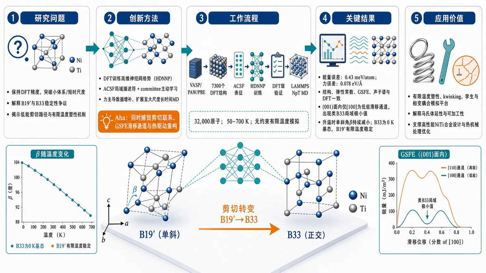
研究问题如何在保持DFT精度的前提下，突破小体系与短时间尺度限制，解释NiTi马氏体中B19′与B33的稳定性争议、低能剪切路径以及有限温度下的结构演化与塑性机制。创新方法构建面向NiTi马氏体的DFT训练高维神经网络势（HDNNP），结合ACSF局域描述符、committee active learning与力主导的数据增补，把DFT精度扩展到大尺度、长时间的无约束有限温度MD；关键“Aha”点是用机器学习势同时捕捉B19′→B33剪切联系、GSFE低能滑移通道和热驱动重构。工作流程VASP/PAW/PBE生成7300个DFT结构与能量力数据 → 用ACSF表征局域原子环境并训练HDNNP → 通过结构、弹性常数、GSFE、声子谱逐层验证 → 将势函数接入LAMMPS进行32,000原子NpT分子动力学 → 在50–700 K下观察单斜角变化、原子重排与剪切驱动结构演化。关键结果HDNNP在结构参数、弹性常数、GSFE和声子谱上与DFT高度一致，能量误差低至0.43 meV/atom、力误差约0.078 eV/Å；揭示(001)面内仅[100]方向是唯一低能滑移通道，并出现类似B33的局域极小值；32,000原子MD表明升温时单斜角β持续减小，B33在0 K为基态，而B19′可在有限温度下被热效应稳定。应用价值为NiTi形状记忆合金提供可直接模拟有限温度塑性、kwinking、孪生和相变耦合的原子尺度平台，可用于解释马氏体延性与可加工性问题，并为高性能NiTi合金设计、热机械处理和缺陷/滑移机制研究提供计算工具。第一部分：核心概览
构建了一个面向 NiTi 马氏体 的 DFT 训练高维神经网络势（HDNNP），并用结构、弹性、GSFE、声子和有限温度 MD 五个层面做系统验证。关键贡献不在单点拟合，而在于把 DFT 精度 扩展到 3.2 万原子、15 ps、50–700 K 的无约束演化，直接解析 B19′–B33 竞争、各向异性滑移与温度驱动结构重构，为研究 martensite 中的 kwinking 和塑性机制提供了可计算平台。
---
第二部分：结构化快速回顾
《A high-dimensional neural network potential for finite-temperature phenomena in NiTi martensite》（None，）
背景：NiTi 的形状记忆与超弹性已知，但马氏体中的塑性、低能剪切路径以及 B19′ 与 B33 的真实稳定性仍缺乏原子尺度统一描述。
方法：以 VASP/PBE/PAW 生成 7300 个 DFT 结构，训练第二代 HDNNP；采用 ACSF 描述局域环境、committee active learning 扩充数据，并用 LAMMPS+n2p2 做 MD。
结果：HDNNP 在 结构参数、弹性常数、GSFE、声子谱 上与 DFT 高一致；给出强各向异性剪切通道 [100]M(001)M；32,000 原子 NpT MD 显示温度升高时单斜角持续减小。
讨论：B33 在 0 K 下成为 DFT 基态，但有限温度下 B19′ 可被热效应稳定；剪切路径上的 B33 类局域极小值提示 B19′→B33 的剪切耦合结构联系。
局限：实验对照未在验证部分系统展开；有限温度部分只覆盖 15 ps 时间窗，且自由能地形未被显式重建。
结论：HDNNP 成为连接 DFT 精度 与 MD 尺度 的工具，可用于大规模、长时间、有限温度下的 NiTi 马氏体结构演化研究。
---
第三部分：逐章节冷凝解析
1 Introduction
NiTi 的应用价值与未解问题
- NiTi 是最常用的形状记忆合金，但核心瓶颈仍是塑性与可加工性。关键表述是 *"several important properties such as ductility in polycrystalline materials ... are not fully understood"*，直接指向材料优化受限的根源。
- 形状记忆和超弹性来自 austenite B2 → martensite B19′ 的可逆马氏体转变，原文给出 *"the functional behavior of NiTi, i.e., the shape-memory effect and superelasticity derived from the reversible martensitic transformation of austenite (cubic B2 structure) to martensite (monoclinic B19 ′ structure)."*
- 这意味着研究重点不是简单相变，而是 B19′ 马氏体内部的变形与缺陷演化。
马氏体中的塑性并非只发生在奥氏体
- 传统观点把塑性主要归因于奥氏体，因为其滑移系更多、满足 von Mises-Taylor 准则；随后实验改写了这个图景。关键句是 *"plastic deformation in martensite dominates over a wide temperature range"*。
- 低温形变设定实验、热机械测试和 HRTEM 共同表明：B19′ 本身就是重要的塑性承载相，不能再把它视作“只负责功能转变、不负责塑性”的相。
“Kwinking” 是马氏体塑性的核心候选机制
- 新提出的机制把孪生、折带形成与传播整合为一个协同过程，原文描述为 *"cooperative twinning and the formation and propagation of kink bands by a cooperative [100] M (001) M slip mechanism."*
- 该机制被命名为 *"kwinking"*，本质上是 单一滑移系统驱动的复合非弹性机制。这解释了为何 monoclinic martensite 也可能表现出异常高延性。
B19′ 不是 0 K 下的 DFT 基态
- 重要的理论矛盾是：DFT 多次给出 orthorhombic B33 低于 B19′，原文直接指出 *"the ground state is an orthorhombic B33 structure"*。
- 这带来关键问题：实验观察到的是 B19′，DFT 0 K 基态却是 B33，说明 热力学自由能、动力学路径和有限温度稳定化 必须同时考虑。
纯 DFT 难以覆盖有限温度和大规模变形机制
- DFT 受限于小体系与高成本，原文明确说 *"the inclusion of finite temperature effects or deformation mechanisms in the structure is practically impossible."*
- 一个典型瓶颈是，连与 [100]M(001)M 易滑移相关的位错芯都还无法真正做原子级模拟。
机器学习势的定位非常明确
- 解决方案是构建 second-generation HDNNP，目标是把 DFT 的精度迁移到大体系与长时间尺度。关键句：*"Bridging the gap between the accuracy of DFT and the efficiency of MD therefore represents a key challenge"*。
- 进一步的目标是实现 *"an unconstrained search for stable structures at finite temperatures while maintaining the accuracy of DFT energy calculations."*
---
2 Methods
#### 2.1 DFT setup
DFT 作为参考基准
- 所有参考能量和力都来自 VASP；采用 PAW 和 PBE-GGA。
- 平面波截断能固定为 650 eV，Ti 的 p 电子显式作为价电子处理。
- k 点使用 Γ-centered Monkhorst–Pack 网格，按倒空间各向同性原则选取；B19′ 原胞使用 24 × 24 × 24 网格。
- Methfessel–Paxton 展宽宽度 0.05 eV；电子自洽收敛阈值 10⁻⁷ eV。
- 文中明确给出：*"All these settings ensure the energy consistency below 1 meV/atom."*
这说明训练标签的数值噪声被控制在 meV/atom 量级。
#### 2.2 Dataset
数据集围绕两个物理矛盾设计
- 第一，DFT 预测的基态 B33 与实验长期一致观测到的 B19′ 不一致；第二，实验提示某一方向缺陷更集中，尤其在 (001) plane。
- 这两个现象共同决定数据集必须覆盖 相变路径、弹性各向异性、热涨落和剪切变形。
数据规模与覆盖范围
- 数据集共有 7300 个结构，规模从 4 原子原胞 到 180 原子超胞。
- 覆盖温度相关构型，范围写明为 0–700 K。
- 初始样本通过在弛豫结构上施加随机位移生成，位移幅度 0.1–0.2 Å，使用 Atomsk。
主动学习与 committee 机制
- 先用初始集训练一个预模型，再在不同热力学系综下做 MD，持续扩展数据集。
- 扩充标准包含两类：extrapolation parameters 与 active learning。
- committee 模型由 7 个 HDNNP 组成，差异来自网络结构和训练/验证划分。
- 选择标准是力预测分歧：*"the standard deviation of the committee disagreement for each force component was less than 0.03 eV / Å."*
- 训练样本优先加入 力差异最大 的构型，因为 *"atomic forces serve as more sensitive indicators of model accuracy than total energies"*。
这个数据集的物理目标不是泛化到所有 NiTi，而是锁定 martensite
- 核心是 B19′ 与 B33 之间的可转化路径、强各向异性弹性响应，以及有限温度下的热涨落轨迹。
#### 2.3 High-dimensional neural network potential
HDNNP 的能量与力表示
- 势能写成局域原子能的和；力由总势能对原子坐标的解析导数给出。
- 这使得能量与力在数学上自洽，而不是两个独立拟合目标。
局域环境由 ACSF 描述
- 使用 atom-centered symmetry functions (ACSFs)，截断半径 Rc = 6.36 Å。
- ACSF 同时包含 radial 与 angular 分量，并保证对 平移、旋转、同类原子置换 不变。
- 每种元素使用 72 个 descriptors。
网络结构与训练细节
- 所有网络都是 two hidden layers 的全连接模型。
- 最终模型隐藏层为 34–31，因为 *"exhibited the lowest force RMSE"*。
- 训练时留出 10% 作为测试集。
- 训练进行 30 epochs，优化器是 Kalman filter optimizer。
- 每个 epoch 中随机抽取 10% 的力分量进行拟合。
拟合精度
- 最终模型误差为：
- 能量：训练集 0.34 meV/atom，测试集 0.43 meV/atom
- 力：训练集 0.074 eV/Å，测试集 0.078 eV/Å
- 表 2 中其他模型测试集能量 RMSE 约 0.415–0.930 meV/atom，测试集力 RMSE 约 0.0641–0.0863 eV/Å。
- 说明最终模型在能量与力之间取得了相当稳的平衡。
实现工具链
- 网络用 RuNNer v1.3 构建，并通过 n2p2 接入 LAMMPS。
---
3 Validation of HDNNP
验证逻辑不是只看误差，而是看物理趋势
- 这里的目标是确认 HDNNP 是否复现 DFT 的 相对稳定性、弹性各向异性、剪切势垒和声子性质。
- 关键定位是：如果这些量一致，HDNNP 才能可靠外推到有限温度 MD。
#### 3.1 Equilibrium structures
B19′ 和 B33 都被正确重建
- 从实验 B19′ 原胞出发，DFT 和 HDNNP 都弛豫到 B33 型结构。
- 结构变化主要体现在单斜角 β：从 97.78° 增至约 107.0°。原文写得很直接：*"The structural relaxation is dominated by an increase in the monoclinic angle β from 97.78° ... to approximately 107.0°, corresponding to the B33 structure."*
- 这说明模型不仅拟合能量，还重建了 B19′→B33 的结构特征。
B19′ 的晶格参数复现良好
- B19′：
- HDNNP：a = 2.918 Å, b = 4.063 Å, c = 4.680 Å, β = 97.78°
- DFT：a = 2.926 Å, b = 4.060 Å, c = 4.635 Å, β = 97.78°
- 实验：a = 2.898 Å, b = 4.108 Å, c = 4.646 Å
- B33：
- HDNNP：2.937, 4.017, 4.915 Å, β = 107.0°
- DFT：2.933, 4.011, 4.918 Å, β = 107.0°
- 这组数值说明 HDNNP 复现的是 DFT 结构图景，并且与文献值也保持一致。
路径不是单纯沿参数插值，而是通过剪切驱动
- B19′ 与 B33 之间的路径通过沿 [100]M(001)M 施加纯应力剪切得到，原文：*"This variation is introduced through a pure stress shear applied along the crystallographic direction [100] M (001) M."*
- 这说明 monoclinic angle 不是任意几何参数，而是 剪切变形的结构秩序参量。
B33 体积更大，但仍是 0 K 基态
- 原文明确指出 *"the B33 phase exhibiting a larger volume"*。
- 这类“看似反直觉”的结果意味着：能量最低 不必对应 体积最小，结构稳定性由电子结构、键合和几何协同共同决定。
#### 3.2 Elastic tensor
弹性张量用 6 个独立应变和 36 条应力-应变线性关系提取
- 对每个结构施加 6 个独立应变分量，范围 -1% 到 +1%，保持在线弹性区间。
- 每次变形后固定晶胞形状，只放松原子位置。
- 共得到 36 条 stress–strain 曲线，斜率即弹性常数。
B19′ 的弹性各向异性被正确捕捉
- 关键指标是极低的 C55，反映剪切软化和强各向异性。
- B19′ 的主要常数：
- HDNNP：C11 144, C12 127, C13 119, C15 13, C22 216, C23 135, C25 -4, C33 252, C35 19, C44 69, C46 2, C55 14, C66 73 GPa
- DFT：C11 191, C12 126, C13 102, C15 10, C22 244, C23 122, C25 -6, C33 238, C35 14, C44 77, C46 6, C55 22, C66 78 GPa
- 与文献值比较，C55 一直保持低值：21 GPa（DFT [53]）、14 GPa（DFT [21]），表明该剪切模量确实是材料软方向。
B33 的弹性常数也被复现
- B33 主要常数：
- HDNNP：C11 164, C12 125, C13 119, C15 0, C22 219, C23 122, C25 1.3, C33 253, C35 3, C44 73, C46 1, C55 1, C66 75 GPa
- DFT：C11 189, C12 125, C13 98, C15 1, C22 233, C23 128, C25 0, C33 240, C35 2, C44 93, C46 0, C55 7, C66 84 GPa
- 说明 HDNNP 不只是对单一相有效，而是对两种相都保持一致性。
零应变时的非零剪应力意味着 B19′ 需要剪切稳定
- 原文指出：*"The non-zero shift in σ5 at zero strain ... shows that B19’ is not in the energy minimum and a non-zero shear is necessary to stabilize it."*
- 这是非常关键的机械学结论：实验 B19′ 不是自然无应力基态，而是受剪切/应力状态稳定的结构。
#### 3.3 Generalized stacking-fault energy
GSFE 的计算规模很大
- 使用 10 × 6 × 20 超胞，总计 4800 原子。
- 超胞一分为二，一侧相对另一侧以 0.1 Å 步长剪切。
- 剪切块保持刚性，另一侧只允许沿剪切面法向松弛。
只考察了三个代表性剪切方向
- B19′ 在：
- (001) 面内的 [100]
- (001) 面内的 [001]
- (100) 面内的 [001]
上计算 GSFE。
- 结果显示高度方向依赖，原文：*"The resulting energy landscapes ... exhibit a pronounced directional dependence"*。
(001) 面内只有一个真正低能滑移通道
- 全面扫描后，结论非常明确：*"within the (001) plane, only a single energetically favorable slip pathway exists, namely along the [100] direction."*
- 这说明 B19′ 的塑性并不是各向均匀的，而是被晶体学强烈约束。
与 B33 类局域极小值相连
- 文中指出这一路径与 *"the emergence of a local minimum similar to B33"* 相关。
- 这为 剪切介导的 B19′–B33 结构联系 提供了原子尺度证据，也与 kwinking 的协同滑移/孪生图景相呼应。
#### 3.4 Phonon analysis at 0 K
声子验证把二阶导数层面的准确性也检验了
- 使用 Phonopy 和动力学矩阵方法。
- 公式写明：
[
Dαβ(ij)=frac1sqrtmᵢₘⱼfracpartial²Epartial rᵢαpartial rⱼβ
]
- 这一步比能量拟合更严格，因为它检验的是势能面的局部曲率。
B33 的 pDOS 被准确复现
- 使用 3 × 3 × 3 超胞，共 108 原子。
- HDNNP 与 DFT 的 pDOS 曲线高度接近，说明振动态分布一致。
声子色散也被复现，不只是总态密度
- 在 BZ 高对称路径上比较后，HDNNP 复现了 DFT 的 phonon branch structure。
- 原文强调：*"the HDNNP reproduces not only the overall vibrational density but also the detailed phonon branch structure of the ground state."*
- 这意味着势函数足以用于后续 MD，而不是仅能做静态结构优化。
---
4 Properties of the HDNNP at finite temperature
有限温度部分是整个工作的应用落点
- 前面所有 0 K 验证都服务于这一步：在 MD 尺度 上追踪 B19′ 的温度驱动结构演化。
- 原文直接指出，HDNNP 的优势在于 *"extend this level of accuracy to system sizes and timescales beyond DFT approaches."*
MD 规模大且设置清楚
- 体系包含 32,000 原子，由实验原胞沿三个方向各复制 20 次构成。
- 系综是 NpT，使用 Nosé-Hoover barostat，外部应力为 zero stress field。
- 时间步长 1 fs，总时长 15 ps。
- 结构通常在 约 8 ps 内完成松弛。
- 温度扫描范围 50–700 K。
平均结构的重建方式很细
- 不是只看晶胞参数，而是根据瞬时超胞尺寸重建原胞平均位置。
- 因而能得到每个温度下的：
- 晶格常数
- 单斜角
- 原子平均坐标及其热涨落
- 结果以均值和标准差给出。
温度升高时，单斜角持续减小
- 50 K 时：
- β = 107.257 ± 0.057°
- a = 2.940 ± 0.000 Å
- b = 4.017 ± 0.001 Å
- c = 4.920 ± 0.012 Å
- 650 K 时：
- β = 99.357 ± 0.097°
- a = 2.969 ± 0.001 Å
- b = 4.100 ± 0.003 Å
- c = 4.703 ± 0.008 Å
- 这组数据清楚表明，升温主要表现为单斜畸变减弱，结构向较低 monoclinic distortion 的状态演化。
晶格参数和原子坐标都在平滑重排
- a 和 b 轻微增大，c 逐渐减小，说明热膨胀具有明显各向异性。
- Ti 原子平均位置基本保持在对称位置附近，而 Ni 原子的 x 坐标随温度增加而上移，说明内部坐标也参与了热重构。
结构演化由协同剪切主导
- 最关键的机制句是：*"The structural change is mainly driven by a shear-like mechanism of the atomic blocks of two Ni and two Ti atomic layers in the [100] M (001) M direction."*
- 这把有限温度结构演化直接连回前面的 低能剪切路径，说明温度不是随机扰动，而是在引导体系沿特定晶向重排。
---
第四部分：深度理解与语言支持
1) 关键术语解析
High-dimensional neural network potential (HDNNP)
- 不是“高维神经网络”这么泛泛的说法，而是指把总势能写成许多 局域原子能 的和，每个原子能由其局域环境映射得到。
- “high-dimensional” 强调的是 整体势能面维度极高，需要通过局域分解来可计算化。
- 与普通回归不同，它同时保证 能量可加性 与 力的解析可导性。
Atom-centered symmetry functions (ACSFs)
- 这是一类局域环境描述符，核心价值是对 平移、旋转、同种原子置换 不变。
- 这类不变性很重要，因为原子势函数不能依赖坐标系选择。
- radial ACSF 捕捉距离分布，angular ACSF 捕捉键角/局域取向；二者合起来才足以描述 NiTi 这种各向异性晶体。
Generalized stacking-fault energy (GSFE)
- 不是普通“层错能”那么简单，而是把半个晶体沿某个晶面相对另一半连续剪切时的能量曲面。
- 它等于对 滑移路径、位错芯、孪生/剪切障碍 的直接能量刻画。
- 在这篇工作里，GSFE 还承担了“找出唯一低能剪切方向”的功能。
Committee model / active learning
- committee 不是为了提升平均精度，而是为了估计 模型不确定性。
- 多个网络对同一构型预测差异大，说明这个局域环境对当前数据集来说是“外推区”。
- 这类方法的本质是：用模型分歧决定该补哪些数据，而不是盲目随机采样。
Monoclinic angle β
- β 不是单纯几何参数，而是 B19′ 与 B33 之间最敏感的结构秩序参量之一。
- β 从 97.78° 增至 107.0°，实际上对应了从 B19′ 向 B33 的剪切重排。
- 在有限温度 MD 中，β 随温度连续下降，说明热激发在“放松”这一单斜畸变。
2) 疑难概念拆解
为什么 0 K 的 B33 基态与实验中常见的 B19′ 并不矛盾？
- 关键是 0 K 能量 和 有限温度自由能 不是同一个量。
- DFT 给出的是电子结构主导的势能最低点；实验看到的是温度、振动熵、应力状态和动力学路径共同作用后的稳定相。
- 所以 B33 可能在 0 K 下更低能，而 B19′ 在有限温度和特定应力状态下更容易被稳定下来。
为什么 GSFE 能解释塑性，而不是只看弹性常数？
- 弹性常数只描述极小应变下的局部曲率；GSFE 直接给出 沿滑移路径的能垒。
- 只有 GSFE 才能回答“体系更愿意沿哪个晶向滑”“有没有局域极小值”“滑移是否能与相变耦合”。
- 对 martensite 这种强各向异性体系，低能滑移路径 往往比线弹性更能决定实际塑性模式。
为什么声子验证很重要？
- 能量拟合准确，不代表局域曲率准确。
- 声子谱是二阶导数层面的测试，能检验势函数是否能正确描述热涨落与晶格稳定性。
- 一旦声子谱错了，有限温度 MD 很容易产生错误的热力学行为。
---
第五部分：创新评估与关联
1) 创新性判断
相对近 2–5 年相关工作的新颖性主要在三点
第一，超越了“只做 0 K 路径”的 DFT 研究框架
- 过去相关工作多停留在：
- 通过 quasi-harmonic approximation 沿单一参数路径研究自由能
- 或用 ab initio MD 只模拟 144 原子 小超胞
- 这里把同类问题推进到 7300 结构训练 + 32,000 原子 MD，从单路径变成 大规模无约束温度演化。
第二，验证维度更完整
- 许多 ML 势只验证能量/力 RMSE。
- 这里把验证扩展到：
- equilibrium structures
- elastic tensor
- GSFE
- phonon DOS / dispersion
- finite-temperature MD evolution
- 这使得势函数不只是“数值拟合好”，而是能通过 结构—力学—振动—热演化 的全链条检验。
第三，直接给出 martensite 的低能剪切通道与热演化联系
- GSFE 明确找到 [100]M(001)M 是唯一低能路径。
- 有限温度 MD 进一步表明结构变化确实沿这个方向发生，原文把它描述为 *"shear-like mechanism"*。
- 这把 静态能量地形 和 动态温度重构 连接起来，是最有价值的机制层贡献。
解决的前人问题
- 解决了 DFT 太贵、无法同时覆盖 大体系 + 长时间 + 有限温度 的问题。
- 解决了 B19′/B33 争议中“只看 0 K 能量不够”的问题。
- 解决了 martensite 中塑性机制缺少原子尺度势函数支撑的问题，尤其是与 kwinking、孪生和单系统滑移相关的机制探索。
---
额外说明
所给正文在 Table 4 末尾截断，因此后续章节未出现在输入中；上面的解析覆盖了可见的完整章节与小节。
-
02
📄 摘要：针对聚合物、DNA 与蛋白质中的链环拓扑分类，使用扭缠密度矩阵作为输入训练前馈神经网络。对前 6 个素链环的热平衡构型实现 97% 分类准确率，延续并扩展 Sleiman 等 2024 年框架。
💡 亮点：扭缠密度矩阵可作为链环拓扑的紧凑数据表征。前馈网络对 6 类素链环达到 97% 准确率，为软物质拓扑快速识别提供实用工具。
📖 展开分析 + 配图
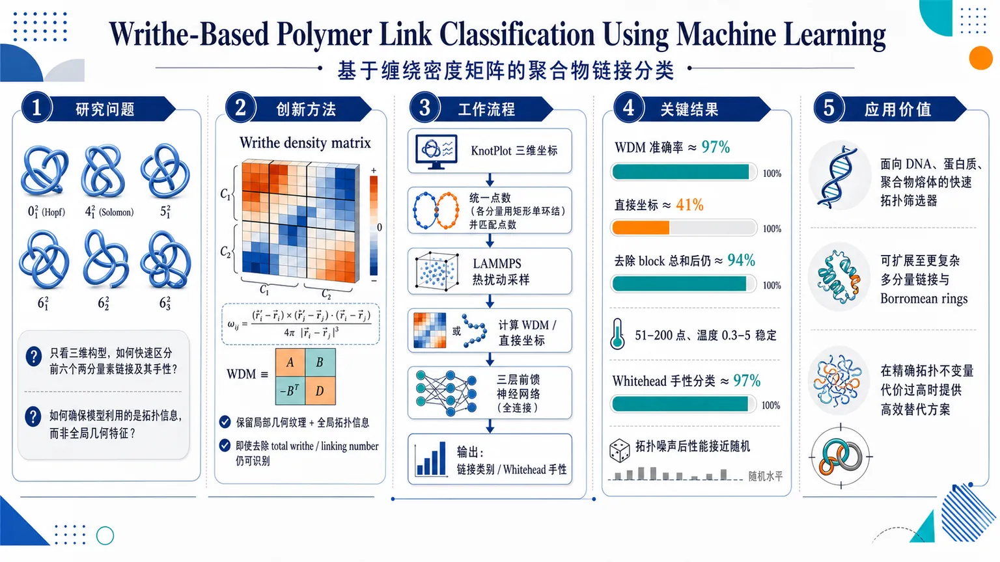
研究问题如何把多分量链接的拓扑分类转化为可快速学习的几何识别问题，在只看三维构型的情况下，准确区分前六个两分量素链接及其手性，并检验模型是否真正利用了拓扑信息而非简单全局特征。创新方法提出 writhe density matrix：把每一对链段的 Gauss 型缠绕贡献展开成矩阵块，作为神经网络输入；它不仅包含 total writhe 和 linking number 这类全局量，还保留更细粒度的局部几何纹理，因此即使去掉这些全局特征，模型仍能识别链接类型。工作流程从 KnotPlot 读取链接三维坐标；通过与矩形 unknot 连和统一每个分量的点数；用 LAMMPS 做热扰动采样生成大量构型；计算 writhe density matrix 或直接使用坐标；输入三层前馈神经网络训练、验证、测试；输出链接类别或 Whitehead link 手性。关键结果writhe density matrix 训练的分类准确率约 97%，而直接输入 (x,y,z) 坐标仅约 41%；去除每个 block 的总和、剔除 total writhe 和 linking number 后，准确率仍约 94%；在每分量 51–200 点、温度 0.3–5 范围内性能稳定；Whitehead link 手性分类也可达 97%；加入改变拓扑的高斯噪声后性能迅速退化到接近随机。应用价值为 DNA、蛋白质、聚合物熔体等真实体系提供快速、可扩展的拓扑筛选器；可用于复杂多分量链接、Borromean rings 等更难对象的自动分类；在精确计算拓扑不变量代价过高时，提供高效替代方案。第一部分：核心概览
这篇工作把链接拓扑分类转化为基于writhe density matrix的机器学习问题，针对前六个2-component prime links达到约97%分类准确率，并证明这一性能对温度与离散点数相当鲁棒。更关键的是，在去除总writhe与linking number等全局特征后，模型仍保持约94%准确率，说明矩阵中还存在更细粒度的局部几何信息。与此前偏向“shortcut learning”的结论相比，这里进一步展示了链接分类可由几何编码高效完成，同时也暴露了分子动力学采样偏置对数据集的影响。
---
第二部分：结构化快速回顾
《Writhe-Based Polymer Link Classification Using Machine Learning》（None，）
背景： 链与结的快速、唯一分类仍是开放问题；在生物聚合物、DNA、蛋白质等体系中尤为重要。既有方法多依赖代数不变量或图谱输入，难以兼顾速度、规模与几何信息。
方法： 以前六个两分量素链接为对象，将每个分量规范化为相同点数，经过 LAMMPS 热扰动生成每类 1000 个构型，共 6000 个样本；用三层前馈神经网络分别训练于 (x,y,z) 坐标或 writhe density matrix；默认每分量 N=60，训练 20 epochs，batch size 256。
结果： 坐标输入准确率仅 0.41，writhe density matrix 达到 0.97；去除每个 block 的和后仍有约 0.94；在 N=51–200、T=0.3–5 范围内准确率稳定；对加入高斯噪声的坐标，writhe 模型在 σ=2 时接近随机猜测。
讨论： 高准确率并不只来自 linking number 或 total writhe，而是来自矩阵局部结构；温度扰动保留拓扑而高斯噪声可改变拓扑，因此两类扰动对模型的影响相反，支持“拓扑敏感特征”的解释。
局限： LAMMPS 采样存在构型空间偏置；Whitehead link 的两种手性和分量交换对称性未被充分均匀采样；深度网络的内部判别机制不可解释。
结论： writhe density matrix 是一种有效的链接分类表征，适合扩展到更复杂的多分量链接、Borromean rings、polymer melts 与 DNA 网络。
---
第三部分：逐章节冷凝解析
Abstract
任务与领域定位
- 目标是解决knots and links的快速分类问题，这一问题既是数学难题，也直接关联polymer melts、DNA、proteins。
*"Unique and rapid classification of knots and links is an open mathematical problem"*，并且 *"relevant to a range of (bio)physical systems"*。
- 在既有框架基础上推进到link topology，而不是单纯 knot。
*"Extending the framework introduced in Ref. Sleiman et al. (2024)"*。
核心结果
- 用 writhe density matrix 训练的feedforward neural network 对“first six prime links”的热平衡构型达到 97% accuracy。
*"classifies thermally equilibrated configurations of the first six prime links with 97% accuracy"*
- 该准确率在温度与链长变化下保持较高。
*"this accuracy remains high across a range of temperatures and lengths of link components"*
机理判断
- 在加入会改变拓扑的Gaussian noise 后，准确率迅速下降。
*"rapidly deteriorating with the addition of topology-altering Gaussian noise"*
- 这一行为与表征中包含sensitive to topology 的特征一致。
*"consistent with the writhe density matrix containing features sensitive to topology"*
学术地位
- 结论定位为：writhe density matrix 能高效分类two-component links，并可能作为更复杂拓扑的快速筛选工具。
*"establishing machine learning as a promising tool for rapid classification of more complex link topologies"*
- 进一步强调未来面对exact numerical calculation of topological invariants 的计算瓶颈。
*"as the computational cost of exact numerical calculation of topological invariants becomes prohibitive"*
---
I Introduction
历史与问题背景
- 从编织、器物到现代数学与物理，knots and links 长期存在。
*"Knots and links have been integral to the fabric of human technology"*
- 结理论的规模极大：结已被分类到 20 crossings，而链接分类相对滞后，仅完整到 13 crossings。
*"all distinct knots up to 20 crossings"* 与 *"complete link classifications up to 13 crossings"*。
为什么 links 更难也更有意义
- 即使每个分量都单独是unknotted，整体组合仍可形成高度非平凡的缠结。
*"even in cases where each component of a link is individually unknotted"*。
- 这使 links 在真实interacting filaments 建模中更相关。
*"more relevant for modelling real-world systems of interacting filaments"*。
拓扑等价与不变量
- 核心任务是判定两个对象能否在不剪断的情况下变形为彼此。
*"whether one can be continuously deformed into the other without cutting or cutting and glueing strands"*
- 该问题依赖topological invariants。
*"topological invariants that remain unchanged under such deformations"*
- 难点不是不变量缺乏，而是同时满足computationally efficient 和 sufficiently discriminating。
*"identifying invariants that are computationally efficient and sufficiently discriminating"*
几何嵌入与拓扑的关系
- 物理系统中，拓扑对象以具体三维构型实现，curvature, writhe, spatial conformation 都携带信息。
*"curvature, writhe, and spatial conformation carry meaningful information"*
- DNA 电泳迁移和沉降与拓扑存在近线性关系。
*"there is a linear correlation between electrophoretic mobility and sedimentation on DNA topology"*
- 这提出一个自然假设：geometric embedding reflects intrinsic topology。
机器学习的前序工作
- 近期许多工作用 ML 寻找不变量之间的关系，甚至寻找新不变量。
*"machine learning to guide the discovery of relationships between existing topological invariants"*
- 结理论 ML 主要曾用diagrammatic inputs，如 braid words 和 Gauss codes，精度高但偏组合信息。
*"relying on combinatorial rather than geometric information"*
- 更近一步的工作开始使用(x,y,z)-coordinates 和 writhe density。
*"explore training deep neural networks with geometric data"*。
前作与本工作的推进
- 先前用 writhe density 训练 NNs，在 <11 crossings 的前 250 knots 上准确率超过 95%。
*"high classification accuracy (>95%) of the first 250 knots with less than 11 crossings"*
- 曾被解读为可能学习到了新不变量。
*"may be learning a previously unknown topological invariant"*
- 后续分析指出，这些网络可能在“shortcut learn”几何而非拓扑。
*"shortcut learn geometry over topology"*。
- 这里的推进是将同一框架用于first six prime links，并检验其鲁棒性与偏差来源。
*"extend the framework proposed ... and use geometric data to build a machine learning classifier of the first six prime links"*
对结果的双重解释
- 一方面，writhe density matrices 提供了足够丰富的信息。
*"provide a rich representation from which NNs can reliably distinguish link types"*
- 另一方面，分子动力学的受限构型探索会导致biased training datasets。
*"constraints introduced by the constrained exploration of configuration space ... can lead to biased training datasets"*
- 最终落点是：该方法适合作为复杂拓扑的快速分类器。
*"a promising way to build fast link classifiers"*
---
II Methods
#### II.1 Preparation of links
研究对象
- 研究对象是first six prime links made of 2 components。
*"the first six prime links made of 2 components"*
- 初始几何来自 KnotPlot 的三维坐标列表。
*"obtained from KnotPlot ... as lists of (x,y,z) coordinates"*
为什么需要规范化
- 前馈网络要求固定输入维度。
*"feedforward neural networks require fixed input dimensionality"*
- 多分量链接不能像 knot 那样简单插值和重采样，因为分量可能需要不同 rescaling。
*"such an approach is not suitable for multi-component links"*
规范化方案
- 通过与一个rectangular unknot 做 connected sum 来统一每个分量的点数。
*"normalise the links by extending each component through a connected sum with a rectangular unknot"*
- 结果是所有链接都具有相同的每分量点数，便于网络输入。
*"all links have the same number of points per component"*
---
#### II.2 LAMMPS simulation
样本生成规模
- 每种拓扑类生成 1000 个几何不同构型。
*"1000 geometrically distinct configurations"*
- 总体形成用于学习的热扰动构型集合。
*"producing ensembles of thermally fluctuating configurations"*
物理建模
- 每个离散点作为点质量，邻点之间由键连接。
*"each point ... interpreted ... as a point mass connected by bonds to its neighbours"*
- 非键相互作用使用 Lennard-Jones potential：
*"U_LJ(r)=4ϵ[(σ/r)¹²-(σ/r)⁶]"*。
- 单位制固定了 k_B, σ, ε，质量以 m 为基准。
*"the values of the Boltzmann constant, σ, and ϵ are fixed"*
两阶段模拟
- 第一步是 10000 steps 的 equilibration，用 harmonic bonds。
*"an initial equilibration of 10000 steps using harmonic bonds"*
- 第二步是 200000 steps 的 production，用 FENE bonds。
*"followed by 200000 production steps using FENE bonds"*
- equilibration 的作用是将人为拉伸的构型放松为更自然形态。
*"relax the artificially extended link configurations to more natural conformations"*
具体参数
- 粒子质量设为 1m，时间步长 0.01 ε¹/² m⁻¹/² σ⁻¹，温度 1 k_B ε⁻¹。
*"evolved with a timestep of 0.01 ... under a Langevin thermostat at a temperature of 1"*
- 非键相互作用截断于 r = 2¹/⁶σ。
*"truncated at r = 2¹/⁶σ"*
- 角势：Uₐₙgular(θ)=K(1+o̧s θ)，其中 K=10ε。
*"angles are restricted by the potential ... with K = 10ε"*
- equilibration 中键势为 Uₕₐᵣₘₒₙᵢc(r)=K(r-r₀₎²，参数 K=100 ε σ⁻², r₀₌₁.1σ。
*"with K = 100εσ⁻² and r0 = 1.1σ"*
- production 中键势为 FENE，参数 K=30 ε σ⁻², R₀₌₁.5σ。
*"with K = 30εσ⁻² and R0 = 1.5σ the maximum extent of the bond"*
拓扑验证
- 模拟后用 linking number 和 Jones polynomial 检查拓扑。
*"rely on both computations of the linking number and Jones polynomial"*
- 使用 SageMath 计算 Jones polynomial。
*"using SageMath to compute the Jones polynomial"*
---
#### II.3 The writhe density matrix
writhe 与 linking number 的数学定义
- writhe 描述三维空间中曲线的缠绕程度，取实数。
*"describes the amount of coiling of the knot in 3-dimensional space"*
- 定义采用 Gauss integral。
*"Wr(k)=1/4π∫∫ děc r₁ × děc r₂ · (ěc r₁₋ěc r₂₎/|ěc r₁₋ěc r₂|³"*
- 对多分量链接，linking number 由不同分量间的 Gauss linking integral 给出。
*"can be defined on links with more than one component"*
- writhe 不是拓扑不变量，而 linking number 是整数且是拓扑不变量。
*"the total writhe is neither a knot invariant nor an integer"*；*"the linking number is always an integer, and is a link invariant"*。
writhe density 的统一框架
- writhe density 将总 writhe 与 linking number 统一为同一核函数的积分。
*"may be naturally unified in terms of the writhe density"*
- 记为 ρᵢ,ⱼ(tᵢ,tⱼ₎，是分量 i 与 j 的逐段相互作用密度。
*"the i-j writhe density of the link"*。
离散化与矩阵化
- 对 polygonal links，把密度离散成 writhe density matrix。
*"the writhe density can be discretized to form the writhe density matrix"*
- 该矩阵是一个 n-by-n block matrix，每个 block 对应两个分量之间的离散密度。
*"an n-by-n block matrix"*
- 具体元素由相邻点差向量和位置差向量构成。
*"the p-q th entry ... is given by"* 对应公式 (9)。
计算实现
- 计算中使用了 Banchoff 的优化算法，而非直接按公式逐点求积。
*"a highly optimized algorithm from Banchoff ... is used to compute the writhe density matrix"*
对称性与可解释的全局量
- writhe density 函数是对称的，矩阵也是对称的。
*"The writhe density function is symmetric"*。
- 每个 i-i block 的和近似该分量的total writhe。
*"an approximation of the total writhe of the i-th component"*
- 每个 i-j block 的和近似两个分量的 linking number。
*"gives an approximation of the linking number"*
- 整个矩阵之和称为 total link writhe。
*"The sum of the entire matrix shall be called the total link writhe"*
---
#### II.4 Neural network architecture and training
网络结构
- 使用三层线性层的 feedforward neural network，每层后接 ReLU。
*"consists of three linear layers, each followed by the ReLU activation function"*
数据划分
- 总数据集 6000 links。
*"The dataset of 6000 links"*
- 按 90% / 7.5% / 2.5% 划分为训练、验证、测试集。
*"randomly split into training, validation, and test sets in proportions of 90%, 7.5%, and 2.5%"*
训练设置
- 训练 20 epochs，batch size 256。
*"trained for 20 epochs using a batch size of 256"*
- 损失函数为 cross-entropy loss。
*"implemented via torch.nn.CrossEntropyLoss"*
- 优化器为 Adam。
*"performed using the Adam optimizer"*
- 框架为 pytorchₗᵢghtning.Trainer。
*"Training was conducted within the pytorchₗᵢghtning.Trainer framework"*
- 早停策略：验证损失若连续 5 个 epoch 改善不足 0.05 则终止。
*"terminated if the validation loss improved by less than 0.05 over 5 consecutive epochs"*
可复现性
- 代码公开于 GitLab。
*"The code used to build and train the FFNN is available on the GitLab repository"*
---
III Results
#### III.1 Link classification is more accurate when FFNNs are trained with the writhe density
坐标输入的基线性能
- 用 (x,y,z) 坐标训练时，准确率只有 0.41。
*"low classification accuracy of 0.41 when trained on (x,y,z) Cartesian coordinates"*
- 这与先前结论一致。
*"In line with Ref. Sleiman et al. (2024)"*
writhe density 的显著提升
- 用 writhe density matrices 训练时，准确率达到 0.97。
*"a high accuracy of 0.97 is achieved when trained on the writhe density matrices"*
为什么高准确率不一定等于学到了拓扑不变量
- total writhe 能明显区分不同拓扑，但它不是拓扑不变量。
*"the distributions of total writhe – despite not being a topological invariant – can be seen to be significantly distinct"*
- 原因来自物理构型的生成约束：volume exclusion, bending rigidity, inextensible springs。
*"subject to volume exclusion, bending rigidity, and inextensible springs"*
- 若去掉这些约束，writhe 分布会变得更宽且不同拓扑难以区分。
*"would be indistinguishable between different topologies"*
可被网络轻松学习的“简单特征”
- total link writhe 可以通过对矩阵求和得到，网络容易“学到”。
*"The total link writhe is a relatively 'simple' feature"*
- linking number 也可由 1-2 block 求和得到，并可分开多数链接。
*"the linking number ... can also be relatively easily learned by the FFNN"*
去除全局特征后的检验
- 通过对每个 block 平移，使其总和为零，删除了 total writhes, total link writhe, linking numbers。
*"all blocks in the writhe density matrix have zero sum"*
- 去除后准确率仍约 0.94。
*"the neural network continues to perform very well, with an accuracy of about 0.94"*
- 说明判别信息不仅存在于全局量，还存在于local structure。
*"the writhe density matrix contains distinguishing features beyond the linking numbers and total writhes"*。
---
#### III.2 Classification accuracy of writhe-trained FFNNs is robust against longer link lengths and higher simulation temperatures
长度鲁棒性
- 默认每个分量 N=60 点。
*"Most of the results ... are obtained with links made by N = 60 points per component"*
- 在 N=51 到 200 范围内，准确率为 0.96 ± 0.01。
*"very robust for longer polymers too ... accuracy 0.96 ± 0.01 across a range of points per component from N = 51 to 200"*
温度鲁棒性
- 在不同温度下，writhe 模型仍保持 >90% 准确率。
*"remain high (>90%) even at large temperatures"*
- 在低温 T<1 k_B ε⁻¹ 时几乎 100%。
*"At low temperatures ... virtually 100%"*
- 坐标模型在所有温度下都更差，并在 T≈1 附近迅速下降。
*"their accuracy decreases rapidly as T ≃ 1"*
writhe 分布的温度效应
- 温度上升时，interquartile range 增大，说明不同拓扑的构型更容易在 writhe 上重叠。
*"the interquartile range of the total link writhe distributions ... increases"*
6₁² 链接的异常跃迁
- 6₁² 在 T≈0.5 k_B ε⁻¹ 处出现间距宽度突变。
*"an abrupt change in interquartile width ... at around T = 0.5"*
- 该现象呈现 bimodal, first-order-like transition。
*"we noticed a bimodal, first-order-like transition"*
- 低温更偏好rounder low-writhe conformations，高温更偏好elongated configuration。
*"rounder low-writhe conformations"*；*"an elongated configuration is preferred at higher temperatures"*
- 解释指向角势导致的有效刚性和buckling。
*"this increased effective rigidity locks in a round, flat and low-writhe conformation ... which then buckles at higher temperatures"*
高斯噪声实验
- 对坐标加 Gaussian noise 后，writhe 模型在 σ=2 时接近随机。
*"achieving the accuracy of random guesses after the addition of Gaussian noise with standard deviation 2"*
- 坐标模型更耐噪声，在 σ=10 之前仍优于随机。
*"outperforming random guessing until at least σ = 10"*
- 这一对比支持：writhe 模型学到的特征更topology-sensitive，而坐标模型更偏几何表面特征。
*"features learned ... being sensitive to topology"*；*"less 'topological'"*
---
#### III.3 NNs learn to distinguish the chirality of the Whitehead link
问题设定
- Whitehead link 是chiral link，与镜像不能连续变形互相得到。
*"one which cannot be smoothly deformed to its mirror image"*
- 它的 linking number = 0，因此仅靠 linking number 无法区分镜像对。
*"also has linking number 0"*
镜像构造与数据规模
- 通过将初始坐标乘以 −1 构造镜像。
*"multiplying all coordinates by −1"*
- 同样生成 1000 个热扰动构型/手性。
*"1000 thermally agitated copies of each chirality"*
分类结果
- 用完整 writhe density matrix 训练时，准确率为 0.97。
*"performs exceptionally well (accuracy of 0.97)"*
- 仅用 1-2 off-diagonal block 训练时，依然达到 0.97。
*"trained only on the 1-2 block ... classifies the two chiralities with high accuracy of 0.97"*
- 说明镜像信息编码在更细粒度的几何结构中，而非 linking number 中。
*"Despite the absence of linking number"*。
偏置采样的证据
- 两个分量的 total writhe 分布并不对称。
*"the distribution of the total writhe of the first component differs qualitatively from that of the second component"*
- 由于 Whitehead link 的两个分量拓扑上可交换，这种差异意味着采样没有充分覆盖配置空间。
*"both components of the Whitehead link are equivalent"*；*"biases the simulation towards exploring some configurations more than others"*
- 原因指向初始构型不显式尊重分量交换对称性，以及链的intrinsic rigidity。
*"the initial configuration ... does not manifestly respect the component interchange symmetry"*；*"intrinsic rigidity"*
物理相关性
- 该偏置并非纯缺陷，对具有刚性的真实聚合物系统反而相关。
*"our results are relevant for simulated systems that mimic synthetic and biological polymers"*
- 例如 DNA 长度与 persistence length 可比时，分量交换也可能受限。
*"DNA molecules of length comparable to its persistence length"*。
---
IV Conclusions
主结论
- 基础 feedforward neural networks 能高效分类前六个 2-component prime links。
*"basic feedforward neural networks can efficiently classify the first six 2-component prime links"*
- writhe density matrix 训练的准确率约 97%。
*"achieve classification accuracies of approximately 97%"*
- 明显优于直接输入 (x,y,z) 坐标的网络。
*"substantially outperformed networks trained directly on (x,y,z) coordinates"*
鲁棒性总结
- 对每分量点数从 51 到 200、温度从 0.3 到 5 k_B ε⁻¹ 的变化，准确率保持稳定。
*"stayed constant when the number of points ... varied from 51 points to 200 ... as well as when the temperature ... was varied from 0.3 to 5"*
去全局特征后的意义
- 去除 total writhe 与 linking number 后仍能保持高准确率。
*"Even in this setting, the network maintained a high classification accuracy"*
- 说明网络利用了 writhe density matrix 的其他结构信息。
*"suggesting that it exploits other structural information"*
Whitehead link 与拓扑敏感性
- 仅用 off-diagonal block 仍能区分 Whitehead link 的两种手性。
*"successful classification of the two chiralities of the Whitehead link using only the off-diagonal block"*
- 对会改变拓扑的 Gaussian noise，准确率迅速接近随机。
*"dropped rapidly to nearly the level of random guessing"*
- 与温度扰动结果合并后，支持该特征对拓扑变化敏感而对热涨落稳定。
*"preserved under thermal fluctuations ... but are disrupted by perturbations that alter topology"*
方法学警告
- 分子动力学生成训练集时存在配置空间偏置。
*"systematic distortions in the resulting datasets"*
- 强分类性能不能直接等同于真正学到了拓扑不变量。
*"care must be taken when interpreting strong classification performance as evidence for learned topological invariants"*
未来方向
- 计划扩展到 three component rings、Borromean rings 与 open curves。
*"extend this framework to analyse three component rings ... Borromean rings and open curves"*
- 目标是开发可快速量化复杂缠结的工具。
*"developing computational tools that can rapidly classify complex topologies"*
---
V Data and Code Availability
可复现资源
- 数据与代码公开在 GitLab。
*"The data and code used to build and train the FFNN is available on the GitLab repository"*
- 链接：`https://git.ecdf.ed.ac.uk/taplab/ml-links-1`
---
Acknowledgements
资金来源
- 资助来自 Royal Society 与 European Research Council，项目号 947918, TAP。
*"funding"* 与 *"grant agreement No 947918, TAP"*
- 还提到 COST Action Eutopia, CA17139。
*"the contribution of the COST Action Eutopia, CA17139"*
- 开放获取采用 CC BY 许可。
*"applied a Creative Commons Attribution (CC BY) licence"*
---
第四部分：深度理解与语言支持
1) 关键术语解析
Writhe density matrix
- 不是单一标量，而是把每对分量、每对离散段之间的Gauss-type 相互作用全部铺成矩阵。
- 学术含义：把“整体缠绕程度”拆成可学习的局部图样。
- 微妙差别：比 writhe 更细，比 linking number 更一般；前者不是不变量，后者是拓扑不变量。
Shortcut learning
- 指模型没有学到“本质规律”，而是抓住数据集中的简易、捷径式相关特征。
- 这里的“捷径”包括 total writhe、linking number、以及采样偏置导致的构型分布差异。
- 学术上这不是“模型失败”，而是“高性能来源不纯”。
Topological invariant
- 在连续变形下保持不变的量。
- 对 link 来说，linking number 属于这一类；writhe 不属于。
- 细节差别：不变量可以用于判定拓扑等价，但并不保证易于计算或足够区分所有对象。
Bimodal, first-order-like transition
- bimodal 表示分布出现两个峰，暗示体系偏好两个构型族群。
- first-order-like 表示行为像一阶相变，但未必已做严格热力学判定。
- 这里对应 6₁² 在某温度附近从低 writhe、圆扁构型转向拉长 buckled 构型。
Component interchange symmetry
- 多分量链接中，交换两个分量在拓扑上可能等价。
- 若模拟中初始构型或动力学障碍破坏了这种对称性，数据分布就会偏。
- 这会让模型学到“分量标签的采样偏差”，而非纯拓扑。
---
2) 疑难概念解释
为什么温度噪声和高斯噪声对模型的作用相反？
- 温度噪声来自 LAMMPS 动力学，链在物理势能面内热涨落，通常不改变拓扑。
- Gaussian noise 直接加到坐标上，可能把线段推过自交、穿越或破坏离散几何关系，相当于改变了输入所代表的拓扑状态。
- 所以前者测试“同拓扑下的构型鲁棒性”，后者测试“拓扑被扰动时特征是否失效”。
为什么去掉 linking number 后仍能高精度分类？
- 说明网络不只依赖全局积分量，还在利用矩阵中的局部符号模式、峰谷结构、块内排列。
- 这些局部图案可以编码手性、分量间相对位置、以及更高阶几何布局。
- 这也是“writhe density matrix 比标量不变量更富信息”的核心证据。
为什么 Whitehead link 的两个分量会出现不同 writhe 分布？
- 拓扑上它们可交换，但模拟过程不一定能充分跨越所有构型盆地。
- 如果初始构型对两个分量的空间角色不对称，动力学就会长期停留在某些局部区域。
- 结果是“理论对称”与“采样对称”分离，网络看到的是后者。
---
第五部分：创新评估与关联
1) 新颖性判断
相较 2–5 年内相关工作的主要新意
- 过去工作多集中于knots，尤其是 diagrammatic 输入、braid words、Gauss codes，或用几何坐标分类 knot。
这里直接推进到two-component links，且对象是前六个素链接，问题比单结更难。
- 过去用 writhe density 训练的工作已显示对 knot 有高准确率，并一度被解释为学到了新不变量。
这里把同一思路扩展到 link，并系统检验了：
- 温度鲁棒性
- 点数鲁棒性
- 去全局特征后的性能
- 手性区分能力
- 最关键的新增点是：在去掉 total writhe 和 linking number 后仍有 ~94% 准确率，说明 writhe density matrix 不只是携带标量不变量，而是含有更丰富的局部拓扑-几何编码。
- 同时，Gaussian noise 实验把“拓扑敏感”与“几何鲁棒”区分开来：
热涨落下保持，拓扑破坏下崩溃，这比单纯高准确率更有判别力。
- Whitehead link 的手性分类进一步表明，网络能利用off-diagonal block 中的方向性结构，而不必依赖 linking number。
前人没解决的问题
- 如何在链接而非单结上实现快速分类；
- 如何证明高准确率并非只靠 total writhe / linking number 这类简单全局特征；
- 如何区分“学到了拓扑”与“学到了几何/采样偏差”；
- 如何在物理可实现的聚合物构型中保持对复杂拓扑的高效判别。
总体判断
- 创新不在提出全新网络，而在把writhe density matrix 作为可计算、可扩展、可检验的几何表征，首次系统用于两分量素链接，并通过一系列消融与扰动实验把“分类能力”与“拓扑信息来源”拆开验证。
-
03
📊 含图深析
📄 摘要：面向半导体自旋量子比特阵列调谐，处理孤立模式双量子点电荷稳定图；该模式中电荷跃迁近似为竖直线，适合紧凑任务专用模型。工作将机器学习用于自动识别电荷态/跃迁特征，补足以往主要针对库耦合器件的 CSM 分析。
💡 亮点：把孤立模式双量子点 CSM 的近竖直跃迁结构转化为机器学习识别任务。该路线直接服务自旋量子比特阵列自动调谐，减少人工判图瓶颈。
📖 展开分析 + 配图
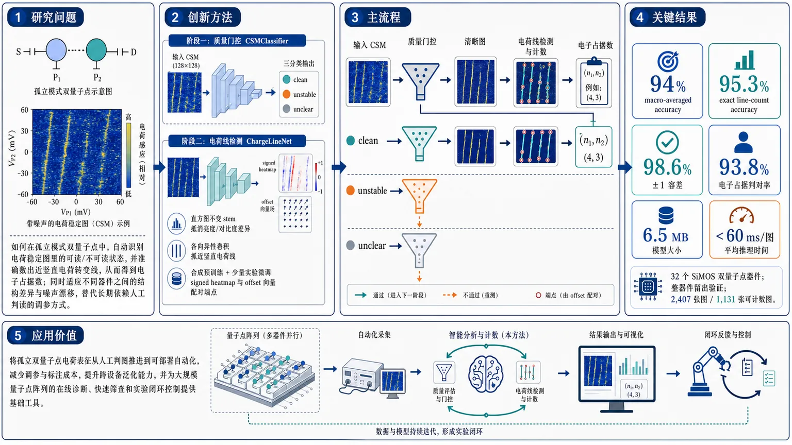
研究问题如何在孤立模式双量子点中，自动识别电荷稳定图里的“可读/不可读”状态，并准确数出近竖直电荷转变线，从而得到电子占据数；同时还要适应不同器件之间的结构差异与噪声漂移，替代长期依赖人工判读的调参方式。创新方法提出两级轻量 CNN 流水线：先用 CSMClassifier 做质量门控，把图像分成 clean、unstable、unclear；再用 ChargeLineNet 进行方向选择性的线检测与计数。核心亮点是：用 histogram-invariant stem 抵消不同器件的亮度/对比度差异；用 anisotropic 卷积专门抓近竖直电荷线，压制伪点分支；用合成数据预训练加少量实验数据微调，跨越真实与模拟的域差距；线计数则用 signed heatmap 加 offset 向量，把起点和终点成对关联。工作流程输入电荷稳定图 CSM 后，先进入 CSMClassifier 判断质量：clean 图保留，unstable 或 unclear 图直接标记重测；对通过筛查的 clean 图，再送入 ChargeLineNet。模型先输出带正负符号的端点热图，再输出端点偏移向量，把一对起止点配对成一条电荷转变线，最后统计 surviving line pairs 得到电子占据数。关键结果在 32 个 SiMOS 双量子点器件的整器件留出验证中，CSMClassifier 在 2,407 张图上达到 94% macro-averaged accuracy；ChargeLineNet 在 1,131 张可计数图上达到 95.3% exact line-count accuracy，±1 容差内达 98.6%；两者串联后，在干净留出图像上的电子占据判对率达到 93.8%。系统总参数约 6.5 MB，单图推理少于 60 ms。应用价值把孤立双量子点的电荷表征从人工判图推进到可部署自动化，能显著减少调参和标注成本，提升新器件的跨设备泛化能力，并为大规模量子点阵列的在线诊断、快速筛查和实验闭环控制提供基础工具。可见原文止于 Figure 5 的方法部分，后续 Results / Discussion / Conclusion 未出现在输入中。以下解析覆盖已给出的章节，并补足摘要中的结果信息。
第一部分：核心概览
这篇工作把孤立模式双量子点的电荷稳定图（CSM）分析，从传统的人工判读推进到可部署的自动化流水线。核心贡献是两类轻量级 CNN：一个做质量筛查，一个做电荷转变线计数，并用合成数据预训练 + 实验数据微调跨越域差距。相较于既有主要面向 reservoir-coupled 体系的视觉模型，这里直接面向孤立模式的近竖直线结构、伪点杂散结构和设备间差异，完成跨设备泛化、低标注依赖和实验室硬件可运行的整套方案。
---
第二部分：结构化快速回顾
《Machine Learning for Charge State Characterization of Isolated Double Quantum Dots》（None，）
- 背景：硅基双量子点阵列扩展到容错量子计算时，调参与电荷占据判定仍高度依赖人工；isolated mode 下的 CSM 与传统 reservoir-coupled 场景不同，现有自动化分析覆盖不足。
- 方法：构建两级流水线：CSMClassifier 先筛掉unstable / unclear 图像，ChargeLineNet 再对可判读图像做线定位与电子数读取；前者纯实验数据训练，后者用合成预训练 + 实验微调。
- 结果：在 32 个 SiMOS DQD 器件上，16 个训练、16 个整器件留出验证；CSMClassifier 在 2,407 张留出图像上达 94% macro-averaged accuracy，ChargeLineNet 在 1,131 张可人工计数图像上达 95.3% exact line-count accuracy（98.6% within ±1），联合流水线在干净留出图像上电子占据判对率 93.8%。
- 讨论：孤立模式的近竖直线型态使任务更适合小型任务定制模型；orientation-selective 卷积能抑制伪点分支和背景边缘；质量门控 是必要前置步骤。
- 局限：训练器件虽多，但仍局限于 SiMOS 双量子点与低占据数区间；线计数只评估 0–7 线范围；相关结果依赖手工标注与留出器件集合。
- 结论：6.5 MB、单图 <60 ms 的两模型系统，提供了面向孤立模式量子点阵列的可扩展自动表征路径。
---
第三部分：逐章节冷凝解析
I Introduction
孤立模式把电荷分析从“蜂窝图”简化为近竖直线计数
- 量子点阵列扩展的瓶颈首先落在调参与电荷占据识别上。导言明确指出，优化与测量依赖charge stability maps (CSMs)，而人工分析仍占主导：*“still largely performed by hand”*。
- isolated mode 的物理图像显著不同：先将电子“flooding”进低电子数区，再抬高 B1/B2 将 SET 和 reservoir “pinch off”，从而固定总电子数。对应 CSM 从蜂窝结构坍缩为更简单的电荷转移线：*“the familiar honeycomb stability pattern collapses into a simpler set of transitions”*。
- 这一简化直接支持自动分析：*“charge occupancy can be determined by counting long near-vertical lines”*。在这里，任务的本质不是泛化到任意几何，而是识别固定方向、低结构熵的线条。
- 物理上，孤立模式还能增强interdot tunnel coupling 的可调范围，并抑制 reservoir 相关寄生效应，例如 *“photon-assisted tunneling”*，所以这种模式不仅是分析对象，也是优选的器件工作模式。
现有 ML 主要覆盖 reservoir-coupled，不覆盖这里的识别难点
- 既有工作多数针对传统 reservoir-coupled 量子点图像，关键词是 *“vision-based machine learning”*，但这里的孤立模式带来另一类任务：近竖直线、背景漂移、伪点分支、感测器失调。
- 导言明确区分：*“the isolated-mode regime that is our focus here presents a distinct analysis problem”*。这句话直接界定了问题边界，也解释了为何不能简单复用既有模型。
- 即便线条“看起来更简单”，传统几何无关的计数器仍会误判，因为真正要数的是 plunger-gate 相关转移，而不是任何边缘或峰值：*“branching structures arising from electrons loading into parasitic dots”*、*“background transitions and sensor artefacts”* 会制造假边缘。
- 因此需要orientation-selective 的学习式模型，而不是 Hough transform 或 column projection 这类启发式方法。文中给出对照：精调后的经典计数器只有 61% exact line-count accuracy，且对超参数不敏感。
两个任务被拆成“质量筛查 + 线计数”两阶段流水线
- 孤立模式下，若 B1/B2、SET、reservoir 没调好，仍会发生单次扫描内的随机跳变，形成 unstable 图像；SET 漂移或扰动则会形成 unclear 图像。先做质量判断是必要的：*“detecting such unstable or disturbed images is therefore an essential first step”*。
- 这里的质量门控沿用了 reservoir-coupled 领域中的“gatekeeper”思想，但分类标签更贴近孤立模式失效模式：*“categories tailored to its characteristic failure modes”*。
- 论文目标不是仅仅丢弃坏图，而是将筛查与下游计数整合为操作闭环：异常图像一旦被标出，就提示重新调参，而非被动等待可读图像出现。
方法贡献是两个紧凑 CNN，而不是大型通用视觉模型
- 两个模型都控制在 under a million parameters，目的是适配新器件代际下稀缺标注数据，并可运行在标准实验室硬件上。
- 第一个模型 CSMClassifier：对每张图独立判断 clean / unstable / unclear。
- 第二个模型 ChargeLineNet：输出signed heatmap 与 offset vector，完成线定位和计数。
- 同时引入 transfer learning：*“using a combination of a large amount of computationally cheap synthetic data and a nominal amount of experimental data”*，用合成数据先建立结构，再用少量真机图跨过 domain gap。
跨设备泛化是评估重点，不是同器件内拟合
- 数据来自 32 个 SiMOS 双量子点器件，约 1 K 测量，且器件“不完全同构”：*“they span a range of designs”*，包括 gate pitch、gate width、oxide thickness 差异。
- 采用整器件留出：前 16 个器件供训练，后 16 个器件完全留出做验证。这个设置比随机切片更严格，因为它检验的是跨器件泛化而非同器件插值。
- 导言还给出前置工作脉络：此前只做过 U-Net segmentation，用于标出变化的隧穿耦合区域；这次升级到真正的调参所需输出：quality screening + explicit charge-transition line counting。
---
II Model and Methods
统一训练框架，但任务分化明显
- 两个模型都用 PyTorch、离线训练、单 GPU 训练、预录制 CSM。共享训练配方包括 AdamW、cosine learning-rate schedule、短 linear warm-up、gradient-norm clipping、随机翻转与分辨率缩放增强。
- 这说明工程目标非常清晰：保持模型小、训练稳定、部署轻量，而不是追求极高复杂度。
数据划分强调器件级泛化
- 共 32 个器件，每个带 integrated SET charge sensor，测于约 1 K。
- 前 16 个器件内部再做 95/5 训练/测试切分；后 16 个器件完全作为 held-out validation。
- CSMClassifier 的验证集是 2,407 张带质量标签图像；ChargeLineNet 的验证集是其中 1,131 张可可靠计数的子集，且仅覆盖 0–7 线范围。
- 训练图像数也不同：分类器用 10,060 张手工标注实验图；线计数器微调用 6,452 张可计数图。
两模型被串成真实部署流水线
- 部署时顺序固定：CSMClassifier 先做质量门控，只把被判为 clean 的图像送入 ChargeLineNet。
- 被判为 unstable 或 unclear 的图像直接退回重测，而不是勉强计数。
- 联合评估在两模型共同覆盖的 2,407 张图像上进行，其中 693 张同时是 clean 且有可靠真值计数。
架构差异体现任务差异
- 分类器是encoder-only CNN：输入缩放至 128×128，经过 histogram-invariant stem、4 个 isotropic residual encoder stage、8×8 bottleneck、GAP 到 128维向量，再经两层 MLP 输出 3 个 logit。
- 线计数器是 U-Net：3 个 anisotropic encoder level + 3 个 decoder level + skip connections，最终输出 3 通道空间图。
- 分类器不需要 decoder，因为任务只需图像级标签；线计数需要像素级定位，所以必须保留空间结构。
---
II.1 CSM Quality Classification: CSMClassifier
#### Task formulation
三类质量标签对应三种不同失效模式
- 三个类别是 clean, unstable, unclear。
- clean：线条清晰，适合自动分析。
- unstable：扫描过程中电子占据跳变，表现为线条中途出现/消失，典型机制包括 *“telegraph switching or spurious tunnelling into and out of the dots”*。
- unclear：连人都难以可靠计数，原因包括低信号、sensor artefacts、背景转移、SET 失效等。
- unstable 与 unclear 不是互斥类；图像可以同时属于两者，所以输出采用独立 sigmoid，而不是 softmax。
标签策略刻意保守
- 任何退化图像都被标记出来，目的是先纠正器件或传感器问题，再进入计数阶段：*“any degraded image is flagged so that the operator can take corrective action”*。
- 这种定义不回答“这张差图是否还能勉强数”，而是服务于流水线安全性。
#### Model architecture
分类器是为图像级判别设计的轻量 encoder
- 输入为单通道 CSM，尺寸 128×128。
- 开头的 histogram-invariant stem 用于消除不同器件和 cooldown 之间的全局亮度/对比度偏移：*“removes global brightness and contrast differences”*。
- 编码器使用 4 个 isotropic 3×3 residual blocks，配 2×2 max pooling，逐步加宽通道。
- 到 8×8 bottleneck 后使用 adaptive average pooling 压缩为 128-dimensional vector。
- 两层 MLP head 输出 3 个类别 logit；推理时每个 logit 单独 sigmoid，允许多标签同时激活。
为什么不用 anisotropic 卷积
- 质量问题的空间表现是各向无关的：*“charge instability manifests as abrupt horizontal discontinuities, sensor drift as slow vertical gradients”*，因此无需方向选择性滤波。
- 这个设计决定与 ChargeLineNet 形成鲜明对照：质量分类偏全局、线计数偏方向敏感。
#### Loss function
采用多标签 BCE with logits
- 损失是binary cross-entropy with logits，对 3 个输出独立计算。
- 可启用基于正类频率倒数的 per-class positive weights 来处理类别不平衡。
- 这种设计与多标签结构一致，因为 clean/unstable/unclear 并非互斥。
#### Training procedure
纯实验数据训练，不做合成预训练
- 分类器完全基于真实实验数据训练，未使用 synthetic pre-training。
- 原因很直接：它要识别的是真实设备中的 charge instability, sensor drift, measurement noise patterns，这些难以被模拟器忠实复现。
- 训练集规模是 10,060 张手工标注图，来自 16 个器件；留出器件提供 2,407 张验证图。
- 这个任务更依赖真实失效模式，而不是几何模板，因此与线计数器的数据策略不同。
---
II.2 Charge-Transition Line Detection: ChargeLineNet
#### Task formulation
线计数对应低占据数孤立模式的核心读出
- 任务是识别近竖直的charge-transition lines，其起点与终点编码电化学势变化，线数直接报告电子占据数。
- 模型优化目标聚焦于 fewer than ∼10 electrons per double dot 的低占据区间，特别是 2、4、6 电子配置，因为它们对应 Pauli spin blockade 搜索与自旋量子比特读出。
- 训练对象不是“只干净”的图，而是所有可由人可靠计数的图，包含轻微背景结构和噪声，这样模型才能在真实实验条件下鲁棒工作。
必须排除伪点分支
- 许多器件几何会出现由门下寄生点引起的蜂窝分支，形成与目标无关的额外转移线。
- 模型必须只数 plunger-gate 相关的近竖直线，而忽略这些分支。
- 文中对比说明：若用几何无关经典启发式，会把这些边缘也算进去。
热图 + 偏移量的点检测式表述
- 输出为三通道 hatYinR³× H× W。
- Channel 0 是 signed heatmap：正高斯峰标记起点，负高斯峰标记终点。
- Channels 1–2 是 offset vector ((Δ x,Δ y))，从终点指向其配对起点。
- 真值用 σ = 1 px 的各向同性高斯构造。
- 这种表述有两个直接收益：
1) 保留完整空间信息；
2) 用 offset 解决近距离 blob 融合导致的欠计数问题。
- 标注成本也低：每条线只需 两次点击，比像素级分割简单得多。
#### Model architecture
线计数器是任务定制的 U-Net 变体
- 采用标准 encoder–decoder U-Net，但加上 anisotropic branches 和 histogram-invariant stem。
- 设计依据三点：
(i) 线条方向/宽度变化大；
(ii) 实验图与模拟图全局强度差异大；
(iii) 起终点需精确到几像素。
- 编码器有 3 个 anisotropic levels，每层用 6 条并行卷积分支，覆盖从 7×1 到 1×15 的多种方向和尺度。
- 解码器用双线性上采样与 skip connections 逐步恢复分辨率，最终经 1×1 convolution 输出 3 个通道。
- 默认 base channel width c1 = 32 时，总参数量为 935,283。
方向选择性是关键
- 6 个分支中，7×1 和某些 3×3 分支锁定近竖直线，1×7 与 1×15 分支响应横向调制。
- 这种结构直接对应 CSM 中线条的几何特征，而不是把所有边缘一视同仁。
#### Loss function
联合监督热图与偏移量
- 第一项是foreground-weighted MSE，作用于 signed heatmap 的 channel 0，并对 blob 中心附近加权，使漏检 blob 代价更高。
- 第二项是masked smooth-ℓ1 loss，作用于 offset channels 1–2，只在终点 blob 位置激活。
- 这个损失组合把“找点”和“配对”同时纳入训练，避免只学到局部峰值却无法正确连线。
#### Training procedure
合成预训练用于填补域差距
- ChargeLineNet 先在合成 CSM 上预训练，再用 6,452 张实验标注图微调。
- 目标是让模型先掌握线结构，再适应实验噪声、对比度变化和背景复杂度。
- 文中强调 domain gap 是关键障碍，微调策略就是为此设计。
#### Inference and line counting
从热图与偏移量恢复线段，再由线段数得到电子数
- 推理时先检测 signed heatmap 中的端点 blob。
- 再用 offset vector 找到对应起点，并将起点“snapped”到最近的 start blob。
- 只有通过配对筛选的线段才计入电子数：*“The electron count is the number of surviving line pairs”*。
- 这里的热图和 offset 彼此补充：热图负责定位，offset 负责匹配，二者缺一不可。
---
第四部分：深度理解与语言支持
术语解析
- Isolated mode
- 不是“单独操作”那么简单，而是把 dots 与 reservoir、SET 通过抬高 barrier 实际隔离，使总电子数固定。
- 学术含义：问题从“是否从 reservoir 加入电子”变成“在两个点之间重新分配固定电子数”。
- Charge stability map (CSM)
- 这是以两门电压为坐标、以传感器电流为像素值的二维图。
- 关键差别：在 reservoir-coupled 体系里常见蜂窝图；在 isolated mode 下，蜂窝塌缩成近竖直电荷转移线。
- Histogram-invariant stem
- 指网络开头的预处理/初始卷积块，目的不是提取高阶语义，而是消除全局亮度、对比度、直方图差异。
- 学术微妙处：它更像“跨设备归一化入口”，为后续卷积提供稳定输入分布。
- Anisotropic blocks
- 不同于标准 3×3 isotropic 卷积，这里并行使用 7×1、1×7、1×15 等方向性核。
- 学术含义：把“线条方向”显式写进特征提取器，尤其适合近竖直线和背景横向调制同时存在的图像。
- Signed heatmap
- 不是普通热图，而是正负号编码语义：正峰表示 start，负峰表示 end。
- 细微差别：这让同一通道同时承载“位置 + 类型”，减少额外分类头的需要。
疑难查证
为什么分类器用独立 sigmoid，而不是 softmax？
- 三类里 unstable 和 unclear 可以同时成立。
- softmax 强迫总和为 1，会把“同时失稳且不清晰”的图压成互斥选择，破坏标签语义。
- 独立 sigmoid 则允许一个图同时触发多个坏标签，这更符合实验现实。
为什么线计数不用普通分割，而要 signed heatmap + offset？
- 线条在近距离时会粘连，纯分割只能告诉“这里有一团”，不一定能稳定分开每条线。
- signed heatmap 把起点/终点显式区分，offset 则负责“这两个端点属于同一条线”的配对。
- 这相当于把“检测”和“关联”同时编码进监督信号，能避免仅靠局部峰值导致的系统性欠计数。
为什么对训练器件做整器件留出，而不是随机切分图像？
- 同一器件的图像高度相似，随机切分会把同一器件的统计特征泄漏到验证集。
- 整器件留出迫使模型面对真正的跨器件差异：门宽、间距、氧化层厚度、工艺缺陷都变了。
- 这才对应未来规模化阵列中“新器件直接上机”的实际场景。
---
第五部分：创新评估与关联
创新性判断
相对于近 2–5 年相关工作的新颖性，核心增量不在“用了 CNN”，而在“把孤立模式下的调参闭环做完整了”
- 过去相关工作主要集中在reservoir-coupled 场景，任务多是图像分类、分割或一般性状态识别；这里直接转向 isolated-mode，解决的是另一套物理图像和失效模式。
- 先前的孤立模式工作更多停留在 U-Net segmentation 这类“标出变化区域”的层面；这里进一步推进到操作级任务：
1) 质量筛查；
2) 电荷转变线计数；
3) 电子占据读出。
这比纯分割更接近实验闭环。
- 第二个新意是任务分工明确：
- 质量问题用多标签分类处理；
- 线条问题用方向选择性 U-Net + signed heatmap + offsets 处理。
这比单一模型“什么都学一点”更贴近图像物理。
- 第三个新意是域转移策略：用10⁵ 量级合成图预训练，再用 6,452 张真机图微调，证明在标注稀缺时依然能保持 90%+ 准确率，而从零训练会崩溃。
- 第四个新意是跨器件泛化评估足够严格：32 个器件中整整 16 个完全留出，避免了常见的同器件泄漏式高分。
- 第五个新意是可部署性：总计 6.5 MB、单图 <60 ms，说明这不是离线研究原型，而是有实验室在线集成潜力的工具。
解决了前人没解决的问题
- 解决了孤立模式下“先判图像好坏，再做线计数”这一必要但此前缺失的自动化链路。
- 解决了伪点分支、背景漂移、SET 失调导致的误计数问题。
- 解决了新器件上电后标注稀缺与分布漂移并存时的训练难题。
- 解决了从“图像识别”走向“电荷占据读数”的最后一公里：不是只识别图像特征，而是输出可直接用于调参的电子数。
如果需要，可以继续把这篇论文整理成：
- 一页式读书笔记，或
- 答辩/Q&A 版问题清单，或
- 方法流程图 + 术语对照表。
-
04
📊 含图深析
📄 摘要：提出 Q-CHIPP，用量子神经网络预测 HLA 相关免疫原性肽/新抗原。文献信息显示发表于 Science Advances 第 12 卷第 30 期；摘要未给出数据集规模、量子线路细节或性能数值，无法进一步量化其预测增益。
💡 亮点：Q-CHIPP 将量子神经网络引入 HLA 免疫肽预测与新抗原筛选。该工作属于量子机器学习在生物分子科学中的应用探索，但公开条目未披露关键性能数值。
📖 展开分析 + 配图
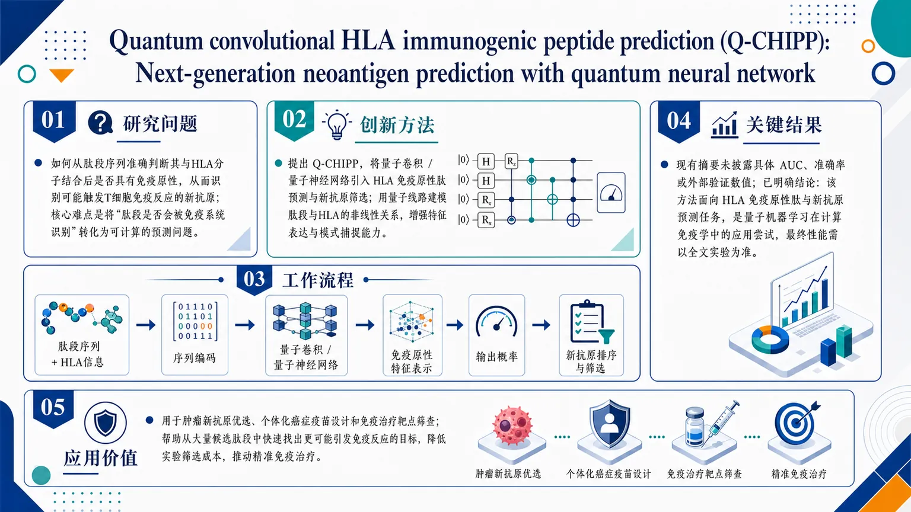
研究问题如何从肽段序列中准确判断其与HLA分子的结合后是否具有免疫原性，进而识别可能触发T细胞免疫反应的新抗原；核心难点是把“肽段是否会被免疫系统识别”转化为可计算的预测问题。创新方法提出Q-CHIPP，将量子卷积/量子神经网络引入HLA免疫原性肽预测与新抗原筛选。Aha点在于：不再只用传统深度学习或经典机器学习，而是用量子线路来建模肽段与HLA相关的非线性关系，尝试用量子特征表达提升对免疫原性模式的捕捉能力。工作流程输入肽段序列及其HLA相关信息；对序列进行编码后送入量子卷积或量子神经网络模块；模型学习肽段的免疫原性特征表示；输出每个候选肽段的免疫原性/新抗原概率；据此对候选肿瘤新抗原进行排序与筛选。关键结果现有摘要信息未披露具体实验数值、AUC、准确率或外部验证结果；已明确的结论是该方法面向HLA免疫原性肽与新抗原预测任务，属于量子机器学习在计算免疫学中的应用尝试，具体性能优劣需以全文实验为准。应用价值可用于肿瘤新抗原优选、个体化癌症疫苗设计和免疫治疗靶点筛查，帮助从大量候选肽段中快速找出更可能引发免疫反应的目标，降低实验筛选成本，推动下一代精准免疫治疗。核心概览
提出 Q-CHIPP，将量子神经网络/量子卷积用于 HLA 免疫原性肽与新抗原预测，面向肿瘤免疫相关肽段筛选。
方法要点
- 将量子神经网络引入 HLA-肽相互作用/免疫原性预测任务。
- 题名显示其核心架构为量子卷积结构。
- 任务目标覆盖HLA 免疫原性肽与新抗原预测。
- 具体量子电路设计、输入编码方式、训练细节：摘要未详述。
关键结果
- 论文明确定位为一种用于下一代新抗原预测的量子模型。
- 其目标是提升肿瘤免疫相关肽段筛选能力。
- 但摘要未给出性能指标、数据规模或对照实验，因此无法确认相对经典模型的实际增益。
创新性判断
- 可能的新颖点在于：把量子卷积神经网络直接用于 HLA-肽免疫原性/新抗原预测，区别于常见的经典深度学习方法。
- 若后续实验支持，该工作可能属于量子机器学习在免疫肽预测中的应用探索。
- 但由于摘要信息有限，量子方法是否真正带来优势、优势来自何种机制：摘要未详述。
-
05
📊 含图深析
📄 摘要：发布 OpenGEM26 数据集，含 20 万个由 H、C、N、O、S、Cl 组成、最多 10 个重原子的分子，以及 440 万个构象。计算采用 ωB97X-D/Def2-SVP 与 Def2-TZVP、含色散校正，并基于优化轨迹训练有机分子 GNN 力场 GPTFF-mol。
💡 亮点：OpenGEM26 用 440 万构象覆盖小有机分子优化轨迹。双基组 DFT 标注与 GNN 力场训练可提升分子势能面学习的数据规模和可复用性。
📖 展开分析 + 配图
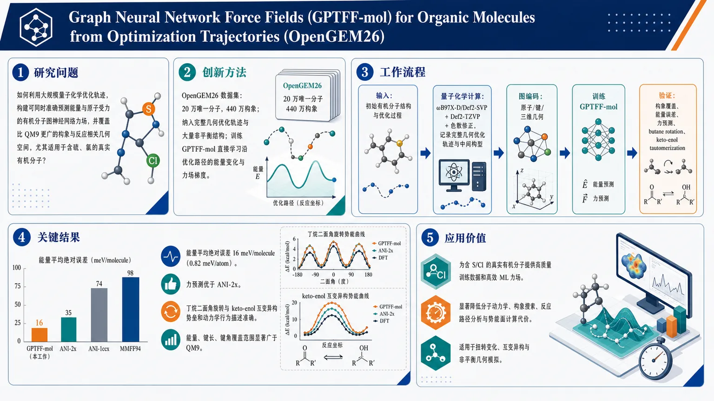
研究问题如何利用大规模量子化学优化轨迹，构建一个能同时准确预测能量与原子受力的有机分子图神经网络力场，并覆盖比 QM9 更广的构象与反应相关几何空间，尤其适用于含硫、氯的真实有机分子？创新方法核心创新在于 OpenGEM26 数据集的构建：收集 20 万个唯一分子、440 万个构象，把完整结构优化轨迹和大量非平衡结构一起纳入训练，而不是只用平衡构型；再训练图神经网络力场 GPTFF-mol，使模型直接学习沿优化路径的能量变化和力场梯度，从而获得对扭转、拉伸、反应路径更稳健的描述能力。工作流程输入为有机分子的初始结构与优化过程；先用 ωB97X-D/Def2-SVP 和 Def2-TZVP 结合色散修正进行量子化学计算，记录完整几何优化轨迹与中间非平衡构型；再将原子、键和三维几何编码为图结构，训练 GNN 力场 GPTFF-mol 学习能量与力；最后在构象覆盖、能量误差、力预测以及 butane rotation 和 keto-enol tautomerization 上验证模型。关键结果模型能量平均绝对误差达到 16 meV/molecule（0.82 meV/atom）；力预测性能优于 ANI-2x；对丁烷二面角旋转和 keto-enol 互变异构的势垒与动力学行为描述准确；数据集在能量、键长、键角上的覆盖范围明显广于 QM9，说明模型对偏离平衡的困难构型更可靠。应用价值为含 S/Cl 的有机分子提供高质量训练数据和高效 ML 力场，可显著降低分子动力学、构象搜索、反应路径分析与势能面计算的代价；特别适合需要处理扭转变化、互变异构和非平衡几何的真实化学模拟场景。以下解析仅基于当前可见的摘要与元数据；正文全文未提供，因此无法逐章核验 Introduction / Methods / Results 等完整章节。能严格确认的细节，仅限摘要中出现的内容。
---
第一部分：核心概览
这项工作构建了面向有机分子的 OpenGEM26 大规模量子化学数据集，包含 20万 个唯一分子与 440万 个构象，并据此训练出图神经网络力场 GPTFF-mol。核心贡献不只是规模扩展，而是把完整优化轨迹与大量非平衡结构纳入训练，显著拓宽了相较 QM9 更广的构象、能量、键长和键角覆盖范围。模型在能量预测上达到 16 meV/molecule（0.82 meV/atom），力预测优于 ANI-2x，并能处理含 S、Cl 的有机分子及扭转、互变异构等高变形过程，体现出面向真实分子动力学的实用价值。
---
第二部分：结构化快速回顾
Graph Neural Network Force Fields (GPTFF-mol) for Organic Molecules from Optimization Trajectories (OpenGEM26)（None，）
- 背景：传统 DFT 精度高但代价大；机器学习势能面/力场 需要更丰富、更多样的训练数据，尤其是非平衡构型与反应相关结构。
- 方法：构建 OpenGEM26，含 200,000 个唯一分子、4.4 million 个构象，元素覆盖 H, C, N, O, S, Cl，最大 10 heavy atoms；采用 ωB97X-D/Def2-SVP 与 Def2-TZVP 并加色散修正，记录完整优化轨迹；训练 GNN 力场 GPTFF-mol。
- 结果：能量误差达 16 meV/molecule（0.82 meV/atom）；力预测优于 ANI-2x；对 butane rotation 与 keto-enol tautomerization 的扭转/反应势垒描述准确。
- 讨论：数据集覆盖比 QM9 更宽的构象空间，尤其在能量、键长、键角上更丰富，适合描述失真几何与动态过程。
- 局限：分子规模限定在最多10个重原子；可见文本未给出对更大分子、长时间动力学、泛化失败案例的系统评估。
- 结论：OpenGEM26 与 GPTFF-mol 提供了面向含 S/Cl 有机分子的高质量数据资源与高效势函数，可支撑更真实的分子模拟。
---
第三部分：逐章节冷凝解析
Abstract
Dataset scale and chemical diversity
- 关键点：数据集名为 OpenGEM26 (Open Generated Ensemble of Molecules, 2026)，规模达到 200,000 unique molecules 与 4.4 million conformations。
- 细节：元素覆盖 H, C, N, O, S and Cl，分子规模“up to ten heavy atoms”，说明不仅是常见轻元素体系，还纳入了 硫 与 氯 相关有机化学空间。
- 原文引述：*“we release OpenGEM26 (Open Generated Ensemble of Molecules, 2026), a large-scale dataset comprising 200,000 unique molecules and 4.4 million conformations composed of H, C, N, O, S and Cl with up to ten heavy atoms.”*
Quantum chemistry level and trajectory completeness
- 关键点：所有计算在 ωB97X-D/Def2-SVP 与 Def2-TZVP 水平完成，并包含dispersion corrections。
- 细节：数据不仅包含静态点，还“complete structural optimization trajectories”与“abundant non-equilibrium structures”，这意味着训练样本覆盖沿优化路径的中间态，而非仅最终平衡构型。
- 学术含义：这种轨迹式数据比单点构象集更适合学习力与势能面梯度，因为力场必须在偏离平衡时仍保持稳定。
- 原文引述：*“All calculations are carried out at the ωB97X-D/Def2-SVP and Def2-TZVP levels with dispersion corrections, and complete structural optimization trajectories and abundant non-equilibrium structures are recorded.”*
Conformational space coverage beyond QM9
- 关键点：统计分析表明，该数据集在 energy, bond lengths and bond angles 上覆盖的构象空间比 QM9 更广。
- 细节：这里的比较维度不是单一指标，而是三类结构/能量坐标；说明数据多样性不仅体现在分子数目上，更体现在几何分布范围上。
- 学术意义：QM9 长期是小分子ML势的基准，但其构象偏向相对规整、平衡附近的有机分子；这里的扩展意味着模型见到更多“困难样本”。
- 原文引述：*“Statistical analyses confirm that this dataset covers a broader conformational space than QM9 in terms of energy, bond lengths and bond angles.”*
Model architecture and target task
- 关键点：训练的是一个基于 graph neural network 的势函数，命名为 GPTFF-mol。
- 细节：任务同时包括energy与force prediction，说明目标不是仅拟合能量标量，而是学习可导的原子间相互作用与梯度信息。
- 学术意义：在分子动力学中，force accuracy 往往比能量误差更直接决定轨迹质量。
- 原文引述：*“A graph neural network-based potential GPTFF-mol is trained using the new dataset”*
Energy accuracy
- 关键点：能量平均绝对误差达到 16 meV/molecule，折算为 0.82 meV/atom。
- 细节：这一数值已经给出分子尺度与原子尺度两种表达，便于和不同工作对齐；在有机小分子势中属于相当精细的误差水平。
- 原文引述：*“achieving an energy mean absolute error of 16 meV/molecule, which is equivalent to 0.82meV/atom”*
Force performance versus ANI-2x
- 关键点：力预测性能优于 ANI-2x。
- 细节：摘要未给出具体 force MAE 数值、测试集规模或统计显著性，只能确认相对优势存在。
- 学术意义：ANI-2x 是广泛使用的有机分子神经网络势基线，超过它意味着训练数据与模型在非平衡区域可能更有优势。
- 原文引述：*“and superior force prediction performance compared with ANI-2x.”*
Validation on torsional and tautomerization processes
- 关键点：通过 butane rotation 与 keto-enol tautomerization 测试模型。
- 细节：这两个任务分别代表柔性二面角扫描与化学互变异构/反应势垒，都依赖对非平衡几何的可靠外推。
- 结果含义：模型能“accurately describes molecular dynamical behaviors and reaction barriers at distorted geometries”，说明不仅拟合附近构型，也能处理变形后路径上的能量变化。
- 原文引述：*“Validated by butane rotation and keto-enol tautomerization tests, the model accurately describes molecular dynamical behaviors and reaction barriers at distorted geometries.”*
Practical scope for sulfur- and chlorine-containing molecules
- 关键点：工作面向 sulfur- and chlorine-containing organic molecules，强调化学空间扩展。
- 细节：这类分子往往比纯 CHNO 体系更难，因为 S/Cl 引入更复杂的电子结构、极化与非键相互作用。
- 原文引述：*“This work provides a high-quality resource and robust ML potential for efficient simulations of sulfur- and chlorine-containing organic molecules.”*
---
第四部分：深度理解与语言支持
1. 术语解析
Optimization trajectories
- 指几何优化过程中一串连续结构，不是单个最优构型。
- 学术上重要之处在于：包含远离平衡态的中间点，适合训练力与势能面局部曲率。
Non-equilibrium structures
- 指不在局部能量最低点的构型。
- 与“equilibrium structures”不同，这类结构更接近真实动力学中的瞬时状态，也是许多ML势最容易失真的区域。
Conformational space
- 指分子所有可能三维构象组成的空间。
- 这里“broader conformational space”意味着不仅样本更多，而且几何分布更广，覆盖更多扭转、弯曲和拉伸模式。
Force prediction
- 不只是预测总能量，而是预测每个原子的受力向量。
- 对分子动力学尤为关键，因为轨迹演化由力直接驱动；力误差小，长期模拟才稳定。
Distorted geometries
- 指偏离正常平衡键长/键角/二面角的几何。
- 这类几何经常决定反应路径、过渡态附近的可信度，也是传统小数据势模型的难点。
2. 疑难查证
为什么“完整优化轨迹”比“随机采样构象”更有价值？
- 随机构象集通常集中在某种经验规则下生成的可行结构，覆盖面可能广，但与真实量子优化路径未必一致。
- 完整优化轨迹记录了从初始几何到收敛几何的连续变化，天然包含：
- 键长逐步收缩或拉伸，
- 二面角的连续翻转，
- 力与能量的梯度响应，
- 接近局部极小值之前的大范围非线性区间。
- 对学习势能面而言，这相当于同时看到“目标答案”和“怎么走过去”的过程，因此比只看终点更能训练出可用于动力学的模型。
为什么 keto-enol tautomerization 特别能检验模型？
- 互变异构不仅是几何变化，还涉及氢转移与电子结构重排。
- 这要求模型不仅记住“形状像什么”，还要正确表达能量如何随反应坐标变化。
- 若模型在此处表现好，通常意味着它对反应势垒和过渡区的描述比普通构象扫描更可靠。
---
第五部分：创新评估与关联
1. 创新性判断
相较于过去 2–5 年的相关工作，新颖性主要落在四点：
第一，数据来源从“静态构象”推进到“优化轨迹”
- 许多有机分子 ML 势工作仍以平衡构象、随机扰动构象或少量扫描点为主。
- 这里直接使用complete structural optimization trajectories 与大量non-equilibrium structures，更贴近实际势能面学习需求。
第二，化学覆盖从常见 CHNO 扩展到 S/Cl
- 过去很多基准集中在 QM9 类型的小分子空间，元素集偏窄。
- 这里显式纳入 sulfur- and chlorine-containing 有机分子，提升了对真实有机化学空间的覆盖。
第三，数据规模与结构多样性同时扩大
- 200,000 个唯一分子、4.4 million 个构象，且在 energy, bond lengths and bond angles 上比 QM9 更广。
- 这不是单纯“更多分子”，而是“更多高难度几何状态”。
第四，验证任务更接近实际动力学与反应过程
- butane rotation 检验柔性构象演化；
- keto-enol tautomerization 检验反应相关势垒。
- 这比只看静态测试误差更能证明模型可用于真实模拟。
解决的前人问题
- QM9式数据覆盖不足：平衡构象多，偏离平衡区域少。
- 力学习不足：很多模型能量还可以，力不够稳。
- 含硫/氯体系缺口：真实有机分子常见但常被忽略。
- 反应/扭转路径验证不足：只在标准测试集上好，不代表动力学可靠。
综合判断
这项工作的主要创新不是提出全新网络结构，而是通过高质量、大规模、轨迹式数据集推动 GNN 力场进入更广的有机化学空间，并用非平衡与反应相关测试证明其可用性。其学术价值更偏向数据范式升级 + 训练分布升级 + 真实动力学可用性升级。
---
如果需要，我可以继续把这篇论文整理成：
- 一页式论文卡片，或
- “方法—实验—贡献—局限”对照表，或
- 适合组会汇报的 5 分钟讲稿。
-
06
📊 含图深析
📄 摘要：面向可持续玻璃组成发现，整合分子动力学、机器学习预测与机器人合成。npj Computational Materials 条目未提供具体玻璃体系、性能指标或闭环轮次数值，但题名表明流程覆盖计算筛选到自动实验验证。
💡 亮点：玻璃发现流程将 MD、机器学习与机器人合成连成闭环。该范式适合高维玻璃组成空间中的快速筛选与实验验证。
📖 展开分析 + 配图
研究问题如何在可持续玻璃材料发现中，借助模拟、预测与自动化实验，快速筛选并验证候选配方，缩短传统试错式研发周期？创新方法将分子动力学（MD）、机器学习（ML）与机器人合成串联为一条“模拟—预测—实验验证”的一体化发现链：MD用于探索玻璃结构与性质，ML负责快速预测与排序，机器人完成自动制备和验证，实现面向玻璃材料的加速发现。工作流程输入候选玻璃组成与配方 → 分子动力学模拟生成结构/性质线索 → 机器学习对候选进行预测与优先级排序 → 机器人合成高优先级样品 → 快速实验验证 → 结果反馈用于继续筛选与优化。关键结果论文构建了面向可持续玻璃发现的集成式加速框架，证明MD、ML和机器人合成可以无缝衔接，用于实验筛选的自动化与加速；摘要未给出具体性能提升数值。应用价值为可持续玻璃材料提供更快、更自动化的发现路径，减少人工试验与材料搜索成本，支持节能、低碳、环保玻璃配方的开发。核心概览（100字内）
该文面向可持续玻璃配方发现，将分子动力学、机器学习与机器人合成整合为一体化流程，意在通过“模拟—筛选—自动化实验验证”加速新玻璃组成的发现，属于计算材料学/材料加速发现方向。
方法要点
- 采用分子动力学（MD）生成玻璃相关的结构与性质数据。
- 用机器学习模型对候选玻璃组成进行筛选与优选。
- 引入机器人合成/自动化实验对候选配方进行验证。
- 整体上是一个模拟与实验联动的加速发现流程。
关键结果
- 论文明确目标是加速可持续玻璃配方发现。
- 摘要指出该工作实现了MD、ML 与机器人合成的整合。
- 题名与摘要共同表明，该流程覆盖了数据生成、候选筛选和实验验证三个环节。
- 具体玻璃体系、筛选规模、性能提升幅度等摘要未详述。
创新性判断
- 其新颖点很可能在于：把分子模拟、数据驱动筛选和机器人实验串成闭环或半闭环流程，用于玻璃配方发现，而非只做单一模拟或单一实验。
- 相比同方向工作，可能的贡献是面向可持续玻璃这一应用目标，并将自动化合成纳入发现链条。
- 但摘要未说明是否提出了新的算法、特定主动学习策略或独特玻璃体系，因此创新性更多可能体现在系统集成与工作流搭建，这一点仍有不确定性。
-
07
📊 含图深析
📄 摘要：构建可解释机器学习框架，用于区分钙钛矿钝化分子的内禀效能与测试平台/器件结构效应，减少数据偏差导致的候选排序失真。条目未给出材料库规模、模型类型或器件效率提升数值。
💡 亮点：该框架把钙钛矿钝化剂的分子效应从平台差异中剥离。对跨实验室数据驱动筛选尤其关键，可降低伪相关主导的候选推荐。
📖 展开分析 + 配图
研究问题如何从钙钛矿钝化剂筛选结果中，区分分子本征效能与实验平台/体系带来的表观偏差，避免把“平台好”误判成“分子好”？创新方法提出可解释机器学习框架，显式解耦“分子本征效能”和“平台效应”两类信号；不再只看单一实验平台上的表面表现，而是估计更接近真实分子贡献的无偏评分，用于钝化剂发现。工作流程输入多平台钙钛矿钝化剂筛选数据；用可解释模型分离分子效应与平台效应；计算候选分子的本征效能分数；按无偏评分排序并筛选更可靠的钝化剂候选。关键结果该框架能够区分真实的分子作用与平台引入的偏差，提升候选筛选的可靠性；相比直接依赖单平台表观结果，更有利于获得稳定、可泛化的钝化剂发现结论。应用价值为钙钛矿钝化剂设计提供更公平、可解释的筛选工具，减少假阳性和平台偏差，提升跨平台泛化能力，推动更可靠的材料发现与机制理解。核心概览
提出一个用于钙钛矿钝化剂发现的可解释机器学习框架，核心是把分子本征效能与不同器件平台带来的偏差解耦，属于材料信息学 / 机器学习辅助材料发现方向。
方法要点
- 通过机器学习框架区分并校正分子内禀效能与平台效应。
- 强调偏差消除，以减少不同实验平台差异对排序结果的干扰。
- 采用可解释排序思路，用于识别更可靠的候选钝化分子。
- 面向“无偏钝化剂发现”这一目标进行建模。
- 数据集规模、具体描述符、模型结构与训练细节：摘要未详述。
关键结果
- 该框架的目标是实现无偏的钝化剂发现。
- 论文明确提出：能够将内禀分子效能与平台效应解耦。
- 其方法有助于减少不同实验平台引入的偏差。
- 摘要未给出具体性能指标、筛选分子名单或定量实验验证结果：摘要未详述。
创新性判断
- 可能的新颖点在于：不只预测“某分子是否有效”，而是进一步显式建模并剥离平台差异，这比一般的性质预测或简单排名更进一步。
- 若该框架确实实现了可解释的偏差分解，那么其创新性主要体现在从“相关性预测”转向“因果/去偏排序”。
- 但由于摘要未说明具体模型与验证方式，这一创新程度的判断仍属基于摘要的合理推断，不确定性较高。
-
08
📊 含图深析
📄 摘要：针对二维 Mo-W-S-Se-Te 过渡金属硫族化物多元合金，结合从头算光学性质与表格基础模型回归，预测频率依赖介电函数实部和虚部。物理信息采样用于降低多组分合金空间的第一性原理组合成本。
💡 亮点：用物理信息采样和表格基础模型映射 TMD 多元合金介电响应。该策略面向二维光电材料组成空间，减少逐点第一性原理计算负担。
📖 展开分析 + 配图
研究问题如何在二维 Mo–W–S–Se–Te 过渡金属二硫族化物合金的巨大组合空间中，绕开昂贵 DFT 光学计算，快速预测频率依赖介电函数 ε₁、ε₂ 及其面内/面外极化差异，并进一步得到折射率 n、消光系数 k、吸收系数 α。创新方法提出“TabPFN 表格基础模型 + 物理信息能量非均匀采样”的小数据光谱预测方案：把每个材料约 2000 个能量点压缩为 330 个关键点，将 75.8% 采样集中在带隙以上的光学活性区 Eg 到 max(10 eV, 3Eg)，保留吸收边、激子峰和带间跃迁；TabPFN 直接把四元合金 DFT 光谱作为上下文，无需梯度训练或超参数调优，通过行/列注意力学习组成分数与光子能量到介电谱的映射。工作流程输入 99 个二维 Mo–W–S–Se–Te 合金结构：4×4×1 单层超胞随机替代生成二元/三元、四元、五元组成；用 CASTEP/PBE-GGA DFT 计算 x、z 两个极化方向的 ε₁、ε₂ 光谱；提取特征 x_Mo、x_W、x_S、x_Se、x_Te 与光子能量 E；仅选 25 个四元合金作为 TabPFN 上下文训练集；按带隙分区进行 330 点物理信息采样，使上下文降到约 8250 行；TabPFN 对完整 2000 点测试光谱逐能量预测 ε₁ˣ、ε₂ˣ、ε₁ᶻ、ε₂ᶻ；最后由介电函数推导 n、k、α。关键结果仅用四元合金训练时，TabPFN 在保留四元合金完整介电谱上四个分量均达到 R² > 0.98、MAE < 0.10；对训练中未出现的二元、三元、五元合金实现零样本泛化，其中五元合金 R² > 0.97；随着上下文材料多样性增加，性能快速提升，超过 1/4 训练材料后显著收敛；模型优于 Extra Trees 和 XGBoost，并能稳定重构极化相关光学峰形。应用价值为二维 TMD 多组分合金提供快速光学性质筛选工具，可在有限 DFT 数据下预测介电谱、折射率、消光系数和吸收系数，服务于高折射率材料、强可见—紫外吸收材料、极化各向异性器件、纳米光子器件和光电子器件设计；该框架也展示了如何用物理采样解决表格基础模型的上下文容量瓶颈，适合扩展到其他小样本材料光谱任务。第一部分：核心概览 (Overview)
该研究把DFT 光学性质计算与TabPFN 表格基础模型回归结合，用于预测二维 Mo–W–S–Se–Te TMD 合金的频率依赖介电函数。核心贡献在于：构建含 99 个二元、三元、四元、五元合金结构的第一性原理数据集；提出面向 TabPFN 上下文容量限制的物理信息能量非均匀采样策略；在仅用四元合金训练的条件下，实现保留四元合金介电谱 R² > 0.98、MAE < 0.10，并对未参与训练的二元、三元、五元合金表现出零样本泛化，五元合金 R² > 0.97。其领域地位在于填补了 TMD 合金介电函数及派生光学常数数据驱动预测的空白。
---
第二部分：结构化快速回顾
《Machine learning based prediction of optical properties in two-dimensional Mo-W-S-Se-Te transition-metal dichalcogenide alloys through physics-informed sampling》（None，）
背景
二维 TMD 合金具有可调控的电子与光学性质，适用于光电子、纳米光子、谷电子和低维器件。然而，多组分合金空间中的介电响应预测受到组合爆炸与DFT 计算成本限制。传统机器学习已广泛用于带隙、稳定性和能带预测，但针对 TMD 合金光学性质，尤其是 ε₁、ε₂、折射率、消光系数、吸收系数的系统预测仍然缺乏。
方法
使用 CASTEP + PBE-GGA DFT 计算 99 个 Mo–W–S–Se–Te 合金结构的极化相关介电谱。数据集包括 51 个二元/三元、36 个四元、12 个五元合金。机器学习采用 TabPFN v2，并与 Extra Trees、XGBoost 对比。由于 TabPFN 标准上下文限制约 ≤10,000 行，将每个材料约 2000 个能量点压缩为 330 个物理信息采样点，重点覆盖带隙以上的光学活性区。
结果
仅用 25 个四元合金作为训练/上下文集，TabPFN 在保留四元测试合金上重构四个介电分量 ε₁ˣ、ε₂ˣ、ε₁ᶻ、ε₂ᶻ，达到 R² > 0.98、MAE < 0.10。对未见过的五元合金零样本预测达到 R² > 0.97。模型还能进一步推导 n、k、α 等光学量。
讨论
性能提升主要来自两点：一是 TabPFN 的上下文学习可在无梯度训练、无超参数调优的情况下从小样本表格数据中捕捉非线性组成—性质关系；二是物理信息采样把 75.8% 采样点分配到 E_g 到 max(10 eV, 3E_g) 的强吸收区域，保留了介电谱最关键的物理变化。
局限
DFT 使用 PBE-GGA，未采用更高精度但更昂贵的 HSE、GW、PBE+U，因此带隙和相关光学跃迁位置可能存在系统误差。合金原子构型通过随机替代生成，没有枚举所有对称不等价构型。TabPFN 的上下文容量依然限制了完整光谱直接输入，需要采样压缩。
结论
TabPFN + 物理信息采样提供了一条从有限 DFT 数据高效重构二维 TMD 合金光学谱的路线，可在小数据条件下预测介电函数及派生光学常数，并对未训练组成族实现跨复杂度泛化。
---
第三部分：逐章节冷凝解析 (Section-by-Section Condensing)
Abstract
Compositionally tunable TMD alloys create a high-value optical design space
二维 TMD 合金被定位为可通过组成调控电子与光学性质的平台，核心挑战来自多组分合金空间的第一性原理计算成本。摘要明确指出：*"Two-dimensional transition-metal dichalcogenide (TMD) alloys provide a compositionally tunable platform for controlling the optical and electronic properties."* 同时，系统预测困难来自组合空间扩大：*"systematic prediction of their dielectric response across multicomponent alloy spaces remains challenging owing to the combinatorial cost of first-principles calculations."*
A 99-structure DFT optical dataset anchors the machine-learning task
数据基础为 99 个合金结构，覆盖二元、三元、四元、五元组成，并由 DFT 生成极化依赖介电谱。关键原文为：*"A dataset of 99 alloy structures spanning binary, ternary, quaternary, and quinary compositions was generated using density functional theory (DFT)."* 预测目标包括频率依赖介电函数实部与虚部：*"predict the real and imaginary components of the frequency-dependent dielectric function for Mo–W–S–Se–Te TMD alloys."*
TabPFN is benchmarked against Extra Trees and XGBoost
机器学习模型选择 TabPFN，并以传统树模型 Extra Trees 和 XGBoost 作为基线：*"The resulting polarization-dependent dielectric spectra were used to train a tabular prior-fitted network (TabPFN) and evaluated against the conventional Extra Trees and XGBoost models."*
Physics-informed subsampling solves the TabPFN context bottleneck
TabPFN 存在上下文容量限制，因此引入非均匀物理信息能量采样，重点覆盖带隙以上光学活跃区。摘要写明：*"To accommodate the in-context capacity limit of TabPFN, we introduced a non-uniform, physics-informed energy subsampling strategy that concentrates sampling in the optically active region above the band gap, where interband absorption is strongest."*
Quaternary-only training reaches high reconstruction accuracy
仅使用四元合金训练，模型在保留四元组成上实现高精度重构：*"Trained solely on quaternary alloys, our TabPFN reconstructed the dielectric spectra of held-out quaternary compositions with an R² > 0.98 and a mean absolute error below 0.10 for all four dielectric components."* 这四个分量对应后文的 ε₁ˣ、ε₂ˣ、ε₁ᶻ、ε₂ᶻ。
Zero-shot generalization extends to unseen alloy families
模型对训练集中不存在的二元、三元、五元合金具备零样本泛化，尤其五元达到 R² > 0.97：*"our model generalized in a zero-shot manner to binary, ternary, and quinary alloys absent from the training set, with quinary predictions achieving an R² > 0.97."*
Derived optical quantities are obtained from predicted dielectric spectra
除介电函数外，模型还预测或推导 折射率 n、消光系数 k、吸收系数 α：*"Our model further predicted derived optical quantities, including refractive index, extinction coefficient, and absorption coefficient."*
---
Introduction
2D materials support electronics, optoelectronics, photonics, and valleytronics
二维材料被用于未来电子、光电子、光子和谷电子器件。引言开篇指出：*"Two-dimensional (2D) materials are interesting candidates for future electronic, optoelectronic, photonic, and valleytronic devices."* 谷自由度可作为信息载体，与电荷电子学和自旋电子学形成类比：*"the valley degree of freedom of 2D materials can act as information carriers."*
TMDs combine thickness-dependent bands, spin–orbit coupling, excitons, and van der Waals compatibility
TMDs 的优势来自厚度依赖能带、强自旋轨道耦合、显著激子效应和范德华异质结构兼容性。原文表述为：*"transition metal dichalcogenides (TMDs) are especially attractive because of their thickness-dependent band structures, strong spin-orbit coupling, pronounced excitonic effects, and compatibility with van der Waals heterostructures."*
The chemical space is defined by MX₂ with Mo/W and S/Se/Te
TMD 结构以 MX₂ 表示，其中 M = Mo 或 W，X = S、Se 或 Te。关键定义为：*"TMDs are commonly represented by the chemical formula MX₂, where M denotes a transition metal atom, such as Mo or W; and X denotes a chalcogen atom, such as S, Se, or Te."*
Canonical semiconducting TMDs provide the baseline material family
典型半导体 TMD 包括 MoS₂、MoSe₂、WS₂、WSe₂，这些材料已广泛用于纳米电子和光电子研究：*"Typical semiconducting TMDs include MoS₂, MoSe₂, WS₂, and WSe₂, which have been widely studied for nanoscale electronics and optoelectronics."*
Optical constants matter for nanophotonic device design
多层 TMD 具有高折射率、光学各向异性和双曲光学响应，这些性质直接影响纳米光子与光电子器件设计。引文为：*"recent optical-constant measurements have shown that multilayer TMDs can possess high refractive indices, optical anisotropy, and hyperbolic optical responses."*
Multiple tuning strategies modify band gaps and optical responses
可调控手段包括应变工程、合金化、缺陷修饰、静电门控、介电工程、扭角控制、垂直/横向异质结构。原文列举：*"Strategies, such as strain engineering, alloying, defect modification, electrostatic gating, dielectric engineering, twist-angle control and vertical/lateral heterostructure formation, have been used to modulate band gaps, optical absorption, emission intensity, and carrier lifetime."*
Data-driven materials science provides a faster alternative to DFT
机器学习被用于预测结构、机械、电子性质，目标是替代或加速昂贵的 DFT。原文概括为：*"machine learning (ML) now routinely applied to predict structural, mechanical, and electronic properties across diverse materials systems as a faster alternative to computationally expensive DFT calculations."*
Classical ML models remain useful for small tabular materials datasets
决策树、随机森林、Extra Trees、MLP 因简单、鲁棒且可处理非线性关系而被广泛使用：*"Traditional ML models, such as decision trees, random forests, extra trees, and multilayer perceptrons (MLPs), have been used due to their simplicity, robustness and ability to model nonlinear structure-property relationships."*
Previous Extra Trees work achieved near-perfect TMD band-structure prediction
前序工作中，Extra Trees 可预测二元和三元二维 TMD 合金多个 k 点的导带和价带能量，性能为 MSE < 0.001、R² > 0.99：*"This approach demonstrated high predictive accuracy, with mean squared errors below 0.001 and correlation coefficients R² > 0.99."*
Optical-property prediction remains underdeveloped for TMD alloys
相比带隙、稳定性、电子性质，光学性质预测仍是欠发展方向。原文明确：*"optical-property prediction remains an underdeveloped but promising frontier."*
Prior optical ML studies are not sufficient for TMD alloy dielectric functions
已有研究覆盖光谱—结构双向映射、光子晶体光纤、玻璃、分子聚集、碳点发射、薄膜光谱数据、二维材料吸收谱等，但 TMD 合金介电函数仍空缺。关键缺口表述为：*"To the best of our knowledge, no prior work has predicted the optical properties of TMD alloys, including the real and imaginary parts of the dielectric function, and derived parameters such as, refractive index, extinction and absorption coefficient using a data-driven strategy."*
Barhoumi et al. is identified as too composition-specific
二维材料吸收谱已有机器学习尝试，但特征过于单一，仅使用光子能量，限制为单一组成预测。原文为：*"Barhoumi et al. predicted absorption spectra but used photon energy as the sole feature, restricting the model to the prediction of only 1 composition."*
TabPFN is chosen because neural networks often underperform on tabular data
材料数据多为表格格式，传统神经网络在表格数据上表现不稳定。原文指出：*"convolutional neural networks and other neural architectures often underperform on tabular data, which is the predominant format in which material-property datasets are organized."*
TabPFN enables in-context prediction without fine-tuning
TabPFN 是针对小型表格数据的基础模型，通过上下文学习进行预测，不需要梯度训练或参数更新。原文为：*"It operates through in-context learning: taking the training data directly as context, learning the relationship between features and target variables, and making predictions in a single forward pass, entirely eliminating the need to fine-tuning or updating model parameters."*
The 10,000-sample context limit motivates physics-informed sampling
TabPFN 的实用限制是最多容纳约 10,000 个上下文样本。引言明确：*"it can accommodate up to 10,000 samples as context."* 任意截取会损失关键信息：*"Restricting the context to an arbitrary subset risks losing critical patterns that drive predictive accuracy."*
Physics-informed sampling preserves feature–target relations under capacity limits
为保持组成空间与光谱结构关系，提出物理信息采样策略：*"we propose a physics-informed sampling strategy designed to select a representative and informative subset of training samples that faithfully retains the feature-target relationships present in the full dataset."*
---
Computational Details
#### Supercell Construction and Alloying
A 4 × 4 × 1 monolayer supercell defines the atom-count resolution
原胞扩展为 (4 × 4 × 1) 超胞，每个原胞含 1 个过渡金属原子 + 2 个硫族原子，因此超胞含 16 个金属位点和 32 个硫族位点。原文为：*"a monolayer TMD primitive cell is expanded into a (4 × 4 × 1) supercell"*，以及 *"the resulting supercell contains 16 transition-metal sites and 32 chalcogen sites."*
Metal and chalcogen sublattices are alloyed separately
金属子晶格由 W/Mo 占据，硫族子晶格由 S/Se/Te 按合金族占据：*"The transition-metal sublattice is occupied by W and Mo atoms, while the chalcogen sublattice is occupied by S, Se, and/or Te atoms depending on the alloy family."*
Random substitution generates representative configurations rather than exhaustive disorder enumeration
每个目标组成先计算所需原子数，再在相应晶格位点上随机替换，同时维持 MX₂ 化学计量。关键表述为：*"the atoms are then randomly substituted over the available metal and chalcogen sites while maintaining the overall TMD stoichiometry."* 同时说明未枚举所有不等价构型：*"without explicitly enumerating all possible symmetrically inequivalent arrangements."*
Mo fraction is quantized by 16 metal sites
金属组成变量定义为
x = N_Mo/(N_W + N_Mo) = N_Mo/16，因此 N_Mo = 16x，N_W = 16(1 − x)。由于金属位点数为 16，允许的 x 步长为 1/16 = 0.0625。原文为：*"Because the metal sublattice contains 16 sites, the allowed values of x are discretized in steps of 1/16 = 0.0625."*
Binary compounds are treated as endpoints of ternary metal-alloyed formulas
三元金属合金写作 W₁₋ₓMoₓQ₂，其中 Q = S, Se, Te。当 x = 0 得到 WQ₂，当 x = 1 得到 MoQ₂。原文为：*"The special limiting cases of this equation correspond to the binary compounds: for x = 0, WQ₂, and for x = 1, MoQ₂."*
The binary and ternary subset contains 51 compositions
每种硫族元素 Q 使用从 x = 0 到 x = 1 的 17 个金属位点分数，三种 Q 共 51 个二元/三元组成。原文为：*"For each chalcogen species Q, 17 compositions are generated using the possible metal-site fractions from x = 0 to x = 1, giving a total of 51 binary and ternary compositions."*
Quaternary alloys mix two chalcogen species over 32 sites
四元合金公式为 W₁₋ₓMoₓQ₂yP₂(1−y)，其中 y = N_Q/32，1 − y = N_P/32。硫族对包括 (S, Se)、(Se, Te)、(S, Te)。原文为：*"The chalcogen pairs considered in this work are (Q, P) = (S, Se), (Se, Te), and (S, Te)."*
The quaternary subset contains 36 alloys within specified composition windows
四元合金选择范围为 0.1875 ≤ x ≤ 0.625 和 0.1875 ≤ y ≤ 0.8125，每个硫族对生成 12 个组成，共 36 个四元合金。原文为：*"Twelve quaternary compositions are generated for each chalcogen-pair combination, resulting in a total of 36 quaternary alloys."*
Quinary alloys distribute S, Se, and Te simultaneously
五元公式为 W₁₋ₓMoₓS₂ySe₂zTe₂(1−y−z)，其中 y = N_S/32，z = N_Se/32，1 − y − z = N_Te/32。约束为 0 ≤ x ≤ 1，0 ≤ y ≤ 1，0 ≤ z ≤ 1，y + z ≤ 1。原文为：*"The composition variables must satisfy 0 ≤ x ≤ 1, 0 ≤ y ≤ 1, 0 ≤ z ≤ 1, and y + z ≤ 1."*
The full alloy database contains 99 structures
最终数据集由 51 个二元/三元、36 个四元、12 个五元组成，共 99 个合金结构。原文总结为：*"Overall, our alloy database consists of 51 binary and ternary compositions, 36 quaternary compositions, and 12 quinary compositions, giving a total of 99 alloy structures."*
---
#### Density Functional Theory Calculations
CASTEP is used for first-principles calculations
第一性原理计算采用 Cambridge Serial Total Energy Package (CASTEP)。原文为：*"The first-principles calculations based on density functional theory are performed using the Cambridge Serial Total Energy Package (CASTEP)."*
PBE-GGA is chosen for computational feasibility
交换关联泛函使用 PBE-GGA。虽然 HSE、GW、PBE+U 可改善带隙，但计算成本更高，因此未采用。原文为：*"Although hybrid functionals, such as HSE, GW, and PBE+U, can provide improved band-gap values, the PBE-GGA functional is adopted throughout this work because these higher-level methods are computationally more demanding."*
Norm-conserving pseudopotentials and non-spin-polarized calculations define the electronic setup
电子—离子相互作用采用模守恒赝势；所有计算为非自旋极化；高斯展宽为 0.05 eV。原文为：*"Norm-conserving pseudopotentials are used to describe the electron–ion interactions for W, Mo, S, Se, and Te."* 以及 *"A Gaussian smearing width of 0.05 eV is applied"*、*"all calculations are carried out using the non-spin-polarized scheme."*
Geometry optimization uses BFGS quasi-Newton algorithm
平衡结构通过 Broyden–Fletcher–Goldfarb–Shanno quasi-Newton optimization algorithm 获得。原文为：*"The equilibrium structures are obtained using the Broyden–Fletcher–Goldfarb–Shanno quasi-Newton optimization algorithm."*
Strict convergence thresholds are specified
SCF 能量容忍度为 2 × 10⁻⁶ eV atom⁻¹。几何优化阈值包括电子自洽 1.0 × 10⁻⁸ eV、力 1.0 × 10⁻³ eV Å⁻¹、残余压力 0.5 kbar、离子总能变化 5.3 × 10⁻⁷ eV，最大离子优化步数 100。原文为：*"The convergence thresholds are set to 1.0 × 10⁻⁸ eV for electronic self-consistency, 1.0 × 10⁻³ eV Å⁻¹ for atomic forces, 0.5 kbar for residual pressure, and 5.3 × 10⁻⁷ eV for the ionic total-energy change."*
Vacuum spacing suppresses artificial out-of-plane interactions
为避免周期镜像在 z 方向相互作用，引入至少 18–20 Å 真空层。原文为：*"a vacuum spacing of at least 18–20 Å is introduced."*
A 2 × 2 × 1 Monkhorst–Pack mesh balances cost and accuracy
由于 4 × 4 × 1 超胞对应较小布里渊区，SCF 采用无位移 (2 × 2 × 1) Monkhorst–Pack k 点网格。原文为：*"a Monkhorst–Pack k-point mesh of (2 × 2 × 1) with no shift is used for Brillouin-zone integration."* 其目的为计算精度与成本折中：*"This relatively coarse k-point mesh provides a balance between computational accuracy and cost for the present supercell calculations."*
---
#### Optical-Property Calculations
The complex dielectric function is the central optical descriptor
光学性质由频率依赖复介电函数表示：εʲ(ω) = ε₁ʲ(ω) + iε₂ʲ(ω)。原文为：*"The optical properties of the TMD alloy structures are evaluated using the complex, frequency-dependent dielectric function."*
Both in-plane and out-of-plane polarizations are calculated
极化方向包括面内 x 和面外 z。原文为：*"the optical response is calculated for both the in-plane x direction and the out-of-plane z direction."*
The imaginary dielectric component encodes interband absorption
ε₂ʲ(ω) 描述从占据价带到未占据导带的带间跃迁吸收。原文为：*"The imaginary part of the dielectric function, ε₂ʲ(ω), describes optical absorption arising from inter-band transitions between occupied valence-band states and unoccupied conduction-band states."*
The real dielectric component is obtained by Kramers–Kronig transformation
ε₁ʲ(ω) 由 ε₂ʲ(ω) 通过 Kramers–Kronig transformation 获得。原文为：*"The real part of the dielectric function, ε₁ʲ(ω), was obtained from ε₂ʲ(ω) through the Kramers–Kronig transformation."*
Derived optical constants are computed from ε₁ and ε₂
折射率 nʲ(ω)、消光系数 kʲ(ω) 和吸收系数 αʲ(ω) 由介电函数推导。原文为：*"The refractive index, nʲ(ω), and extinction coefficient, kʲ(ω), are subsequently derived from the dielectric function."* 以及 *"Using the extinction coefficient, the absorption coefficient is calculated."*
Representative structures span binary, ternary, quaternary, and quinary complexity
图 1 展示代表性结构：二元 WSe₂，三元 W₃Mo₁₃Te₃₂ / W₀.₁₈₇₅Mo₀.₈₁₂₅Te₂，四元 W₁₃Mo₃S₁₃Te₁₉ / W₀.₈₁₂₅Mo₀.₁₈₇₅S₀.₈₁₂₅Te₁.₁₈₇₅，五元 W₁₃Mo₃S₄Se₂₄Te₄ / W₀.₈₁₂₅Mo₀.₁₈₇₅S₀.₂₅Se₁.₅Te₀.₂₅。原文为：*"Representative atomic configurations of the selected TMD systems are shown in Figure 1 a–d."*
W₃Mo₁₃Te₃₂ shows polarization-dependent dielectric spectra
三元 W₃Mo₁₃Te₃₂ 的 ε₁、ε₂ 对极化方向有显著依赖，面内和面外响应峰位、强度不同。原文为：*"The real and imaginary components of the dielectric function, ε₁ and ε₂, show a clear dependence on polarization direction."* 以及 *"The in-plane (x) and out-of-plane (z) responses exhibit different peak positions and intensities."*
Anisotropic optical propagation and attenuation are confirmed by n and k
n 和 k 随光子能量与极化方向强烈变化，说明该合金具有方向依赖的光传播与衰减。原文为：*"The refractive index n and extinction coefficient k also vary strongly with photon energy and polarization direction."*
Absorption is strong from visible to ultraviolet energies
吸收系数 α 在低能区快速增加，并在可见—紫外范围表现强吸收。原文为：*"The absorption coefficient α increases rapidly in the low-energy region and exhibits strong absorption in the visible-to-ultraviolet energy range."*
---
Tabular Prior-Fitted Networks
TabPFN v2 predicts optical properties without task-specific gradient training
使用 TabPFN v2，一个基于 transformer 的表格基础模型，通过上下文学习回归光学性质，不需要任务特定梯度训练。原文为：*"The optical properties of the Mo–W–S–Se–Te alloy system are predicted using the TabPFN v2 – a transformer-based tabular foundation model that performs regression via in-context learning without any task-specific gradient-based training."*
---
#### Prior-Data Fitted Networks and the Meta-Learning Objective
PFNs are trained over a distribution of datasets rather than a single dataset
Prior-data fitted networks 的训练目标不是单一固定数据集，而是数据集分布 𝒫(𝒟)。原文为：*"a neural network is trained not on a single fixed dataset but on a distribution of datasets 𝒫(𝒟), referred to as the prior."*
The meta-learning objective minimizes expected negative log-likelihood
训练时，模型接收标注上下文 (xᵢ, yᵢ)ᵢ₌₁ᴺ 与查询点 x*，通过最小化期望负对数似然预测 y*。原文为：*"is trained to predict y* by minimizing the expected negative log-likelihood."*
The trained model approximates Bayesian inference at inference time
由于目标在数据集分布上优化，模型在新数据上可近似执行贝叶斯后验预测，无需额外梯度更新。原文为：*"the trained model approximates Bayesian inference over the prior 𝒫(𝒟): given a new, real-world dataset at inference time, the model computes a posterior predictive distribution without performing any additional gradient updates."*
TabPFN v2 is meta-trained on approximately 1.3 × 10⁸ synthetic tabular datasets
TabPFN v2 的预训练规模极大，约 1.3 × 10⁸ 个合成表格数据集，来源包括结构因果模型和贝叶斯神经网络，并引入缺失值、异质特征尺度、类别不平衡等现实数据伪影。原文为：*"TabPFN v2 was meta-trained on approximately 1.3 × 10⁸ synthetic tabular datasets generated from structural causal models and Bayesian neural networks."*
---
#### In-Context Learning for Tabular Regression
Inference occurs as a single forward pass with frozen weights
推理阶段不进行权重更新或微调；训练集与查询点一起输入 transformer 编码器。原文为：*"During inference time, TabPFN operates in a purely forward-pass regime, no weight updates or fine-tuning are performed with the target dataset."*
The quaternary DFT spectra act as the in-context set
上下文数据为四元 Mo–W–S–Se–Te 合金的 DFT 介电谱。原文为：*"The entire training set, here comprising the DFT-computed dielectric spectra of the quaternary Mo–W–S–Se–Te alloys, is concatenated with the query points and fed simultaneously into the transformer encoder."*
TabPFN is analogous to a non-parametric estimator but remains parametric
预测依赖对完整训练上下文的注意力，而不是压缩为任务特定参数，因此概念上类似非参数估计器；严格意义上仍由固定预训练权重控制。原文为：*"TabPFN behaves conceptually analogous to a non-parametric estimator"*，同时补充：*"TabPFN remains a parametric model in the strict sense."*
Attention complexity scales quadratically with context size
预测复杂度为 𝒪(N²)，其中 N 是上下文训练样本数。原文为：*"The prediction is produced in a single forward pass with 𝒪(N²) attention complexity over the context."*
Training split uses 25 quaternary alloys and holds out the rest
36 个四元合金中，70% 即 25 个合金用于训练/上下文；其余四元合金以及二元、三元、五元合金用于测试。原文为：*"Our dataset consists of 36 quaternary alloys, of which 70% (25 alloys) are used as the training set ... The rest of the quaternary alloys, along with binary, ternary, and quinary alloys, are used for testing."*
Increasing in-context alloy diversity sharply improves performance
随着上下文材料比例从 0、1/8、1/4、1/2、1 增加，四个介电分量性能提升；全上下文达到 R² > 0.98、MAE < 0.1。图注原文为：*"All four dielectric components ... show a consistent and steep improvement beyond 1/4 of the training materials, converging to R² > 0.98 and MAE < 0.1 at full context."*
---
#### Architecture: Alternating Row and Column Attention
TabPFN uses alternating row and column attention rather than standard NLP token attention
TabPFN v2 的 transformer 编码器不同于自然语言处理中标准 token 自注意力，使用行注意力与列注意力交替机制。原文为：*"it employs an alternating dual-attention mechanism."*
The input tensor has shape (N + 1) × d × k
输入张量维度为 (N + 1) × d × k，其中 N 是训练样本数，d 是特征数，k 是嵌入维度。原文为：*"operates on a three-dimensional input tensor of shape (N + 1) × d × k."*
Row attention compares samples and learns composition-space similarity
行注意力让每个样本跨特征维度关注其他样本，用于学习查询点与训练样本之间的相似性。原文为：*"every sample attends to every other sample across the feature dimension."* 对合金而言，Mo/W 比例或硫族分数相似的样本会获得更高注意力：*"Compositionally similar alloys, e.g. those sharing similar Mo/W ratios or chalcogen fractions, receive higher attention weights."*
Column attention captures feature interactions within each sample
列注意力在固定样本内部跨特征注意，捕捉组成描述符与能量坐标之间的相关性。原文为：*"the model attends across features within a fixed sample."* 其物理意义为：*"capturing correlations between input descriptors, e.g. between the chalcogen ratio and the energy coordinate."*
The deployed configuration uses 12 transformer blocks
两类注意力在 L = 12 个 transformer block 中交替。原文为：*"These two attention types alternate through L transformer blocks (L = 12 in the deployed configuration)."*
The final query representation encodes both feature values and training-distribution relationships
最终层查询 token 表征包含其自身特征以及相对于整个训练分布的关系。原文为：*"By the final layer, the representation of the query token encodes not only its own feature values but also its relationship to the entire training distribution."*
---
#### Application to Dielectric Spectra Prediction
Four dielectric targets are predicted independently
目标为 ε₁ˣ(ω)、ε₂ˣ(ω)、ε₁ᶻ(ω)、ε₂ᶻ(ω)，并分别独立预测。原文为：*"The four target quantities ... were predicted independently."*
Imaginary components are log-transformed to handle non-negativity and right skewness
由于 ε₂ 非负且右偏，训练前使用 ε̃₂ = ln(1 + ε₂) 变换，预测后用 ε₂ = exp(ε̃₂) − 1 反变换。原文为：*"Because the imaginary components were non-negative and exhibited strong right skewness, they were log-transformed prior to the training."*
---
#### Subsampling Strategy
The raw context would exceed TabPFN’s standard capacity
训练/上下文数据包含 25 个四元合金，每个约 2000 个能量点，能量范围 0.01–33 eV，总计约 52,000 行。原文为：*"The training/context dataset comprised 25 quaternary alloy compositions, each sampled at approximately 2,000 energy points over the range 0.01–33 eV, yielding approximately 52,000 rows in total."*
TabPFN standard context is limited to ≤10,000 rows
标准配置中 TabPFN 受内存限制，上下文容量为 ≤10,000 行。原文为：*"TabPFN’s in-context capacity is bounded by practical memory constraints, with ≤10,000 training rows in the standard configuration."*
Non-uniform energy sampling focuses on above-gap absorption physics
采样策略在带隙 E_g 以上密集采样，因为带间吸收集中在该区域；低于带隙和高能尾部稀疏采样。原文为：*"we propose a non-uniform energy subsampling strategy that allocates denser sampling above the band gap energy E_g, where interband absorption is concentrated, and sparser sampling in the sub-gap and high-energy tail regions."*
Sub-gap region uses 10 points because ε₂ ≈ 0 and spectra vary slowly
低于带隙 E < E_g 分配 10 个均匀采样点，占 3.0%。理由是介电响应缓慢变化且 ε₂ ≈ 0。原文为：*"Sub-gap region (E < E_g): 10 points, sampled uniformly. The dielectric response is slowly varying in this regime, with ε₂ ≈ 0."*
Optically active region uses 250 points and receives 75.8% of the sampling budget
光学活跃区为 E_g ≤ E ≤ max10 eV, 3E_g，分配 250 个均匀采样点，占 75.8%。该区覆盖吸收边、主要激子峰和次级带间跃迁。原文为：*"Optically active region ... 250 points, sampled uniformly. This window encompasses the absorption edge, the primary excitonic peaks, and secondary interband transitions."*
The 10 eV floor protects low-band-gap compositions from under-sampling
对 E_g < 1.67 eV 的低带隙组成，若只取 3E_g 会不足以覆盖吸收峰，因此设置 10 eV 绝对下限。原文为：*"The lower bound of 10 eV was imposed as an absolute floor to ensure adequate coverage for low-band-gap compositions, E_g < 1.67 eV, whose absorption peaks extend beyond 3E_g."*
High-energy tail uses 70 points because spectra vary slowly and approach unity
高能尾部 E > max10 eV, 3E_g 分配 70 个均匀采样点，占 21.2%。原因是介电函数变化缓慢并渐近接近 1。原文为：*"The dielectric function varies slowly and approaches unity asymptotically in this regime, making dense sampling unnecessary."*
The final context size is approximately 8250 rows
每个材料 330 点，25 个训练材料共约 8250 行，低于 TabPFN 上下文限制。原文为：*"This allocation, 330 points per material × 25 training materials ≈ 8250 rows, fitted comfortably within TabPFN’s context limit."*
Full compositional-space coverage is preserved despite spectral compression
采样压缩保留了所有训练材料的组成覆盖，这是跨 Mo–W–S–Se–Te 合金空间插值的关键。原文为：*"while preserving full compositional-space coverage, a critical requirement for accurate interpolation across the Mo-W-S-Se-Te alloy space."*
Evaluation uses full 2000-point spectra of held-out materials
模型在测试材料完整 2000 点光谱上评估，说明稀疏上下文足以重构任意能量坐标处的谱。原文为：*"The model was evaluated on the full 2,000-point spectra of the held-out test materials."*
Features are standardized using training-set statistics only
输入特征按训练集均值与标准差标准化，并原样应用到测试集和五元泛化数据集，避免测试信息泄漏。原文为：*"All features were standardized to zero mean and unit variance using parameters fitted exclusively on the training set and applied without modification to the test set and to the quinary generalization dataset."*
Feature vector includes composition fractions and photon energy
输入特征包括 x_Mo、x_W、x_S、x_Se、x_Te 以及光子能量 E。表 2 标明：*"Input features used for TabPFN regression of the dielectric-tensor components"*，组成特征包括 *"Mo atomic fraction"*、*"W atomic fraction"*、*"S atomic fraction"*、*"Se atomic fraction"*、*"Te atomic fraction"*，能量特征为 *"Photon"* energy。
---
第四部分：深度理解与语言支持 (Understanding & Nuance)
1. 术语解析
Physics-informed sampling
字面是“物理信息采样”，不是普通降采样。语境中指根据光学谱的物理结构分配采样密度：带隙以下吸收弱、ε₂ 近零，因此少采；带隙以上带间跃迁强，因此密集采。其学术含义是把先验物理知识嵌入数据选择过程，而不是直接嵌入模型结构或损失函数。
In-context learning
在 TabPFN 中不是“训练很快”，而是推理时直接读取训练样本作为上下文。模型参数已经在大规模合成表格数据上固定，目标任务的数据只作为条件输入。与常规监督学习的区别是：常规模型通过梯度更新把训练集压缩进参数；TabPFN 通过注意力在推理时比较查询点与上下文样本。
Prior-fitted network
“先验拟合网络”不是对某个材料数据集拟合，而是在大量合成数据集分布上学习一种泛化的推断规则。这里的 prior 指数据生成分布 𝒫(𝒟)，不是贝叶斯模型中某个单一参数的先验分布。其微妙点在于：模型学习的是“如何从小表格数据中推断函数关系”。
Zero-shot generalization
这里指训练/上下文只包含四元合金，但测试扩展到二元、三元和五元合金。不是完全没有任何相关数据，而是没有这些合金复杂度类别的训练样本。模型仍见过相同元素体系中的组成变量，因此属于组成族层面的零样本外推/泛化。
Dielectric function
介电函数 ε(ω) = ε₁(ω) + iε₂(ω) 是光学响应核心量。ε₁ 与极化、色散、折射有关；ε₂ 与吸收和带间跃迁有关。预测 ε₁ 与 ε₂ 比直接预测吸收谱更基础，因为 n、k、α 都可由它们推导。
---
2. 疑难查证
为什么带隙以上是“optically active region”
半导体在光子能量低于带隙 E_g 时，价带电子无法被激发到导带，理想情况下带间吸收很弱，因此 ε₂ ≈ 0。当光子能量达到或超过 E_g，带间跃迁开始发生，ε₂ 出现吸收边和峰结构。TMD 中还存在强激子效应，靠近吸收边的峰可能非常重要。因此，把 250/330 个采样点放在 E_g ≤ E ≤ max(10 eV, 3E_g) 是为了保留最影响光学器件设计的谱结构。
为什么 ε₂ 要做 log(1 + ε₂) 变换
ε₂ 非负，并且在大部分能区可能接近零，但在吸收峰处突然变大，形成右偏分布。直接回归会让模型更关注大峰值区域，低值区域误差结构不稳定。ln(1 + ε₂) 有三重作用：保持零值映射为零；压缩大峰值；使目标分布更接近机器学习模型容易拟合的形态。预测后再用指数反变换恢复物理量。
为什么只用四元合金训练还能预测二元、三元、五元合金
输入特征是连续组成分数：x_Mo、x_W、x_S、x_Se、x_Te、E。四元合金已经包含金属混合和双硫族混合，提供了较丰富的组成—光谱关系。二元/三元可视作某些元素分数为 0 或 1 的边界情形；五元则是三个硫族元素同时非零的更复杂情形。TabPFN 的行注意力可根据组成相似性在上下文中寻找近邻模式，列注意力可学习能量与组成的交互，因此具备一定跨组成族泛化能力。但这种泛化仍受训练组成覆盖范围限制，尤其外推到远离四元训练窗口的端点组成时可能更脆弱。
为什么 PBE-GGA 是重要局限
PBE-GGA 通常低估半导体带隙。光学吸收边位置直接依赖带隙，因此 DFT 标签本身可能把吸收起始能量预测得偏低。机器学习模型学习的是 PBE-GGA 产生的光学谱，而不是实验真实谱。若用于实验定量设计，需要 HSE、GW-BSE 或实验校准数据进一步修正。
---
第五部分：创新评估与关联 (Synthesis & Novelty)
1. 创新性判断
First data-driven prediction of TMD alloy dielectric functions rather than only band gaps or absorption for one composition
近 2–5 年二维材料机器学习多集中于带隙、稳定性、能带、吸收谱筛选。已有二维材料吸收谱工作存在组成维度不足，例如只用光子能量作为特征并限制为单一组成。该研究的新颖性在于把预测目标扩展为完整的频率依赖 ε₁ˣ、ε₂ˣ、ε₁ᶻ、ε₂ᶻ，并进一步推导 n、k、α，覆盖多组分 TMD 合金空间。
Physics-informed spectral compression addresses a concrete foundation-model bottleneck
TabPFN 的优势是无需训练，但上下文容量限制使完整光谱数据难以直接输入。每个材料约 2000 点、25 个材料约 52,000 行，远超 ≤10,000 行限制。非均匀采样把每个材料压缩到 330 点，总上下文约 8250 行，同时保持所有训练组成覆盖。这不是简单随机采样，而是根据 E_g、吸收边、激子峰、带间跃迁、高能渐近行为设计的物理选择规则。
Quaternary-only training with zero-shot transfer to other alloy orders is a strong compositional-generalization claim
仅用 25 个四元合金作为上下文，却测试二元、三元、四元保留集和五元合金，体现了从一个合金复杂度层级向其他层级迁移的能力。五元预测 R² > 0.97 尤其重要，因为五元合金具有三个硫族元素同时混合的更高组合复杂度。
TabPFN introduces foundation-model inference into small-data optical materials informatics
传统 Extra Trees 与 XGBoost 需要显式训练和模型调参；TabPFN 使用预训练 transformer，通过上下文学习完成回归。其创新点不只是更高精度，还包括无梯度训练、无任务微调、低超参数负担，适合 DFT 数据昂贵、小样本、高维谱输出的材料问题。
The work solves the missing link between first-principles optical spectra and fast alloy-space screening
前人通常面临两难：DFT 光学计算可信但昂贵；机器学习快但缺少可泛化到多组分 TMD 合金介电谱的数据结构。该策略把有限 DFT 谱转化为可快速查询的组成—能量—介电响应映射，为后续筛选高折射率、强吸收、极化各向异性、可见/紫外响应优化的二维合金提供了可扩展框架。
-
09
📊 含图深析
📄 摘要：评估统一 PINN 框架求解二维浅水方程溃坝流动，通过自动微分把连续方程和动量方程写入损失函数且无需网格。测试包括湿/干床一维溃坝、三角丘上跨临界流和水跃、二维局部溃坝等 4 类基准。
💡 亮点：PINN 被系统用于二维浅水方程溃坝基准，覆盖干湿界面、跨临界流和二维侧向扩展。结果可检验无网格物理学习在强间断水动力中的适用边界。
📖 展开分析 + 配图
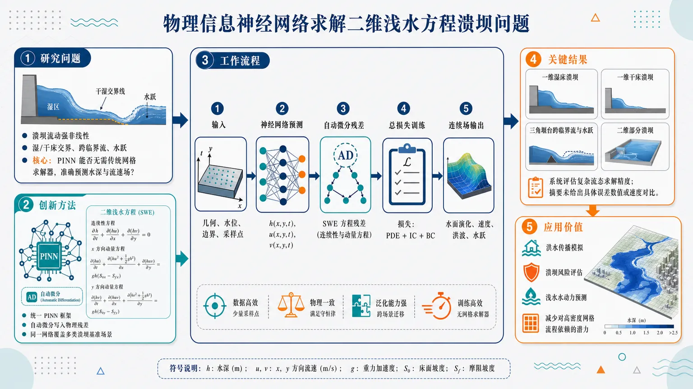
研究问题二维浅水方程中的溃坝流动具有湿/干床交界、跨临界流、水跃和局部二维洪波扩散等强非线性特征；核心问题是：物理信息神经网络能否在不依赖传统网格离散求解器的情况下，准确求解这些复杂溃坝基准问题中的水深与流速场。创新方法使用统一的 PINN 框架求解二维浅水方程，将连续性方程和 x/y 方向动量方程通过自动微分直接写入损失函数；Aha 点在于用同一个神经网络物理约束框架覆盖湿床、干床、三角堰台跨临界流、水跃和二维部分溃坝等多类典型水动力挑战场景，并以基准问题系统评估精度。工作流程输入溃坝几何、初始水位、边界条件与时空采样点；神经网络预测二维空间和时间上的水深及流速；自动微分计算浅水方程残差；将方程残差、初始条件误差和边界条件误差组合为总损失；训练网络最小化物理损失；输出连续的水面演化、速度分布、洪波传播和水跃位置。关键结果研究完成了四类溃坝基准测试：一维湿床溃坝、一维干床溃坝、三角堰台跨临界流与水跃、二维部分溃坝；结果用于评估 PINN 对二维浅水方程复杂流态的求解精度。但摘要未给出具体误差数值、速度提升、稳定性统计或与传统数值方法的定量对比。应用价值该研究为洪水传播、溃坝风险评估、浅水水动力模拟提供一种物理约束驱动的神经网络求解路径；可视化意义上，它将复杂洪波、水跃和干湿界面转化为由物理方程约束的连续预测场，有潜力减少对高密度网格和传统数值求解流程的依赖。核心概览（100字内）
本文用物理约束神经网络（PINN）求解二维浅水方程，并以多类溃坝基准问题评估其精度，属于计算流体力学、科学机器学习与自由面流动数值求解方向。
方法要点
- 采用统一的 PINN 框架求解二维浅水方程。
- 通过自动微分将连续方程和动量方程写入损失函数。
- 不依赖传统离散网格进行求解。
- 以溃坝流基准问题检验模型对复杂自由面流动的刻画能力。
- 测试案例包括湿/干床一维溃坝、含三角隆起的一维溃坝，以及二维局部溃坝等。
关键结果
- 摘要明确表示：该工作用于评估 PINN 框架在二维浅水方程溃坝流问题上的精度。
- 所选基准覆盖了跨临界流、水跃以及二维复杂自由面流动等情形。
- 摘要未详述具体误差数值、对比方法或定量性能结论。
创新性判断
- 可能的新颖点在于：将统一 PINN 框架用于二维浅水方程，并系统放到多类溃坝基准上做精度评估。
- 相对同方向工作，其价值可能体现在：同时覆盖湿/干床、跨临界流、水跃和二维局部溃坝等较复杂场景。
- 但摘要未详述是否提出新的网络结构、损失设计或训练策略，因此创新性更多像是“应用与评估上的扩展”，具体方法创新程度摘要未详述。
-
10
📊 含图深析
📄 摘要：面向 500 km 极轨 LAPAN-IPB/LAPAN-A3 低轨卫星任务排程，构建端到端推荐框架。方法结合随机森林与混合深度学习预测电池行为，将依赖操作员经验的任务可行性判断转化为可记录、可验证的自动推荐。
💡 亮点：随机森林和混合深度预测用于低轨卫星任务可行性推荐。虽然偏工程应用，其数据驱动调度思想与自主实验/自治平台管理相通。
📖 展开分析 + 配图
研究问题针对500 km轨道LEO极轨卫星，如何利用可观测数据替代人工经验，对电池行为与任务可行性进行自动判断，并输出可执行的任务推荐。创新方法提出“随机森林 + 混合深度学习预测”的任务推荐框架，把原本只做状态预测的模型，提升为面向决策的任务可行性评估；其Aha点在于将电池行为预测与任务推荐闭环结合，把经验判断变成数据驱动、可验证、可迁移的流程。工作流程输入卫星运行数据与电池相关特征 → 随机森林与混合深度学习联合建模 → 预测电池行为与任务可行性 → 生成任务推荐结果 → 支撑操作员执行任务决策。关键结果该框架可替代操作员基于经验的电池行为判断，并将任务可行性评估转化为可记录、可迁移、可验证的决策流程；摘要未给出具体精度或提升数值。应用价值为LEO卫星任务规划、在轨运维和电池相关决策提供自动化支撑，减少对人工经验的依赖，提高任务安排的可解释性、复用性与操作可靠性。核心概览
面向 LAPAN-IPB（LAPAN-A3）500 km 极轨低轨卫星任务调度，提出一个基于随机森林与混合深度学习的电池行为预测与任务可行性推荐框架，属于航天任务规划/资源调度的机器学习方向。
方法要点
- 采用端到端推荐框架，直接服务于卫星任务配置建议生成。
- 使用随机森林与混合深度学习对电池行为进行预测。
- 基于预测结果进一步评估任务可行性，用于调度决策支持。
- 将原本依赖资深操作员经验的人工判断，转为数据驱动的推荐流程。
- 强调推荐结果可记录、转移、事后验证，提升决策可追溯性。
关键结果
- 摘要明确指出：该框架旨在替代依赖资深操作员经验的人工判断。
- 该方法可使任务配置建议具备可记录、可转移、可事后验证的特性。
- 摘要未详述具体实验指标、预测精度或对比结果。
创新性判断
- 可能的新颖点在于：将电池状态预测与任务推荐/可行性评估整合为一个面向低轨卫星调度的端到端框架。
- 相较传统规则或人工经验方法，其创新可能在于用随机森林 + 混合深度学习实现更自动化的任务决策支持。
- 另一潜在亮点是强调可审计、可复用的推荐输出，适合卫星运维场景。
- 以上创新判断基于摘要，具体贡献边界摘要未详述。
-
11
📊 含图深析
📄 摘要：针对非线性色散波 KdV 方程，提出保结构 PINN，在损失函数中直接嵌入质量守恒与哈密顿能量守恒。目标是缓解常规 PINN 长时间积分中物理不变量漂移，提高孤子/色散波传播预测的长期一致性。
💡 亮点：KdV PINN 通过质量和哈密顿量约束保持不变量。该设计强调长时动力学可信度，而非仅在短时训练点拟合 PDE 残差。
📖 展开分析 + 配图
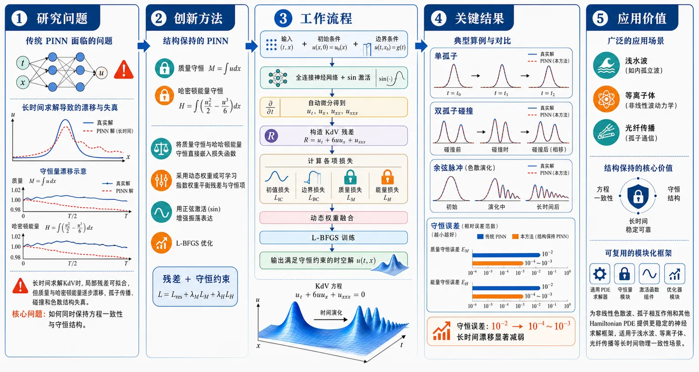
研究问题传统PINN在长时间求解KdV方程时，虽然能拟合局部PDE残差，但会出现质量和哈密顿能量逐步漂移，导致孤子传播、碰撞和色散破裂的物理结构失真。核心问题是：如何让神经网络在求解KdV时同时保持方程一致性与守恒结构。创新方法提出SP-PINN，把质量守恒和哈密顿能量守恒直接嵌入损失函数，不再只依赖PDE残差；再用梯度归一化动态权重或可学习指数权重平衡守恒项与残差项；同时采用正弦激活增强对孤子振荡、色散波列的表达，并用L-BFGS优化。Aha点在于把Hamiltonian不变量变成训练目标的一部分。工作流程输入时间-空间坐标(t,x)、初始条件和边界条件；全连接神经网络用sin激活预测u(t,x)；自动微分计算uₜ、uₓ、uₓₓₓ并构造KdV残差；同时计算初值损失、边界损失、质量损失和能量损失；通过动态权重或可学习权重合成总损失，用L-BFGS训练；输出满足守恒约束的KdV时空解。关键结果在单孤子、双孤子碰撞和余弦脉冲三类实验中，SP-PINN能准确复现孤子平移、弹性碰撞相移和脉冲破裂成波列等典型KdV现象。相比vanilla PINN，守恒误差从约10⁻²降到10⁻⁴至10⁻³量级，长时间预测中质量和能量漂移显著减弱，且在较大学习率下仍能稳定收敛。应用价值为非线性色散波、孤子相互作用和其他Hamiltonian PDE提供更稳定的神经求解框架，适合浅水波、等离子体、光纤传播等需要长时间物理一致性的科学计算场景；同时为结构保持神经网络和能量稳定学习提供可扩展模板。第一部分：核心概览 (Overview)
该研究提出面向 Korteweg–de Vries (KdV) 方程的 Structure-Preserving Physics-Informed Neural Network (SP-PINN)，核心贡献是在 PINN 损失函数中直接嵌入 质量守恒与哈密顿能量守恒，并通过动态或可学习权重调节守恒项贡献，从而缓解传统 PINN 在长时间积分中出现的物理不变量漂移。方法结合 sinusoidal activation 与 L-BFGS 优化，用于增强对振荡、色散、孤子传播与相互作用的表达能力。数值案例覆盖单孤子、双孤子碰撞和余弦脉冲破裂，显示 SP-PINN 在保持 KdV 典型动力学和守恒量方面优于 vanilla PINN。其领域地位在于将结构保持数值方法的思想迁移到 PINN 框架中，属于 Hamiltonian PDE 神经求解器的应用型扩展。
---
第二部分：结构化快速回顾
《Structure-Preserving Physics-Informed Neural Network for the Korteweg--de Vries (KdV) Equation》（None，）
背景
PINNs 可通过 PDE 残差最小化求解非线性偏微分方程，但常规形式不显式保持 Hamiltonian invariants，在长时间预测中容易产生质量与能量漂移。KdV 方程具有孤子、色散、非线性和无穷守恒律，是检验结构保持神经求解器的典型模型。
方法
构造 SP-PINN 近似 (u(t,x))，采用全连接前馈网络、sinusoidal activation、自动微分计算 (uₜ,uₓ,uₓₓₓ)，损失函数包含 initial condition loss、PDE residual loss、boundary condition loss、mass conservation loss 和 energy conservation loss。守恒项通过动态梯度归一化权重 (Γ(t),Ømega(t)) 或可学习指数权重 (łambda_M=eα_M,łambda_E=eα_E) 加权。优化器使用 L-BFGS。
结果
在单孤子、双孤子和余弦脉冲案例中，SP-PINN 能复现形状保持平移、弹性碰撞相移、非线性色散破裂等 KdV 特征。消融实验显示，学习率 (0.1) 和 (1.0) 下，SP-PINN 的守恒误差维持在约 (10⁻⁴)–(10⁻³)，而 vanilla PINN 在 (t=3) 附近漂移至 (10⁻²)。
讨论
质量与哈密顿能量约束显著提升长时间稳定性。sinusoidal activation 被用于增强频谱表达能力，尤其适合孤子和色散波的振荡结构。L-BFGS 尽管单步计算代价较高，但在物理约束优化中收敛较快且超参数需求较少。
局限
实验主要限于光滑初始条件和固定边界类型；缺少粗糙输入、随机强迫、噪声观测、复杂边界、多维系统和真实数据场景验证。部分结果以图示和定性描述为主，缺少完整误差范数、置信区间或统计显著性分析。
结论
SP-PINN 通过在单阶段训练目标中嵌入守恒律，使神经网络解更符合 KdV 方程的 Hamiltonian structure。方法简单、可实现、经验稳定，并为更广泛的非线性色散波和耦合物理系统的能量稳定神经网络提供可扩展范式。
---
第三部分：逐章节冷凝解析 (Section-by-Section Condensing)
Abstract
Structure preservation targets long-time PINN drift
核心问题是传统 PINN 在非线性 PDE 长时间积分中不能可靠保持物理不变量，导致长期预测的物理一致性下降。摘要明确指出：*"conventional implementations often fail to preserve key physical invariants during long-term integration"*。该问题在 KdV 方程中尤其关键，因为 KdV 是典型的非线性色散波模型，孤子动力学依赖质量和能量等守恒结构。
Mass and Hamiltonian energy are embedded into the loss
方法核心是将 mass conservation 与 Hamiltonian energy conservation 直接加入损失函数，而不是仅依靠 PDE residual 学习。摘要给出的关键表述是：*"embeds conservation of mass and Hamiltonian energy directly into the loss function"*。这意味着训练目标不仅惩罚局部微分方程误差，也惩罚全局积分不变量偏离初值。
Dynamic weighting improves invariant enforcement
守恒项并非固定权重，而是通过动态机制调整，使不同损失分量对优化过程的影响更均衡。摘要表述为：*"by designing a dynamic weighting mechanism for these invariants to improve long-term stability"*。该设计对应正文中的梯度归一化权重 (Γ(t)) 与 (Ømega(t))，用于平衡 PDE residual、mass loss 和 energy loss 的梯度规模。
Jointly learned invariant weights are introduced
除动态权重外，还提出将守恒项权重与网络参数联合优化。摘要中称：*"jointly learning these weights along with the network parameters"*。附加部分进一步定义 (łambda_M=eα_M)、(łambda_E=eα_E)，并通过 L-BFGS 联合优化 ((θ,α_M,α_E))。
Sinusoidal activations target oscillatory and dispersive structure
激活函数选择是另一项方法特征。常见 PINN 多用 tanh，这里探索 sinusoidal activations，以增强频谱表达能力。摘要中写道：*"sinusoidal activations—which deviate from standard tanh-based PINNs"*，并进一步指出其优势是：*"enhance spectral expressiveness and better capture the oscillatory and dispersive nature of KdV solitons"*。
Three KdV benchmarks cover canonical nonlinear dispersive behavior
实验覆盖三类代表性 KdV 动力学：single-soliton propagation、two-soliton interaction、cosine-pulse initialization。摘要列举：*"single-soliton propagation (shape-preserving translation), two-soliton interaction (elastic collision with phase shift), and cosine-pulse initialization (nonlinear dispersive breakup)"*。这三类测试分别验证形状保持、非线性孤子碰撞和非孤子初值下的色散破裂。
---
1 Introduction
PINNs solve PDEs by embedding physical laws into neural networks
PINNs 的基本思想是将控制方程写入神经网络训练目标，从而减少对标注数据的依赖。引言指出：*"Physics-Informed Neural Networks (PINNs) are a class of deep learning models that integrate physical laws directly into neural network architectures"*，并补充其优势为：*"without the need for extensive labeled data"*。该框架源自 Raissi et al. [15]，已用于 fluid dynamics、wave propagation 和 nonlinear optics。
Classical solvers preserve structure through discretization but face scalability constraints
传统方法如 FDM、FEM 和 Fourier Pseudo-Spectral Method (PSM) 长期用于 PDE 求解，并通过精心离散化保持结构性质。引言表述为：*"Classical numerical solvers such as the Finite Difference Method (FDM), Finite Element Method (FEM), and Fourier Pseudo-Spectral Method (PSM) have long been used to solve PDEs while maintaining the structural properties of their continuous formulations through careful discretization"*。但这些方法在高维、刚性和长时间非线性动力学中受限：*"often face limitations when addressing high-dimensional, stiff, or long-time nonlinear dynamics"*。
KdV is selected as a canonical nonlinear dispersive Hamiltonian PDE
研究对象是非线性 KdV equation，其典型性来自非线性与色散共同作用。引言将其定义为：*"a canonical model of nonlinear and dispersive wave propagation"*。KdV 还具有无穷守恒律层级：*"The KdV equation possesses an infinite hierarchy of conservation laws"*，其中最基本的是 mass 与 Hamiltonian energy。
Conventional PINNs do not explicitly preserve KdV invariants
常规 PINN 的问题不是不能拟合短期解，而是缺少显式不变量约束，导致长期累计漂移。引言指出：*"conventional PINNs do not explicitly enforce these invariants, leading to cumulative drift and degradation of physical fidelity during long-time integration"*。这里的 cumulative drift 是关键诊断对象，对 Hamiltonian PDE 尤其致命。
Single-stage invariant-aware loss avoids two-stage retraining
方法选择将质量和能量守恒直接放入统一损失函数，而不是多阶段训练。引言写道：*"we incorporate conservation constraints for mass and energy directly into a unified single-stage loss function"*，并强调其优势是：*"eliminating the need for multi-phase retraining as used in two-stage PINNs [12]"*。这使训练流程更简单，同时延续 invariant-aware learning 思路。
Sinusoidal activations mitigate spectral bias
sinusoidal activation 与 L-BFGS 组合构成重要技术选择。引言指出：*"A key innovation of our approach lies in coupling sinusoidal activation functions with quasi-Newton optimization via the L-BFGS algorithm"*。正弦激活的理由是其对振荡、周期和色散结构更自然：*"Sinusoidal activations enhance spectral expressiveness, naturally capturing the oscillatory, dispersive, and periodic characteristics of KdV solitons while mitigating spectral bias inherent in standard tanh-based networks"*。
L-BFGS is favored for physics-informed optimization
L-BFGS 被描述为适合物理约束优化的准牛顿方法。引言承认其单次迭代成本较高：*"Although L-BFGS incurs a higher per-iteration computational cost"*，但优势在于：*"it converges rapidly to physically consistent minima with minimal hyperparameter tuning"*。该选择与 PINN 常见的 Adam+L-BFGS 或纯 L-BFGS 训练传统一致。
---
2 Hamiltonian System
Hamiltonian PDE form encodes skew-adjoint dynamics
一大类非线性色散方程可写作 Hamiltonian form：
[
uₜ₌Dfracpartialpartial uH,quad H=int H,dx.
]
原文定义为：*"A broad class of nonlinear dispersive equations, including the Korteweg–de Vries (KdV) equation, can be expressed in Hamiltonian form"*。其中 (D) 是 skew-adjoint differential operator，变分导数 (fracpartialpartial u) 描述泛函梯度，(H) 是 Hamiltonian functional。
Hamiltonian invariance supports mass and energy conservation
Hamiltonian 结构使某些物理量在时间演化中保持不变。该节写道：*"By construction, the Hamiltonian quantity (H) is an invariant of the system"*，并说明其作用是：*"ensuring conservation of fundamental physical quantities such as mass and energy during temporal evolution"*。这为后续损失函数中的守恒项提供数学动机。
PINN residual minimization alone does not guarantee invariant preservation
该节再次强调常规 PINN 的局限：*"Conventional Physics-Informed Neural Networks (PINNs) approximate PDE dynamics through residual minimization but do not inherently preserve these Hamiltonian invariants"*。结果是：*"often leading to drift in conserved quantities over long-time integration"*。这也是 SP-PINN 被提出的直接目标。
Objective focuses on mass and energy invariance
目标明确限定在 KdV 的 mass 与 energy 守恒。原文目标句为：*"develop a structure-preserving PINN framework for the nonlinear KdV equation that explicitly embeds Hamiltonian conservation—specifically the invariance of mass and energy—within the learning objective"*。期望效果是：*"physically consistent and long-term stable solutions"*。
---
3 KdV in 1D
KdV models weakly nonlinear dispersive shallow-water waves
一维 KdV 方程被定义为长浅水波模型，同时适用于多种色散波系统。该节写道：*"The Korteweg–de Vries (KdV) equation is a fundamental nonlinear partial differential equation that describes the evolution of long, shallow water waves with weakly nonlinear and dispersive effects"*。其应用包括：*"plasma physics, optical fibers, and even quantum field theory"*。
The governing equation includes nonlinear convection and third-order dispersion
考虑的 KdV 方程为：
[
uₜ₊η uuₓ₊μ²uₓₓₓ=0,
]
初值为 (u(0,x)=u₀₍ₓ₎)，边界为 (u(t,a)=0,u(t,b)=0)。原文给出：*"We consider the KdV equation given by: (uₜ₊η uuₓ₊μ²uₓₓₓ=0)"*。其中 (u(t,x)) 是波形，(tin[0,T])，(xin[a,b])，(ηinR) 为非线性参数，(μ) 为色散系数。
Solitons maintain shape while moving at constant velocity
KdV 的关键物理特征是 soliton solutions。该节定义为：*"localized waves that maintain their shape while propagating at a constant velocity"*。这种形状保持传播使 KdV 成为检验数值方法和神经求解器长期稳定性的标准问题。
---
3.1 Physical Properties of KDV
Decaying boundary conditions enable conservation laws
守恒律推导在实线 (R) 上进行，并假设 (u→0) as (|x|→infty)。原文写道：*"We consider the scaled KDV equation (1) posed on (R), with (u→0) as (|x|→infty)"*。在这些边界条件下：*"the KDV equation is Hamiltonian and admits an infinite hierarchy of conserved quantities"*。
Mass is defined as the spatial integral of the solution
质量定义为：
[
M(t)=intRu(x,t),dx.
]
原文直接写道：*"We define the mass (M(t)) by (M(t)=intRu(x,t),dx)"*。对 KdV 方程积分后，通量项在无穷远边界消失，因此 (dM/dt=0)。
Mass conservation follows from divergence form
推导将 KdV 写为守恒形式：
[
uₜ₌₋partialₓłeft(fracη2u²⁺μ²uₓₓi̊ght).
]
原文推导中出现：*"(intR-partialₓłeft(fracη2u²⁺μ²uₓₓi̊ght),dx)"*，边界项为：*"(łeft[fracη2u²⁺μ²uₓₓi̊ght]ₓ₌₋ᵢₙfₜyx⁼ⁱⁿfty=0)"*。结论是：*"(M(t)=constant) for all (t)"*。
Hamiltonian energy combines gradient energy and nonlinear potential
能量定义为：
[
E=intRłeft(fracμ²2uₓ²⁻fracη6u³ⁱ̊ght)dx.
]
原文写道：*"We define the energy (Hamiltonian) (E(t)) of the solution as (E=intRłeft(fracμ²2uₓ²-fracη6u³i̊ght)dx)"*。其中 (fracμ²2uₓ²) 对应色散梯度能，(-fracη6u³) 对应非线性势能项。
Energy conservation is proved using an auxiliary flux variable
令
[
f=fracη2u²⁺μ²uₓₓ,
quad fₓ₌η uuₓ₊μ²uₓₓₓ.
]
原文写道：*"Set (f=fracη2u²+μ²uₓₓ)"*，并指出：*"From the energy functional ... and the KdV equation (uₜ₌₋fₓ)"*。通过分部积分，能量导数化为边界项和 (int f fₓ dx)。
Energy derivative vanishes under decaying boundary conditions
分部积分后：
[
fracdEdt
=-μ²[uₓfₓ]₋ᵢₙfₜyⁱⁿfty
+łeft[frac12f²ⁱ̊ght]₋ᵢₙfₜyⁱⁿfty=0.
]
原文结论为：*"Hence, (E(t)=constant) for all (t), showing that the KdV energy (Hamiltonian) is conserved"*。该推导是 SP-PINN 中 energy loss 的理论来源。
---
4 Methodology
Method aims at stable and physically consistent PINN solutions
方法目标是使用 PINN 求解 KdV，同时保持物理不变量。开头写道：*"We outline the methods employed to achieve a stable and physically consistent solution of the KdV equation using physics-informed neural networks (PINNs)"*。核心要求为：*"preserves the physical invariants of the model while ensuring numerical stability throughout training and inference"*。
---
4.1 Neural Network Architecture
The solution is represented by a fully connected feedforward neural network
网络近似 (u(t,x))，记为 (u_θ(t,x))。原文写道：*"we model the solution (u(t,x)) using a fully-connected feedforward neural network (FNN), denoted by (uθ(t,x))"*。网络输入为二维 ((t,x))，输出为标量场 (u(t,x))：*"The network takes the two-dimensional input ((t,x)) and outputs the scalar field (u(t,x))"*。
Sinusoidal activation is used in all hidden layers
隐藏层全部采用 (sin(x)) 激活。该节明确写道：*"A sinusoidal activation function (sin(x)) is employed in all hidden layers to capture the oscillatory and dispersive characteristics of soliton dynamics"*。这与 KdV 孤子和周期性色散结构匹配。
The architecture is parameterized by depth (L) and width (W)
网络结构为：输入层 2 个神经元，隐藏层 (L) 层、每层宽度 (W)，输出层 1 个神经元。原文列为：*"Input layer: 2 neurons corresponding to ((t,x))"*，*"Hidden layers: (L) fully-connected layers of width (W) with sinusoidal activation"*，*"Output layer: 1 neuron producing the scalar output (uθ(t,x))"*。
---
4.2 Loss Function Components
Initial condition loss enforces the known soliton profile
初值损失为：
[
LIC=frac1NICsumᵢ₌₁NIC
|u_θ(0,xᵢ₎₋ᵤ₀₍ₓᵢ₎|².
]
原文说明：*"where (u₀₍ₓ₎) represents the known analytical initial condition from the soliton profile"*。该项保证网络在 (t=0) 与给定初始波形一致。
PDE residual loss enforces KdV dynamics through automatic differentiation
PDE 残差在 (N_f) 个 collocation points 上计算：
[
LPDE
=frac1N_fsumᵢ₌₁N_f
|partialₜᵤ_θ+6u_θpartialₓᵤ_θ+partialₓₓₓu_θ|².
]
原文写道：*"The KdV dynamics are enforced via automatic differentiation [15] at collocation points ((tᵢ,xᵢ₎)"*。这里固定采用无量纲参数 (η=6,μ=1) 的 KdV 形式。
Boundary condition loss imposes homogeneous Dirichlet constraints
边界损失为：
[
LBC
=frac1N_bsumᵢ₌₁N_b
(|u_θ(tᵢ,xₘᵢₙ)|²⁺|u_θ(tᵢ,xₘₐₓ)|²⁾.
]
原文写道：*"Homogeneous Dirichlet boundary conditions are imposed on the spatial boundaries"*。这与第 3 节中的 (u(t,a)=0,u(t,b)=0) 对应。
Mass and energy losses impose soft conservation constraints
守恒损失定义为：
[
Lₘₐₛₛ
=frac1Nₜsumⱼ₌₁Nₜ
|M(tⱼ₎₋M(0)|²,
]
[
Lₑₙₑᵣgy
=frac1Nₜsumⱼ₌₁Nₜ
|E(tⱼ₎₋E(0)|².
]
原文写道：*"To promote physical fidelity, we include soft constraints on the conservation of mass and energy"*。其中 (M) 和 (E) 分别来自式 (2) 和式 (3)，并明确使用 (μ=1,η=6)：*"with parameters (μ=1) and (η=6)"*。
---
4.3 Dynamic Weighting of Invariant Loss Terms
The total loss combines data, PDE, boundary, mass, and energy constraints
总损失为：
[
Lₜₒₜₐₗ
=LIC
+LPDE
+LBC
+Γ(t)Lₘₐₛₛ
+Ømega(t)Lₑₙₑᵣgy.
]
原文写道：*"The total composite loss is defined as (Lₜₒₜₐₗ=...)"*。该目标是单阶段训练目标，避免分阶段重训练。
(Γ(t)) balances mass conservation
(Γ(t)) 是质量守恒项权重。原文称其为：*"(Γ(t)) acts as a mass-balancing weight"*，并说明其行为：*"increasing when deviations from mass conservation grow and decreasing once the invariant stabilizes"*。这体现守恒误差驱动的自适应调节思想。
(Ømega(t)) balances Hamiltonian energy conservation
(Ømega(t)) 是能量项权重。原文写道：*"(Ømega(t)) serves as an energy-balancing weight"*，其作用是：*"adapting to ensure that the Hamiltonian energy constraint contributes proportionally to the total loss"*。这防止能量项过弱而失效，也避免其过强压制 PDE residual。
Gradient normalization makes loss components comparable
动态权重公式为：
[
Γ(t)=
frac|nabla_θLPDE|₂
|nabla_θLₘₐₛₛ|₂₊ǎrepsilon,
quad
Ømega(t)=
frac|nabla_θLPDE|₂
|nabla_θLₑₙₑᵣgy|₂₊ǎrepsilon.
]
原文写道：*"Dynamic weighting strategy is based on gradient normalization"*。其目的为：*"ensures that each loss component contributes comparably to the overall gradient magnitude"*，并防止：*"either the PDE residual or invariant terms from dominating the optimization process"*。
---
4.4 Training Procedure
L-BFGS is used to optimize network parameters
训练使用 L-BFGS。原文称其为：*"a quasi-Newton method well-suited for stiff loss landscapes and high-dimensional PDE constraints"*。在 PINN 中，PDE residual 和高阶导数常导致损失景观刚性，L-BFGS 适合后期精细收敛。
Automatic differentiation is implemented in PyTorch
所有导数与残差通过 PyTorch 自动微分计算。原文写道：*"All derivatives and residual terms are computed using automatic differentiation in PyTorch"*。优化器运行在 closure-style loop 中：*"allowing precise gradient evaluation at each iteration"*。
Default architecture uses 4 hidden layers and width 40
默认实现参数为 (L=4)、(W=40)。原文写道：*"Unless otherwise specified, the network consists of (L=4) hidden layers with width (W=40)"*。优化器设置为 L-BFGS，学习率 (1)，最大迭代 (3000)：*"trained using the L-BFGS optimizer (learning rate 1, maxᵢₜₑᵣ = 3000)"*。
Sampling uses 8192 collocation points and 128 boundary points
采样配置为 (N_f=8192)，(N_b=128)。原文写道：*"The number of collocation and boundary sampling points are set to (N_f=8192) and (N_b=128), respectively"*。这些超参数被解释为稳定性、精度和计算成本之间的折中：*"chosen to balance training stability, accuracy, and computational cost"*。
Experiments run on RTX A5000 with Python 3.12 and PyTorch 2.3
计算环境具体为：*"Python 3.12 using PyTorch 2.3"*，硬件为：*"a single NVIDIA RTX A5000 GPU with 24 GB VRAM and 64 GB system memory"*。可视化和后处理使用：*"Matplotlib and NumPy"*。
Computational cost differs across test cases
表 1 给出训练成本：单孤子 (4) 层、宽度 (40)、(3000) 迭代、约 (8) 分钟；双孤子 (7) 层、宽度 (40)、(3000) 迭代、约 (22) 分钟；余弦脉冲 (4) 层、宽度 (40)、(3000) 迭代、约 (6) 分钟。表注写道：*"All cases used the L-BFGS optimizer with an initial learning rate of 1.0"*。
---
4.5 Post-Training Evaluation
Evaluation compares neural predictions with analytical or reference solutions
训练后在细时空网格上评估 (u_θ(t,x))。原文写道：*"After training, the neural network prediction (uθ(t,x)) is evaluated over a fine spatio-temporal mesh"*。其中提到与 analytical two-soliton solution 比较：*"compared against the analytical two-soliton solution"*，但正文双孤子初值采用两孤子叠加形式，严格解析双孤子解公式未完整给出。
Diagnostics include profiles, surfaces, error maps, and invariant trajectories
评估指标包括：预测与解析剖面对比、时空曲面、绝对误差等高线、质量和能量随时间演化。原文列出：*"Comparison of predicted versus analytical solution profiles at selected time instances"*、*"Space–time surface visualizations of (u(t,x))"*、*"Two-dimensional contour maps of the absolute prediction error"*、*"Temporal evolution of conserved quantities (mass and energy)"*。
Figures are generated reproducibly
图像生成使用 Matplotlib 并保存。原文写道：*"All figures are generated using Matplotlib and stored for reproducibility"*。代码和数据未公开托管，而是“合理请求可得”，这限制完全复现实验的便利性。
---
4.6 Algorithm
Algorithm samples initial, interior, and boundary points
算法输入包括时间域 ([0,T])、空间域 ([xₘᵢₙ,xₘₐₓ])、网络 (u_θ)、最大迭代 (K)。原文算法列出：*"Domains ([0,T]), ([xₘᵢₙ,xₘₐₓ]); network (u_θ); max iterations (K)"*。采样包括 (xIC)、内部点 ((t_f,x_f))、边界点 (t_b)：*"Sample (xIC), interior ((t_f,x_f)), boundary (t_b)"*。
Each iteration computes KdV residual and all loss components
残差为：
[
r=uₜ₊₆ᵤᵤₓ₊ᵤₓₓₓ.
]
算法第 6 步写道：*"Compute residual (r=uₜ₊₆ᵤᵤₓ₊ᵤₓₓₓ) at ((t_f,x_f))"*。随后计算 (LIC,LPDE,LBC)，并估计 (M(t),E(t))：*"Estimate (M(t),E(t)) and compute (Lₘₐₛₛ,Lₑₙₑᵣgy)"*。
Optimization updates (θ) using the composite structure-preserving loss
算法使用总损失：
[
Lₜₒₜₐₗ
łeftarrow
LIC
+LPDE
+LBC
+Γ(t)Lₘₐₛₛ
+Ømega(t)Lₑₙₑᵣgy.
]
原文第 10 步写道：*"Update (θ) via optimizer"*。输出为训练后的 (u_θ)：*"return (u_θ)"*。
---
5 Results
Experiments solve KdV on bounded domains
结果部分在有界区域上求解 KdV。开头写道：*"we evaluate the performance of our physics-informed neural network (PINN) by solving the Korteweg–de Vries (KdV) equation on a bounded domain"*。测试包含已知孤子解的精确初边值条件，以及参考文献 [17] 的配置。
---
One-Soliton Profile
The single-soliton benchmark uses ([0,3]×[-20,20])
单孤子实验采用无量纲 KdV，参数 (μ=1,η=6)，计算域为：
[
(t,x)in[0,3]×[-20,20].
]
原文写道：*"with parameters (μ=1) and (η=6), defined on the domain ((t,x)in[0,3]×[-20,20])"*。
Initial condition is an exact sech-squared soliton
初始条件为：
[
u(0,x)=fracc2øperatornamesech²
łeft(fracsqrt c2(x-x₀₎ᵢ̊ght),
]
其中 (c=1,x₀₌₀)。原文写道：*"the soliton has speed (c=1) and initial center (x₀₌₀)"*。解析解为：
[
u(t,x)=fracc2øperatornamesech²
łeft(fracsqrt c2(x-ct-x₀₎ᵢ̊ght).
]
Benchmark tests amplitude, shape, and translation speed
该案例用于验证模型能否复现孤子平移。原文写道：*"This test case provides a fundamental benchmark for evaluating the model’s ability to reproduce solitary-wave propagation with correct amplitude, shape, and translation speed"*。这些性质被称为 KdV 可积动力学的关键标志：*"key signatures of the integrable KdV dynamics"*。
---
Two Soliton Profile
The two-soliton benchmark uses ([0,10π]×[-40,40])
双孤子实验采用 (μ=1,η=6)，计算域为：
[
(t,x)in[0,10π]×[-40,40].
]
原文写道：*"defined on the domain ((t,x)in[0,10π]×[-40,40])"*。该时间跨度明显长于单孤子实验。
Initial condition superposes two sech-squared solitary waves
初值为两个孤子叠加：
[
u(0,x)=
fracc₁2øperatornamesech²
łeft(fracsqrtc₁2(x-x₁₎ᵢ̊ght)
+
fracc₂2øperatornamesech²
łeft(fracsqrtc₂2(x-x₂₎ᵢ̊ght).
]
参数为 (c₁₌₁,c₂₌₀.3,x₁₌₋₅,x₂₌₅)。原文写道：*"where (c₁₌₁), (c₂₌₀.3), (x₁₌₋₅), and (x₂₌₅)"*。
The benchmark targets elastic collision and phase shift
该配置产生两个高度和速度不同的孤子。原文描述为：*"two solitons of different heights and velocities that propagate toward each other, undergo an elastic collision, and then re-emerge without change in shape or speed"*，并包含典型 phase shift。这用于测试模型捕捉非线性孤子相互作用的能力：*"canonical benchmark for assessing the ability of numerical or learning-based models to capture nonlinear wave propagation and soliton interactions"*。
---
Cosine Profile
The cosine pulse benchmark uses ([0,1]×[-1,1])
余弦脉冲实验采用：
[
u(0,x)=o̧s(π x),
]
计算域为：
[
(t,x)in[0,1]×[-1,1].
]
原文写道：*"The initial condition is given by (u(0,x)=o̧s(π x)), defined on the domain ((t,x)in[0,1]×[-1,1])"*。
The cosine case uses weaker dispersion scale (μ=0.05)
参数为 (η=1,μ=0.05)。原文写道：*"We simulate the nondimensional KdV equation (1) with parameters (η=1) and (μ=0.05)"*。较小 (μ) 强化非线性陡化与色散平衡下的波列生成。
The target behavior is nonlinear dispersive breakup into soliton trains
该测试验证初始光滑脉冲破裂为孤子列。原文写道：*"examines the breakup of an initial smooth pulse into a train of solitons"*。结果被描述为：*"accurately reproduces the pulse breakup dynamics reported in the literature"*，显示模型能处理非标准孤子解析初值。
---
5.1 Ablation Study: Impact of Conservation Laws on PINN Performance
Ablation compares SP-PINN against vanilla PINN without conservation laws
消融实验考察守恒律嵌入损失函数的作用。该节开头写道：*"we investigate the impact of embedding the conservation laws into the loss function"*。对照模型是 Vanilla PINN，表注明确为：*"Vanilla PINN for the KdV equation"*，并说明 vanilla PINN 不含 conservation laws。
Learning rate 0.1 shows SP-PINN remains below (10⁻³) while vanilla PINN reaches (10⁻²)
表 2 中学习率为 (0.1)、sine activation。SP-PINN 在 (t=3.00) 的质量 (2.0001)，能量 (-0.1999)，误差 (9.45×10⁻⁴)；vanilla PINN 在 (t=3.00) 的质量 (1.9819)，能量 (-0.2008)，误差 (1.12×10⁻²)。表注总结为：*"The SP-PINN maintains invariant errors within (10⁻⁴) up to (t=3), while the Vanilla PINN drifts toward (10⁻²)"*。严格按表中数值，SP-PINN 后期误差接近 (10⁻³)，并非始终小于 (10⁻⁴)。
Learning rate 1.0 confirms stronger long-term stability of SP-PINN
表 3 中学习率为 (1)。SP-PINN 在 (t=3.00) 的质量 (2.0001)，能量 (-0.2000)，误差 (4.05×10⁻⁴)；vanilla PINN 在 (t=3.00) 的质量 (1.9725)，能量 (-0.1984)，误差 (1.11×10⁻²)。表注写道：*"The SP-PINN maintains invariant errors within (10⁻⁴) up to (t=3), while the regular PINN exhibits error growth into the (10⁻²) range"*。同样，表中 SP-PINN 的最大误差为 (4.05×10⁻⁴)，更准确表述应为 (10⁻⁴) 量级。
Vanilla PINN exhibits monotonic long-horizon drift in mass
表 2 中 vanilla PINN 的质量从 (t=0) 的 (2.0000) 降至 (t=3.00) 的 (1.9819)。表 3 中 vanilla PINN 的质量从 (1.9992) 降至 (1.9725)。正文总结为：*"We observe a clear deterioration in the accuracy of the vanilla PINN as time advances"*，原因被归结为：*"its inability to maintain physical invariants over long horizons"*。
SP-PINN remains stable at large learning rate
学习率 (1) 下，正文强调 SP-PINN 仍能收敛：*"our model converges even for a large learning rate ((γ=1)), whereas the baseline diverges"*。这说明守恒约束和正弦激活可能改善优化稳定性，但表格主要展示守恒误差，并未给出完整训练损失曲线数值或严格发散判据。
Sinusoidal activation is linked to stability and spectral representation
该节将性能优势部分归因于 sinusoidal activation。正文写道：*"This suggests that the sinusoidal activation function provides superior numerical stability and spectral representation compared to the widely used tanh activation"*。但消融表格标题显示两种模型均为 sine activation，因此该句更像是与文献中 tanh PINN 的概念比较，而非表 2–3 内部直接对 tanh 的控制实验。
---
5.2 Numerical Simulations
One-Soliton Profile
Single soliton maintains amplitude and shape through nonlinearity-dispersion balance
单孤子解释为非线性与色散平衡形成的稳定波形。原文写道：*"The one-soliton solution of the Korteweg–de Vries (KdV) equation represents a solitary wave that maintains its amplitude and shape as it travels at a constant speed"*。其机制为：*"This equilibrium between nonlinearity and dispersion produces a stable, self-reinforcing waveform"*。
Figures show predicted profiles closely match exact soliton
图 2 和图 4 展示预测与精确解对比。原文写道：*"The contour and profile plots in Fig. 2, 4 confirm that the trained PINN successfully reproduces this behavior"*。图 2 标注：*"The dashed lines denote PINN predictions; solid lines denote the true solution"*。图 4 包含 exact solution、PINN-predicted solution 和 absolute error。
Invariant plots show mass and energy preservation
图 3 标注为：*"Mass (left) and energy (right) conservation over time for the PINN solution for one soliton profile"*。这与 SP-PINN 的结构保持目标直接对应。正文还声称误差小于 [17]：*"minimal absolute error across time which is smaller when compared with [17]"*，但未提供与 [17] 对应的数值表或统一误差指标。
---
Two-Soliton Interaction
Two-soliton interaction tests strong nonlinear dispersive dynamics
双孤子实验目标是更强的非线性和色散现象。正文写道：*"we now examine whether the proposed method can reproduce strong nonlinear and dispersive phenomena"*。这是研究主要目标之一：*"one of the primary objectives of this study"*。
Elastic collision is described as temporary merging and re-emergence
较快且振幅更大的孤子追上较慢小孤子，形成短暂非线性相互作用。原文写道：*"As the faster, larger-amplitude soliton overtakes the slower, smaller one, the waves undergo a brief nonlinear interaction"*，并描述为：*"momentarily merging into an intensified pulse before re-emerging with their original shapes and velocities"*。
Phase shift is treated as a hallmark of integrable systems
双孤子碰撞后保形但有相移。原文写道：*"except for a characteristic phase shift"*。这一现象被称为：*"This elastic collision, a hallmark of integrable systems"*。SP-PINN 若能复现该行为，说明其不仅拟合局部波形，也能保留可积系统的长期结构。
Figures show interaction and conservation
图 5 标注为：*"Collision of Two-Soliton Interaction"*；图 8 为：*"2D plot of collision of two soliton"*；图 6 标注：*"Mass (left) and energy (right) conservation over time for the PINN solution for two soliton interaction"*。正文总结为：*"Fig. 6 confirms that the predicted dynamics preserve the relevant physical invariants"*。
---
Cosine Profile
Cosine perturbation tests general nonlinear wave dynamics beyond soliton initial data
余弦初值不是孤子解析剖面，用于测试泛化能力。正文写道：*"we initialize the KdV system with a smooth cosine perturbation instead of a soliton profile"*。这可以检验模型是否只适合孤子模板，还是能处理更一般波形。
Pulse evolves into solitary-like wave packets
余弦脉冲在 KdV 动力学下破裂成波列。正文写道：*"evolves into a train of solitary-like pulses as the nonlinear and dispersive effects balance over time"*。图 9 和图 10 展示 (t=0,0.2,0.5,1.0) 的演化快照，图注为：*"Decay of initial pulse into trains of solution"*。
PINN resolves formation, steepening, and separation
正文写道：*"the trained PINN successfully reproduces this evolution, resolving the formation, steepening, and eventual separation of distinct wave packets"*。这说明模型能捕捉非线性陡化、色散分裂和波包分离等过程。
Invariant preservation is shown for cosine profile
图 11 标注为：*"Mass (left) and energy (right) conservation over time for the PINN solution for the cosine profile"*。正文总结为：*"while preserving the relevant physical invariants"*。图 12 包含 exact solution、PINN-predicted solution 和 absolute error；但余弦破裂案例的“exact solution”来源和计算方式未在正文中详细说明。
---
6 Conclusion
SP-PINN embeds mass and Hamiltonian energy into a single-stage objective
结论强调核心框架为 SP-PINN，并将守恒律直接放入训练目标。原文写道：*"a structure-preserving Physics-Informed Neural Network (SP-PINN) for the Korteweg–de Vries (KdV) equation that embeds the conservation of mass and Hamiltonian energy directly into a single-stage training objective"*。单阶段目标避免多阶段重训练复杂性。
Learned invariant weights are described as learnable Lagrange multipliers
结论提出可学习不变量权重：*"learned invariant weights —optimized jointly with the network parameters—which act as learnable Lagrange multipliers"*。这对应附加部分中的 (α_M,α_E) 和 (łambda_M=eα_M,łambda_E=eα_E)。不过正文第 4.3 节主要使用梯度归一化动态权重 (Γ(t),Ømega(t))，两种权重机制之间的关系未完全统一。
Theoretical guarantee is claimed through Theorem 1
结论声称：*"Theorem 1 shows that any finite stationary point of this learned-weight objective enforces exact conservation of mass and energy"*。附加部分给出定理开头，假设损失分量连续可微且非负，并要求有限 stationary point。由于提供内容在定理后半部分截断，完整证明和边界条件未完全呈现。
Sinusoidal activations and L-BFGS improve oscillatory dispersive modeling
结论写道：*"pairing this loss with sinusoidal activations which isnt explored greatly in literature and L-BFGS captures oscillatory, dispersive dynamics more faithfully than conventional tanh-based PINNs"*。这里的主要判断是 sine 激活更适合频谱丰富、振荡和色散结构。
Three experiments reproduce hallmark KdV behaviors
实验总结覆盖三类案例：*"Across single-soliton propagation, two-soliton interaction, and cosine-pulse breakup"*。结果为：*"the method reproduces hallmark KdV behaviors while maintaining small invariant errors over long horizons and mitigating the drift observed in vanilla PINNs"*。
Limitations focus on smooth initial data and fixed boundaries
局限明确为：*"The current experiments are restricted to smooth initial conditions and fixed boundary types"*。未来方向包括：*"rough inputs, stochastic forcing, and noisy measurements"*，这些是面向真实复杂物理系统的重要鲁棒性测试。
Future work targets energy-stable neural networks for coupled systems
未来计划扩展到耦合系统和电磁/色散模型。原文写道：*"generalize this structure-preserving paradigm toward Energy-Stable Neural Networks for Coupled Systems"*，目标是：*"unifying physics-informed learning with provably stable discretization principles for nonlinear dispersive and electromagnetic wave models"*。
---
Considerations Learned invariant weights
Positive invariant weights are parameterized exponentially
可学习守恒权重定义为：
[
łambda_M=eα_M,quad łambda_E=eα_E,
quad α_M,α_EinR.
]
原文写道：*"we introduce scalar parameters (α_M,α_EinR) and define positive weights (łambda_M=eα_M, łambda_E=eα_E)"*。指数参数化保证权重正值。
Learned-weight total loss replaces dynamic coefficients with trainable penalties
对应损失为：
[
Lₜₒₜₐₗ
=
LIC+LPDE+LBC
+łambda_MLₘₐₛₛ
+łambda_ELₑₙₑᵣgy.
]
原文写道：*"The total loss then becomes (Lₜₒₜₐₗ=LIC+LPDE+LBC+łambda_MLₘₐₛₛ+łambda_ELₑₙₑᵣgy)"*。这与第 4.3 节的 (Γ(t),Ømega(t)) 是不同形式的加权策略。
Joint optimization uses L-BFGS and automatic differentiation
附加部分写道：*"The parameters ((θ,α_M,α_E)) are optimized jointly via L-BFGS, with gradients computed by automatic differentiation"*。这使权重不再需要人工设定，可随训练自动调整。
Penalty-method interpretation identifies underweighting and overweighting risks
若 (łambda_M,łambda_E) 很小，模型退化为忽视守恒律的标准 PINN；若过大，则优化过分关注不变量而阻碍 PDE residual 下降。原文写道：*"very small values of (łambda_M,łambda_E) reduce (7) to a standard PINN that largely ignores conservation"*，以及：*"excessively large values place almost all emphasis on matching the invariants and can stall the reduction of the PDE residual"*。
Learned weights seek an intermediate regime
学习权重的目标是在 KdV 动力学和守恒律之间自动寻找平衡。原文写道：*"Learning (łambda_M) and (łambda_E) allows the optimization to discover an intermediate regime where both the KdV dynamics and the conservation laws contribute meaningfully to the objective"*。这与梯度归一化权重的目的相近，但机制不同。
Finite stationary points imply exact invariant loss vanishing under the theorem setup
定理标题为：*"Theorem 1 (Exact conservation at finite stationary points)"*。假设损失分量 (LIC,LPDE,LBC,Lₘₐₛₛ,Lₑₙₑᵣgy:R^p→[0,infty)) 对 (θ) 连续可微，并考虑 learned-weight loss。由于
[
fracpartial Lₜₒₜₐₗpartial α_M
=
eα_MLₘₐₛₛ,
quad
fracpartial Lₜₒₜₐₗpartial α_E
=
eα_ELₑₙₑᵣgy,
]
有限 stationary point 且 (eα_M,eα_E>0) 时必有 (Lₘₐₛₛ=0,Lₑₙₑᵣgy=0)。原文条件写道：*"Suppose ((θ^ast,α_M^ast,α_E^ast)) is a finite stationary point of (Lₜₒₜₐₗ)"*，并要求三个梯度为零。该定理逻辑成立的关键在于 (α_M^ast,α_E^ast) 有限；若 (α→-infty)，权重趋近 0，则无法推出守恒损失为 0。
---
第四部分：深度理解与语言支持 (Understanding & Nuance)
1. 术语解析
Structure-preserving
Structure-preserving 指数值或学习方法不仅拟合解函数，还保持原方程的内在数学结构，例如守恒律、辛结构、能量稳定性、质量守恒等。语境中对应 KdV 的 Hamiltonian structure，核心不是单点误差最小，而是长期演化不偏离物理不变量。原文中的 *"respect the intrinsic Hamiltonian structure"* 表达的正是这种意义。
Hamiltonian energy
Hamiltonian energy 在 PDE 中是一个泛函，不是简单的标量参数。KdV 中定义为
[
E=intłeft(fracμ²2uₓ²⁻fracη6u³ⁱ̊ght)dx.
]
它既包含梯度项，也包含非线性势能项。语境中 energy 与 Hamiltonian 基本同义，但 Hamiltonian 更强调其生成系统演化的结构角色。
Invariant drift
Invariant drift 指理论上应保持常数的量在数值或神经网络预测中随时间偏移。例如表 3 中 vanilla PINN 质量从 (1.9992) 降至 (1.9725)，误差增长到 (1.11×10⁻²)。这里的 drift 不是随机噪声，而是长期累计系统性偏差。
Spectral expressiveness
Spectral expressiveness 指神经网络表示不同频率成分的能力。KdV 解可能包含振荡、孤子尾部、碰撞产生的局部高频结构和余弦脉冲破裂后的波列。sinusoidal activation 天然含周期结构，因此比 tanh 更容易表达振荡函数。原文说 *"enhance spectral expressiveness"*，强调的是频域表达能力，而非仅仅增加网络容量。
Soft constraints
Soft constraints 指约束不是强制精确满足，而是作为损失项被惩罚。例如 (Lₘₐₛₛ) 和 (Lₑₙₑᵣgy) 惩罚 (M(t)-M(0))、(E(t)-E(0))，但训练过程中不保证每一步都严格为零。与 hard constraints 不同，soft constraints 允许优化在 PDE residual、初边值条件和守恒律之间折中。
---
2. 疑难查证
为什么只最小化 PDE residual 仍可能破坏守恒律？
KdV 方程的守恒律是全局积分性质，例如
[
M(t)=int u(x,t)dx,
quad
E(t)=intłeft(fracμ²2uₓ²⁻fracη6u³ⁱ̊ght)dx.
]
PINN 的 PDE residual 通常在有限 collocation points 上最小化：
[
uₜ₊₆ᵤᵤₓ₊ᵤₓₓₓapprox0.
]
即使这些点上残差很小，也不保证积分量严格不变。原因包括：采样有限、边界误差、高阶导数误差、网络频谱偏差、优化未达到全局最优。微小局部误差在长时间演化中可累积成明显的全局不变量漂移。因此把守恒量直接加入损失函数，相当于额外约束解轨道不能偏离 Hamiltonian 流形。
动态权重 (Γ(t),Ømega(t)) 为什么使用梯度范数比值？
不同损失项的数值尺度和梯度尺度可能差别很大。例如 PDE residual 涉及三阶导数，energy loss 涉及 (uₓ²) 和 (u³)，mass loss 只涉及积分 (u)。若某一项梯度过大，优化器几乎只优化它；若某一项梯度过小，它对参数更新几乎不起作用。梯度归一化权重
[
Γ(t)=
frac|nabla_θLPDE|₂
|nabla_θLₘₐₛₛ|₂₊ǎrepsilon
]
使 mass loss 的加权梯度规模接近 PDE loss 的梯度规模。能量项同理。这是一种训练平衡机制，而不是物理定律本身。
learned invariant weights 与 dynamic weighting 是否完全一致？
不完全一致。正文第 4.3 节使用
[
Γ(t),Ømega(t)
]
作为由梯度范数计算出的动态权重；附加部分使用
[
łambda_M=eα_M,łambda_E=eα_E
]
作为可学习参数，并与网络参数联合优化。两者都试图平衡 PDE 与守恒项，但机制不同：
- dynamic weighting：权重由当前梯度范数显式计算；
- learned weights：权重作为参数通过优化器学习；
- theorem guarantee：只适用于 learned-weight objective 的有限 stationary point，不直接适用于梯度归一化权重。
因此，论文的主实验配置、理论保证和结论表述之间存在一定混合，需要在复现或引用时区分。
Theorem 1 为什么要求 finite stationary point？
若
[
łambda_M=eα_M>0,
]
则
[
fracpartial Lₜₒₜₐₗpartialα_M
=
eα_MLₘₐₛₛ.
]
在有限 (α_M) 下，(eα_M>0)，若 stationary point 满足导数为 0，则只能推出 (Lₘₐₛₛ=0)。但如果 (α_M→-infty)，则 (eα_M→0)，即使 (Lₘₐₛₛ>0)，乘积也可趋近 0。因此 finite stationary point 是定理成立的关键条件。该理论保证是局部驻点性质，不等同于实际 L-BFGS 一定能达到该驻点。
---
第五部分：创新评估与关联 (Synthesis & Novelty)
1. 创新性判断
相对于标准 PINN 的新颖性：显式嵌入 KdV 守恒律
标准 PINN 主要最小化初边值误差和 PDE residual，不天然保持 Hamiltonian PDE 的不变量。该研究把 mass conservation 与 Hamiltonian energy conservation 作为损失函数组成部分，直接针对 long-time drift。相对 Raissi et al. [15] 的经典 PINN，这是从“方程残差一致”转向“方程残差 + 全局结构一致”。
相对于 two-stage PINN 的新颖性：单阶段结构保持训练
Lin et al. [12] 的 two-stage PINN 采用多阶段训练策略。该研究强调在统一损失中加入守恒项，避免多阶段重训练：*"eliminating the need for multi-phase retraining as used in two-stage PINNs"*。新颖点是流程更紧凑，守恒约束贯穿训练全过程，而不是作为后处理或第二阶段修正。
相对于 conservation-law PINN 的新颖性：面向 Hamiltonian KdV 同时约束质量和能量
Wang et al. [17] 等 conservation-law PINN 已考虑 PDE 守恒律约束。该研究的差异在于针对 KdV 的 Hamiltonian energy 与 mass 同时嵌入，并通过动态/学习权重避免固定权重的调参问题。真正增量不在“加入守恒律”本身，而在“将 KdV Hamiltonian 不变量、sinusoidal activation 和 L-BFGS 组合成单阶段 SP-PINN 框架”。
相对于 tanh PINN 的新颖性：使用 sinusoidal activation 捕捉色散振荡
过去 2–5 年 PINN 文献中 tanh 仍是常见默认激活。该研究强调 sine 激活对 KdV 更自然，因为 KdV 解包含孤子尾部、周期/振荡结构和色散波列。原文称其 *"deviate from standard tanh-based PINNs"*，并能 *"mitigating spectral bias"*。该点的创新性偏工程和表示学习层面，但与 KdV 的频谱特征匹配较强。
相对于传统结构保持数值方法的新颖性：把不变量保持思想嵌入神经求解器
Furihata、Matsuo 等结构保持数值方法通过离散变分导数、能量稳定格式等保证守恒或耗散。该研究将类似目标迁移到 PINN 中，通过 soft invariant loss 而非严格离散格式实现结构保持。优势是实现灵活、无需网格化时间推进；不足是守恒通常是训练意义下的近似保持，除 learned-weight finite stationary point 理论外，实际训练不必然严格守恒。
解决的前人问题
主要解决三个问题：
- 长时间 invariant drift：vanilla PINN 在 (t=3) 附近误差达 (1.11×10⁻²)，SP-PINN 约 (4.05×10⁻⁴)。
- 守恒损失权重调参困难：通过 (Γ(t),Ømega(t)) 或 (łambda_M,łambda_E) 减少固定权重依赖。
- 振荡/色散解表达不足：用 sinusoidal activation 增强对 KdV 孤子和波列的频谱表达。
创新强度评估
整体创新强度属于中等偏应用型创新。守恒律 PINN、Hamiltonian-aware learning、动态损失加权、sine 激活、L-BFGS 都已有相关思想；组合到 KdV SP-PINN 并系统测试单孤子、双孤子、余弦脉冲，形成了清晰的应用贡献。最有价值的部分是消融实验中显著展示了守恒约束对长期稳定性的改善。最需要加强的部分是：明确动态权重与可学习权重的关系，补充 tanh 对照实验、误差范数统计、随机种子鲁棒性、完整理论证明和代码公开。
-
12
📊 含图深析
📄 摘要：提出 HypNO，一种作用于有限体积时空单元图的图神经算子，用邻接因子化、物理信息消息传递体现迎风格式与激波附近熵可容许性。基准为 LWR 与 ARZ 交通流模型，覆盖全局输运与激波形成的算子学习难题。
💡 亮点：HypNO 把迎风性和熵条件嵌入图消息传递。对含激波的双曲守恒律算子学习，这比普通黑箱神经算子更贴近有限体积物理结构。
📖 展开分析 + 配图
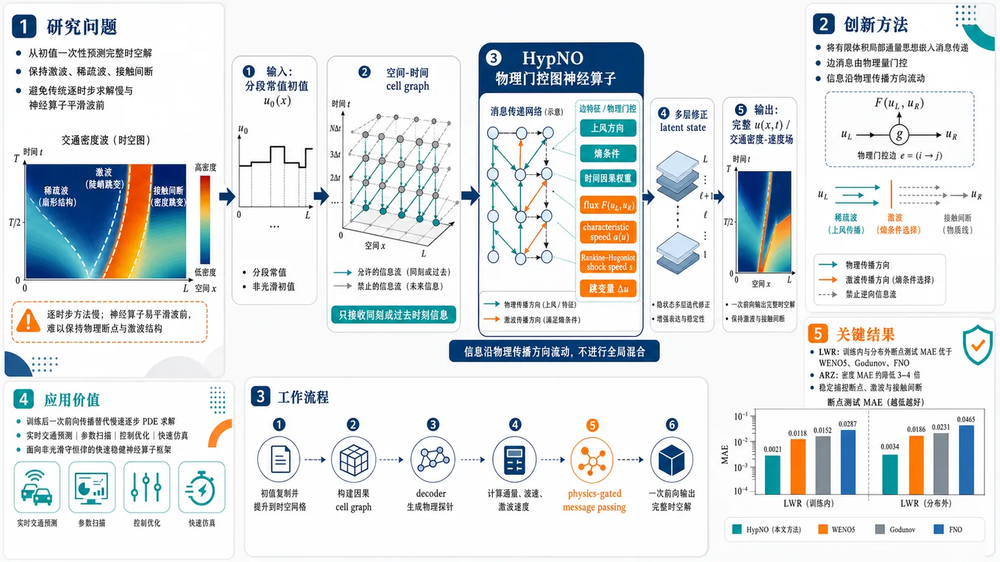
研究问题双曲守恒律在交通流等场景中会产生激波、稀疏波和接触间断；传统有限体积/WENO/Godunov 需要逐时步积分，计算慢，而 FNO、DeepONet、PINNs 等通用学习求解器容易把尖锐波前抹平。核心问题是：如何从初值一次性预测完整时空解，同时保持间断、激波和非线性输运结构。创新方法提出 HypNO：在因果空间-时间 cell graph 上构建图神经算子，将有限体积法的局部通量思想嵌入消息传递。Aha 点是边消息由物理量门控：upwind 方向、entropy 条件、temporal 因果权重，以及 flux、characteristic speed、Rankine–Hugoniot shock speed 等接口特征，让信息沿物理传播方向流动，而不是像谱方法那样全局平滑混合。工作流程输入分段常值初始条件 u0(x)；将初值复制并提升到整个空间-时间网格节点；构建只允许同刻或过去时刻传入的因果 cell graph；每层用共享 decoder 生成物理探针；根据探针计算边上的通量、波速、上风方向、激波速度和跳变量；通过 physics-gated message passing 聚合邻域消息；多层逐步修正 latent state；最终 decoder 一次输出完整 u(x,t) 或交通密度/速度时空场。关键结果在 1D LWR 和 1D ARZ 交通流基准上，HypNO 能稳定捕捉断点、激波和接触间断。LWR 中，在训练内和分布外断点数测试上，平均密度 MAE 均优于 WENO5、Godunov 和 FNO。ARZ 中，密度 MAE 约比经典数值基线和学习基线低 3–4 倍，显示物理门控图消息对复杂多波族系统特别有效。应用价值该方法把慢速逐步 PDE 求解转化为训练后的一次前向传播，可用于交通流实时预测、参数扫描、控制优化和快速仿真。其价值在于为含激波和间断的非光滑守恒律提供一种更快、更稳健、物理结构更清晰的神经算子框架。第一部分：核心概览
这篇工作把神经算子和图消息传递结合成一个面向双曲守恒律的一次性预测器：在空间-时间 cell graph 上直接学习从初值到全时空解的映射，并用upwind、entropy、Rankine–Hugoniot等物理量门控消息，专门处理激波、间断与非线性输运。相较于 FNO/DeepONet 的全局谱混合与 PINNs 的强形式残差优化，HypNO 更贴近有限体积法的局部通量结构，在 LWR 与 ARZ 交通流基准上突出表现出对间断的更强捕捉能力，属于近年“physics-aware graph neural operator”方向里针对双曲问题最明确的一类结构化推进。
---
第二部分：结构化快速回顾
《HypNO: A Graph-Based Neural Operator with Physics-Informed Message Passing for Hyperbolic Conservation Laws》（None，）
背景：双曲守恒律的解常含激波、稀疏波、接触间断，传统数值法可靠但需逐时步推进；通用神经算子在这类非光滑问题上容易模糊前沿。
方法：构建 HypNO，把初值提升到因果空间-时间图，在 cell graph 上进行physics-gated message passing，边特征显式编码flux、characteristic speed、upwind direction、Rankine-Hugoniot speed 等。
结果：在 LWR 与 ARZ 交通流上，对 ID/OOD 断点数均能工作；LWR 上优于 WENO5、Godunov、FNO，ARZ 上密度 MAE 约比所有经典与学习基线低 3–4 倍。
讨论：优势来自把双曲输运的物理结构嵌入消息传播，而不是用全局谱混合或强形式残差去“拟合”间断。
局限：可见内容主要覆盖一维标量 LWR与一维 ARZ；更高维、复杂几何、完整定量表格与附录细节未在给定文本中展开。
结论：形成了一个一次前向传播输出全时空场的、面向双曲守恒律的图神经算子框架，核心目标是稳健捕捉冲击波与接触间断。
---
第三部分：逐章节冷凝解析
1. Introduction
PDE 求解的核心矛盾是可靠性与效率的对立
双曲 PDE 与一般非线性 PDE 往往没有闭式解，标准路线依赖 finite difference / finite volume / finite element，对间断还要用 WENO 这类高阶非振荡格式。代价是：每换一个初始条件，都要重新做一次完整的时间积分。原文直接给出问题背景：“*their cost, however, scales with problem complexity; each new initial condition or parameter setting typically requires a full sequential time integration on a sufficiently resolved grid.*”
关键事实：传统数值法可解释、稳定，但推理成本随网格与时间步数增长。
机器学习被定位为“摊销计算”的替代路线
学习模型不是替代数值分析，而是把对一类 PDE 的大量求解压缩到训练阶段，推理时只做一次前向传播。原文表述非常明确：“*learned models can amortize computation across families of related inputs, offering fast inference after an upfront training phase.*”
这使其适合参数研究、设计循环和实时预测。
研究目标是学习初值到全时空解的算子映射
目标不是单点拟合，而是学习
[
u₀₍ₓ₎mapsto u(x,t)
]
原文写得很直接：“*learning a map from initial data (u₀₍ₓ₎) to the full space-time solution (u(x,t)).*”
这一定义把任务放进operator learning框架，而不是普通回归。
HypNO 的核心结构是因果空间-时间图上的图神经算子
与 Fourier operator 的“全局谱混合”不同，HypNO 使用“*causal space-time message passing on a cell graph*”。消息由有限体积接口特征条件化，特别强调“*flux, characteristic speed, and upwind direction*”。
这意味着网络的偏置方向不是平滑化，而是沿特征输运。
基准任务选择了 LWR 与 ARZ，因为它们对算子学习是强压力测试
原文指出 LWR 与 ARZ traffic-flow models 是“*a stress test for operator-learning methods because of their simultaneous global transport and shock formation*.”
即同时包含长程输运与激波形成，非常容易暴露谱方法的平滑偏差。
实验比较覆盖了学习模型与经典求解器
比较对象包括 FNO、以及 WENO、Godunov、HLL 等数值基线。原文结论性地概括为：模型“*predicts solution snapshots accurately across a range of initial conditions while capturing the shocks and discontinuities of the solution.*”
---
2. Background and Related Work
#### 2.1 Hyperbolic PDEs
双曲守恒律的本质是“传输而非生成”
原文定义为：“*describe quantities that are transported but not created or destroyed*.”
这句话点出守恒结构：信息沿特征传播，局部状态决定传播速度。
激波、稀疏波由特征相交或发散产生
非线性通量下，特征可“*converge and cross, producing shocks, or spread apart, forming rarefactions*.”
这解释了为什么即使初值光滑，有限时间内也会出现间断。
系统比标量方程更复杂：多波族与接触间断
交通流这类系统里，多个波族会相互作用，且“*contact discontinuities may persist alongside genuinely nonlinear shocks*.”
即不仅有激波/稀疏波，还有可长期保持的接触间断。
经典有限体积与上风格式天然匹配双曲结构
原文强调：“*Godunov-type fluxes respect upwind information while higher-order reconstructions such as WENO raise accuracy in smooth regions while limiting spurious oscillations near discontinuities.*”
这也是 HypNO 后续设计 upwind gate 的理论来源。
#### 2.2 Learning-based PDE solvers
第一类：数值结构化学习方法仍然保留逐时步推进
这类方法把神经网络嵌入传统时间推进。文中点名了 FluxGNN、Baba et al.、Lichtlé et al.、Hybrid FEM–NN、LRNN–DG。共同特征是：保留守恒或弱形式结构，但“*they generally advance the solution sequentially in time*”。
结果是推理复杂度仍接近传统求解器。
第二类：PINNs 直接拟合解场，但在激波附近容易失效
PINNs 通过 PDE 残差、边界条件、初值约束训练。问题在于双曲守恒律的间断处强形式导数失去意义。原文非常明确：“*standard PINNs assume sufficient smoothness and can fail near shocks and contacts, where strong-form derivatives are not meaningful.*”
因此 PINN 类方法不适合直接处理高间断问题。
第三类：算子学习擅长跨分辨率泛化，但对激波偏弱
DeepONet、FNO、PINO、graph operator 等可以在单次前向传播中给出全场预测。原文指出其优点是“*transfer across discretizations*”与“*predict full space-time fields for a new initial condition in a single forward pass*”。
但缺点也直接写出：*“global spectral mixing is biased toward smooth functions and tends to blur sharp fronts.”*
第四类：图方法强调局部邻域，但通常缺少双曲物理边结构
现有 GNN PDE 求解器多用坐标差、状态跳变、潜变量内积等一般边特征。原文指出关键缺口：“*do not explicitly encode flux, characteristic speed, upwind direction, or Rankine–Hugoniot structure.*”
对双曲问题而言，这是根本性不足，因为信息流方向本身依赖解。
HypNO 的定位是填补“图算子 + 双曲边结构 + 一次性预测”空白
原文把贡献压缩成一句：“*one-shot graph operators with explicit hyperbolic edge structure have not yet been established.*”
这就是新颖性锚点。
---
3. Mathematical Modeling
#### 3.1 Scalar conservation laws
统一的守恒律形式给出了研究对象
方程 (1) 为
[
partialₜ U(x,t)+øperatornamedivₓ f(x,t,U)=0,quad U(x,0)=U₀₍ₓ₎
]
其中 (U) 是守恒量，(f) 是通量。
这为后续 LWR 与 ARZ 提供统一框架。
Riemann 问题是双曲 PDE 的基本局部构件
原文强调：“*Riemann problems are defined by initial conditions with a single jump discontinuity, and produce discontinuities that propagate through the solution.*”
更复杂的分段常值初值可以视为多个 Riemann 问题的叠加，波前跟踪即由此而来。
CFL 条件控制显式数值方法稳定性
原文指出：“*laws like the Courant-Friedrichs-Lewy (CFL) stability condition govern choices of these parameters to ensure physically feasible and stable final solutions.*”
这说明传统方法的稳定性依赖 (Δ t,Δ x) 的受限选择。
弱解与熵条件决定物理解
由于间断存在，解必须在弱意义下理解；在多个弱解中，熵条件选出物理解。
原文对应表述是：“*The entropy condition specifies the physically-relevant weak solution among the set of mathematically admissible weak solutions.*”
#### 3.1.1 LWR Equation
LWR 用交通密度作为守恒量，采用 Greenshields 通量
方程 (2) 为
[
partialₜ h̊o+partialₓ f(h̊o)=0
]
取通量 (f(h̊o)=h̊o(1-h̊o))（式 3）。
由此得到波速
[
f'(h̊o)=1-2h̊o
]
速度依赖密度，非线性使特征相交并形成激波。
Rankine–Hugoniot 条件给出激波传播速度
对于左右状态 (h̊o_L,h̊o_R)，激波速度
[
s=fracf(h̊o_R)-f(h̊o_L)h̊o_R-h̊o_L
]
这一定律后来直接进入边特征与门控设计。
LWR 的 Riemann 问题只依赖左右密度
原文说明：左密度小于右密度时形成激波，反之形成稀疏波。
这使 LWR 成为检验模型能否从光滑信号泛化到激波区的标准基准。
实验采用分段常值初值，并按段数区分 ID/OOD
图 1 使用 (Nin2,5,7,10) 的初始段数展示精确解；训练中 piecewise_constant 初值段数为 (2,3,5,7,10)，测试 OOD 段数为 (8,20,25,30)。
空间区间为 (xin[-1,1])，时间区间为 (tin[0,1])。
精确解采用 Lax-Hopf entropy solution。
#### 3.1.2 ARZ equation
ARZ 扩展到二阶系统，引入速度和压力函数
ARZ 同时守恒质量与动量（或动量型量），速度 (v) 成为独立变量。
方程写作
[
partialₜ h̊o+partialₓ₍ₕ̊o v)=0,qquad partialₜ y+partialₓ₍yv)=0
]
其中
[
y=h̊oømega=h̊o v+h̊o p(h̊o)
]
本实验取 (p(h̊o)=h̊o)，即 (γ=1)
原文明确给出：“*we take (γ=1).*”
因此 (p'(h̊o)=1)，第一特征速度变为
[
łambda₁₌ᵥ₋ₕ̊o
]
第二特征速度为
[
łambda₂₌ᵥ
]
ARZ 的波结构比 LWR 更复杂，含 1-wave 与 2-contact
原文指出第一场“*supports shocks and rarefactions*”，第二场“*supports contact discontinuities*.”
这意味着解中既有非线性波，也有线性退化波。
Riemann 不变量用于构造精确波序列
沿 (łambda₁) 特征，(ømega=v+p(h̊o)) 保持不变；沿 (łambda₂) 特征，(v) 保持不变。
Riemann 解由“1-wave followed by a 2-contact”组成，中间态满足
[
ømega_*=ømega_L,quad v_*=v_R,quad p(h̊o_*)=ømega_L-v_R
]
ARZ 的解生成采用波前跟踪，并在间断上机器精度精确
图 2 说明：piecewise-constant 初值段数取 (Nin2,4,6,8)，解由 wave-front tracking 计算，“*exact to machine precision on shocks and contact discontinuities*”。
这使 ARZ 成为更高难度的系统级基准。
---
4. HypNo scheme
GNN 被选为 PDE 代理模型，因为消息传递像有限体积更新
原文写道：“*In the finite volume type approaches, the state of a cell is updated through fluxes exchanged with neighboring cells. Similarly, in a message-passing layer, each node updates its latent state by aggregating information from neighboring nodes through learned edge functions.*”
这建立了图网络与数值格式之间的结构类比。
目标是把初值映射到全时空解，而不是逐步推进
HypNO 被定义为把两种思想结合起来的 message passing graph neural operator，核心任务是从 IC 直接生成解场。
这使它具有一次前向传播的推理优势。
#### 4.1 Network schematic
整体流程是 lift → L 层 physics-gated message passing → shared decoder
图 3 给出结构：初值 (u₀₍ₓ₎) 被 lift 到时空网格，经过 (L) 层物理门控消息传递，最后共享 decoder 输出 (u(x,t))。
同时存在深监督：(hat u⁽ell⁾=Decoder(h⁽ell⁾))。
深监督让每一层都产生可解释的物理预测
共享 decoder 不只在末层输出，还在中间层生成物理探针。原文写明：“*the intermediate probes (hath̊o⁽ell⁾) ... are additionally supervised during training (deep supervision), encouraging each layer to refine a physically meaningful state.*”
#### 4.2 Space-time grid and operator learning
时空图不是递归时间推进，而是整块映射
给定 (nₓ) 与 (nₜ)，初值在空间网格上采样后被堆叠到整个 ((xᵢ,tₙ₎) 网格。
原文表述：*“the model starts by stacking the initial condition onto the entire space-time grid ... which provides a snapshot of the field (u(xᵢ,tₙ₎) at every node in a single forward pass.”*
消息传播被时间因果性约束
为符合双曲问题的有限域依赖，节点只能接收来自同一时刻或更早时刻的消息，(qin0,dots,kₜ)。
这就是“causal space-time graph”的实现方式。
#### 4.3 Lifting layer
lifting layer 把每个时空节点映射到 (R^d) 的潜变量
原文给出 (h⁽⁰⁾₍ᵢ,ₙ₎inR^d)。
该层后接一个 gated message-passing 层作为初始化，再送入 processor。
#### 4.4 Message passing GNN
消息函数把源点、邻点和边特征联合起来
消息定义为
[
m⁽ell⁾₍ⱼ,ₘ₎,₍ᵢ,ₙ₎=φ_θbig(h⁽ell⁾₍ᵢ,ₙ₎,h⁽ell⁾₍ⱼ,ₘ₎,e⁽ell⁾₍ⱼ,ₘ₎,₍ᵢ,ₙ₎big)
]
其中 (φ_θ) 是 MLP。
这意味着边上不仅传递状态，还传递物理结构信息。
聚合函数对邻居消息做加权汇总
[
M⁽ell⁾₍ᵢ,ₙ₎=AGG₍ⱼ,ₘ₎łeft(m⁽ell⁾₍ⱼ,ₘ₎,₍ᵢ,ₙ₎i̊ght)
]
聚合后，节点用残差更新：
[
h⁽ell⁺¹⁾₍ᵢ,ₙ₎=σ(MLPᵤₚd([h⁽ell⁾₍ᵢ,ₙ₎,M⁽ell⁾₍ᵢ,ₙ₎])+Wh⁽ell⁾₍ᵢ,ₙ₎)
]
激活函数是 GELU。
#### 4.5 Physics-based gating
边消息不是等权汇总，而是由物理 gate 选择性过滤
定义 (gin[0,1])，并用归一化形式：
[
M⁽ell⁾₍ᵢ,ₙ₎=sum fracgsum g+ǎrepsilonm
]
其中 (ǎrepsilon=10⁻⁶)。
原文强调，设计目标是提供“*relevant physical information to the network*”。
gate 分为 upwind、entropy、temporal 三类
- Upwind gate：编码信息传播方向
- Entropy gate：过滤熵违背边
- Temporal gate：对来自过去时刻的消息施加物理权重
这些门控是针对双曲问题的定制，而不是通用 attention。
#### 4.6 Edge feature vectors
边特征从解码后的物理探针计算，而不是从 latent 直接算
原文指出：特征来自 decoded state probe，“*rather than on the latent vectors directly*”。
对 LWR，用 (hath̊o)；对 ARZ，用 ((hath̊o,hatømega))。
相邻边与非相邻边分开建模
相邻边对应同一时刻、相邻空间 cell，模拟有限体积接口，携带 characteristic speed、Rankine-Hugoniot speed、upwind indicator、jump 等信息。
非相邻边只用拓扑特征，因为其不是直接接口。
这形成“两类消息 MLP”的设计。
#### 4.7 Decoder and output
共享 decoder 既做中间物理探针，也做最终输出层
原文写道：“*A single shared decoder MLP ... plays two roles*.”
一方面它从 latent 输出 (hath̊o⁽ell⁾) 或 ((hath̊o,hatømega))；另一方面在最后一层输出最终解。
这也解释了为什么存在 deep supervision：每层都被迫朝物理解收敛。
---
5. Numerical Experiments
实验对象是 1D-LWR 和 1D-ARZ
原文明确：比较 HypNO 与数值方法及算子近似方法。
训练/测试分为 ID 与 OOD 的分段数设置
LWR 中 piecewise_constant 初值训练段数为 (2,3,5,7,10)；测试 OOD 段数为 (8,20,25,30)；riemann 初值始终是 2 段，因此都视为 ID。
这套设计直接测量跨断点复杂度泛化。
指标采用 density MAE，基准是精确解
LWR 使用 Lax-Hopf exact solution；ARZ 用 wave-front tracking 的精确/机器精度结果。
LWR 的评价指标是密度预测的 mean absolute error (MAE)。
#### 5.1 LWR Evaluation
LWR 实验专门检验“看过的”和“没看过的”断点数
原文写明评估覆盖“*both seen and unseen during training*”，检验模型对不同初始条件段数的 zero-shot capability。
比较对象包括 FNO、Godunov、WENO5
这是学习方法与传统数值求解器的直接对照。
文中结论性表述为：HypNO-LWR 在所有 ID/OOD 段数上都取得最优平均 MAE，且是在 20 samples 上统计的。
原文原句是：“*attains the best mean MAE over 20 samples against the numerical schemes WENO5 and Godunov, as well as the learned FNO scheme.*”
结果指向一个稳定结论：断点越复杂，物理门控越有价值
虽然给定文本未展示表格数值，但已有文字结论包括：
- “*across all ID and OOD segment counts*”
- “*on every in- and out-of-distribution segment count*”
这说明优势不是只在某个特定初值上成立，而是对不同复杂度都保持。
---
第四部分：深度理解与语言支持
1. 术语解析
Operator learning
这里不是学习单个输入到单个输出，而是学习从函数到函数的映射。语境中指 (u₀₍ₓ₎mapsto u(x,t))。微妙之处在于：模型应当对网格分辨率和初值族具有迁移性，而不是绑定某个固定离散点集。
Upwinding
上风格式的核心是沿着信息传播方向取值。这里的 upwind gate 不是普通权重，而是把“信息从哪边来”变成一个显式物理筛选器。对双曲方程，这比对称邻域更关键，因为信息流方向由解本身决定。
Entropy admissibility
不是“所有弱解都行”，而是只有满足熵条件的弱解才是物理解。这里的 entropy gate 试图屏蔽熵违背消息，等价于把“正确激波解”的选择偏置写进网络结构。
Rankine–Hugoniot speed
这是激波传播速度公式，连接左右状态与通量差。它不是局部梯度，而是跨间断的守恒约束。用作边特征时，网络获得的是接口级别的守恒信息，这比单纯状态差更强。
Deep supervision
每层都挂一个 decoder 输出并施加监督，使中间表示逐层逼近物理解。其微妙点在于：这不是单纯的训练技巧，而是在多层消息传递中持续注入物理约束，减少深层过平滑。
2. 疑难查证
为什么“强形式导数在激波处失去意义”会让 PINNs 失败？
激波处解不再光滑，(partialₓ u) 和 (partialₜ u) 在经典意义下不存在或是分布意义对象。若仍用点态残差强行计算 PDE 项，优化目标会变成错误的几何量。
因此，PINN 在光滑解上可行，在shock/contact 附近常出现梯度冲突、损失项失衡或收敛到平滑错误解。
为什么全局 Fourier 混合会“模糊锋面”？
Fourier 基函数天然是全局、正弦型、平滑的。对激波这种局部不连续，谱方法需要大量高频项才可逼近，有限截断下就会出现 Gibbs 型振荡或平滑化。
HypNO 改用局部消息传递 + 物理门控，相当于把表示能力从“全局平滑基”换成“局部因果通量”。
ARZ 为什么比 LWR 更难？
LWR 只有一个标量守恒量，波结构相对单纯；ARZ 是二阶系统，包含两个波族：
- genuinely nonlinear 1-wave：可形成 shock/rarefaction
- linearly degenerate 2-contact：速度连续、密度可跳
这要求模型同时学会不同波族的传播规则，而不是只学一个标量密度场。
---
第五部分：创新评估与关联
1. 创新性判断
相对 2–5 年内工作的新颖性主要体现在三点
第一，图结构不是泛化网格工具，而是显式双曲物理图
过去的 graph PDE solver 常把网格视作邻接关系容器，边特征多为坐标差、状态差或潜变量相似度。这里的边特征直接写入 flux、characteristic speed、Rankine-Hugoniot speed、upwind flag、CFL-like ratios，把双曲 PDE 的局部传播法则硬编码进消息流。
第二，目标从“逐步模拟”改为“一次性预测全时空场”
很多物理图网络仍沿时间步递推，复杂度跟传统求解器相近。这里的核心突破是把初值直接 lift 到时空图，并在单次前向里生成整块解场。原文把这点概括为：*“After training, a single forward pass maps an initial condition to the full space-time field.”*
这对实时预测和参数扫描尤其重要。
第三，明确把激波可捕捉性作为设计目标，而非副产品
FNO、DeepONet 等算子学习方法在平滑 PDE 上很强，但对激波容易平滑化；PINN 在间断处又受强形式残差限制。HypNO 不是试图“顺手兼容”激波，而是通过upwind/entropy/temporal gates 与有限体积式边特征，把激波结构变成主约束。
这解决的是前人长期没完全解决的问题：在非光滑双曲守恒律上，实现可泛化、一次前向、且保留间断结构的神经算子。
与前人工作相比的边界
- 相比 FNO / DeepONet：从全局谱混合转向因果局部消息传递
- 相比 PINNs / wPINNs：不依赖激波处不稳定的强形式导数残差
- 相比 FluxGNN / neural finite volume：不止嵌入数值更新，而是直接做operator learning
- 相比通用 MeshGraphNets / message-passing PDE solvers：边上显式编码双曲物理语义，而不是仅用通用几何特征
最关键的空白被补上了
“*one-shot graph operators with explicit hyperbolic edge structure*” 这件事在给定文本中被明确指出尚未建立，而 HypNO 正面填补了这个空白。
-
13
📄 摘要：提出用有限动量圆偏振声子二色性直接探测二维 d 波交替磁体的 Néel 矢量。结合 Onsager 互易性与 C2z 晶格对称性，发现面内声子模式的二色信号在 Néel 矢量翻转时变号，为难读出的交替磁有序提供光谱判据。
💡 亮点：有限动量圆偏振声子二色性可读出 d 波交替磁体 Néel 矢量。二色信号随矢量翻转变号，为反铁磁自旋电子学提供非电输运探针。
📖 展开分析 + 配图
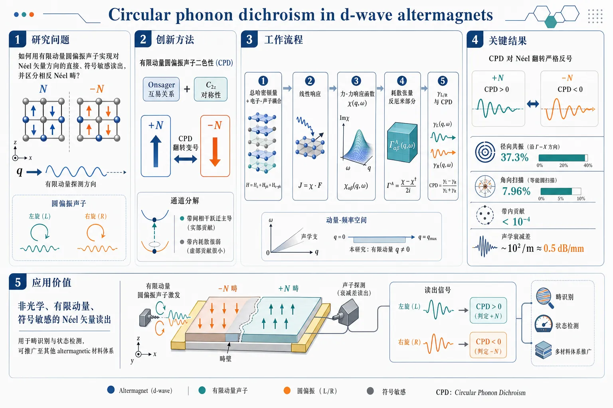
研究问题如何在二维 d-wave altermagnets 中，利用有限动量圆偏振声子实现对 Néel 矢量方向的直接、符号敏感读出，并区分相反 Néel 畴。创新方法提出有限动量圆偏振声子二色性（CPD）作为声学读出方案；结合 Onsager 互易关系与 C2z 晶体对称性，证明 CPD 在 Néel 翻转时严格变号；进一步通过通道分解锁定其主要来源为带间相干跃迁而非带内耗散。工作流程构建总哈密顿量并加入电子-声子耦合；用线性响应得到力-力响应函数 χ(q,ω)；由耗散张量反厄米部分定义左/右圆偏振声子吸收 γL/R 与 CPD；在二维 d-wave altermagnet 最小两带模型中数值扫描动量与角度，比较不同 Néel 取向下的二色性符号与幅值。关键结果CPD 对 Néel 翻转严格反号；径向共振处归一化不对称比最高达 37.3%，角向扫描最高达 7.96%；带内贡献低于峰值的 10⁻⁴，表明信号几乎完全由带间相干跃迁主导；估计声学衰减差约 10²/m，约 0.5 dB/mm，具备实验可探测性。应用价值提供一种非光学、有限动量、符号敏感的 Néel 矢量读出方法，可用于反铁磁/交替磁自旋电子学器件的畴识别与状态检测，并可推广到其他 altermagnetic 材料体系。第一部分：核心概览 (Overview)
有限动量圆偏振声子二色性被建立为二维 d-wave altermagnets 中读取 Néel 矢量的声学方案。核心贡献在于：通过 Onsager 互易关系与 (C₂z) 晶体对称性证明，面内声子波矢下 CPD 信号在 Néel 矢量翻转时严格变号；通过通道分解确认信号主要来自带间相干跃迁而非带内过程；在最小两带模型中给出可观测量级，径向共振处 (|ηCPD|=37.3%)，角向扫描达 (7.96%)。该工作把声子二色性从电子耗散/量子几何探针推进到交替磁 Néel 畴读取，为反铁磁自旋电子学提供非光学、有限动量、符号敏感的探测路径。
---
第二部分：结构化快速回顾
《Circular phonon dichroism in d-wave altermagnets》（None，）
背景
Altermagnets 兼具反铁磁无净磁化与动量依赖自旋劈裂，适合高速、低串扰自旋电子学；但 Néel-vector orientation 难以直接读取，限制器件应用。圆偏振声子携带角动量与手性，有限动量声子可探测非常规电子耗散与量子几何。
方法
构建有限动量声子吸收理论：总哈密顿量分解为离子、电子、电子-声子三部分；用线性响应得到力-力响应函数 (ḩiαβ(bm q,ømega))；从耗散张量反厄米部分定义圆偏振吸收 (γL/R=γ_Dmpγ^A)。二维 d-wave altermagnet 用两带模型
[
h(bmk)=tk²σ₀₊Jkₓₖ_yσ_z+łambda(kₓσ_y-k_yσₓ₎₋μ
]
数值计算。
结果
CPD 在 Néel 翻转下变号：
[
γ^A(bm q,ømega;J)=-γ^A(bm q,ømega;-J)
]
在 (J=±2,eV)、(μ=0.4,eV)、(t=2,eV)、(łambda=0.04,eV)、(hbarømega=0.002,eV)、(T=20,mathrm K) 下，径向切线最大 (|ηCPD|simeq37.3%)，角向扫描最大 (|ηCPD|=7.96%)。
讨论
信号主要来自带间相干跃迁；带内贡献低于峰值的 (10⁻⁴)。有限动量能量守恒条件筛选费米面附近共振弧，导致峰值、零点与符号变化。镜面对称 (Mₓ,M_y) 强制 (φ_q=0ⁱ̧rc,90ⁱ̧rc,180ⁱ̧rc,270ⁱ̧rc) 处 CPD 为零。
局限
模型为二维、单原子晶格、最小两带连续模型；材料实用性需要实际声子谱、真实多带结构、畴结构、样品厚度、衰减背景与缺陷散射验证。任意 Néel 方向重构未实现，读取限于两个相反 Néel 构型的符号判别。
结论
有限动量圆偏振超声吸收可作为 d-wave altermagnets 的直接 Néel 矢量读出。理论预言的衰减差约 (10²/mathrm m)，约 (0.5,dB/mm)，高于现有超声探测阈值，具备实验可行性。
---
第三部分：逐章节冷凝解析 (Section-by-Section Condensing)
Abstract
Altermagnets create a readout problem despite spintronic promise
Altermagnets 被界定为一类新型共线反铁磁体，具有动量依赖自旋劈裂，因此对反铁磁自旋电子学有吸引力；核心困难是磁序本身难以读取，直接制约应用。原文以 *"Altermagnets, a new class of collinear antiferromagnets, exhibit momentum-dependent spin splitting and offer compelling advantages for antiferromagnetic spintronics"* 概括材料优势，并以 *"the magnetic order is intrinsically difficult to read out, which hinders practical applications"* 点明瓶颈。
Finite-momentum circular phonon dichroism directly probes the Néel vector
提出 finite-momentum circular phonon dichroism, CPD 作为二维 d-wave altermagnets 中 Néel vector 的直接探针。关键对象不是长波极限光学响应，而是具有有限 (bm q) 的圆偏振声子/超声吸收差异。原文明确表述为 *"We propose finite-momentum circular phonon dichroism as a direct probe of Néel vector in two-dimensional d-wave altermagnets."*
Onsager reciprocity and (C₂z) symmetry enforce sign reversal
通过 Onsager reciprocity 与 (C₂z) 晶格对称性组合，得到面内声子波矢下的二色性信号在 Néel 矢量翻转时变号。该结论是读出方案的对称性基础。原文写道：*"Combining Onsager reciprocity with (C₂z) lattice symmetry, we find that the dichroic signal reverses sign when the Néel vector is flipped for the in-plane phonon wave vectors."*
Interband coherent transitions dominate CPD
通过通道分解确认 CPD 的微观来源是带间相干跃迁。这排除了单纯费米面带内耗散作为主导机制的解释。原文为 *"a channel-resolved decomposition identifies the circular phonon dichroism originates from the interband coherent transitions."*
Large measurable asymmetry reaches 37.3%
代表性有限动量切线中，归一化二色性不对称比达到 (|ηCPD|=37.3%)，显示信号不只是对称性允许，而是数值上显著。原文给出 *"Representative finite-momentum cuts show pronounced dichroic asymmetric ratio, with (|ηCPD|=37.3%)."*
---
Introduction.–
Antiferromagnets offer storage advantages over ferromagnets
反铁磁体相较铁磁体的存储优势包括：无杂散场、太赫兹尺度自旋动力学、净磁化为零。原文列出三点：*"absence of stray fields, terahertz-scale spin dynamics, and vanishing net magnetization"*。这些性质解释了反铁磁自旋电子学长期受到关注的器件动机。
Altermagnets combine antiferromagnetism with momentum-dependent spin splitting
Altermagnets 作为共线反铁磁体的新类别，具有动量依赖自旋劈裂，不同于传统补偿反铁磁体中常见的自旋简并图像。原文定义为 *"new class of collinear antiferromagnets with momentum-dependent spin splitting"*。这种劈裂为电子自旋分流、磁阻、扭矩和各种新奇响应提供基础。
Functionalities include spin splitter, magnetoresistance, and spin splitting torque
交替磁已被关联到多种功能效应：electrical spin-splitter effect、giant and tunneling magnetoresistance、spin splitting torque。原文以 *"remarkable functionalities, including the electrical spin-splitter effect, giant and tunneling magnetoresistance, and spin splitting torque"* 概述应用价值。
Néel-vector orientation remains a major bottleneck
尽管自旋劈裂和波函数随 Néel order 灵敏变化，Néel-vector orientation 的确定仍是重大挑战。原文直接指出 *"determining the orientation of the Néel-vector remains a major challenge"*。该问题是声学读出方案的出发点。
Néel reversal modifies electronic structure and quantum geometry
翻转 Néel vector 会改变底层电子结构及其量子几何性质，因为自旋劈裂与电子波函数依赖 Néel 序。原文为 *"reversing the Néel vector modifies the underlying electronic structure and its quantum-geometric properties"*。因此，任何对量子几何或电子耗散敏感的探针，都可能携带 Néel 信息。
Circular phonons carry angular momentum and chirality
Circularly polarized phonons 可携带角动量和手性，为圆二色性响应提供物理基础。原文写道：*"Circularly polarized phonons can carry angular momentum and chirality"*。左旋与右旋声子吸收差异因此可编码材料的手性/类霍尔耗散信息。
Phonon dichroism probes electronic dissipation at finite momentum
声子本身具有有限 (bm q)，能够超越长波极限，成为动量分辨电子耗散探针。原文指出 *"phonon dichroisms have been proposed as finite-momentum probes of electronic dissipation in several quantum materials"*，并进一步强调 *"phonons intrinsically carry finite momentum, enabling momentum-resolved probes of electronic dissipation beyond the long-wavelength regime"*。
Quantum geometry can be revealed through electron–phonon coupling
线性与圆形声子二色性均可通过电子-声子耦合揭示电子量子几何。原文为 *"both the linear and circular phonon dichroisms can reveal the electronic quantum geometry through electron–phonon coupling"*。该联系为在交替磁中利用 CPD 读取 Néel 矢量提供理论动机。
Finite-momentum phonons are matched to anisotropic altermagnetic Fermi surfaces
交替磁的自旋劈裂费米面高度各向异性，有限动量声子能够选择特定 (bm k→bm k+bm q) 跃迁，因此比长波探针更适合读取 d-wave 费米面劈裂结构。原文描述为 *"the anisotropic spin splitting Fermi surface in altermagnets"*。
CPD gives a direct signature of two opposite out-of-plane Néel domains
核心目标是建立有限动量声子吸收理论，并证明 CPD 可区分两个相反的面外 Néel-vector domains。原文写道：*"we develop a theory of finite-momentum phonon absorption and demonstrate that circular phonon dichroism (CPD) provides a direct signature of two opposite out-of-plane Néel-vector domains."*
Figure 1 illustrates circular ultrasound attenuation readout
图 1 的物理图像是：等振幅左旋与右旋圆偏振超声分别穿过 d-wave altermagnet；由于 (γ^L≠γ^R)，透射振幅不等；在固定校准 ((bm q,ømega)) 下，衰减差符号区分相反 Néel 方向。图注原文包括 *"Equal-amplitude left- and right-circular ultrasound are transmitted separately through a d-wave altermagnet"*，以及 *"the sign of the attenuation difference distinguishes opposite Néel-vector orientations."*
---
Formalism of phonon dichroisms.–
Total Hamiltonian separates ionic, electronic, and electron–phonon sectors
理论从总哈密顿量分解开始：
[
Hₜₒₜ=Hᵢₒₙ+Hₑₗ+Hₘₐₜₕᵣₘₑ₋ₚₕ.
]
原文为 *"The total Hamiltonian separates into ionic, electronic, and electron–phonon parts"*。电子-声子耦合在线性位移阶为
[
Hₘₐₜₕᵣₘₑ₋ₚₕ=-sumbₘ q,αhat T_α(-bm q)u_α(bm q),
]
其中 (hat T_α(bm q)) 是广义力算符。原文写作 *"to linear order in the ionic displacement (bm u(bm q)), the electron–phonon coupling is..."*
Ionic equation of motion includes electronic feedback force
在单原子晶格、原子质量 (M) 的简化下，离子运动方程为
[
Mddot u_α(bm q)
=
-Msum_βΦαβ(bm q)u_β(bm q)
+łanglehat T_α(bm q,t)ångle.
]
其中 (Φαβ) 是裸离子动力学矩阵，(łanglehat T_αångle) 是电子反馈力。原文说明 *"we consider the lattice dynamics of the monatomic lattice with an atomic mass (M)"*。
Linear response gives force-force response function
电子反馈力在线性响应下写为
[
łanglehat T_α(bm q,ømega)ångleᵢₙd
=
hbarsum_βḩiαβ(bm q,ømega)u_β(bm q,ømega),
]
响应函数为
[
ḩiαβ(bm q,ømega)
=
-fraciMhbar
int₀ⁱⁿfty dt,eⁱ⁽ømega⁺ⁱ⁰^⁺⁾t
łangle[hat T_α(bm q,t),hat T_β(-bm q,0)]ångle₀.
]
原文称其为 *"the retarded force-force response function"*。
Phonon eigenvalue equation contains electronic information
组合运动方程和线性响应得到声子本征方程：
[
ømega²u_α(bm q)
=
sum_β
[hbar²Φαβ(bm q)+hbarḩiαβ(bm q,ømega)]
u_β(bm q).
]
第一项是裸离子-离子动力学矩阵，第二项携带电子态信息。原文直接解释为 *"The first term is the bare ion–ion dynamical matrix; the second term encodes the informations from electronic states."*
Dissipation is encoded in the anti-Hermitian part
声子吸收由响应函数的反厄米部分控制：
[
γαβ
=
fraci4ømega
(ḩiαβ-ḩi^*βα).
]
对任意归一化偏振 (bmϵ)，吸收系数为
[
γbmϵ=bmϵ^daggerγbmϵ.
]
原文为 *"The dissipative part of the response is captured by the anti-Hermitian part"*。
Dissipative tensor decomposes into average, linear, and circular dichroism
耗散张量分解为
[
γ=
beginpmatrix
γ_D+γbₐᵣ D & γbar A+iγ^A
γbar A-iγ^A & γ_D-γbₐᵣ D
endpmatrix.
]
其中 (γ_D=(γₓₓ+γyy)/2) 控制偏振平均吸收，(γbₐᵣ D) 和 (γbar A) 控制线性二色性，(γ^A=Im,γₓy) 控制圆二色性。原文明确写道：*"the Hall-like component (γA=Im,γₓy) governs circular dichroism."*
Left and right circular phonon absorption differ by (γ^A)
归一化圆偏振矢量为
[
bmϵL/R=(1,± i)/sqrt 2.
]
对应吸收
[
γL/R=γ_Dmpγ^A.
]
因此左、右圆偏振吸收差直接等于圆二色性分量的两倍。原文为 *"For normalized circular polarization vectors... one finds (γL/R=γ_Dmpγ^A)."*
Finite-(q) force matrix elements follow from local frame electron–phonon coupling
应变通过局域标架场耦合电子动量：
[
e^μⱼ₌δ^μⱼ₋partial uⱼ/partial r_μ,
]
并在电子哈密顿量 (h(bm k)) 中作 Hermitian 替换
[
hat pⱼ→frac12(hat p_μ e^μⱼ₊ₑ^μⱼhat p_μ).
]
原文解释为 *"Strain couples to the electronic momentum through the local frame field"*。
Force operator matrix element contains midpoint momentum and averaged velocity
有限声子动量 (bm q)、位移方向 (α) 下，力算符矩阵元为
[
Tss'_α(bm k,bm q)
=
i,bm qḑotłeft(bm k+fracbm q2i̊ght)
bar vₛₛ',α(bm k,bm q),
]
其中
[
bar vₛₛ',α
=
łeftłangle uₛ,bₘ ₖłeft|
frachat v_α(bm k)+hat v_α(bm k+bm q)2
i̊ght|
uₛ',bₘ ₖ₊bₘ q
i̊ghtångle.
]
原文称其为 *"the finite-(q) averaged velocity matrix element"*。当速度算符对 (bm k) 线性时，该形式等价于中点速度 (hat v_α(bm k+bm q/2))，且 d-wave altermagnet 属于此类。原文写道：*"the d-wave altermagnet belongs to this class."*
Circular dissipative response depends on imaginary transition and chiral velocity factors
圆二色耗散分量为
[
γ^A(bm q,ømega)
=
-frac12ømega
sumₛₛ'
int
fracd²bm kh̊o(2π)²
Im[Fₛ'ₛ(bm k,bm q)]
Im[Sₛₛ'(bm k,bm q)].
]
其中
[
Fₛ'ₛ
=
-π[fₛ₍bm k)-fₛ'(bm k+bm q)]
δ[ǎrepsilonₛ'(bm k+bm q)-ǎrepsilonₛ₍bm k)-hbarømega],
]
[
Sₛₛ'
=
Im[bar vₛₛ',ₓbar v^*ₛₛ',y]
łeft[bm qḑotłeft(bm k+fracbm q2i̊ght)i̊ght]².
]
质量密度取 RuO(₂) 典型值
[
h̊o=2.2×10⁻⁶,kg/m².
]
原文强调 *"The factor (ImFₛ'ₛ) enforces energy conservation and ensures that the transition occurs between occupied and empty states."*
Onsager reciprocity links Néel reversal, momentum reversal, and tensor transpose
时间反演 (mathcal T) 下，Néel 序反转，(bm q→-bm q)，耗散张量转置：
[
γαβ(bm q,ømega;J)
=
γβα(-bm q,ømega;-J).
]
原文给出关键物理：*"Under the time-reversal operation (T), the Néel order parameter reverses"*；等价地，交错交换场中 (σ_z→-σ_z)，即 (J→-J)。
Hall-like CPD obeys an odd Onsager relation
取非对角元虚部 (γ^A=Im,γₓy)，得到
[
γ^A(bm q,ømega;J)
=
-γ^A(-bm q,ømega;-J).
]
原文写作 *"Taking the imaginary part of the off-diagonal element... gives rise to the Onsager relation"*。该式尚包含 (bm q→-bm q)，需要额外晶体对称性把 (-bm q) 映回 (bm q)。
Crystal symmetry can reduce Onsager relation to direct Néel sign readout
若晶体对称性把 (-bm q) 映射回 (bm q)，并保持标量 (γ^A)，则
[
γ^A(bm q;J)
=
-γ^A(bm q;-J).
]
原文解释为 *"the CPD changes sign under Néel-vector reversal and gives a direct readout of the Néel orientation."* 对二维 d-wave altermagnets，所需动量映射由 (C₂z) 保证。原文为 *"the required momentum mapping is guaranteed for two-dimensional (2D) d-wave altermagnets."*
---
d-wave altermagnets.–
The target system is a 2D d-wave altermagnet with out-of-plane Néel vector
研究对象为二维 d-wave altermagnet，Néel 矢量沿 (z) 轴，声子在 (x)-(y) 平面传播。原文写道：*"We focus on the 2D d-wave altermagnet illustrated in Fig. 1, with the Néel vector along the (z) axis and phonons propagating in the (x)-(y) plane."* 代表材料包括 RuO(₂) 与 KV(₂)Se(₂)O，原文为 *"Representative material platforms include RuO(₂) and KV(₂)Se(₂)O."*
Minimal two-band Hamiltonian contains d-wave exchange and Rashba SOC
低能电子结构由最小两带模型描述：
[
h(bmk)
=
tk²σ₀
+
Jkₓₖ_yσ_z
+
łambda(kₓσ_y-k_yσₓ₎
-μ.
]
其中 (J) 是 d-wave altermagnetic exchange splitting，(łambda) 是 Rashba spin-orbit coupling。原文为 *"where (J) is the d-wave altermagnetic exchange splitting and (łambda) is the Rashba spin-orbit coupling."*
Numerical parameters are fixed and experimentally plausible
数值参数为：
[
μ=0.4,eV,quad
t=2,eV,quad
łambda=0.04,eV,quad
hbarømega=0.002,eV,quad
T=20,mathrm K.
]
原文逐项列出：*"The parameters used here are (μ=0.4) eV, (t=2) eV, (łambda=0.04) eV, (hbarømega=0.002) eV, and (T=20) K."*
Néel reversal is equivalent to (J→-J)
Néel 矢量翻转使 (σ_z) 变号；由于交换劈裂只以 (Jkₓₖ_yσ_z) 进入哈密顿量，这等价于 (J→-J)。原文表述为 *"Reversing the Néel vector flips (σ_z), which is equivalent to (J→-J) since the exchange splitting enters only through (Jkₓₖ_yσ_z)."*
Rashba SOC is essential for Hall-like CPD
Rashba SOC 是类霍尔响应和 CPD 的必要条件；若 (łambda=0)，Berry 曲率消失，(γ^A) 恒为零。原文为 *"The Rashba term is essential for the Hall-like response: without it ((łambda=0)) the Berry curvature vanishes and (γ^A) is identically zero."* 这说明 altermagnetic exchange alone 不足以产生圆二色吸收，需自旋轨道耦合赋予手性矩阵元。
Band dispersion displays d-wave spin splitting
能带色散为
[
ǎrepsilon_±(bm k)
=
tk²
±
sqrtJ²kₓ²k_y²⁺łambda²k².
]
d-wave exchange splitting 在晶轴上消失，并在相邻象限变号。原文写道：*"This d-wave exchange splitting vanishes on the crystalline axes and changes sign between adjacent quadrants."* 这产生图 1 中交替自旋劈裂费米轮廓。
(C₂z) symmetry converts Onsager relation into Néel-odd CPD
二维 d-wave altermagnet 保持 (C₂z) 对称性，该对称性在固定 (J) 下映射 (bm q→-bm q)，并保持 (γ^A)。结合 Onsager 关系得到
[
γ^A(bm q,ømega;J)
→
-γ^A(bm q,ømega;-J).
]
原文为 *"Combining (C₂z) with the Onsager relation gives (γA(bmq,ømega;J)i̊ghtarrow-γA(bmq,ømega;-J))."*
Transmission protocol reads the sign rather than reconstructing an arbitrary vector
实验协议是在固定校准 ((bm q,ømega)) 下，分别输入等入射振幅的左、右圆偏振超声；若 (γ^L≠γ^R)，透射差给出 (γ^A) 的符号；Néel 翻转使符号翻转。原文明确限定读取性质：*"the readout is a sign-sensitive distinction between the two opposite Néel-vector configurations rather than an unconstrained reconstruction of an arbitrary vector direction."*
Radial scan shows separated left and right circular absorption
图 2(a) 在 (φ_q=π/4)、(J=2,eV) 下展示 (γ^L) 与 (γ^R) 随动量变化。二者共享相同共振吸收背景，但在特定动量处分离。原文为 *"They share the same resonant absorption background but separate at selected momenta."*
CPD asymmetry ratio normalizes strong background variation
由于背景吸收 (γ_D) 随 (q) 强烈变化，定义归一化不对称比：
[
ηCPD
=
fracγ^L-γ^Rγ^L+γ^R
=
-fracγ^Aγ_D.
]
原文解释为 *"Since the background itself varies strongly with (q), we quantify the effect by the asymmetry ratio (ηCPD)."*
Néel reversal flips the entire radial CPD curve
图 2(b) 在 (J=±2,eV)、同一径向方向下显示两条 (ηCPD) 曲线整体反号。原文为 *"The sign reversal between the two curves is visible over the scanned radial cut, consistent with the symmetry relation above."*
Radial resonances occur at (q₁/kF,ₘᵢₙ=0.09) and (q₂/kF,ₘᵢₙ=0.74)
径向切线不是小 (q) 平滑趋势，而呈现有限动量共振：低 (q) 局域峰在
[
q₁/kF,ₘᵢₙ=0.09,
]
第二峰在
[
q₂/kF,ₘᵢₙ=0.74,
quad
|ηCPD|simeq37.3%.
]
其中
[
kF,ₘᵢₙ=sqrtμ/(t+|J|/2).
]
原文为 *"It shows a low-(q) local peak at (q₁/kF,ₘᵢₙ=0.09) and a second peak, (|ηCPD|simeq37.3%), at (q₂/kF,ₘᵢₙ=0.74)."*
Channel decomposition proves interband dominance
图 3(a) 中 (J=2,eV) 下，(γ^Aᵢₙₜₑᵣ) 与总 (γ^A) 几乎不可区分，带内贡献低于峰值的 (10⁻⁴)。原文写道：*"The interband contribution (γ^Aₘ̊ ᵢₙₜₑᵣ) is visually indistinguishable from the total (γ^A) across the scan, with the intraband contribution staying below (10⁻⁴) of the peak."*
Intraband density-like term does not generate net chiral response
带内过程主导项类似密度响应，其交叉虚部为零，因此不贡献净手性吸收。原文为 *"the leading intraband density-like term carries zero cross imaginary part and does not contribute to the net chiral response."* 因而 CPD 的本质是自旋劈裂分支之间的带间相干跃迁，原文总结为 *"interband coherent transitions between the spin-splitting branches."*
(k)-resolved kernels identify where resonances originate
图 3(b,c) 在 (q₁) 与 (q₂) 处绘制带间积分核
[
sgn(g_A)|g_A/gA,ₘₐₓ|
]
在 SOC 费米面上的分布，颜色编码符号和相对权重。原文说明 *"The kernel is shown on the SOC Fermi surface prior to (bm k) integration, so the color encodes sign and relative weight within each panel."*
Low-(q) and high-(q) resonances have different Fermi-surface hot regions
在 (q₁/kF,ₘᵢₙ=0.09) 时，四个靠近晶轴的小区域贡献主要权重；在 (q₂/kF,ₘᵢₙ=0.74) 时，两个较大斑块主导，并由有限 (bm q) 跃迁连接。原文写道：*"For (q₁), four small regions near the crystalline axes carry the weight. For (q₂), two larger patches dominate and are connected by the indicated finite-(q) transitions."*
Energy conservation and joint density of states generate peaks and zero crossings
有限 (bm q) 响应受能量守恒限制：
[
ǎrepsilonₛ'(bm k+bm q)-ǎrepsilonₛ₍bm k)=hbarømega.
]
当该等能跃迁轮廓几乎接触费米面，或法向能量梯度变小时，joint density of states 增大；扫描 (q) 会打开或关闭共振弧，并重排正负手性权重，产生峰与零点。原文为 *"When this contour nearly touches a Fermi surface, or when its normal energy gradient becomes small, the joint density of states increases"*，以及 *"This produces both the peaks and the intervening zero crossings."*
Angular scan uses (|bm q|/kF,ₘᵢₙ=0.72) to avoid exact-resonance sensitivity
径向切线确定近共振动量壳后，角向扫描固定
[
|bm q|/kF,ₘᵢₙ=0.72,
]
略低于第二峰 (0.74)，以避免精确共振处的数值敏感性。原文为 *"slightly below the second peak to avoid numerical sensitivity at the exact resonance."*
Angular CPD reaches 7.96% and reverses under (J→-J)
在该动量壳上，(J=2,eV) 的角向扫描最大绝对不对称为
[
|ηCPD|=7.96%.
]
Néel 翻转即 (J=-2,eV) 时，整条角向曲线在数值精度内反号。原文为 *"the (J=2,eV) angular scan has its largest absolute asymmetry at (|ηCPD|=7.96%)"*，以及 *"Reversing the Néel vector... reverses the whole angular curve within numerical precision."*
Mirror symmetries force CPD zeros on crystalline axes
CPD 在
[
φ_q=0ⁱ̧rc,90ⁱ̧rc,180ⁱ̧rc,270ⁱ̧rc
]
处消失，这是镜面对称 (Mₓ) 与 (M_y) 的要求；它们分别使 CPD 对 (qₓ→-qₓ) 与 (q_y→-q_y) 为奇。原文为 *"The CPD also vanishes at (φ_q=0ⁱ̧rc,90ⁱ̧rc,180ⁱ̧rc,) and (270ⁱ̧rc), as required by the mirror symmetries (Mₓ) and (M_y)"*。
Additional sign changes are controlled by finite-momentum electronic transitions
除对称性强制的轴向零点外，每个象限内部还出现额外符号变化。这些 lobes 提供实际读出角度；高度与额外零点不是单靠对称性决定，而由有限动量声子辅助电子跃迁控制。原文为 *"Beyond these symmetry-enforced zeros, the CPD changes sign additionally within each quadrant"*，以及 *"the heights, and extra sign changes are controlled by the phonon assisted electron transitions with finite-momentum transfer."*
Pulse-echo ultrasound can detect the predicted CPD
实验上，pulse-echo ultrasound method 可直接探测 CPD。取典型横向声速
[
cₜsim3×10³,m/s
]
和
[
γ^L-γ^Rsim10⁶/s
]
在 (|bm q|/kF,ₘᵢₙ=0.72) 处，估计衰减差约
[
10²/mathrm m,
]
约
[
0.5,dB/mm.
]
原文称其 *"well above the detection threshold of current ultrasonic technology"*，表明可实验测量。
---
Conclusions.–
Finite-momentum CPD theory identifies chiral interband matrix elements as the mechanism
有限动量 CPD 理论揭示信号源于手性带间矩阵元。原文总结为 *"We developed a finite-momentum theory of CPD for d-wave altermagnets and revealed its origin of the chiral interband matrix elements."* 该机制把声学吸收、有限 (bm q) 电子跃迁和 altermagnetic 自旋劈裂联系起来。
CPD is odd under Néel-vector reversal and strongly modulated by wave vector
CPD 对 Néel-vector reversal 为奇，并在共振声子动量附近显示强烈波矢调制。原文为 *"the CPD is odd under Néel-vector reversal and shows a strong wave vector modulation near resonant phonon momenta."*
Representative resonances have large normalized asymmetry
代表性切线给出两个关键数值：径向切线达
[
|ηCPD|=37.3%,
]
选定角向扫描达
[
|ηCPD|=7.96%.
]
原文写道：*"the radial cut reaches (|ηCPD|=37.3%), and the selected angular scan reaches (|ηCPD|=7.96%)."*
Acoustic Néel-vector probe can generalize beyond the minimal model
该方案提供 d-wave altermagnets 的声学 Néel 矢量探针，并可扩展至其他交替磁材料。原文为 *"offers an acoustic probe of the Néel-vector of d-wave altermagnets, which can be straightforwardly applicable to other altermagnetic materials."*
---
第四部分：深度理解与语言支持 (Understanding & Nuance)
1. 术语解析
#### Altermagnets
Altermagnets 指一种介于传统铁磁与传统反铁磁之间的新型磁相：总磁化可为零、磁矩共线反平行，但能带中仍出现与晶体动量相关的自旋劈裂。其关键不是自旋轨道耦合导致的 Rashba/Dresselhaus 劈裂，而是磁子晶格与晶体旋转对称性共同产生的非相对论自旋-动量结构。语境中的 *"momentum-dependent spin splitting"* 强调：劈裂大小和符号随 (bm k) 变化，在 d-wave 情形中表现为 (kₓₖ_y) 形式。
#### Néel vector
Néel vector 是反铁磁中两个子晶格磁矩差的方向，常写作 (bm npropto bm M_A-bm M_B)。它不是净磁化，而是反铁磁序参量。这里的两个 Néel 构型是 (bm n) 与 (-bm n)，对应哈密顿量中 (J→-J)。微妙点在于：实验读出的不是任意三维方向，而是两个相反畴的符号差别。
#### Circular phonon dichroism, CPD
Circular phonon dichroism 指左旋与右旋圆偏振声子的吸收差异。与光学圆二色性类似，但载体是声子/超声而非光子。这里的 CPD 量化为
[
ηCPD=fracγ^L-γ^Rγ^L+γ^R.
]
“Circular” 对应声子位移在横向平面中旋转；“dichroism” 对应两种手性偏振吸收不同。
#### Onsager reciprocity
Onsager reciprocity 是输运系数在时间反演及磁序反转下的对称关系。这里不是简单说 (γ(bm q,J)=γ(-bm q,-J))，而是包含张量转置：
[
γαβ(bm q,ømega;J)=γβα(-bm q,ømega;-J).
]
由于 CPD 取非对角元虚部，转置会带来负号，从而得到 (γ^A(bm q,J)=-γ^A(-bm q,-J))。
#### Interband coherent transitions
Interband coherent transitions 指不同能带分支之间的量子相干跃迁，依赖速度矩阵元的相位结构，尤其是
[
Im[bar vₓbar v_y^*].
]
这不是普通带内 Drude-like 吸收。这里“coherent” 的微妙含义在于：信号来自波函数相位、Berry 曲率相关的横向手性矩阵元，而不只是态密度或寿命。
---
2. 疑难查证
#### 为什么 CPD 能读取 Néel 矢量？
核心逻辑分三步：
- Néel 翻转改变电子哈密顿量
d-wave exchange 项为
[
Jkₓₖ_yσ_z.
]
翻转 Néel 矢量等价于 (σ_z→-σ_z)，也就是 (J→-J)。因此电子波函数、速度矩阵元、Berry 曲率相关量都会变。
- CPD 是类霍尔耗散量
CPD 由
[
γ^A=Im,γₓy
]
控制，本质上是横向响应的反对称虚部。它对时间反演性质敏感。
- Onsager + (C₂z) 把“动量反转”消掉
Onsager 给出
[
γ^A(bm q,J)=-γ^A(-bm q,-J).
]
(C₂z) 又使二维面内 (-bm q) 与 (bm q) 等价，于是得到
[
γ^A(bm q,J)=-γ^A(bm q,-J).
]
因此在同一实验设置下，CPD 符号直接对应 Néel 矢量方向。
#### 为什么 Rashba SOC 必不可少？
如果只有
[
tk²σ₀₊Jkₓₖ_yσ_z,
]
自旋本征态基本沿 (σ_z) 量子化，缺少足够的动量空间自旋纹理，速度矩阵元的横向相位结构不足，(Im[bar vₓbar v_y^*]) 消失。加入
[
łambda(kₓσ_y-k_yσₓ₎
]
后，自旋在动量空间发生绕转，产生 Berry curvature 与类霍尔手性矩阵元，(γ^A) 才可非零。
#### 为什么有限动量比长波极限更关键？
声子吸收涉及跃迁
[
bm k→bm k+bm q.
]
当 (bm q) 可调时，声子能选择费米面上特定区域之间的跃迁。d-wave altermagnet 的自旋劈裂在不同象限变号，并在晶轴上为零，因此有限 (bm q) 能捕捉这种各向异性结构。长波极限 (bm q→0) 只能探测局域低动量转移，难以产生图 2 和图 3 中的大共振增强。
#### 为什么峰值会出现在 (q/k_Fsim0.74) 而非 (q→0)?
CPD 积分中有能量守恒：
[
ǎrepsilonₛ'(bm k+bm q)-ǎrepsilonₛ₍bm k)=hbarømega.
]
当某个 (bm q) 使大量费米面附近态同时满足该条件，联合态密度增强，吸收出现共振。(q₂/kF,ₘᵢₙ=0.74) 处两个较大费米面斑块由声子动量连接，带间手性权重同号区域更集中，因此 (|ηCPD|) 可达 (37.3%)。
---
第五部分：创新评估与关联 (Synthesis & Novelty)
1. 创新性判断
#### 从电子/光学 Néel 读出转向有限动量声学读出
近年 altermagnet 研究重点集中在自旋劈裂观测、反常霍尔效应、磁光 Kerr 效应、非线性输运、X-ray magnetic circular dichroism 等电子或光学读出路径。该工作的新意在于把 circular ultrasound attenuation 作为 Néel-vector probe，利用声子天然有限动量访问 altermagnetic 费米面各向异性。相较长波电磁探针，有限 (bm q) 声子能直接选择 (bm k→bm k+bm q) 跃迁。
#### 建立了 Néel 翻转与 CPD 符号之间的对称性定理
过去 2–5 年的 altermagnet 读出工作多证明某些输运或光学响应依赖 Néel 序，但该研究给出非常直接的符号关系：
[
γ^A(bm q,ømega;J)=-γ^A(bm q,ømega;-J).
]
该式需要同时满足 Onsager reciprocity 与 (C₂z) 动量映射，对二维 d-wave altermagnet 特别自然。创新点不只是“有响应”，而是“同一 ((bm q,ømega)) 下响应符号可区分两个 Néel 畴”。
#### 把 CPD 的微观来源定位到带间相干矩阵元
有限动量声子吸收可能来自带内耗散、带间跃迁、声子态密度、普通各向异性衰减等多种机制。通道分解显示 (γ^Aᵢₙₜₑᵣ) 几乎等于总 (γ^A)，带内贡献低于峰值 (10⁻⁴)。这使机制从经验性二色信号提升为明确的带间相干/手性速度矩阵元效应。
#### 给出可实验检测的量级估计
理论不止停留在对称性层面，还给出具体信号：径向最大 (|ηCPD|=37.3%)，角向壳最大 (7.96%)，衰减差约 (10²/mathrm m) 或 (0.5,dB/mm)。这一量级被评估为高于现有超声技术阈值，增强实验可行性。
#### 解决前人未充分解决的问题
前人核心未解问题是：在无净磁化的 altermagnet 中，如何以直接、畴符号敏感、可校准的方式读取 Néel 矢量。该方案解决的是两个相反面外 Néel 畴的符号判别问题，而非任意方向矢量重构。其优势在于不依赖净磁化，也不必只依赖电输运端口；声学探针可与绝缘或弱导电磁材料、异质结构和局域超声测量结合。
-
14
📊 含图深析
📄 摘要：在单层多铁 NiI2 与超导 NbSe2 衬底组成的范德华异质结构中，低温扫描隧道实验显示 NiI2 磁基态被邻近效应改变。结果表明原本非共线自旋纹理相关的二维多铁体可通过超导/金属衬底邻近作用调控，出现铁磁性。
💡 亮点：单层 NiI2 放在 NbSe2 上后磁基态转变并涌现铁磁性。该实验展示了邻近效应调控二维多铁磁性的可行路径。
📖 展开分析 + 配图
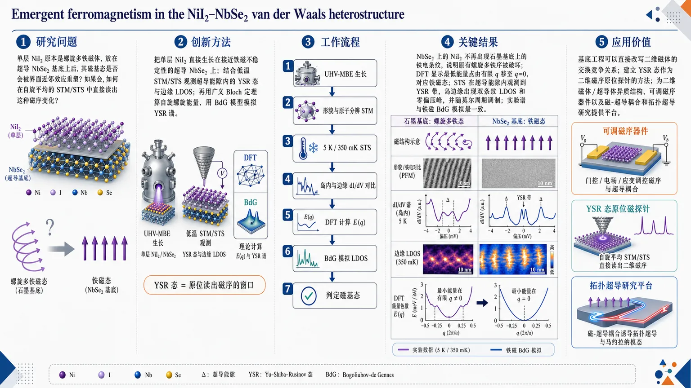
研究问题单层 NiI₂ 原本是螺旋多铁磁体，放在超导 NbSe₂ 基底上后，其磁基态是否会被界面近邻效应重塑？如果会，如何在自旋平均的 STM/STS 中直接读出这种磁序变化？创新方法把单层 NiI₂ 直接生长在接近铁磁不稳定性的超导 NbSe₂ 上，结合低温 STM/STS 观测超导能隙内的 YSR 态与边缘 LDOS；再用广义 Bloch 定理算自旋螺旋能量、用 BdG 模型模拟 YSR 谱。Aha 点是：把 YSR 态当作二维磁体的原位“读出器”，同时用基底工程反向调控磁序。工作流程UHV-MBE 在 NbSe₂ 上生长单层 NiI₂ → 形貌与原子分辨 STM 确认莫尔岛、晶格和缺陷 → 5 K/350 mK STS 探测导带、超导能隙与 YSR 态 → 对比岛内与边缘的 dI/dV 空间分布 → DFT 计算自由层与异质结构的 E(q) → BdG 模拟不同磁态下的 LDOS → 由条纹消失、YSR 谱和边缘对称性共同判定铁磁基态。关键结果NbSe₂ 上的 NiI₂ 不再出现石墨基底上的铁电条纹，说明原有螺旋多铁序被破坏；DFT 显示自由层 NiI₂ 的能量最低点在有限 q，而异质结构最低点移到 q=0，对应铁磁态；STS 在 NbSe₂ 超导能隙内观测到 YSR 带，岛边缘出现双条纹 LDOS 和零偏压峰，并随莫尔周期调制；实验谱与铁磁 BdG 模拟明显更一致，证明发生了 helimagnetic-to-ferromagnetic 转变。应用价值证明了基底工程可以直接改写二维磁体的交换竞争关系，为调控单层多铁/受挫磁体提供可操作路径；建立 YSR 态作为二维磁序原位探针的方法；为二维磁体/超导体异质结构、可调磁序器件以及后续磁-超导耦合和拓扑超导研究提供平台。第一部分：核心概览 (Overview)
单层 NiI₂ 原本是典型二维多铁性螺旋磁体，非共线自旋与自旋–轨道耦合产生铁电条纹。与超导 NbSe₂ 形成范德华异质结构后，基底通过铁磁 RKKY 相互作用重整化 Ni 位点间交换耦合，使基态从螺旋磁性转变为铁磁性。低温 STM/STS 在 5 K 与 350 mK 下观测到铁电条纹消失、超导能隙内 Yu–Shiba–Rusinov (YSR) 态及边缘双条纹 LDOS，结合 DFT 与 BdG 模型确认铁磁基态。该工作把 YSR 态确立为二维磁性原位探针，并展示基底工程调控单层多铁磁序的可行路径。
---
第二部分：结构化快速回顾
《Emergent ferromagnetism in the NiI₂₋NbSe₂ van der Waals heterostructure》（None，）
背景
二维磁体已从 Cr₂Ge₂Te₆、CrI₃ 扩展到二维螺旋磁体与多铁材料。单层 NiI₂ 的螺旋磁序依赖近邻铁磁交换与第三近邻反铁磁交换竞争；理论预言应变、门控、异质结构可调控二维多铁性，但实验控制仍稀缺。
方法
采用 UHV-MBE 在 NbSe₂ 上生长单层 NiI₂，使用 5 K STM/STS 与 350 mK STS 测量形貌、能带、超导能隙和 YSR 态；使用 DFT 广义 Bloch 定理计算自旋螺旋能量 (E(mathbf q))，并用 Bogoliubov–de Gennes 低能模型模拟铁磁与螺旋磁态下的 LDOS。
结果
NiI₂ 岛具有莫尔图案，晶格常数 3.91 Å，但完全缺失石墨基底上出现的铁电条纹。DFT 显示自由单层 NiI₂ 的能量最小值位于有限 (mathbf q₀ approx 2/5øverlineΓ K)，而 NiI₂/NbSe₂ 的最小值位于 (mathbf q₀₌₍₀,0))，对应铁磁基态。STS 显示 NbSe₂ 超导能隙内出现 YSR 带，并在岛边缘出现随莫尔周期调制的零偏压峰与双条纹 LDOS。
讨论
NbSe₂ 接近铁磁不稳定性，具有主导铁磁自旋响应，可通过近邻效应和 RKKY 相互作用重整化 NiI₂ 的交换耦合。YSR 态不仅证明磁矩与超导基底耦合，也可区分铁磁与螺旋磁基态，因为两者产生不同能谱和边缘空间对称性。
局限
未直接进行自旋分辨成像或磁化测量；铁磁判据主要来自铁电条纹缺失、YSR 能谱、边缘 LDOS 对称性及理论拟合。5 K 下超导能隙内精细结构分辨受限。边缘终止结构主要基于生长条件与形貌推断。
结论
NbSe₂ 基底可将单层 NiI₂ 从多铁螺旋磁体调控为铁磁体。YSR 态能够在自旋平均 STM/STS 中揭示二维磁体基态信息，NiI₂ 因而成为可由基底调控的受挫二维磁体平台。
---
第三部分：逐章节冷凝解析 (Section-by-Section Condensing)
Abstract
- Monolayer multiferroics can in principle be tuned but experimental control is scarce
单层多铁材料的核心物理来自非共线自旋纹理与强自旋–轨道相互作用，可在单层极限实现磁电功能；理论上可通过应变、门控、近邻效应调控，但实验证据不足。关键表述为 *"Multiferroicity arising from non-collinear spin textures and strong spin–orbit interactions offers a route to magnetoelectric functionality in the monolayer limit"*，以及 *"experimental demonstrations of such control remain scarce"*。
- NbSe₂ proximity changes the magnetic ground state of monolayer NiI₂
NiI₂ 被定位为典型二维多铁材料，核心发现是其磁基态被超导 NbSe₂ 基底改变。直接证据性表述为 *"the magnetic ground state of monolayer NiI₂, a prototypical two-dimensional multiferroic, is altered by proximity to a superconducting NbSe₂ substrate"*。
- STM/STS reveals substrate-induced exchange renormalization and ferromagnetism
使用低温 STM/STS 证明金属基底重整化 NiI₂ 内部交换相互作用，并驱动铁磁基态。关键句为 *"Using low-temperature scanning tunnelling microscopy (STM) and spectroscopy (STS), we show that the metallic substrate renormalizes the exchange interactions within NiI₂ and drives it into a ferromagnetic ground state"*。
- YSR states visualize magnetism inside the superconducting gap
通过探测 NbSe₂ 超导能隙内的 Yu–Shiba–Rusinov (YSR) 态可视化磁性，表明 YSR 态不仅是杂质磁矩探针，也可用于二维磁层。对应原文为 *"This can be visualized by probing the Yu–Shiba–Rusinov (YSR) states within the superconducting gap of the NbSe₂ substrate"*。
- YSR states become an in situ probe and substrate engineering becomes a control knob
该工作建立了两个方法学贡献：YSR 态作为二维磁性原位探针，以及基底工程控制原子薄材料磁序。原文为 *"Our results establish YSR states as an in situ probe of two-dimensional magnetism and demonstrate substrate engineering as a means of controlling magnetic order in atomically thin materials"*。
---
Introduction
- Two-dimensional magnetism began with intrinsic ferromagnetism in Cr₂Ge₂Te₆ and CrI₃
二维磁性材料领域的实验起点是 Cr₂Ge₂Te₆ 与 CrI₃ 中单层极限长程磁有序的发现。原文明确写道 *"The field of magnetic two-dimensional materials was initiated by the discovery of intrinsic ferromagnetism in Cr₂Ge₂Te₆ and CrI₃"*，并强调 *"long-range magnetic order can persist down to the monolayer limit"*。
- 2D helimagnets introduce spin-driven multiferroicity
二维螺旋磁体通过非共线自旋纹理和自旋–轨道耦合产生电极化，从而形成二维多铁有序。关键表述为 *"A more recent addition to this family is the class of 2D helimagnets, where non-collinear spin textures combined with spin–orbit interactions generate an electric polarization, giving rise to multiferroic order in two dimensions"*。
- Tunability is theoretically expected but experimentally underdeveloped
尽管理论工作预言可通过应变、电静态门控、异质结构调节二维多铁体系，实验展示仍有限。原文为 *"theoretical studies predict that the properties of these systems could be tuned through strain, electrostatic gating, or the formation of heterostructures"*，并指出 *"experimental demonstrations of such tunability remain limited"*。
- Magnetic van der Waals heterostructures have enabled exotic phases, but monolayer multiferroics remain underexplored
磁性范德华异质结构已用于构造多种奇异量子相，但将类似策略应用于单层多铁体仍基本缺失。原文为 *"Heterostructures with magnetic materials have been used to engineer a variety of exotic quantum phases"*，以及 *"similar efforts involving monolayer multiferroics remain largely absent"*。
- Heterostructure formation can itself change magnetic ground states
异质结构不是被动承载平台；基底可能通过电荷转移、杂化、电子屏蔽改变原子薄磁体的交换作用，并诱导磁相变。关键句为 *"One challenge is that heterostructure formation can itself modify the magnetic ground state"*，以及 *"Exchange interactions in atomically thin magnets are highly sensitive to substrate effects, including charge transfer, hybridization, and electronic screening from the substrate"*。
- NiI₂/NbSe₂ provides a magnet-superconductor platform with YSR readout
研究对象是二维多铁 NiI₂ 生长在超导 NbSe₂ 上，并通过 STM/STS 读取磁性。NbSe₂ 的作用不仅是基底，也是通过 YSR 态放大磁响应的探针。原文为 *"we investigate this interplay by growing a two-dimensional multiferroic, NiI₂, on a superconducting NbSe₂ substrate and probing the resulting heterostructure using low-temperature scanning tunneling microscopy (STM) and spectroscopy (STS)"*，以及 *"The superconducting substrate provides a sensitive probe of magnetism through Yu–Shiba–Rusinov (YSR) states"*。
- YSR bands arise from exchange coupling between NiI₂ magnetic moments and NbSe₂
YSR 态来自 NiI₂ 磁矩与超导体之间的交换相互作用；在扩展一维或二维体系中，这些束缚态形成 YSR bands。原文为 *"The exchange interaction between the magnetic moments in NiI₂ and the superconductor produces bound states within the superconducting energy gap"*，以及 *"leading to YSR bands in extended one- or two-dimensional systems"*。
- Core experimental signature is loss of multiferroic order plus YSR evidence for ferromagnetism
关键现象包括：单层 NiI₂ 原有多铁有序消失；薄膜内部出现 YSR bands；岛边缘 LDOS 特征与铁磁态一致。原文为 *"Our measurements reveal the absence of the original multiferroic order of single layer NiI₂ and instead show YSR bands in the interior of the film together with local density of states (LDOS) signatures at the island edges that are consistent with a ferromagnetic state"*。
- Mechanism is substrate-induced exchange renormalization causing helimagnetic-to-ferromagnetic transition
物理解释是 NbSe₂ 基底重整化 NiI₂ 的磁交换相互作用，使其发生螺旋磁性到铁磁性转变。原文为 *"These observations can be explained by substrate-induced renormalization of magnetic interactions, driving a helimagnetic-to-ferromagnetic transition in the NiI₂ layer"*。
---
Results
Growth and properties of NiI₂ on NbSe₂
- MBE growth produces monolayer NiI₂ islands with moiré patterns
UHV-MBE 在 NbSe₂ 上生长 NiI₂，典型大面积形貌图参数为 1 V、5.1 pA，比例尺 50 nm；岛状结构因 NiI₂ 与 NbSe₂ 晶格失配产生莫尔图案。原文为 *"We used molecular beam epitaxy (MBE) in ultra-high vacuum (UHV) to grow NiI₂ on NbSe₂ substrate"*，以及 *"The islands display a moiré pattern due to the lattice mismatch between NiI₂ and NbSe₂"*。
- Atomic lattice constant is 3.91 Å and matches previous monolayer NiI₂ studies
原子分辨 STM 显示 NiI₂ 晶格常数为 3.91 Å；图像参数为 100 mV、308 pA，比例尺 4 nm。原文为 *"Fig. 1b shows the atomic lattice of NiI₂ with a lattice constant of 3.91 Å, consistent with the previous studies"*。
- Point defects are dominated by iodine-vacancy-like single-atom dips
NiI₂ 中观察到多类点缺陷，最显著为单原子尺寸凹陷，被解释为碘空位。原文为 *"We also observe several kinds of point defects, most prominently single atom sized dips, which we interpret as iodine vacancies"*。
- NiI₂ monolayer structure consists of Ni sandwiched between iodine layers
结构模型显示 Ni 原子位于两层 I 原子之间，黑色菱形标记 NiI₂ 单胞。原文为 *"nickel atoms (gray) are sandwiched between iodine atoms (purple), and the black lines mark the unit cell of NiI₂"*。
- Ferroelectric stripe modulation is absent at all bias voltages
与石墨基底上的 NiI₂ 不同，NbSe₂ 上的 NiI₂ 在任何偏压下都未出现条纹调制。该缺失是判断原有多铁螺旋态消失的关键实验信号。原文为 *"we do not observe stripe-like modulation in NiI₂ at any bias voltage"*。
- Stripe absence indicates loss of non-collinear magnetic ground state
石墨基底上条纹来自螺旋自旋基态和自旋–轨道耦合诱导的铁电极化；NbSe₂ 上无条纹意味着单层 NiI₂ 不再具有非共线磁基态。原文为 *"On graphite, the stripe pattern arises from the ferroelectric polarization in NiI₂ generated by the spin-spiral ground state together with spin-orbit interactions"*，以及 *"The absence of ferroelectric stripes indicates that monolayer NiI₂ on NbSe₂ does not host a non-collinear magnetic ground state"*。
- Magnetic transition is attributed to the NbSe₂ substrate
条纹消失被归因于由 NbSe₂ 基底驱动的磁相变。原文为 *"likely stemming from a magnetic phase transition driven by the NbSe₂ substrate"*。
- Spin spiral in isolated NiI₂ originates from competing exchange couplings
NiI₂ 的螺旋磁态来自第一近邻铁磁交换与第三近邻反铁磁交换之间的竞争。原文为 *"The spin spiral state in NiI₂ stems from the competition between ferromagnetic first and antiferromagnetic third nearest neighbor exchange couplings"*。
- Graphite-supported NiI₂ lies close to a ferromagnetic transition
石墨基底上的 NiI₂ 基态接近铁磁相边界，因此较小基底扰动即可改变磁序。原文为 *"on e.g. a graphite substrate, its ground state is close to a ferromagnetic transition"*。
- NbSe₂ is close to ferromagnetic instability and has dominant ferromagnetic spin susceptibility
NbSe₂ 本身接近铁磁不稳定性，具有主导铁磁自旋磁化率，为诱导 NiI₂ 铁磁态提供物理基础。原文为 *"NbSe₂ is known to be close to a ferromagnetic instability, and in particular has a dominant ferromagnetic spin susceptibility"*。
- DFT with generalized Bloch theorem maps spin-spiral energy E(q)
DFT 计算分别处理自由单层 NiI₂ 和 NiI₂/NbSe₂ 异质结构，使用广义 Bloch 定理约束螺旋磁化：
[
mathbf m(mathbf r)=m₀₍ₒ̧s(mathbf qḑot mathbf r),sin(mathbf qḑot mathbf r),0)
]
原文为 *"We use the generalized Bloch theorem to study the energy dependence of the ground state as a function of the spin spiral ground state with magnetization constrained to be (m(r)=m₀(o̧s(qḑotr),sin(qḑotr),0))"*。
- Free-standing NiI₂ has a finite-q spin spiral minimum near 2/5 ΓK
自由单层 NiI₂ 的能量最小值位于有限传播矢量 (mathbf q₀)，约为 (mathbf q₀ approx 2/5øverlineΓ K)，对应物理螺旋态。原文为 *"For a spin-spiral ground state, such as the free-standing NiI₂ monolayer (Fig. 1d), the minimum energy (E(q₀)) appears at finite (q=q₀), where (q₀approx 2/5øverlineΓ K)"*。
- NiI₂ on NbSe₂ has a q = 0 ferromagnetic minimum
NiI₂/NbSe₂ 的 (E(mathbf q)) 最小值位于 (mathbf q₀₌₍₀,0))，对应铁磁基态。原文为 *"for a ferromagnetic ground state, the minimum appears at (q₀=(0,0))"*，以及 *"(E(q)) directly reflects the emergence of a ferromagnetic ground state for monolayer NiI₂ on NbSe₂"*。
- Ferromagnetism is rationalized by RKKY-induced exchange renormalization
诱导铁磁性可由 NbSe₂ 中铁磁 RKKY 相互作用重整化 Ni 位点间交换耦合解释。原文为 *"The emergence of ferromagnetism in NiI₂ driven by NbSe₂ can be rationalized from a renormalization of the exchange couplings between Ni sites driven by the ferromagnetic RKKY interaction in NbSe₂"*。
- STS at 5 K reveals a shifted NiI₂ conduction band around 1.5 V
5 K STS 中，NbSe₂ 上 NiI₂ 的导带峰位于约 1.5 V；相比之下，HOPG 基底上 NiI₂ 导带起始约 0.4 V，表明基底显著影响电子结构。原文为 *"the conduction band is observed as a peak around 1.5 V, while on the HOPG substrate, NiI₂ shows the onset of the conduction band at 0.4 V"*。图 2b 稳定参数为 2 V、500 pA。
- Moiré pattern periodically modulates NiI₂ electronic properties
晶格失配产生的莫尔图案周期性调制 NiI₂ 电子结构，沿图 2a 红箭头的 dI/dV 线谱显示导带随莫尔周期变化。原文为 *"The lattice mismatch between the substrate and the NiI₂ layer results in a moiré pattern that periodically modulates electronic properties"*，以及 *"the dI/dV spectra acquired along the red arrow in Fig. 2a show a periodic modulation of the NiI₂ conduction band"*。
- Superconducting gap under NiI₂ is modulated by the moiré superlattice
在 NbSe₂ 超导能隙附近，NiI₂ 岛内部的空间分辨 dI/dV 显示能隙外观随莫尔周期变化；图 2d/e 稳定参数为 10 mV、500 pA。原文为 *"spatially resolved differential-conductance measurements across the moiré pattern with the sample bias set in the vicinity of the NbSe₂ superconducting gap"*，以及 *"a modulation is evident in the appearance of the superconducting gap"*。
- Reduced apparent gap width correlates with conduction-band moiré modulation
导带调制位置与超导表观能隙缩小位置重合，说明莫尔调制同时影响常规电子态与 YSR 相关态。原文为 *"The dashed magenta lines in Fig. 2c, which correspond to modulation of conduction band, coincide with the positions of the reduced apparent gap width observed in the Fig. 2e"*。
- Bulk island likely hosts moiré-modulated YSR states
5 K 分辨率难以解析全部细节，但导带调制和能隙缩小的相关性支持岛内部存在莫尔调制的 YSR 态。原文为 *"Although it is challenging to resolve in detail at 5 K, this correlated behavior suggests that the bulk of the island hosts Yu–Shiba–Rusinov (YSR) states, which are likewise modulated by the moiré superlattice"*。
---
YSR states in the NiI₂ / NbSe₂ heterostructure
- Sub-Kelvin STS directly resolves superconducting-gap modifications
在 350 mK 下进行 STS，图 3a 比较裸 NbSe₂ 与 NiI₂ 岛上的微分电导谱。裸 NbSe₂ 测量参数为 3 mV、106.5 pA、(Vₘ₌₅₀,μ V)；NiI₂ 岛上为 3 mV、101 pA、(Vₘ₌₅₀,μ V)。原文为 *"we carried out spectroscopy experiments at (T=350) mK"*，以及 *"The blue curve shows a reference spectrum acquired on pristine NbSe₂, several nm away from the NiI₂ island"*。
- Bare NbSe₂ shows a well-defined superconducting gap
裸 NbSe₂ 的参考谱具有清晰超导能隙。原文为 *"This spectrum shows a well-defined superconducting gap, as expected"*。
- NiI₂ island suppresses coherence peaks and narrows/fills the gap
NiI₂ 岛上谱线相对裸 NbSe₂ 表现为相干峰强度降低、能隙表观变窄、能隙中出现新态。原文为 *"The spectrum displays a reduced intensity of the coherence peaks with respect to the bare NbSe₂ and the gap appears narrower"*，以及 *"The gap is filled with new states"*。
- In-gap states are interpreted as YSR bands from NiI₂–NbSe₂ magnetic coupling
能隙内新态被解释为 NiI₂ 磁矩与 NbSe₂ 基底相互作用产生的 YSR band。原文为 *"which we interpret as a YSR band arising from interaction of magnetic moments in NiI₂ with the NbSe₂ substrate"*。
- Reduced coherence peaks are robust across locations
YSR 带强弱依赖具体位置，但相干峰强度降低是稳健特征。原文为 *"Depending on the exact location of the dI/dV spectrum, the YSR band appear more or less prominently, but the reduced coherence peak intensity is robustly observed"*。
- YSR observations support ferromagnetic ground state
能隙内 YSR 带与相干峰压低共同支持 NbSe₂ 上 NiI₂ 的铁磁基态。原文为 *"These observations supports the emergence of a ferromagnetic ground state in NiI₂ on the NbSe₂ substrate"*。
- Low-energy model contains hopping, exchange, and s-wave superconductivity
理论模拟使用低能哈密顿量
[
H=H₀₊H_J+HSC
]
其中 (H₀) 描述 NbSe₂ 单粒子跃迁，(H_J) 描述 NiI₂ 诱导的交换耦合，(HSC) 描述 NbSe₂ 内禀 s-wave superconductivity。原文为 *"The electronic structure of the heterostructure is captured with a low energy model of the form (H=H₀+HJ+HSC)"*，以及 *"accounts for the intrinsic s-wave superconducting of NbSe₂, leading to a Bogoliubov-de-Gennes Hamiltonian"*。
- Exchange texture J(r) encodes ferromagnetic or spin-spiral NiI₂ states
不同磁态通过空间交换场 (mathbf J(mathbf r)) 编码；自旋螺旋由传播矢量 (mathbf q) 参数化，莫尔调制和边缘增强由 (mathcal J(mathbf r)) 表示。原文为 *"The different potential magnetic states of NiI₂ can be directly encoded in the functional form of (bmJ(r))"*，以及 *"(q) parametrizes the spin spiral and (J) denote the modulation of the exchange coupling stemming from the moiré pattern and possible enhanced coupling at the island edges"*。
- LDOS is computed from the BdG spectral function
局域态密度由 BdG 哈密顿量的电子谱函数获得：
[
A(ømega,mathbf r)=sumₛłangle mathbf r,s|δ(ømega-H)|mathbf r,sångle
]
原文为 *"The local density of states can be obtained from the electron spectral function of the BdG Hamiltonian defined as (A(ømega,r)=sumₛłanglebmr,s|δ(ømega-H)|bmr,sångle)"*。
- Ferromagnetic and spin-spiral states generate significantly different spectra
模拟表明铁磁与螺旋磁态的 YSR/LDOS 能谱明显不同。原文为 *"The different spin configurations have significantly different energy spectra as illustrated in Fig. 3b"*。
- Spin-spiral simulations produce strongly shifted and split coherence peaks
螺旋磁态模型始终给出强烈位移和分裂的相干峰，这与实验中较温和的能隙填充和相干峰压低不匹配。原文为 *"Calculated spectra with a spin-spiral ground state consistently result in strongly shifted and split coherence peak features in the LDOS"*。
- Ferromagnetic simulations better match experimental spectra
铁磁基态模拟与图 3a 的实验谱更一致。原文为 *"The results corresponding to a ferromagnetic ground state are more in-line with the experimental results"*。
- Real-space LDOS patterns also distinguish magnetic ground states
铁磁态与螺旋态不仅能谱不同，实空间 LDOS 图样也不同。原文为 *"The ferromagnetic and spin-spiral ground states are predicted to result in distinct LDOS patterns in real space as well"*。
- Experimental edge LDOS shows two maxima not commensurate with the atomic lattice
实验在岛边缘垂直方向观察到两个 LDOS 最大值，其间距与 NiI₂ 原子晶格不公度；图 3d 参数为 5 K、10 mV、620 pA，图 3e 参数为 5 K、10 mV、603 pA。原文为 *"Experimentally, we observe two LDOS maxima with a spacing not commensurate with the atomic lattice perpendicular to the island edges"*。
- Edge coupling to NbSe₂ is stronger than interior coupling
理论与实验 LDOS 比较表明 NiI₂ 岛边缘与基底磁耦合增强，类似 CrBr₃/NbSe₂ 与 CrCl₃/NbSe₂ 中报道的边缘增强 YSR 态。原文为 *"Detailed comparison between the calculated and experimental LDOS suggests that the edges of the NiI₂ islands are magnetically more strongly coupled with the substrate"*。
- Equivalent 60° long edges show identical double-stripe LDOS
长直边彼此夹角 60°，晶体学等价，并都显示相同双条纹 LDOS 图样。原文为 *"The longer straight edges of the NiI₂ islands are at an angle of (60ⁱ̧rc) and hence, are crystallographically equivalent"*，以及 *"All these edges feature the same double-stripe LDOS patterns"*。
- Some 120° short edge segments lack stripe patterns
某些短边与长边成 120°，通常没有双条纹 LDOS。原文为 *"Some of the islands have shorter edge segments that form (120ⁱ̧rc) angles with long edges"*，以及 *"The stripe pattern is typically absent on these edges"*。
- Different iodine terminations can alter magnetic coupling to the substrate
两类边缘相对 NiI₂ 晶格方向相同，但若假设碘终止，则边缘碘原子分别位于 Ni 平面上方或下方，可能改变与 NbSe₂ 的磁耦合。原文为 *"While these two edge types have the same orientation w.r.t. the NiI₂ lattice, they differ in whether the edge iodine atoms ... lie above or below the plane of Ni atoms"*，以及 *"This does conceivably affect the magnetic coupling with the substrate"*。
- Spin spiral would break three-fold symmetry and make equivalent edges nonequivalent
理论 LDOS 显示螺旋磁态会破坏体系三重旋转对称性，使晶体学等价边缘出现不等价边缘衬度。原文为 *"spin spiral ground state that breaks the three-fold symmetry of the system and should result in nonequivalent edge contrast between the crystallographically identical edges"*。
- Observed edge symmetry matches ferromagnetic NiI₂ rather than spin spiral NiI₂
实验中晶体学等价边缘显示相同双条纹，反驳螺旋态预期，匹配铁磁态。原文为 *"This is in contrast with our experimental results that match those predicted for the ferromagnetic NiI₂ layer"*。
- Sub-Kelvin edge spectroscopy reveals multiple moiré-modulated YSR states including zero-bias peaks
亚开尔文边缘谱显示多个 YSR 态，能量和强度随莫尔周期变化，包括零偏压峰；图 3f 参数为 3 mV、200 pA、(Vₘ₌₃₅,μ V)。原文为 *"we have carried out more detailed spectroscopy experiments at sub-Kelvin temperatures that reveal several YSR states with varying intensities over the moiré period at the NiI₂ island edges"*，以及 *"The superconducting gap hosts YSR states with different energies, including zero-bias peaks that display a modulation in their intensities over the moiré period"*。
- Theoretical LDOS spectroscopy reproduces moiré-period YSR modulation
图 3g 的理论 LDOS 沿莫尔周期再现实验中 YSR 态强度变化。原文为 *"These observations are supported by the theoretical LDOS spectroscopies over the moiré period"*。
---
Conclusions
- NiI₂/NbSe₂ undergoes helimagnetic-to-ferromagnetic transition
NbSe₂ 上生长的 NiI₂ 从原始螺旋磁性转变为铁磁基态。原文为 *"NiI₂ grown on an NbSe₂ substrate undergoes a transition from its original helimagnetic to a ferromagnetic ground state"*。
- Transition is driven by substrate-induced magnetic-interaction renormalization
相变机制是基底诱导的磁相互作用重整化，来源于 NbSe₂ 的铁磁 RKKY 相互作用。原文为 *"Such a transition is driven by a substrate-induced renormalization of the magnetic interactions, stemming from the ferromagnetic RKKY interaction of NbSe₂"*。
- Absence of ferroelectric stripes is evidence for ferromagnetism
NiI₂ 中铁电条纹缺失构成铁磁态的重要证据，因为原多铁螺旋态应产生条纹。原文为 *"The presence of the ferromagnetic state is evident by the absence of ferroelectric stripes in NiI₂"*。
- YSR states imprint ferromagnetism in both bulk and edges
铁磁态同时反映在 NiI₂ 岛内部和边缘的 YSR 态中。原文为 *"this ferromagnetic state is directly imprinted in the YSR states, both in the bulk and edges of the NiI₂ islands"*。
- Bulk YSR states confirm bulk magnetism
岛内部的 YSR 态说明磁性不是边缘局域效应，而存在于体区域。原文为 *"The bulk YSR states of the NiI₂ islands confirm the presence of bulk magnetism"*。
- Edge YSR modes vary spatially over the moiré period
岛边缘存在增强的 YSR 态，并表现出随莫尔周期变化的空间结构。原文为 *"we observe enhanced YSR states at the island edges with a distinct spatial variation over the moiré period"*。
- Edge-mode symmetry distinguishes ferromagnetism from spin spiral order
边缘模态的对称性进一步确认 NiI₂ 为铁磁基态，而非原始螺旋态。原文为 *"The symmetry of the edge modes allows us to further confirm that the NiI₂ ground state is ferromagnetic, instead of the original spin spiral state"*。
- NiI₂ becomes a substrate-tunable frustrated magnet
结果证明二维磁体/超导体异质结构可控制磁序，并将 NiI₂ 建立为基底可调受挫磁体。原文为 *"These results demonstrate the control of magnetic order in 2D magnet/superconductor heterostructures, and establish NiI₂ as a substrate-tunable frustrated magnet"*。
- YSR states reveal magnetic ground-state details in spin-averaged measurements
即便 STM/STS 是自旋平均测量，磁层在超导体上的 YSR 态仍可揭示磁基态细节。原文为 *"YSR states in magnetic layers on superconductors are a sensitive tool that can reveal details of the magnet’s ground state in a spin-averaged measurement"*。
---
Methods
Sample preparation
- NiI₂ is grown on vacuum-cleaved and annealed NbSe₂
NbSe₂ 在真空中解理以获得洁净基底，随后在 350 °C 退火 3 h。原文为 *"NbSe₂ is cleaved in vacuum to get clean substrate, followed by annealing at (350ⁱ̧rc)C for 3 hours"*。
- Growth temperature is 120 °C
NiI₂ 生长期间基底温度保持 120 °C。原文为 *"During sample growth, the substrate temperature is kept at (120ⁱ̧rc)C"*。
- Nickel and iodine are deposited from separate sources
由于 NiI₂ 粉末在升华温度下不稳定，Ni 和 I₂ 分别供给。原文为 *"Since NiI₂ is not stable at the sublimation temperature of the powder, we used two separate sources for depositing nickel and iodine on the substrate"*。
- Nickel comes from e-beam evaporation of a Ni rod
金属源为镍棒，用电子束蒸发器沉积 Ni 原子。原文为 *"As metal source, we used nickel rod, and the nickel atoms are deposited onto the substrate by using electron beam evaporator"*。
- Iodine source is 99.999% NiI₂ powder heated to 450 °C
I₂ 来源为纯度 99.999% 的 NiI₂ 粉末，坩埚加热至 450 °C 以分解出 Ni 和 I₂。原文为 *"We used NiI₂ powder with 99.999% purity as I₂ source"*，以及 *"the NiI₂ powder crucible was heated up to (450ⁱ̧rc)C"*。
- Post-growth iodine annealing improves island formation
生长后在碘环境中以生长温度继续退火 10 min，以形成大面积岛。原文为 *"After the growth, we annealed the sample for another 10 minutes at growth temperature in iodine environment, to ensure the formation of large area islands"*。
STM measurements
- Samples are transferred directly into low-temperature STM under UHV
样品制备后直接进入同一 UHV 系统连接的低温 STM。原文为 *"After the preparation, the sample was inserted into the low-temperature STM connected to the same UHV system"*。
- Measurements are performed at 5 K and 350 mK on two STM platforms
STM/STS 实验分别在 5 K 的 Createc LT-STM 和 350 mK 的 Unisoku USM1300 STM 上完成。原文为 *"The STM experiments were performed either at (T=5) K (Createc LT-STM) or at (T=350) mK (Unisoku USM1300 STM)"*。
- Topographies use constant-current mode
STM 图像采用恒流模式获取。原文为 *"STM images were taken in the constant-current mode"*。
- dI/dV spectra use lock-in detection with open feedback loop
微分电导谱通过标准锁相技术记录，在开反馈回路下扫描样品偏压；调制幅度随具体测量标注。原文为 *"dI/dV spectra were recorded by standard lock-in detection while sweeping the sample bias in an open feedback loop configuration, with a bias modulation amplitude specified for each measurement"*。
Data availability
- Data are available upon request
支撑结论的数据可向通讯联系人索取。原文为 *"All the data supporting the findings are available from the corresponding authors upon request"*。
Acknowledgements
- Experimental and computational infrastructure is specified
研究使用 Aalto Nanomicroscopy Center 设施，并使用 Aalto Science-IT 计算资源。原文为 *"This research made use of the Aalto Nanomicroscopy Center (Aalto NMC) facilities"*，以及 *"the computational resources provided by the Aalto Science-IT project"*。
- Funding sources include Finnish, EU, and ERC programs
经费支持包括 Research Council of Finland Academy Research Fellowships 347266, 368478, 371757, 369367，EU Horizon Europe MSCA 101154353，ERC AdG GETREAL 101142364，ERC CoG ULTRATWISTROICS 101170477，以及 Finnish Quantum Flagship 358877 和 QMAT 374166。原文列出 *"Academy Research Fellowships Nos. 347266, 368478, 371757, 369367"*，*"EU Horizon Europe Marie Skłodowska-Curie Action 101154353"*，*"ERC AdG GETREAL (no. 101142364)"*，*"ERC CoG ULTRATWISTROICS (no. 101170477)"*。
Contributions
- Conceptualization, experiment, theory, analysis, and writing roles are separated
项目由 B.G.A., M.A., P.L. 发起；样品生长和 STM/STS 由 B.G.A., Z.W., M.A., R.D. 完成；理论建模由 A.O.F., A.O., J.L.L. 完成；数据分析由 B.G.A., R.D. 完成；写作由 B.G.A., A.O.F., J.L.L., P.L. 主导。原文为 *"B.G.A, M.A., and P.L. initiated and conceptualized this project"*，*"B.G.A., Z.W., M.A. and R.D. performed the sample growth and carried out the STM/STS measurements"*，以及 *"A.O.F., A.O. and J.L.L. performed the theoretical modelling"*。
Competing interests
- No competing interests are declared
利益冲突声明为无。原文为 *"The authors declare no competing interests"*。
---
第四部分：深度理解与语言支持 (Understanding & Nuance)
1. 术语解析
- Emergent ferromagnetism
“涌现铁磁性”不是指 NiI₂ 本征必然铁磁，而是指在 NiI₂/NbSe₂ 异质结构中，由基底近邻效应、交换重整化和 RKKY 相互作用诱导出的新基态。这里的 emergent 强调“体系组合后出现”，不是单层自由 NiI₂ 的原始性质。
- Proximity effect
在凝聚态语境中，proximity effect 指一种材料的电子、磁性或超导性质通过界面影响邻近材料。这里不是简单机械接触，而是 NbSe₂ 的铁磁自旋响应、金属性筛选和交换通道改变 NiI₂ 的磁交换参数。
- Renormalizes the exchange interactions
Renormalize 在这里不是数学重整化群的严格含义，而是指有效交换耦合常数被基底环境重新改写。NiI₂ 的 (J₁)、(J₃) 等有效相互作用原本竞争产生螺旋态；NbSe₂ 通过 RKKY 与屏蔽改变相对强度，使 (q=0) 铁磁态能量最低。
- YSR band
单个磁杂质在超导体上产生离散 Yu–Shiba–Rusinov state；当磁矩形成一维链或二维层时，这些局域束缚态相互杂化，形成能隙内的 YSR band。这里 NiI₂ 是扩展二维磁层，因此观察到的是带状或空间调制的能隙内谱重分布，而非孤立单峰。
- Spin-averaged measurement
常规 STM/STS 不使用自旋极化针尖时，测到的是自旋求和后的 LDOS。该工作强调即使测量是 spin-averaged，YSR 态的能谱、边缘对称性和空间调制仍能间接编码磁基态信息。
2. 疑难查证
- 为什么“铁电条纹消失”能指向“螺旋磁序消失”？
单层 NiI₂ 的多铁性属于自旋驱动型：非共线螺旋磁序通过自旋–轨道耦合诱导电极化。石墨基底上的 NiI₂ 曾显示条纹调制，被解释为铁电极化的空间图案。如果 NbSe₂ 上在所有偏压下都没有条纹，最自然解释是产生铁电极化的非共线自旋螺旋不再存在。不过，这不是单独决定性证据；真正强证据来自条纹缺失、DFT (E(mathbf q)) 最小值转到 (mathbf q=0)、YSR 谱与铁磁模拟一致、等价边缘 LDOS 对称性保持四条证据链闭合。
- 为什么 NbSe₂ 能把 NiI₂ 推向铁磁态？
NiI₂ 的螺旋态来自交换竞争：近邻倾向铁磁，第三近邻倾向反铁磁，二者竞争使有限 (mathbf q) 螺旋态能量最低。NbSe₂ 是金属超导体，且接近铁磁不稳定性，具有较强铁磁自旋磁化率。NiI₂ 磁矩通过界面耦合在 NbSe₂ 中诱导自旋极化，NbSe₂ 再通过 RKKY 型相互作用反馈到 Ni 位点之间。这个反馈偏向铁磁排列，相当于增强 (q=0) 分量，最终使铁磁态低于螺旋态。
- 为什么 YSR 态能判断磁序，而不只是证明“有磁性”？
YSR 态的能量取决于磁交换强度、磁矩排列、超导配对和局域势。若 NiI₂ 是螺旋态，交换场方向随空间旋转，会在 BdG 谱中产生更强的相干峰分裂和位移，并破坏三重旋转对称性，使晶体学等价边缘出现不等价 LDOS。若 NiI₂ 是铁磁态，交换场方向一致，LDOS 能谱和边缘图案更对称。实验观测与后者一致，因此 YSR 态在这里不仅是“磁性存在”的证据，也是“磁序类型”的判据。
- 为什么边缘比体区 YSR 更强？
边缘原子配位、终止方式、局域杂化和界面距离通常不同于体区，导致磁矩与超导基底交换耦合增强。NiI₂ 边缘的碘终止可能位于 Ni 平面上方或下方，从而改变与 NbSe₂ 的耦合强度。类似边缘增强 YSR 态已在 CrBr₃/NbSe₂ 和 CrCl₃/NbSe₂ 中报道，因此 NiI₂ 边缘强 YSR 并非孤立异常。
---
第五部分：创新评估与关联 (Synthesis & Novelty)
1. 创新性判断
- 从“观测单层 NiI₂ 多铁性”推进到“外部工程化改变 NiI₂ 磁基态”
近几年 NiI₂ 研究重点集中在单层或少层中确认螺旋磁序、多铁性、铁电条纹、拓扑自旋纹理和边缘态。该工作的新意在于不再只是表征 NiI₂ 原有多铁态，而是通过 NbSe₂ 基底将其有效推入铁磁基态，实现二维多铁磁体磁相的界面调控。
- 把超导基底从被动支撑体变成磁序调控器与读出器
NbSe₂ 同时承担两种角色：一方面通过铁磁 RKKY 相互作用重整化 NiI₂ 交换耦合；另一方面通过超导能隙内 YSR 态读出 NiI₂ 磁序。这种“调控 + 谱学放大”的双重功能，比传统绝缘或石墨基底更具物理信息量。
- YSR 态用于二维多铁磁体基态诊断，而非仅用于磁杂质或拓扑超导平台
过去 YSR 研究常聚焦单磁原子、磁链、二维 Shiba 晶格、Cr 卤化物/NbSe₂ 边缘态或拓扑超导候选。这里的突破是把 YSR 谱作为单层多铁磁体磁基态的原位探针，并利用能谱形状与边缘 LDOS 对称性区分铁磁态和螺旋态。
- 解决了“单层多铁磁性可调控但实验稀缺”的问题
理论长期预言二维多铁体可由应变、门控、近邻效应调控，但直接实验证明有限。该工作给出一个具体可实现方案：通过选择接近铁磁不稳定性的金属超导基底，改变交换耦合竞争关系，使单层 NiI₂ 从有限 (q) 螺旋态转为 (q=0) 铁磁态。
- 将莫尔调制纳入磁-超导耦合读出
NiI₂/NbSe₂ 晶格失配产生莫尔图案；导带、超导能隙表观宽度、YSR 态强度均随莫尔周期调制。该现象连接了莫尔电子结构调控与磁性 YSR 谱学，为未来通过扭角、应变或界面注册调节二维磁序提供可操作方向。
- 对未来 2D magnet/superconductor 异质结构设计的启示明确
选择具有强自旋响应或接近磁不稳定性的超导基底，可能系统性改变二维磁体的交换网络；同时 YSR 谱可直接反馈磁序变化。这为构建可调多铁态、磁性超导混合态、甚至拓扑超导平台提供了设计原则。
-
15
📊 含图深析
📄 摘要：研究 Sr(Ni1-xCox)2P2 中 Co 掺杂对结构键合与磁性的影响。母体 SrNi2P2 属 A(TM)2X2 家族罕见三分之一塌缩结构，每三个 P-P 对中一个成键；Co 富侧形成磁性丰富相图，包含掺杂诱导铁磁及向螺旋反铁磁的异常演化。
💡 亮点：Sr(Ni1-xCox)2P2 把一维比例的 P-P 塌缩键合与 Co 掺杂磁相图联系起来。铁磁到螺旋反铁磁的演化揭示 122 磷化物中结构键合调控磁性的复杂性。
📖 展开分析 + 配图
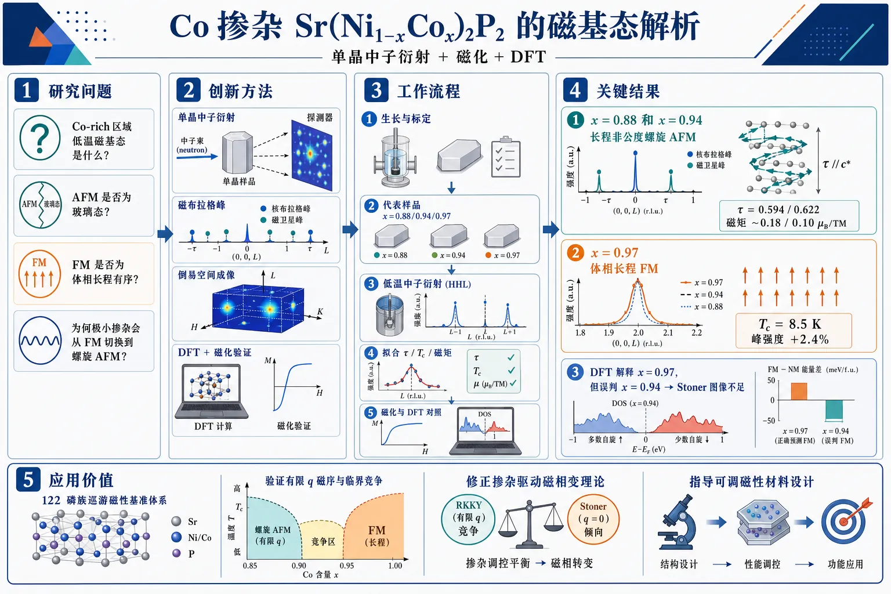
研究问题在 Co 掺杂的 Sr(Ni1-xCox)2P2 中，Co-rich 区域到底形成何种低温磁基态？此前磁化率只能提示 AFM 与 FM 分区，但无法判定 AFM 是否为玻璃态、FM 是否为体相长程有序，也不清楚磁性为何会随极小掺杂发生从铁磁到螺旋反铁磁的反常切换。创新方法用单晶中子衍射直接抓取磁布拉格峰，把“看不见的磁序”变成可测的倒易空间图样；关键 Aha 点是：x=0.88 和 0.94 出现非公度卫星峰 (0,0,L)±τ，证明是长程螺旋反铁磁而非玻璃态；x=0.97 只在核峰 (0,0,2) 上出现微弱增强，确认体相长程铁磁。再结合磁化和 DFT，把相图中的歧义彻底钉死。工作流程Co 掺杂单晶生长与成分标定 → 选择 x=0.88、0.94、0.97 三个代表样品 → 低温单晶中子衍射扫描 (HHL) 倒易平面 → 识别 AFM 卫星峰或 FM 核峰增强 → 拟合传播矢量 τ、Néel/Curie 温度和有序磁矩 → 用磁化测量验证各向异性与转变行为 → 用 DFT 计算 DOS 和 FM/NM 能量差，比较实验与简单 Stoner 图像是否一致。关键结果x=0.88 和 0.94 不是玻璃态，而是长程非公度螺旋反铁磁序，传播矢量分别为 (0,0,0.594) 和 (0,0,0.622)，有序磁矩分别约 0.18 和 0.10 μB/TM；x=0.97 出现清晰体相铁磁序，Tc=8.5 K，(0,0,2) 峰强度约增强 2.4%。DFT 能解释 x=0.97 的铁磁稳定性，却错误预测 x=0.94 仍更偏向铁磁，说明仅靠 Stoner 模型无法解释真实相图。应用价值为 122 磷族巡游磁性提供一个高精度“基准体系”：在几乎不伴随结构相变的情况下，极小 Ni/Co 替代就能触发 SEP、FM 与螺旋 AFM 之间的切换。该结果可用于检验和修正巡游磁性理论，帮助理解有限 q 磁序、磁临界竞争和掺杂驱动的磁相变，也为设计可调磁性材料提供实验依据。第一部分：核心概览（Overview）
Sr(Ni₁₋ₓCoₓ)₂P₂ 的 Co-rich 区域存在由掺杂诱导的复杂磁性演化：x=0.88 与 0.94 为长程非公度螺旋反铁磁序，传播矢量分别为 (0,0,0.594(2)) 与 (0,0,0.622(3))；x=0.97 为长程面内铁磁序，Tc=8.5(3) K。单晶中子衍射消除了此前关于 AFM 是否为玻璃态、FM 是否为体相磁性的歧义。核心贡献在于揭示从铁磁到螺旋反铁磁的反常演化不能由简单 Stoner 模型、order-by-disorder 或一维受挫 Heisenberg 模型完整解释，凸显 122 磷族化合物中巡游磁性的理论缺口。
---
第二部分：结构化快速回顾
《Doping-induced Ferromagnetic order and its unusual evolution to Helical Antiferromagnetic Order in Sr(Ni₁₋ₓCoₓ)₂P₂》（None，）
背景
SrNi₂P₂ 是 122 体系中罕见的三分之一塌缩正交相材料，低于 325 K 时只有三分之一 P–P 行形成跨 Sr 层键。Sr(Ni₁₋ₓCoₓ)₂P₂ 中 Co 掺杂迅速压制该结构转变，并在 x≥0.65 诱导磁序；接近 SrCo₂P₂ 端元时磁性又消失。此前磁化率研究将 Co-rich 区域划分为 AFM 与 FM，但具体基态未确定。
方法
采用单晶中子衍射研究 x=0.88(1)、0.94(2)、0.97(5) 三个成分；配合 SQUID 磁化测量与 DFT 计算。中子实验在 ORNL HFIR 的 VERITAS 与 PTAX 三轴谱仪完成，晶体质量分别为 7.6(1)、6.6(1)、7.7(1) mg。DFT 使用 PBE、PAW、VASP、400 eV cutoff、0.05 eV Gaussian smearing。
结果
x=0.88 与 0.94 出现非公度磁峰 (0,0,2)±τ 和 (0,0,τ)，确定为长程螺旋 AFM；τ 随 Co 含量从 0.594(2) 增至 0.622(3)。对应 Néel 温度为 35.3(2) K 与 23.1(2) K，有序磁矩为 0.18(3) 与 0.10(3) μB/TM。x=0.97 在核布拉格峰 (0,0,2) 上出现约 2.4% 强度增强，确认长程 FM，Tc=8.5(3) K。
讨论
简单 Stoner 图像可解释少量 Ni 掺杂使 SrCo₂P₂ 从 Stoner 增强顺磁态进入 FM：DFT 显示 xCo=0.97 时 FM 稳定，ΔEFM−NM=-0.59 meV/f.u.。但 xCo=0.94 的 DFT 预测 FM 更稳定，ΔEFM−NM=-2.14 meV/f.u.，与实验中的螺旋 AFM 相矛盾。费米面嵌套、order-by-disorder、准一维受挫 Heisenberg 模型均不能完整解释该相图。
局限
中子衍射不能完全排除低于仪器分辨率的微弱晶格畸变；螺旋结构优于 SDW 的判断依赖中子峰选择规则与磁化率联合证据。DFT 主要考察 FM 与 NM 稳定性，尚未给出螺旋 AFM 的完整总能比较或真实无序合金的高精度处理。
结论
Co-rich Sr(Ni₁₋ₓCoₓ)₂P₂ 中，x=0.88/0.94 为长程非公度螺旋 AFM，x=0.97 为体相长程 FM。磁基态随极小掺杂变化发生反常切换，不能由现有 122 体系常用磁性范式解释，需要包含细微能带结构与交换相互作用演化的改进理论。
---
第三部分：逐章节冷凝解析（Section-by-Section Condensing）
Abstract
- One-third collapsed SrNi₂P₂ as a structural anomaly
SrNi₂P₂ 在 A(TM)₂X₂ 体系中属于独特的三分之一塌缩结构相，其特殊性在于每三个 P–P 对中只有一个形成键。该结构背景直接关联后续对磁性与化学替代效应的追问。原文明确表述为 *"SrNi₂P₂ represents a unique case of collapsed structural phase (one-third collapsed; where one out of every three P–P pairs forms a bond) in the A(TM)₂X₂ series of compounds"*。
- Key unresolved magnetic ground states
Co 掺杂此前已经给出磁性丰富的相图，尤其在 Co-rich side；但低温磁基态的微观性质仍不清楚。核心悬念集中在 AFM 是否为自旋玻璃态、FM 是否为体相长程有序。原文为 *"However, important questions remained regarding the detailed nature of the magnetic ground states"*。
- Single-crystal neutron diffraction as decisive probe
实验选择 x=0.88、0.94、0.97 三个成分进行单晶中子衍射，覆盖 AFM 区、AFM–FM 边界与 FM 区。原文为 *"we performed single-crystal neutron diffraction on Sr(Ni₁₋ₓCoₓ)₂P₂ with compositions x = 0.88, 0.94, and 0.97"*。
- Incommensurate helical AFM at x=0.88 and 0.94
x=0.88 与 0.94 均表现为非公度螺旋磁序，传播矢量为 (0,0,τ)，并且 τ 随掺杂变化。该行为与 Sr(Ni₁₋ₓCoₓ)₂As₂ 中的螺旋 AFM 相似。原文为 *"the measurements reveal incommensurate helical magnetic order with a doping-dependent propagation vector (0,0,τ), similar to that observed in Sr(Ni₁₋ₓCoₓ)₂As₂"*。
- Ferromagnetic ground state at x=0.97
x=0.97 显示明确的铁磁有序基态，解决了此前 FM 相是否为体相的疑问。原文为 *"the x = 0.97 composition shows clear signatures of a ferromagnetically ordered ground state, resolving the earlier ambiguity regarding the nature of the low-temperature phase"*。
- Conventional magnetic frameworks fail to fully capture evolution
磁基态之间的竞争非常微妙，其从 FM 到 helical AFM 的演化不能被常规巡游电子模型或局域矩 Heisenberg 模型充分解释。原文为 *"whose evolution does not appear to be fully captured by the conventional frameworks of either itinerant or local-moment Heisenberg models typically applied to related 122 systems"*。
---
I Introduction
- 122 compounds as tunable correlated materials
A(TM)₂X₂，即常称的 122 体系，具有 ThCr₂Si₂ 结构，因结构、磁性、电子态高度可调而成为凝聚态材料研究中的核心平台。原文为 *"The A(TM)₂X₂ ... series of compounds, with the ThCr₂Si₂ structure, have proven to be interesting due to the rich phase diagrams with tunable and diverse structural, magnetic, and electronic phases"*。
- Structural, magnetic, and electronic ground states are intertwined
该体系的结构基态、磁基态、电子基态受到压力与化学替代显著调控。原文强调 *"The intertwined structural, magnetic, and electronic ground states are highly sensitive to external tuning parameters such as pressure and chemical substitution"*。
- Interlayer X–X bonding as a key control parameter
层间 X–X 键的形成或断裂会显著影响力学、电子和磁性质，是 122 相图中的重要微观机制。原文为 *"One of the most intriguing consequences of such tuning is the breaking or formation of interlayer X–X bonds, which in turn strongly influences the mechanical, electronic, and magnetic properties of these materials"*。
- Collapsed and uncollapsed tetragonal classification
根据 X–X 键合/反键性质及 X–X 距离，I4/mmm 四方结构通常分为 collapsed tetragonal, cT 与 uncollapsed tetragonal, ucT。cT 对应较短 X–X 距离与键合，ucT 对应较长距离与反键。原文为 *"their tetragonal I4/mmm chemical structure has been typically classified as collapsed tetragonal (cT; shorter X−X distance with bonding) and uncollapsed tetragonal (ucT; longer distance with antibonding) phases"*。
- SrNi₂P₂ as one-third collapsed orthorhombic phase
SrNi₂P₂ 低于 325 K 发生 one-third collapsed orthorhombic, tcO 转变，空间群变为 Immm；只有每三行 P–P 中的一行跨 Sr 层成键。该“1/3 塌缩”机制尚未解释。原文为 *"it undergoes a one-third collapsed orthorhombic (tcO) transition below 325 K, adopting the Immm symmetry"*，并补充 *"only one out of every three P–P rows forms bonds across the Sr layers ... a phenomenon whose microscopic origin remains unexplained"*。
- Co substitution suppresses the tcO transition
在 Sr(Ni₁₋ₓCoₓ)₂P₂ 中，Co 替代会迅速压制母体 SrNi₂P₂ 的 ucT-to-tcO 转变；约 x≈0.1 时该转变已被压制，x>0.1 时系统在基温仍保持 ucT。原文为 *"The Co-substitution rapidly suppresses the transition by x≈0.1 leaving the system in ucT crystal structure, down to base temperature, beyond x>0.1"*。
- Magnetism emerges and disappears across Co-rich region
磁有序在 x≥0.65 左右出现，又在接近 SrCo₂P₂ 端元时消失；SrCo₂P₂ 本身为顺磁端元。原文为 *"magnetic ordering emerges around x≥0.65 and vanishes again near x≤0.99, consistent with the paramagnetic SrCo₂P₂ end member"*。这里 “near x≤0.99” 的表述在语义上不够标准，更合理物理含义是接近 x→1 的 Co-rich 端元时磁性消失。
- Previous AFM/FM labels required microscopic verification
先前相图将 Co-rich 区域标为 AFM 与 FM，但真实性质仍存在歧义：AFM 是否为 spin glass，FM 是否为 bulk。原文为 *"ambiguity remains regarding the true nature of both magnetic phases − whether the AFM state is spin-glassy and the FM phase is bulk − thereby necessitating neutron diffraction measurements"*。
- Small doping changes alter magnetic ground states without significant structural change
该体系重要特征是极小 x 变化即可使系统偏离 FM 基态，且没有明显结构改变。这意味着磁性演化主要来自电子结构或交换相互作用的细微变化，而非大尺度晶格相变。原文为 *"the deviation from FM ground state with only a small change in doping x, occurring without any significant structural modification"*。
- Experimental focus on x=0.88, 0.94, and 0.97
三个中子样品分别对应 AFM 相、AFM–FM 边界、FM 相：x=0.88、0.94、0.97。原文为 *"we performed single-crystal neutron diffraction measurements on compositions x = 0.88 (AFM phase), 0.94 (AFM–FM boundary), and 0.97 (FM phase)"*。
- Fig. 1 magnetic structures
螺旋 AFM 由面内铁磁排列层沿 c 轴螺旋堆叠构成，τ≈0.6 r.l.u. 时相邻层转角约 107°；FM 结构中有序矩在 ab-plane，示意方向任意取 ∥[100]。图注写明 *"Ferromagnetic planes are stacked along c with a turn angle of ≈107° with respect to the nearest layers"*，以及 *"Ferromagnetic structure with ordered magnetic moment in the ab-plane"*。
---
II Experimental Methods
- Neutron samples and compositions
单晶中子衍射样品成分由 EDS 确定，分别为 x=0.88(1)、0.94(2)、0.97(5)。原文为 *"Neutron diffraction measurements were performed on single-crystals ... for x = 0.88(1), x = 0.94(2), and x = 0.97(5)"*。
- Crystal growth by Sn flux
Sr(Ni₁₋ₓCoₓ)₂P₂ 单晶采用 Sn-flux method 生长，Cu 掺杂样品也用 Sn flux。原文为 *"The crystals were grown using the Sn-flux method"*，并补充 *"Cu-doped samples ... were also grown using the Sn-flux"*。
- Crystal masses for neutron diffraction
三个中子样品质量分别为 7.6(1) mg、6.6(1) mg、7.7(1) mg，对应 x=0.88、0.94、0.97。原文为 *"The mass of the single-crystals used for the neutron measurements was 7.6(1), 6.6(1), and 7.7(1) mg for x = 0.88, 0.94, and 0.97, respectively"*。
- Instrument allocation: VERITAS and PTAX
x=0.88 在 ORNL HFIR 的 VERITAS triple-axis spectrometer 测量；x=0.94 与 0.97 在相邻 PTAX spectrometer 测量。原文为 *"The x = 0.88 crystal was measured at the VERITAS triple-axis spectrometer"*，以及 *"The x = 0.94 and 0.97 single-crystals were measured at the neighboring PTAX spectrometer"*。
- Sample environment
样品封装在含氦交换气的铝罐中，连接到闭循环氦制冷机冷头，保证低温热接触。原文为 *"samples were sealed in an aluminum can containing helium as an exchange gas, which was then attached to the cold head of a closed-cycle helium refrigerator"*。
- Reciprocal lattice convention and lattice constants
散射数据采用 tetragonal ThCr₂Si₂ 型晶胞的倒易晶格单位 H,K,L 表示，晶格参数约 a=b≈3.8 Å、c≈11.6 Å。原文为 *"Scattering data ... are described using the reciprocal lattice units H, K, and L for the tetragonal unit cell ... with lattice parameters of a=b≈3.8 Å, and c≈11.6 Å"*。
- Scattering plane alignment
所有样品均使 (H H L) 面与仪器水平散射面重合。原文为 *"All samples were aligned such that the (H H L) plane was coincident with the horizontal scattering plane"*。
- VERITAS configuration
VERITAS 使用固定入射能 14.46 meV，两个 PG 单色器，准直为 40′–40′–40′–80′。原文为 *"VERITAS was operated at a fixed incident energy of 14.46 meV using two pyrolytic graphite (PG) monochromators"*，以及 *"Horizontal beam collimations ... of 40′–40′–40′–80′ were used"*。
- PTAX configuration
PTAX 使用固定入射能 13.5 meV，两个 PG 单色器，准直为 48′−80′−60′−240′。原文为 *"Measurements on PTAX were operated at a fixed incident energy of 13.5 meV using two PG monochromators"*，以及 *"The beam collimators for P-TAX ... are 48′−80′−60′−240′"*。
- Higher harmonic suppression
VERITAS 与 PTAX 均通过在第二单色器前后放置 PG 滤波器显著降低高阶谐波污染。原文为 *"Higher harmonics within the incident beam are significantly reduced by placing a PG filter before and after the second monochromator"*。
- Magnetization conditions
DC 磁化测量使用 Quantum Design MPMS SQUID，温区 1.8 K≤T≤300 K，磁场 |H|≤50 kOe；磁场垂直于四方 c 轴。原文为 *"operated in the range 1.8 K≤T≤300 K, |H|≤50 kOe"*，以及 *"Each sample was measured with the field applied perpendicular to the tetragonal c axis"*。
- DFT methodology
DFT 使用 PBE exchange–correlation functional、plane-wave basis、PAW method，软件为 VASP。原文为 *"Density functional theory (DFT) calculations were performed using the Perdew–Burke–Ernzerhof (PBE) exchange–correlation functional within a plane-wave basis and the projector augmented-wave (PAW) method, as implemented in the Vienna Ab initio Simulation Package (VASP)"*。
- DFT numerical parameters
计算使用 400 eV 动能截断与 0.05 eV Gaussian smearing；3×3×1 与 2×2×1 超胞分别使用 4×4×4 与 6×6×4 Γ-centered Monkhorst–Pack k 网格。原文为 *"A kinetic energy cutoff of 400 eV and Gaussian smearing of 0.05 eV were employed"*，以及 *"Γ-centered Monkhorst–Pack k-point meshes of 4×4×4 and 6×6×4 were used"*。
- Supercell alloy compositions
通过在 SrCo₂P₂ 超胞中以一个 Ni 替代一个 Co，构造 xCo=0.97 与 xCo=0.94 合金成分。原文为 *"These supercells correspond to alloy compositions of xCo=0.97 and 0.94, obtained by substituting one Co atom with Ni"*。
- Pressure-shift protocol for structural realism
DFT 延续此前 SrCo₂P₂ 压力研究中的 pressure-shift protocol，重点再现实验 c/a ratio，再评价 Ni 合金化对 c/a 与 FM 稳定性的影响。原文为 *"demonstrated the importance of reproducing the experimental c/a ratio by applying a shift to the calculated pressure, referred to as the pressure-shift protocol"*，以及 *"we apply the same protocol to investigate the structural and magnetic phase stability of Sr(Co,Ni)₂P₂"*。
- DOS calculation refinement
DOS 使用更密 k 网格和四面体法，k 点密度相对总能计算加倍。原文为 *"For accurate density-of-states (DOS) calculations, denser k-meshes were used together with the tetrahedron method, with the k-point density doubled relative to that used for total-energy calculations"*。
---
III Results
- AFM diffraction signatures at x=0.88 and x=0.94
x=0.88 与 0.94 在低于 Néel 温度后出现卫星磁峰 (0,0,2)±τ 与 (0,0,τ)，直接证明 AFM 有序。原文为 *"satellite peaks appear at positions (0 0 2)±τ, and (0 0 τ) below the Néel temperature"*。
- Incommensurate propagation vectors
磁布拉格峰相对于化学晶格非公度，传播矢量为 τ=(0,0,τ)；x=0.88 时 τ=0.594(2)，x=0.94 时 τ=0.622(3)。原文为 *"The magnetic Bragg peaks appear at positions incommensurate to the chemical lattice with propagation vector τ=(0 0 τ), with τ=0.594(2), and 0.622(3) for x=0.88 and 0.94, respectively"*。
- Ordered moment lies largely in the ab plane
最强磁峰位于 (0,0,L)±τ 且 L 为偶数；这些位置只对 μ⊥c 的磁矩分量敏感，因此有序磁矩显著位于 ab plane。原文为 *"The most intense peaks were found at positions (0 0 L)±τ, where L is even"*，以及 *"a significant component of the ordered magnetic moment must be in the plane, since the magnetic Bragg peaks ... are only sensitive to the component of μ⊥c"*。
- Long-range order rules out cluster-glass scenario
卫星峰宽度与核布拉格峰宽度相当，说明 AFM 为长程有序而非 cluster glass。具体数值为核峰 (0,0,2) FWHM=0.055 rlu，卫星峰 0.045–0.055 rlu。原文为 *"the AFM phase appears long-range, since the width of the satellite peaks is similar to the width of the nuclear Bragg peak"*，并给出 *"FWHM = 0.055 rlu"* 与 *"satellite peaks (0.045−0.055 rlu)"*。
- Propagation vector weakly temperature dependent
x=0.88 与 0.94 的 (0,0,2)−τ 磁峰随温度变化时，τ 位移不超过 ≤0.008 r.l.u.，说明 τ 对温度不敏感。原文为 *"the propagation vector does not appear to be significantly temperature dependent, with shift being ≤0.008 r.l.u."*。
- Propagation vector strongly doping dependent
τ 对 Co 含量更敏感，x 从 0.88 到 0.94 时 τ 从 0.594 增至 0.622。原文为 *"The value of τ appears to be far more dependent on x"*。
- Second-order AFM transitions
(0,0,2)−τ 磁峰强度正比于 |μ|²，温度依赖符合幂律拟合，显示二级相变特征。原文为 *"The temperature dependence of the intensity of the (0 0 2)−τ magnetic Bragg peak (proportional to |μ|²) is consistent with a second-order transition"*。
- Néel temperatures from neutron diffraction
幂律拟合给出 x=0.88 的 TN=35.3(2) K，x=0.94 的 TN=23.1(2) K。原文为 *"the value TN=35.3(2) K"*，以及 *"the Néel temperature was determined to be TN=23.1(2) K"*。
- Agreement with previous susceptibility phase diagram
中子确定的 TN 与此前体磁化率确定的临界温度一致。原文为 *"the transition temperatures TN determined for x=0.88 and x=0.94 are consistent with critical temperatures determined from bulk magnetic susceptibility"*。
- AFM structure ambiguity: SDW versus helix
中子峰位置本身可兼容两类结构：collinear spin-density-wave, SDW 与 noncollinear helical magnetic structure。SDW 中磁矩大小沿 c 正弦变化但方向固定；helix 中磁矩大小恒定但方向在 ab 面旋转。原文为 *"The description of the AFM phase above is consistent with two types of antiferromagnetic structures: a collinear spin-density-wave (SDW) and a noncollinear helical magnetic structure"*，并解释 *"For a simple SDW the magnitude of μ varies sinusoidally along c, but the direction of μ remains fixed"*，以及 *"for a noncollinear helix the magnitude of μ remains constant, but the direction of μ is allowed to vary within the ab plane"*。
- Absence of detectable tetragonal symmetry breaking favors helix
SDW 可能打破四方对称并产生畴相关晶格畸变；中子衍射未检测到此类畸变。原文为 *"The SDW scenario would break the underlying tetragonal symmetry, potentially producing observable lattice distortions due to domain formation"*，以及 *"Such distortions were not detected in our neutron diffraction data"*。
- Magnetic susceptibility further supports helix
AFM 相中 H⊥c 时低温磁化率非零并出现 metamagnetic transition；这与螺旋结构更一致。原文为 *"recent anisotropic magnetic susceptibility measurements for the AFM phase, which show a metamagnetic transition and nonzero magnetic susceptibility as the temperature approaches zero for H⊥c, favors the helical magnetic structure"*。
- Helical structure geometry
螺旋 AFM 可描述为 ab 面内铁磁排列的方形层沿 c 轴反铁磁式旋转堆叠。原文为 *"the helical magnetic ordering is described as ferromagnetically aligned square layers that are antiferromagnetically arranged along c"*。
- Turn angles from propagation vector
螺旋传播矢量对应相邻磁性层转角；x=0.88 为 106.9(4)°，x=0.94 为 112.0(4)°。原文为 *"we determined the ϕ to be 106.9(4)° and 112.0(4)° for x=0.88 and 0.94, respectively"*。
- Ordered moment from FullProf intensity comparison
通过比较实验积分强度与 FullProf 模拟磁峰强度，得到 helical-AFM 有序矩：x=0.88 为 μ=0.18(3) μB/TM，x=0.94 为 0.10(3) μB/TM。原文为 *"we estimated the ordered moment associated with the helical-AFM structure by comparing the experimental integrated intensities to simulated Bragg peak intensities generated using FULLPROF"*，以及 *"the resulting ordered moments are estimated to be μ=0.18(3) and 0.10(3) μB/TM"*。
- Consistency with saturated moments
中子有序矩与此前磁化测得饱和矩一致：x=0.88 的 μs=0.150(1) μB/TM，x=0.94 的 0.092(1) μB/TM。原文为 *"These values agree well with the corresponding saturated moments, μs=0.150(1) and 0.092(1) μB/(TM), reported in Ref. [8]"*。
- τ evolution resembles arsenide analogue
Sr(Ni₁₋ₓCoₓ)₂P₂ 中 τ 随 x 增加而增加，与 Sr(Ni₁₋ₓCoₓ)₂As₂ 的螺旋 AFM 行为相似。原文为 *"the value of τ increases with increasing x within the AFM phase"*，以及 *"This behavior is similar to the helical antiferromagnetic order of Sr(Ni₁₋ₓCoₓ)₂As₂"*。
- Shared helical motif in P and As systems
Sr(Ni₁₋ₓCoₓ)₂P₂ 与 Sr(Ni₁₋ₓCoₓ)₂As₂ 的 AFM 相均表现为由 Co 方格面铁磁排列构成的螺旋结构。原文为 *"The AFM phase for ... Sr(Ni₁₋ₓCoₓ)₂As₂ and Sr(Ni₁₋ₓCoₓ)₂P₂ appear to manifest the same helix structure consisting of FM aligned Co square planes"*。
- FM diffraction signatures at x=0.97
x=0.97 在 FM 区形成长程铁磁序；宽范围 (0,0,L) 扫描在临界温度上下没有 AFM 信号。原文为 *"we confirm that long-range ferromagnetic order develops at high Co concentrations within the FM region"*，以及 *"wide (0,0,L) scans collected above and below the critical temperature reveal no signatures of antiferromagnetic (AFM) order"*。
- Weak nuclear Bragg enhancement as FM evidence
冷却到 TC 以下，(0,0,2) 核布拉格峰强度出现弱增强，符合 FM 磁散射叠加在核布拉格反射上的预期。原文为 *"a weak enhancement of the (0,0,2) Bragg peak intensity, just beyond the error bars, is observed upon cooling below TC"*，以及 *"additional magnetic scattering is expected to superimpose on existing nuclear Bragg reflections"*。
- In-plane ferromagnetic moment at x=0.97
强度增强只出现在 (0,0,2) 峰，指示铁磁矩位于面内。原文为 *"the enhancement was only observed for (0, 0, 2) peak, indicating the in-plane moment ferromagnet"*。
- Bulk intrinsic FM confirmed
中子衍射与此前磁化数据结合，确认 x=0.97 的 FM 是体系内禀体相磁性。原文为 *"when combined with the magnetization data reported in Ref. 8, our neutron diffraction results confirm that the ferromagnetic order in this system is intrinsic"*。
- Curie temperature and critical exponent
x=0.97 的 (0,0,2) 积分强度在 TC=8.5(3) K 以下增强，幂律拟合在 8.5 K 以下给出 β=0.38(3)，符合连续二级 FM 转变。原文为 *"exhibit a clear enhancement below TC=8.5(3) K, consistent with a continuous (second-order) transition"*，图注给出 *"β = 0.38(3)"*。
- 2.4% intensity increase matches small ordered moment
约 2.4% 的强度增加与 FullProf 对 μ=0.05 μB/TM 的 FM 结构模拟一致。原文为 *"The ∼2.4% increase in intensity ... is consistent with the enhancement expected from FullProf simulations using the ordered moment μ=0.05 μB/TM"*。
---
IV Discussion
- Magnetism evolves from SEP to FM to helix with small doping changes
Co-rich Sr(Ni₁₋ₓCoₓ)₂P₂ 的磁性从 Stoner-enhanced paramagnetism, SEP 经少量 Ni 替代进入 FM，再随极小 x 变化转入非共线螺旋态，显示竞争能标极其接近。原文为 *"the systematic evolution of magnetism from Stoner-enhanced paramagnetism (SEP) to ferromagnetism for small Ni-substitution and, further to a non-collinear helical state driven by only small changes in x"*。
- FM quantum phase transition near Co end member
热力学与 NMR 结果支持 SEP–FM 边界附近存在 FM quantum phase transition, QPT。原文为 *"The thermodynamic and NMR measurements clearly indicate the FM QPT at boundary of SEP-FM phase near the Co-end member"*。
- Standard frameworks are insufficient
基于 X–X bonding structural coupling、简单 itinerant Stoner physics 或 local-moment interactions 的理论框架，均不足以解释当前相图。原文为 *"standard theoretical frameworks, including those based on structural coupling (X−X bonding), simple itinerant Stoner physics, or local-moment interactions ... are either insufficient or incompatible with the present observations"*。
- No significant structural transition accompanies magnetic order
不同于许多 Fe/Co 122 pnictides，该体系磁有序没有伴随显著结构变化，也不与 ucT-to-cT 转变重合。原文为 *"the magnetic ordering in this series occurs without any accompanying significant structural changes and does not coincide with the uncollapsed-to-collapsed structural transition"*。
- SrCo₂(PₓGe₁₋ₓ)₂ structural mechanism not applicable
SrCo₂(PₓGe₁₋ₓ)₂ 中将 FM 与 P–P 键断裂、σ* 能带占据联系起来的机制不适用于此处。原文为 *"the mechanism proposed for SrCo₂(PxGe₁−x)₂ ... which links ferromagnetism to a structural change involving the population of a σ* band ... and the breaking of P−P bonds, does not seem applicable here"*。
- Itinerant character and Stoner criterion as starting point
该体系磁性具巡游特征，磁有序与磁矩形成可由 Takahashi spin fluctuation theory 描述，因此 Stoner criterion, I×N(EF)>1 是自然起点。原文为 *"the itinerant nature of the magnetism in this system is well established"*，以及 *"considering the Stoner criterion, I×N(EF)>1, for magnetic instability is a natural starting point"*。
- Rigid-band Stoner picture explains onset of FM qualitatively
SrCo₂P₂ 的 Co-3d 电子在 EF 附近有尖锐 DOS 峰；Ni 掺杂增加电子，使 EF 移向该峰，增强 N(EF)，从而满足 Stoner 条件并诱导 FM。原文为 *"Energy band calculations for SrCo₂P₂ show evidence of a sharp peak in the DOS in the vicinity of EF due to Co-3d electrons"*，以及 *"the development of ferromagnetic ordering with Ni doping ... can be understood as a consequence of the Fermi-level shift towards this DOS peak"*。
- DFT supports FM at xCo=0.97
DFT 显示纯 SrCo₂P₂ 即 xCo=1.00 时 FM 不稳定，ΔEFM−NM>0；少量 Ni 合金化到 xCo=0.97 后 FM 稳定，磁矩 MCo=0.1 μB，能量差 ΔEFM−NM=-0.59 meV/f.u.。原文为 *"For pristine SrCo₂P₂ (xCo=1.00), the FM state is unstable with ΔEFM−NM>0 for all MCo"*，以及 *"slight Ni-alloying (xCo=0.97) stabilizes FM with MCo=0.1 μB and ΔEFM−NM=−0.59 meV/f.u"*。
- DFT fails at xCo=0.94
DFT 预测 xCo=0.94 时 FM 更稳定，MCo=0.2 μB，ΔEFM−NM=-2.14 meV/f.u.；实验却显示 helical AFM，因此简单 FM Stoner 稳定性图像失效。原文为 *"increasing Ni content (xCo=0.94) further enhances FM stability, yielding MCo=0.2 μB and ΔEFM−NM=−2.14 meV/f.u."*，以及 *"This prediction is in clear disagreement with the experimentally observed emergence of helical AFM order"*。
- DOS evolution favors magnetic order but not magnetic wave vector selection
DFT DOS 显示随 Ni 增加，EF+0.1 eV 附近 DOS 峰向低能移动并部分填充，N(EF) 增大；这解释磁有序增强，但不能解释 FM 被 helical AFM 取代。原文为 *"With increasing Ni-alloying, the peak around EF+0.1 eV is shifted toward lower energy and gets gradually partially filled"*，以及 *"the DOS at EF also increases, which favors magnetic order in Stoner instability"*。
- Abrupt destabilization of FM requires beyond-simple-Stoner physics
仅再增加 2–3% Ni 即从 FM 转向 helical AFM，与 DFT 预测相反，说明必须考虑 DOS 增强以外的因素。原文为 *"its abrupt destabilization upon only a further 2–3% Ni substitution and the concomitant stabilization of helical AFM order suggest that additional factors beyond a simple Stoner picture based solely on an enhanced density of states must be considered"*。
- Nesting-driven helix is unlikely
巡游图像中自然候选是费米面嵌套诱导的 helical order；但相关 Sr(Ni₁₋ₓCoₓ)₂As₂ 中实验与理论均未找到对应螺旋结构的嵌套证据。原文为 *"An obvious explanation within the itinerant picture would be the nesting driven helical order"*，并指出 *"no evidence of nesting corresponding to the helical structure was found"*。
- Order-by-disorder mechanism incompatible with this phase location
Sr(Ni₁₋ₓCoₓ)₂As₂ 中曾提出 quantum order-by-disorder 机制，需要靠近 FM QCP，由涨落诱导有限 q 不稳定性抢先于均匀 FM；当前 helical 相出现在 FM dome 的相反侧、远离 QPT/QCP，因而机制不同。原文为 *"This mechanism requires proximity to a ferromagnetic quantum-critical point (QCP), where fluctuation-induced finite-q instabilities pre-empt uniform ferromagnetism"*，以及 *"the helical phase in our system emerges on the opposite side of the ferromagnetic 'dome', away from QPT"*。
- Frustrated 1D Heisenberg model gives at best qualitative description
一维受挫 Heisenberg 模型不能解释接近 FM 时转角反而随 x 增加而增大。原文为 *"the frustrated one-dimensional ... provides only a qualitative description at best"*，以及 *"the increase of the turn angle ... with increasing x (on approaching FM from the helical side) seems inconsistent with the model"*。
- Turn-angle trend conflicts with FM stabilization
观察到转角增加更接近 A-type magnetic order 的趋势；若要进入 FM，转角必须突然反转并塌缩到 0°，这与平滑趋势不符。原文为 *"The observed increase in the turn angle is more consistent with an evolution toward A-type magnetic order"*，以及 *"the stabilization of an FM state would require a dramatic reversal of this trend and an abrupt collapse of the turn angle to 0°"*。
- Central unresolved theoretical question
关键未解问题是：哪些细微能带参数或交换参数随掺杂演化，从而抑制 FM 并稳定 helical AFM。原文为 *"This leaves open the key question of which subtle band-structure or exchange parameters evolve with doping to suppress ferromagnetism and stabilize the helical state"*。
- Need for revised itinerant magnetism description in 122 materials
Stoner enhancement、order-by-disorder、受挫 1D Heisenberg 模型只能捕捉局部特征，无法完整解释磁基态演化。原文总结为 *"several conventional frameworks ... capture certain qualitative features of the phase diagram but fail to account for the full evolution of the magnetic ground states observed here"*，以及 *"the itinerant magnetism in this system cannot be described by these previously established paradigms and remains a theoretical question"*。
---
V Conclusion
- Neutron diffraction establishes AFM-to-FM evolution
单晶中子衍射覆盖 AFM 与 FM 区域，直接确定 Sr(Ni₁₋ₓCoₓ)₂P₂ 中磁有序随 x 的演化。原文为 *"we have investigated the evolution of magnetic ordering in Sr(Ni₁₋ₓCoₓ)₂P₂ series through single-crystal neutron diffraction measurements on compositions spanning the AFM to FM regimes"*。
- x=0.88 and x=0.94 are incommensurate helical ground states
x=0.88 与 0.94 确认为非公度螺旋基态，传播矢量 (0,0,τ) 随掺杂变化，行为接近 Sr(Ni₁₋ₓCoₓ)₂As₂。原文为 *"For x=0.88 and 0.94, our results establish an incommensurate helical ground state with a doping-dependent propagation vector (0,0,τ)"*。
- x=0.97 has long-range bulk ferromagnetism
x=0.97 显示清晰长程 FM 信号，与磁化数据共同确立体相 FM。原文为 *"the x=0.97 composition exhibits clear signatures of long-range ferromagnetic order"*，以及 *"unambiguously establish the presence of bulk FM order in this composition"*。
- Ordered moment decreases toward x=1.0
随有序温度降低且 x 接近 1.0，有序矩单调减小，与此前磁化结果一致。原文为 *"our results also show a monotonic decrease of ordered the moment as ordering temperature decreases and x approaches 1.0"*。
- Competing interactions are finely balanced
不同磁基态的出现与演化体现了该体系中竞争相互作用的微妙平衡。原文为 *"The emergence and evolution of these distinct magnetic ground states highlight the delicate balance of competing interactions in this system"*。
- Conventional models are inadequate
Stoner 模型、order-by-disorder、准一维 Heisenberg 图像均难以解释完整磁性演化。原文为 *"the observed behavior is not readily captured by conventional itinerant or local-moment Heisenberg models"*，并列出 *"including frameworks based on Stoner model, order-by-disorder, or quasi-one-dimensional Heisenberg descriptions"*。
- Need refined theory incorporating band-structure subtleties
更精细理论必须纳入 Ni–Co 替代引发的细微能带结构变化。原文为 *"the need for a more refined theoretical treatment that incorporates the effects of subtle band-structure changes accompanying Ni–Co substitution"*。
---
Acknowledgements
- Funding and facility support
Ames National Laboratory 的工作由美国能源部基础能源科学办公室材料科学与工程部支持，HFIR 中子实验使用 ORNL 用户设施资源。原文为 *"Work at Ames National Laboratory was supported by the U.S. Department of Energy, Office of Basic Energy Sciences, Division of Materials Sciences & Engineering"*，以及 *"A portion of this research used resources at the High Flux Isotope Reactor"*。
- Beamtime and computation resources
VERITAS 与 PTAX beam time 对应 proposal IPTS-25125.1 与 IPTS-27873.1；计算使用 NERSC。原文为 *"The beam time was allocated to VERITAS and PTAX instruments on proposal numbers IPTS-25125.1 and IPTS-27873.1"*，以及 *"Some of the computation used resources of the National Energy Research Scientific Computing Center (NERSC)"*。
---
VI Appendix
#### VI.1 Single Crystal Growth and Characterization
- Sn-flux high-temperature solution growth
Sr(Ni₁₋ₓCoₓ)₂P₂ 与 Sr(Cu₁₋ₓCoₓ)₂P₂ 单晶均由 Sn flux 高温溶液法获得。原文为 *"Single crystals of Sr(Ni₁₋ₓCoₓ)₂P₂ and of Sr(Cu₁₋ₓCoₓ)₂P₂ were obtained by high-temperature solution growth method out of Sn flux"*。
- Canfield crucible set and sealed argon atmosphere
高纯元素装入 2 ml alumina fritted Canfield Crucible Set，在部分 Ar 气氛中封入熔融石英管。原文为 *"High-purity elements were loaded into a 2 ml alumina fritted Canfield Crucible Set, and sealed under partial atmosphere of Argon in a fused silica tube"*。
- Sr(Ni₁₋ₓCoₓ)₂P₂ growth ratio and thermal profile
低 Ni 比例样品初始比例为 Sr:(Ni+Co):P:Sn = 1.2:2:2:20；热处理为 600°C 保温 6 h，升至 1180°C 保温 24 h，再用 100 h 缓冷至 1000°C 后离心去除 Sn flux。原文为 *"with a starting ratio Sr:(Ni+Co):P:Sn of 1.2:2:2:20"*，以及 *"held for 6 hours at 600°C before increasing to 1180°C, dwelled for 24 hours ... slowly cooled down over 100 hours to 1000°C"*。
- Sr(Cu₁₋ₓCoₓ)₂P₂ shows limited compositional accessibility
Cu–Co 替代体系只能获得接近两个端元的样品，难以获得中间成分。原文为 *"we could only grow samples with compositions very close to either parent compound (SrCu₂P₂ or SrCo₂P₂), but not the intermediate compositions"*。
- First Cu–Co growth condition and Co-rich limit
使用 Sr:(Cu+Co):P:Sn=1.2:2:2:20 与相同温度程序时，随熔体 Cu:Co 增加，可获得 x 降低的 Sr(Cu₁₋ₓCoₓ)₂P₂；当 Cu:Co 达 0.7:0.3 时，最多到 x≤0.989(2)，之后目标相不再生长。原文为 *"using different proportions of Co and Cu and the same temperature sequence"*，以及 *"until reaching x≤0.989(2) for a critical Cu:Co ratio of 0.7:0.3, beyond which the target phase no longer grows"*。
- Competing secondary phases in Cu–Co growth
Cu:Co 超过 0.7:0.3 后，在较低温度 900°C 获得的是 CoSn₃、Co₂Sn、SrCuP 等混合相。原文为 *"instead we obtain a mixture of other phases (CoSn₃, Co₂Sn and SrCuP) at lower temperatures (900°C)"*。
- Modified melt ratio improves but does not solve Co-rich Cu substitution
降低 Sr/Sn、提高 P 后，比例 1.1:2:2.15:18 可获得 x≤0.979(3)；但 Cu:Co 超过 0.7:0.3 时仍生成其他相。原文为 *"with a ratio of 1.1:2:2.15:18, being able to obtain crystals with x≤0.979(3)"*，以及 *"Still, at Cu:Co ratios beyond 0.7:0.3, the other phases grew instead"*。
- Extreme Cu-rich growth reaches x≤0.012
进一步调整至 1:2:2.3:16 并冷却到 800°C，可获得 Cu-rich 端 x≤0.012 的 Sr(Cu₁₋ₓCoₓ)₂P₂。原文为 *"to a ratio of 1:2:2.3:16, and extending the cooling down to 800°C, we were able to obtain Sr(Cu₁₋ₓCoₓ)₂P₂ crystals with x≤0.012"*。
- Intermediate Cu–Co compositions unavailable
尽管尝试多种初始比例，仍无法获得 0.012≤x≤0.979 的中间组成单晶。原文为 *"We were not able to grow crystals with an intermediate range of compositions, 0.012≤x≤0.979, despite trying other initial ratios"*。
- Self-flux attempt failed
类似 Sr(Ni₁₋ₓRhₓ)₂P₂ 的 self-flux 方法，初始比例 Sr:(Cu+Co):P=5:48:47，只生长出 CoP。原文为 *"we attempted the self-flux method ... with a starting ratio Sr:(Cu+Co):P of 5:48:47, which resulted in the growth of CoP only"*。
- Solid-state synthesis did not yield single phase
固相反应使用 Sr:(Cu+Co):P=1:2:2，经历 250°C、600°C、800°C、1180°C 多步加热并重复研磨压片三次；仍未得到单相，只得到 Cu-rich 与 Co-rich 122 相及 CoP 等二元化合物混合。原文为 *"No single phase was obtained in any of the attempts made"*，以及 *"at most we identified a mixture of both Cu-rich and Co-rich Sr(Cu₁₋ₓCoₓ)₂P₂ phases, together with other binary compounds (primarily CoP)"*。
- Possible immiscibility gap in Cu–Co system
中间成分不可达暗示 Sr(Cu₁₋ₓCoₓ)₂P₂ 体系可能存在固溶不相容区。原文为 *"This result suggests that there may be an immiscibility gap inherent to the system that prevents the intermediate composit"*。给定文本在此处截断，但语义明确指向 intermediate compositions。
---
第四部分：深度理解与语言支持（Understanding & Nuance）
1. 术语解析
- Collapsed tetragonal / uncollapsed tetragonal（塌缩四方 / 未塌缩四方）
不是简单“晶胞体积变小/变大”的描述，而是与层间 pnictogen–pnictogen 键合状态相关。cT 通常意味着 X–X 距离缩短并形成键；ucT 表示 X–X 距离较长、偏反键。该体系中 SrNi₂P₂ 更特殊，不是全塌缩，而是 one-third collapsed。
- Incommensurate propagation vector（非公度传播矢量）
(0,0,τ) 中 τ 不是简单分数，如 0.5 或 1，而是 0.594(2)、0.622(3)。这说明磁周期与晶格周期不成简单整数倍，沿 c 轴相邻层磁矩以非平凡角度旋转，形成长周期螺旋磁结构。
- Helical antiferromagnetic order（螺旋反铁磁序）
“反铁磁”不一定等于上下交替的 ↑↓。这里每个 ab 面内磁矩铁磁排列，但沿 c 轴逐层旋转，导致总磁矩抵消或近似抵消。与 collinear AFM 相比，其核心是磁矩方向旋转而非仅符号翻转。
- Stoner-enhanced paramagnetism（Stoner 增强顺磁性）
顺磁态已经接近铁磁不稳定性，磁化率显著增强，但尚未形成自发有序磁矩。Stoner 判据 I×N(EF)>1 表示当交换相互作用与费米能级态密度乘积超过阈值时，均匀铁磁态可变得稳定。
- Quantum order-by-disorder（量子涨落诱导有序）
不是“无序导致有序”的日常意义，而是在多个近简并候选态中，量子涨落选择某个有限 q 或特定对称性的有序态。该机制通常要求靠近量子临界点，涨落能量差足以改变基态选择。
2. 疑难查证
- 为什么中子衍射能区分长程 AFM 与 cluster glass？
长程有序会产生尖锐布拉格峰，其峰宽主要受仪器分辨率限制；cluster glass 或短程磁团簇会产生宽峰或弥散散射。这里卫星磁峰 FWHM 为 0.045–0.055 rlu，与核峰 0.055 rlu 接近，说明磁相关长度足够长，排除了玻璃态解释。
- 为什么 (0,0,L)±τ 磁峰说明磁矩在 ab 面？
中子磁散射只看见垂直于散射矢量 Q 的磁矩分量。对于 Q≈(0,0,L)，Q 主要沿 c 轴，因此只有 μ⊥c 的部分，即 ab 面内磁矩，贡献显著散射。若磁矩主要沿 c 轴，这些峰会弱得多或不可见。
- 为什么 SDW 与 helix 都能解释同一组卫星峰？
两者都具有沿 c 轴调制的磁结构，都会在 (0,0,L)±τ 出现卫星磁峰。区别在于：SDW 是磁矩大小调制、方向固定；helix 是磁矩大小近似恒定、方向旋转。单纯峰位置不足以唯一判定，需要结合对称性、畸变、磁化率各向异性与 metamagnetic transition。
- 为什么 DFT 支持 FM 却无法解释 helical AFM？
固定磁矩 DFT 比较了 FM 与 NM 能量，能说明均匀铁磁是否比非磁态稳定；但 helical AFM 是有限 q 磁序，需要计算广义磁化率 χ(q)、自旋螺旋总能、交换参数 J(q) 或真实合金无序效应。xCo=0.94 的 FM 稳定能更低并不自动排除某个 helical q 态更低能；目前 DFT 层面尚未给出完整竞争图像。
---
第五部分：创新评估与关联（Synthesis & Novelty）
1. 创新性判断
- 首次用单晶中子衍射确定 Co-rich Sr(Ni₁₋ₓCoₓ)₂P₂ 的真实磁基态
过去磁化率相图只能标记 AFM/FM 区域，无法排除 spin glass 或非体相 FM。中子衍射直接给出 x=0.88、0.94 的长程非公度磁峰与 x=0.97 的核峰磁增强，完成微观结构判定。
- 发现 FM 附近的反常 helical AFM 稳定化
少量成分变化即可从 x=0.97 的 FM 转为 x=0.94 的 helical AFM，且没有显著结构相变。这不同于许多 122 磁性转变依赖 collapsed/uncollapsed 结构切换的情形。
- 建立磷化物与砷化物 122 螺旋磁性的可比性，同时指出机制可能不同
Sr(Ni₁₋ₓCoₓ)₂P₂ 与 Sr(Ni₁₋ₓCoₓ)₂As₂ 均出现类似 helical AFM 与 τ 随掺杂演化，但当前体系的 helical 相位于 FM dome 的不同侧，削弱了简单套用 order-by-disorder 解释的合理性。
- 对简单 Stoner 图像提出强约束
DFT 与 DOS 可解释 xCo=0.97 的 FM 出现，却错误预测 xCo=0.94 更稳定的 FM。该矛盾明确显示：仅凭 N(EF) 增强无法预测有限 q 螺旋态，未来理论必须考虑 q 依赖磁化率、细微能带拓扑、RKKY/交换竞争及合金无序。
- 为 122 巡游磁性提供反例型基准体系
该体系在无显著结构转变条件下展现 FM、helical AFM 与 SEP 的邻近竞争，适合作为检验巡游磁性理论的高灵敏平台。其创新点不只是“发现一个螺旋磁结构”，而是证明常用于近年 122 体系的三类解释框架——Stoner、order-by-disorder、准一维 Heisenberg——均不能完整闭合相图逻辑。
-
16
📄 摘要：研究含三格点手征项强度 g 的自旋 1/2 Heisenberg 链零温性质。结合解析与计算，确认在 Bethe ansatz 已知临界点 gc=2/π 处发生动力学临界指数 z=3 的异常 Lifshitz 转变；g>gc 的手征相实为部分自旋极化相。
💡 亮点：手征自旋链在 gc=2/π 处表现 z=3 Lifshitz 转变。所谓手征相被识别为部分极化铁磁相，澄清了一维可积磁体的量子临界图像。
📖 展开分析 + 配图
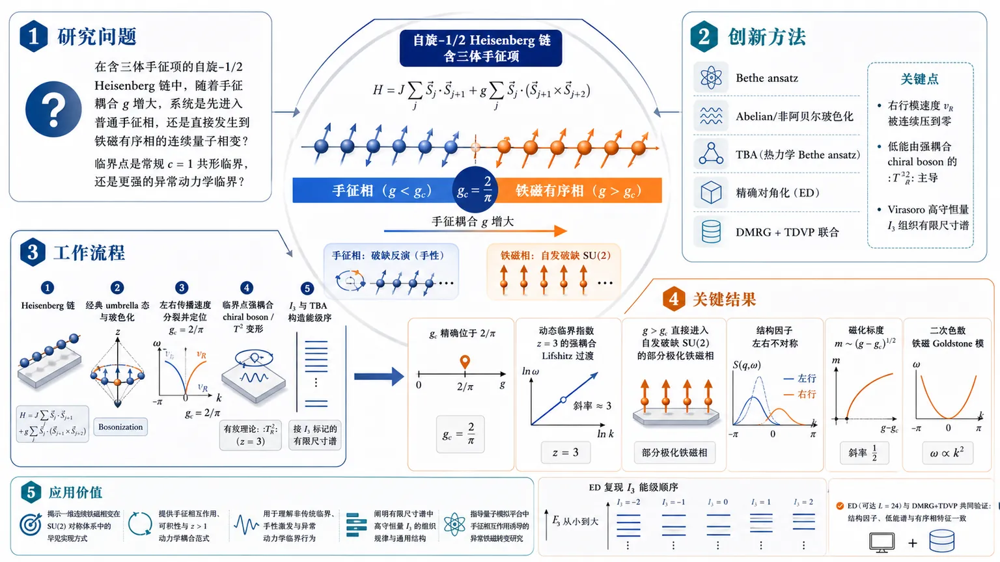
研究问题在含三体手征项的自旋-1/2 Heisenberg 链中，随着手征耦合 g 增大，系统究竟是先进入普通手征相，还是会直接发生到铁磁有序相的连续量子相变；其临界点到底是常规 c=1 共形临界，还是更强的异常动力学临界？创新方法将 Bethe ansatz、Abelian/非阿贝尔玻色化、TBA、精确对角化和 DMRG+TDVP 联合起来，抓住一个关键 Aha 点：临界右行模的速度被手征项连续压到零，剩余低能由强耦合 chiral boson 的 :T_R²: 自相互作用主导，从而把临界性锁定为 z=3 的 Lifshitz 点，并用 Virasoro 高守恒量 I₃ 组织有限尺寸谱。工作流程从含三体手征项的 Heisenberg 链出发，先做经典 umbrella 态与玻色化分析，得到左右传播速度分裂并定位 g_c=2/π；随后在临界点将右行扇区写成 T² 变形的强相互作用 chiral boson，借助 I₃ 与 TBA 构造能级序；最后用 ED 和 DMRG+TDVP 计算结构因子、低能谱和有序相，逐步验证临界指数、色散关系与磁化行为。关键结果临界点精确位于 g_c=2/π，属于动态临界指数 z=3 的强耦合 Lifshitz 过渡，而不是普通 c=1 CFT；g>g_c 后系统并非进入一般手征相，而是直接进入自发破缺 SU(2) 的部分极化铁磁相；临界结构因子呈现强烈左右不对称与非常规尺度律；有序相中磁化 m ~ (g-g_c)¹/²，并出现二次色散的铁磁 Goldstone 模，ED 还精确复现了 I₃ 预测的低能能级顺序。应用价值揭示了一维连续铁磁相变在 SU(2) 对称体系中的罕见实现方式，提供了手征相互作用、可积性与 z>1 动力学耦合的完整范式；对理解量子磁体中的非传统临界、手性激发、有限尺寸谱和双动力学共存具有参考价值，也可为未来在可积自旋链与量子模拟平台中寻找异常铁磁转变提供理论蓝图。第一部分：核心概览
该研究围绕含三体手征项的自旋-1/2海森堡链，把Bethe ansatz、非阿贝尔玻色化、TBA、ED 与 DMRG+TDVP整合起来，确认临界点并非普通 c=1 共形临界，而是一个动态指数 z=3 的强耦合 Lifshitz 临界点。更关键的是，g>g_c 后并不是进入一般“手征相”，而是直接进入一个自发破缺 SU(2) 的部分极化铁磁手征相，其中线性色散的 Luttinger 液与二次色散的铁磁 Goldstone 模式并存，形成罕见的双重低能动力学结构。
---
第二部分：结构化快速回顾
《Ferromagnetic transition in a chiral spin chain》（None，）
背景：一维自旋-1/2 Heisenberg 链在加入三体手征项后保持可积，但低能相结构与临界性质长期未被完全厘清。
方法：结合经典极限分析、Abelian/非阿贝尔玻色化、强耦合场论、TBA、ED、DMRG+TDVP。
结果：临界点位于 g_c=2/π，属于z=3 的 Lifshitz 过渡；g>g_c 时直接进入部分极化铁磁相并自发破缺 SU(2)。
讨论：临界态可由强相互作用 chiral boson 与 T² deformation 描述，结构因子呈现非常规尺度律。
局限：临界场论无自由场闭式解；部分动力学线形主要依赖数值与近似“splintering”方案。
结论：这是一类罕见的一维连续铁磁转变，并揭示了手性、可积性与 z>1 动力学的独特组合。
---
第三部分：逐章节冷凝解析
Introduction
问题设定与已知结果
- 研究对象是
*"H = ∑ n [ S n ⋅ S n + 1 − g S n ⋅ S n + 1 × S n + 2 ]"*，即在最近邻反铁磁 Heisenberg 链上加入三体手征项，参数为 g。
- 该模型已知对所有 g 都是Bethe-ansatz 可积，并且早先工作给出临界值
*"g ≥ g_c = 2 / π"*，对应从常规临界态进入chiral phase。
- 更早的结果还指出大 g 极限下出现非零部分自旋极化：
*"the large g limit of the state is ferromagnetic with a non-zero partial spin polarization."*
核心主张
- 相变并非先进入中间手征态，而是直接进入铁磁态：
*"the transition occurs directly to a ferromagnetic state, with continuous breaking of SU(2) symmetry."*
- 这被明确定位为一维自旋系统中极罕见的情形：
*"the only example of a continuous ferromagnetic transition with full SU(2) symmetry in a 1d spin system."*
- 临界理论不是普通 CFT，而是
*"an integrable deformation of a conformal field theory (CFT) with dynamical critical exponent z = 3."*
- 低能临界点没有自由场描述：
*"The critical theory has no free-field description"*，必须视作strongly interacting chiral boson model。
数值验证目标
- 低能谱、结构因子与有限尺寸能级均用DMRG+TDVP和exact diagonalization验证。
- 关键证据已经在摘要中预告：
*"Our conclusions are validated using numerics based on matrix product state methods and exact diagonalization."*
---
Classical phase diagram
经典 umbrella 态作为直觉起点
- 用长度 1/2 的经典单位矢量近似后，最优态采用
*"an ‘umbrella’ state with wavevector q_cl and uniform polarization m"*。
- 自旋参数化为
*"Sₙ = (√(1/4 − m²) cos q_cl n, √(1/4 − m²) sin q_cl n, m)"*。
- 该构型同时兼容：
- 最近邻反铁磁倾向；
- 三体手征项要求的非共线三元组。
经典能量与极小化结果
- 每格点能量为
*"𝓔(m,q_cl;g)=1/4(4m²+(1−4m²)cos q_cl) − 1/4 g m (1−4m²)(2 sin q_cl − sin 2q_cl)."*
- 极小化得到：
- g ≤ 1：
*"m = 0 and q_cl = π"*，即普通反铁磁解。
- g > 1：
*"the magnetization continuously increases from zero as |m| = 1/2 √((g−1)/(1+3g))"*，并且
*"cos q_cl = − (1 + g) / (2 g)."*
- 这说明经典极限中相变发生在 g=1，且是连续极化。
与量子临界点的差别
- 量子体系更不稳定：
*"g_c = 2 / π < 1."*
- 这说明量子涨落显著提前了手征/铁磁失稳点。
---
Bosonization
Abelian 玻色化给出的速度分裂
- Heisenberg 链低能固定点为
*"ℋ(g=0) ∼ v₀[(∂x φ_L)² + (∂x φ_R)²]"*，其中
*"v₀ = π/2"*。
- 三体手征项等价于能流，玻色化后为
*"Sₙ ⋅ Sₙ₊₁ × Sₙ₊₂ ∼ v₀²[(∂x φ_L)² − (∂x φ_R)²]."*
- 合并后得到左右速度不对称：
- *"v_L = v₀ + g v₀²"*
- *"v_R = v₀ − g v₀²"*
- 临界点由 v_R=0 给出，正好是
*"g_c = 1/v₀ = 2/π."*
物理图像
- 手征项的核心作用是
*"selectively slows the right-moving excitations until at g = g_c their velocity vanishes."*
- 这把相变解释为右行模软化，即一侧传播速度被压到零。
SU(2) 不变表述与 Kac-Moody 结构
- 引入 SU(2)₁ 电流后：
- *"JL/R^z = 1/√(2π) ∂x φL/R"*
- *"JL/R⁺ = A exp(± i 2√(2π) φL,R)"*
- 二次哈密顿量变成
*"ℋ_quad = (2π v_L /3):J_L^a J_L^a: + (2π v_R /3):J_R^a J_R^a:."*
- 等价写法是
*"ℋ_quad = 2π v_L T_L + 2π v_R T_R."*
回散射项与其重整化性质
- 额外的“backscattering”项为
*"ℋ_bs = − g_bs J_L^a J_R^a."*
- 该项在 g_bs>0 时为marginally irrelevant，并且
*"for any ratio v_R / v_L, and in particular even as v_R → 0."*
- 因而临界点附近可忽略该项，临界理论由更强的右行自相互作用主导。
T² deformation 与 z=3
- 临界右行扇区由
*"ℋ_R = 2π v_R T_R + λ :T_R²:"*
控制。
- 其中 λ 的量纲是velocity³，且
*"remains finite and non-zero at the critical point."*
- 当 v_R=0 时，只剩
*"ℋ_R = λ :T_R²:"*。
- 由尺度分析立刻得到
*"the energy scales like inverse length cubed, which defines the dynamical scaling exponent z = 3."*
---
Critical structure factor
定义与数值设置
- 动态结构因子定义为
*"SAB(q,ω)=Re/(Lπ) ∫₀^∞ dt Σₙ,ₙ' ⟨Sₙ^A(t)Sₙ'^B(0)⟩ eⁱq⁽ⁿ−ⁿ'⁾⁺⁽ⁱω−η⁾t"*。
- 在 g = 2/π 处使用 DMRG+TDVP，系统为
*"an open chain with L = 300."*
- 该谱“看起来连续”：
*"finite-size quantization is not visible and the spectrum appears continuous."*
主峰与色散律
- 谱中没有 δ 峰式 magnon，但存在主导峰，且强烈非对称：
*"a dominant dispersing peak which evidences the chiral nature, being highly asymmetric around q = 0 and q = π."*
- 主峰色散由
*"ω(q)=ω₀ |sin q| (1−sign(q) cos q)"*
拟合，且
*"with ω₀ = π / 2"* 时与数值“excellent”一致。
- 这条曲线兼容：
- 右侧：z=3；
- 左侧：z=1。
即
*"embodying the different behaviors of the two chiral sectors."*
小动量普适缩放
- 对 0<q≪1，右行扇区满足
*"S(0<q≪1,ω) ∼ 1/q² 𝔖₀(ω/q³)."*
- 这说明低能线形的宽度与峰位同量级，故
*"the chiral boson is itself not a good quasiparticle."*
- 其物理图像是“splintering”：
*"an initial chiral boson created by the spin current"*
裂解成多个分担动量与能量的低能成分。
靠近 π 的缩放
- 对
*"k = π + q, with 0 < q ≪ 1"*，推测
*"S(π+q,ω) ∼ 1/q³ 𝔖_π(ω/q³)."*
- 这里涉及 staggered magnetization N，其在 SU(2)₁ 中的维数为
*"(1/4,1/4)."*
- 这一点强调：π 附近同时受左右扇区影响，但低频右行扇区主导。
---
Tower of states
为什么不是普通 CFT tower
- 临界理论不是共形的，因此低能有限尺寸谱并非标准 conformal tower：
*"While the states here do not form a conformal tower because the critical theory is not conformal."*
- 但可以借助integrable deformations of CFT 的结果理解。
I₃ 高守恒荷
- 右行 T² 项的空间积分写成
*"H_R(v_R=0)= λ ∫ dx :T_R²(x): = (1/L)³ λ I₃."*
- 其中
*"I₃ = 2 Σₖ₌₁^∞ L−ₖ Lₖ + L₀²."*
- 这属于Virasoro algebra 的高阶守恒量。
代数构造与精确对比
- 右行 Virasoro 生成元由 Kac-Moody 电流构造：
*"Lₙ = 1/3 Σₘ :Jₘ^a Jₙ−ₘ^a:."*
- 通过在每个动量扇区对 I₃ 对角化，可得到理论能级排列。
- 与 24-site 的 ED 对比结果是：
*"the ordering of levels is exactly reproduced for n ≤ 6."*
- 这是对 field theory 的强验证，尤其说明有限尺寸低能谱结构被正确抓住。
---
Ordered phase
不稳定性与自发对称性破缺
- 当
*"δg = g − g_c > 0"* 时，右行速度变为负：
*"the right-moving sector becomes unstable because v_R < 0."*
- 系统偏好形成
*"a spontaneous chiral spin current ⟨J_R^a⟩ ≠ 0."*
- 由于左行部分仍小，立刻得到：
- uniform magnetization；
- vector spin chirality。
这与经典 umbrella 图像一致。
磁化与手征的锁定
- 近临界点预测
*"(2/π) κ^z / m → 1 as g → g_c⁺."*
- TBA 曲线验证了这一锁定关系：
*"The agreement between the m and 2π κ^z near g_c indicates the chiral nature of the critical point."*
- 磁化的临界标度为
*"m ∼ (δg)¹/²"*，并且
*"ξ ∼ (δg)⁻¹/²."*
双重低能动力学
- 有序相同时包含：
- Luttinger liquid 的线性色散声子；
- ferromagnetic Goldstone mode 的二次色散：
*"ω ≃ k² / (2 m^*)."*
- 这意味着并非单一低能理论，而是两个扇区共存：
- 面内相位涨落；
- 轴向预cession 模式。
数值证据
- 在 g = 4、N = 300、Sₜₒₜ^z = 57 的 DMRG+TDVP 结果中，
*"A prominent quadratically dispersing magnon is clearly visible near q = 0."*
- 该抛物线色散的曲率与 TBA 给出的有效质量一致。
- 另有 g = 1、N = 300、Sₜₒₜ^z = 34 的图，展示三通道结构：
- S⁺⁻
- S⁻⁺
- Szz
---
End Matter
#### Semi-classical analysis and augmented bosonization
cone/umbrella 态的半经典展开
- 自旋场写为围绕“cone”态的涨落：
*"S(x,τ) = 1/2 √(1−4(m+δm)²)(cos θ e₁ + sin θ e₂) + (m+δm)e₃."*
- 其中
*"θ(x,τ) = qₛ x + δθ(x,τ)"*，
qₛ 是最终被 TBA 精确确定的 spiral wavevector。
- 局域基底
*"e₁ ≈ (1,0,−u), e₂ ≈ (0,1,−v), e₃ ≈ (u,v,1)"*
捕捉轴向摆动。
低能有效哈密顿量
- 相位扇区：
*"Hₑff(φ,δθ) = hₘₘ/(2π²)(∂x φ)² + hₘθ/π ∂x φ ∂x δθ + 1/2 h_θθ (∂x δθ)²."*
- 基底涨落扇区：
*"Hₑff(u,v)=ρ m²[(∂x u)² + (∂x v)²]."*
- 这些系数 hₘₘ, hₘθ, h_θθ, ρ 都为 positive functions of g。
对易关系与色散
- 规范对易关系为
*"[δθ(x),δm(x′)] = i δ(x−x′)"*，
*"[u(x),v(x′)] = i/m δ(x−x′)."*
- 由此得到左右速度
*"vR/L = √(hₘₘ h_θθ) ∓ hₘθ."*
- 复非相对论玻色子
*"ψ = u + i v"*
的传播子满足
*"⟨ψψ†⟩ₖ,ω = (2/m) 1/(ω − k²/(2m^*) + i0⁺⁾."*
算符展开
- 自旋算符以低能场展开，关键包含：
-
*"S^z = m + 1/π ∂x φ + C₁ cos(qₘ x − 2φ + ζ) + …"*
-
*"S± = C₀ e± ⁱ⁽qₛ x ⁺ δθ⁾ + C₊ e± ⁱ[⁽qₛ₊qₘ₎ₓ ⁺ δθ − ²φ] + … + m(u ± iv) + …"*
- 其中
*"qₘ = π − 2π m"*
由磁化完全决定。
- 这给出有序相中多波矢、多扇区的统一低能展开。
#### Dynamical correlations in ordered phase
数值设置
- 在 g=1 与 g=4 下，使用 DMRG+TDVP 计算三分量谱。
- 图注给出精确参数：
- g=1：Sₜₒₜ^z = 34, N = 300
- g=4：Sₜₒₜ^z = 57, N = 300
- 强度显示使用截断与饱和：
- *"S_clip is 99.9% of the maximum intensity"* 或
- *"99.5% of the maximum intensity"*
谱函数特征
- 在 S⁺⁻ 通道中，低 q 处可见二次 magnon，且曲率与 TBA 完全对上：
*"The parabola shows the quadratic magnon with mass calculated from the TBA."*
- S⁻⁺ 与 Szz 通道呈现补充结构，符合augmented bosonization。
- 额外的Friedel oscillations 也与 z=1 Luttinger-liquid sector 一致。
---
第四部分：深度理解与语言支持
1. 关键术语解析
Lifshitz transition
- 不是普通 Landau 意义上的对称性破缺转变，而是色散极小点/传播速度结构改变的临界点。
- 这里的特殊性在于：右行速度 v_R 被压到零，临界指数变成 z=3，更像“动力学奇点”而非单纯序参量转变。
Marginally irrelevant
- 指 RG 流中既不强烈相关也不强烈无关，耦合常数会非常缓慢地流向 0，常伴随对数修正。
- 在这里它说明 J_L·J_R 不会改变主相结构，但会影响低能修正。
Tower of states
- 有限尺寸谱中按对称性破缺组织出的低能多重态结构。
- 这里不是标准 CFT tower，因为临界点不是共形点；但仍能借助 Virasoro/Kac-Moody 代数精确组织。
Chiral boson
- 只包含单方向传播自由度的玻色模式。
- 这里更准确地说是强相互作用的 chiral boson，因为临界右行扇区没有二次项，必须由 T² 自相互作用稳定。
Vector spin chirality
- 量度局域自旋“旋向性”，常由 Sᵢ × Sⱼ 表征。
- 与普通磁化不同，它描述的是手性/左右不对称，在这里与磁化在临界附近被锁定。
2. 疑难概念拆解
为什么 z=3 不是简单“更慢的传播”
- 对普通 Luttinger 液，低能哈密顿量是二次导数，能量随动量线性缩放，故 z=1。
- 这里右行扇区的二次项消失，只剩 :T_R²:。
该项对应更高阶梯度/更强相互作用，导致
E ~ L⁻³，因此 z=3。
- 这不是“速度变慢一点”，而是控制低能标度的算符阶数变了。
为什么临界态没有自由场解
- 右行扇区在临界点没有 Gaussian 固定点可依赖，反而由 T² 这种非线性守恒流主导。
- 这意味着临界点的谱、线形和有限尺寸能级都不能用简单玻色子或自由费米子直接写出。
为什么有序相里同时出现线性和二次模
- 线性模来自剩余的相位涨落，仍类似 Luttinger 液。
- 二次模来自 SU(2) 自发破缺后必须出现的铁磁 Goldstone 模式。
- 两者不冲突，因为一个描述平面内相位，另一个描述整体轴向转动。
---
第五部分：创新评估与关联
1. 新颖性判断
相较 2024–2025 年相关工作，这篇研究的推进点有四个：
- 把“手征相”改写为“直接铁磁相变”
先前关于三体手征 Heisenberg 链的工作确认了可积性与 g ≥ 2/π 的手征区间，还指出大 g 端具有部分极化。
这里进一步把整个相变图景重定性为：
临界点直接通向自发破缺 SU(2) 的铁磁相，而非停留在模糊的中间态。
- 给出临界点的精确动力学分类：z=3 Lifshitz 临界
过去两到五年内，相关工作更关注c=1 结构、有限尺寸标度或谱特征。
这里首次把临界点明确成
*"an unusual Lifshitz transition with dynamical critical exponent z = 3"*，
并用 T² deformation 解释其强相互作用本质。
- 建立“强耦合 chiral boson”而非自由场的临界场论
相关工作的主流工具仍多依赖Luttinger liquid / CFT。
这里的右行临界扇区没有自由场描述，必须通过
Virasoro 高守恒荷 I₃、splintering 谱线形 和 数值 TDVP 来共同确认。
- 揭示 ordered phase 的“双动力学共存”
过去铁磁相通常对应单一 Goldstone 模式。
这里的有序相同时保留：
- 线性 Luttinger-liquid 扇区
- 二次铁磁 magnon
这是极少见的组合，也是在一维 SU(2) 系统中非常新颖的低能结构。
一句话总结新意：
把一个已知可积的三体手征链，从“存在手征相”的层面推进到精确临界理论、有限尺寸谱、动力学结构和有序相双模并存的完整图景。
-
17
📊 含图深析
📄 摘要：研究并联双量子点约瑟夫森结耦合耗散库的例外点。积分掉电极后得到非厄米 Bogoliubov-de Gennes 描述，超导相位差和轨道磁通调控复 Andreev 能谱；有限超导能隙会消除自旋无关耗散下无限能隙近似得到的二阶例外点，而自旋依赖耗散可产生新的例外点。
💡 亮点：有限超导能隙修正会抹去自旋无关耗散下的二阶例外点。铁磁库引入的自旋依赖耗散则为 Andreev 能谱非厄米奇异性提供可控来源。
📖 展开分析 + 配图
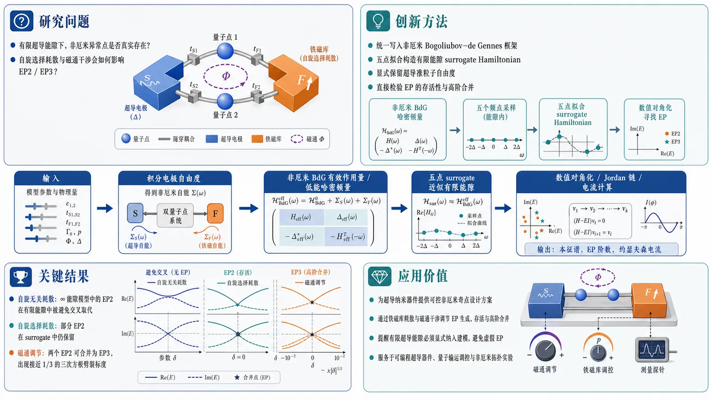
研究问题在平行双量子点约瑟夫森结中，引入铁磁库造成的自旋选择耗散与磁通干涉后，非厄米异常点（尤其是 EP2、EP3）在有限超导能隙下是否还能真实存在，还是会被有限能隙效应抹去。创新方法把平行双量子点—双超导电极—正常/铁磁库统一写入非厄米 Bogoliubov–de Gennes 框架；进一步用五点拟合构造有限能隙 surrogate Hamiltonian，显式保留超导准粒子自由度。Aha! 点在于：不是只看无限能隙静态近似，而是直接检验 EP 在有限能隙中的存活性，并利用磁通把两个 EP2 精准合并为 EP3，观察三次方根劈裂。工作流程输入：双量子点能级、点间隧穿、超导相位差、磁通、普通/铁磁库耗散参数；先积分掉电极自由度，得到非厄米 BdG 有效作用量和低能哈密顿量；再用五点 surrogate 近似有限超导能隙；随后数值对角化求本征谱、Jordan 链和异常点阶数；最后通过自由能导数与双正交密度矩阵两种方式计算约瑟夫森电流，并对比 EP 前后谱与输运行为。关键结果自旋无关耗散下，∞ 能隙模型中的 EP2 在有限能隙中被避免交叉取代，说明并不稳健；自旋选择耗散下，部分 EP2 在有限能隙 surrogate 中仍保留；磁通可进一步把两个 EP2 合并为 EP3，并出现接近 1/3 的三次方根劈裂标度；两种电流计算方法结果一致，且电流穿越保留下来的 EP 时保持连续。应用价值为超导纳米器件中的非厄米奇点提供可控设计方案：通过铁磁库的自旋选择耗散和磁通干涉调节 EP 的生成、存活与高阶合并；同时提醒有限超导能隙必须显式纳入建模，避免把静态近似下的“虚假 EP”误判为真实可观测奇点；对可编程超导器件、量子输运调控和非厄米拓扑实验设计具有直接参考价值。第一部分：核心概览（Overview）
这篇工作把平行双量子点约瑟夫森结、磁通干涉与铁磁库导致的自旋选择耗散统一到非厄米 Bogoliubov–de Gennes 框架中，系统检验异常点（EP）在有限超导能隙下是否存活。核心结论是：自旋无关耗散下的 EP2 在有限能隙中被抹去，而自旋选择耗散与磁通共同作用时，部分 EP2 可在有限能隙模型中保持；进一步可通过磁通把两个 EP2 合并成 EP3，并观测到三次方根劈裂。这为超导纳米结构中的鲁棒非厄米奇点提供了可控机制。
---
第二部分：结构化快速回顾
《Exceptional Points in a Parallel Double-Quantum-Dot Josephson Junction Coupled to a Ferromagnetic Reservoir》（None，）
- 背景：非厄米系统中的异常点（EP）是本征值与本征矢同时并合的奇点。约瑟夫森结中的 Andreev bound states 可被相位差、磁通、门电压和耦合调控，适合研究 EP；但无限超导能隙近似下得到的 EP 是否在有限能隙下仍然成立，仍未解决。
- 方法：构建并行双量子点—双超导电极—正常/铁磁库模型；积分掉电极后得到非厄米 BdG 有效作用量与低能有效哈密顿量；再用五点拟合建立有限能隙 surrogate Hamiltonian，并结合自由能导数与密度矩阵两种方式计算约瑟夫森电流。
- 结果：
1) 自旋无关耗散：无限能隙下的 EP2 在有限能隙中变成避免交叉。
2) 自旋选择耗散：部分 EP2 在有限能隙中保留。
3) 磁通调节可将两个 EP2 合并成 EP3，对应 cubic-root scaling。
4) 两种电流计算一致，且电流穿越 EP 时连续。
- 讨论：有限能隙修正会改变简并条件；EP 是否存活与偶/奇宇称扇区的谱关系相关，但这只是相关性，不是严格对称保护证明。
- 局限：五点 surrogate 是参数化近似；某些 EP 消失结论只对所选参数成立；原始连续自能模型的极点结构未做完全解析求解。
- 结论：自旋选择耗散与干涉磁通是控制超导纳米结构中鲁棒非厄米奇点的有效旋钮，有限能隙效应必须显式纳入。
---
第三部分：逐章节冷凝解析
I Introduction
非厄米 EP 作为开放量子系统奇点
- 异常点（EP）被定义为本征值与本征矢共同并合的缺陷点，区别于普通厄米简并。对应原文 *"where both eigenvalues and eigenvectors coalesce and the Hamiltonian becomes defective"*。
- EP 是复杂谱中的branch-point singularities，可携带与point-gap winding相关的拓扑荷。原文明确写出 *"branch-point singularities of complex spectra"* 与 *"topological charges associated with point-gap winding"*。
- 物理平台上，EP 已在微波、光机械和光子系统中观察到；超导介观器件被视为研究这类奇点的天然平台。
约瑟夫森结与 Andreev 谱提供可调非厄米平台
- 约瑟夫森结低能物理由 Andreev bound states（ABSs） 主导，能量受相位差、磁通、门电压和隧穿耦合控制。
- 量子点约瑟夫森结特别适合做谱工程，因为局域门和势垒可同时调控谱与超电流。
- 铁磁耦合引入spin-dependent proximity 与relaxation channels，使开放系统更自然地产生非厄米自能。
开放库导致有限寿命与非厄米自能
- 将结耦合到normal-metal 或 ferromagnetic reservoirs 后，Andreev 态具有有限寿命，等效于非厄米自能。原文表述为 *"endows these states with finite lifetimes and generates effective non-Hermitian self-energies"*。
- 因而复杂 ABS 谱可以支持非厄米 BdG 哈密顿量的奇异简并。
开放问题：无限能隙极限中的 EP 是否在有限能隙下保留
- 许多量子点处理默认 infinite superconducting gap，把诱导配对视为静态。
- 关键未决点是：*“Whether EPs found in that limit persist after finite-gap quasiparticle degrees of freedom are restored is therefore an open question.”*
- 这个问题构成全文的理论驱动。
并行双量子点的干涉自由度
- 并行双量子点允许通过相位差与Aharonov–Bohm flux 独立操控local pairing 与 nonlocal pairing。
- 这为 EP 的位置、并合与存活提供了双旋钮控制。
全文主张
- 自旋无关耗散在无限能隙下产生 EP2，但有限能隙后被消除。
- 自旋选择耗散与磁通结合时，部分 EP2 可在有限能隙 surrogate 中保留。
- 磁通可进一步把两个 EP2 合并成 EP3；但有限能隙修正会阻止相同参数下的三重并合。
- 这一节的核心句是 *"spin-selective dissipation and interferometric flux as effective control parameters for robust non-Hermitian singularities"*。
---
II Model Hamiltonian and Theoretical Method
系统构型与总哈密顿量
- 系统由两个量子点并联连接在两条超导电极之间，环路中穿过磁通；其中一个量子点还耦合到正常或铁磁电极。
- 总哈密顿量写为 H = H₀ + H_I，其中 H₀ 包含量子点、超导导带、正常/铁磁导带以及配对项，H_I 描述隧穿耦合。
量子点与超导电极的具体参数化
- 两个量子点能级满足 εⱼ↑ = εⱼ↓ = εⱼ，忽略 Zeeman 分裂。
- 双点间隧穿振幅为 t_d。
- 左右超导电极引入配对势 Δ 和相位 φ_L, φ_R，相位差定义为 δφ = φ_L − φ_R。
- 磁通以 Peierls 相位进入隧穿振幅：
V_L1 = V e⁻ⁱφ_B/⁴, V_R1 = V eⁱφ_B/⁴, V_L2 = V eⁱφ_B/⁴, V_R2 = V e⁻ⁱφ_B/⁴。
- 其中 φ_B = 2πΦB₀/Φ₀，Φ₀ = hc/e，即单电子磁通量子。
耗散的自旋结构
- 正常库情形下 W_↑ = W_↓ = W。
- 铁磁库情形下 W_↑ ≠ W_↓，从而产生spin-dependent dissipation。
- 宽带极限下，超导隧穿强度与耗散率定义为
Γ = 2πρ_SC V²，γ↑/↓ = πρ_N W²↑/↓。
路径积分与有效作用量
- 采用 Grassmann path integral 积分掉无相互作用电极，得到有效作用量
Sₑff = Σω_ₙ barψ_d 𝓜(ωₙ₎ ψ_d。
- 核心核矩阵 𝓜(ωₙ₎ 含有：
- 量子点本征能
- 点间耦合 t_d
- 超导自能 Σ_SC(ωₙ₎
- 耗散自能 Σ_N(ωₙ₎
- 这一步构成非厄米 BdG 描述的起点。
超导自能与正常/铁磁自能的结构
- Σ_SC(ωₙ₎ 具有频率依赖，并含有 arctan(D/√(Δ²+ωₙ²)) / √(Δ²+ωₙ²) 这样的能量依赖因子。
- 磁通 φ_B 与相位差 δφ 在自能矩阵中以 cos((δφ ± φ_B)/2) 和复相因子的形式进入，决定 ABS 的复杂谱。
- Σ_N(ωₙ₎ 只在与耗散量子点相关的 Nambu 分量上非零，并且与 sgn ωₙ 成正比，形成有效损耗。
自由能与约瑟夫森电流
- 配分函数写成正规化行列式之差：
ln Z = Σω_ₙ[ln det 𝓜(ωₙ₎ − ln det 𝓜₀(ωₙ₎]。
- 自由能 F = −β⁻¹ ln Z。
- 约瑟夫森电流由相位导数给出：
I_J = 2 ∂F / ∂δφ。
无限能隙极限下的低能有效哈密顿量
- 解析延拓后取 Δ → ∞，超导自能变成频率无关，得到低能有效哈密顿量 Hₑff = ψ_d^dagger 𝓗 ψ_d。
- 𝓗 是一个 4×4 非厄米 BdG 矩阵，显式包含：
- ε₁, ε₂
- t_d
- Γ cos((δφ ± φ_B)/2)
- −iγ_↑, −iγ_↓
- 为聚焦 EP，后文取 εⱼ = 0。
有限能隙 surrogate Hamiltonian 的必要性
- 因为宽带正常库自能只依赖 sgn ωₙ，超导部分被用五点拟合替代，构造 finite-level surrogate calculation。
- surrogate 哈密顿量分解为
H̃ = H̃_DQD + H̃_SC + H̃_T。
- H̃_DQD 显式保留 −iγ_↑ d†₁↑d₁↑ − iγ_↓ d†₁↓d₁↓。
- H̃_SC 用有限个超导能级 ~ξₗ 与耦合参数 γₗ 逼近连续库。
五点拟合参数
- 每个超导电极采用五点参数集：
- ~ξₗ/Δ = {9.233388, 1.64236, 0, −1.64236, −9.233388}
- γₗ/Δ = {6.53577, 0.840433, 0.3875, 0.840433, 6.53577}
- 这些参数来自 imaginary-time free-energy 的 shape-factor 拟合，不是在谱计算中重新调参。
- 隧穿幅度满足 t̃ₗ = √(γₗ Γ / 2)。
- 无库仑相互作用时，surrogate 哈密顿量可直接写成 BdG 形式并对角化。
---
III Results and Discussions
III.1 Spectrum
自旋无关耗散下的 EP2
- 先取 γ_↑ = γ_↓ = γ、φ_B = 0、t_d = 0、ε₁ = ε₂ = 0。
- 4 个本征值解析式为
E = −iγ/2 ± Γ cos(δφ/2) ± (i/2)√(γ² − 4Γ² cos²(δφ/2))。
- 参数取 Γ = 0.25, γ = 0.2 时，在
δφ = 2 arccos[γ/(2Γ)]
出现 EP2。
- 原文明确写出 *"the square-root discriminant in Eq. (19) vanishes, indicating the presence of EP2 characterized by the coalescence of both eigenvalues and eigenvectors."*
点间隧穿导致高重数并合，但阶数仍为二阶
- 当 t_d = γ/2 时，四个本征值在 δφ = π 汇聚，但缺陷阶数仍是 second order。
- 关键判断标准不是代数重数，而是Jordan block structure 与本征矢并合。原文说 *"algebraic multiplicity alone does not determine the EP order"*。
有限能隙使自旋无关 EP 消失
- 在 Δ = 1 的 surrogate 谱中，原无限能隙模型中的并合被avoided crossings 替代。
- 增大到 Δ = 10 后，大能隙行为恢复。
- 结论：对这组参数，finite-Δ energy dependence eliminates the exact coalescences。
- 这直接对应背景中的开放问题：无限能隙 EP 不一定能延续到有限能隙模型。
铁磁库引入自旋选择耗散后，EP2 部分存活
- 改为 γ_↑ = 0.75, γ_↓ = 0.25，对应铁磁 reservoir。
- 取 φ_B = 0.5π, t_d = 0 后，磁通与自旋依赖损耗共同控制谱。
- 在无限能隙下，δφ = 0.497772π 出现一对重合的 EP2，且其他相位偏置也有 EP。
- 虽然四条本征值分支在该点汇聚，但每个奇点仍是 second-order。
- 在 Δ = 1 的 finite-gap 计算中，两个 EP 被抬升，但两个 EP2 仍保留。
- 这说明自旋选择耗散比自旋无关耗散更能抵抗有限能隙修正。原文总结为 *"a subset of the EPs survives in the five-level finite-gap surrogate model with spin-selective dissipation."*
磁通可把两个 EP2 合并成 EP3
- 将磁通调到 φ_B = 0.24075202π，其余参数保持与上图相同。
- 更精细的参数下，φ_B = 0.24075202π 与 δφ = 0.51884305π 时，两个 EP2 合并到
E_EP = −0.142849, i。
- 数值劈裂满足
ΔE ∝ |δφ − φ_EP|^α, 其中 α = 0.3148 ≃ 1/3。
- null space 检验给出：
- dim ker A = 1
- dim ker A² = 2
- dim ker A³ = 3
- 这构成长度为 3 的 Jordan chain，直接识别为 EP3。
- 但在 Δ = 1 的 surrogate 模型中，同一参数点不保留三重并合；这被明确限定为参数特定结果，不能泛化为“所有三阶 EP 都被有限能隙消除”。
有限能隙修正改变的是简并条件，不是所有非厄米奇点的普适规律
- EP 的存活与否取决于连续自能是否保留与静态近似相同的退化条件。
- 这部分最关键的事实是：spin-selective dissipation + flux 能维持一部分 EP2，而spin-independent dissipation 在本例参数下被有限能隙完全抹去。
---
III.2 Josephson current and multi-particle representation
两种电流计算方法一致
- 约瑟夫森电流用自由能导数给出：I_J = 2 ∂F/∂δφ。
- 在 surrogate Hamiltonian 中，也可写为 I_J = 2⟨∂H̃/∂δφ⟩。
- 再通过 biorthogonal single-particle density matrix 计算期望值。
- 对 Δ = 1，Matsubara 求和（MS）与密度矩阵（DM）结果一致；对 Δ = 100，两者都趋近无限能隙低能模型。
- 这是一种数值一致性检验，不自动等价于一般性理论等价。
有限能隙降低电流幅度并改变 current-phase relation
- 相比大能隙极限，有限能隙 surrogate 模型的current amplitude 更小。
- 磁通通过改变双路径干涉，移动 current-phase 关系的位置。
- 电流曲线在穿过 EP2 时保持连续。
电流在 EP 处连续，非解析性主要体现在谱而非热力学响应
- 原文强调 *"the current remains continuous as the phase passes through the exceptional points"*。
- 这说明谱奇点与热力学响应之间并非同一层面的非解析性；EP 并不必然导致电流不连续。
多体 Fock 空间中的宇称分块
- 将 Hₑff 写入多体 Fock 空间后，16 维 Hilbert space 分成 8 维偶宇称 与 8 维奇宇称 两个块。
- 对应 Fig. 2(a) 的 EP2 情形，偶/奇宇称实能谱结构明显不同。
- 对应 Fig. 4(a) 的 EP3 相关参数，偶/奇宇称谱模式却表现为matching pattern。
- 这说明是否保留 EP 与宇称分辨的实能谱关系有关。
宇称分析的边界
- 宇称分析只是与有限能隙行为相关联的潜在微观解释，不能单独证明对称保护。
- 要证明保护机制，需要完整复谱匹配并找到明确的symmetry or similarity transformation。
- 因而宇称分析是对 Green-function 分离准则的补充，而不是替代。
---
IV Conclusion
主要结论一：自旋无关耗散下的 EP2 不稳健
- 在无限能隙近似中，自旋无关损耗可产生 EP2。
- 但对所考察参数，五点 finite-gap surrogate 把这些并合替换为avoided crossings。
主要结论二：自旋选择耗散与磁通可保留 EP2
- 在 铁磁库 诱导的自旋依赖耗散下，结合磁通后，一部分 EP2 在有限能隙模型中保留。
- 与连续 finite-gap self-energy 的直接比较表明，图 3 中的 EP 只发生了很小的相位偏移。
主要结论三：磁通可把两个 EP2 合并为 EP3，但有限能隙会改写条件
- 磁通调节可使两个奇点合并成 EP3，其无限能隙模型呈现 cubic-root splitting。
- 但相同精细参数在 Δ = 1 surrogate 中不再形成三重并合。
主要结论四：约瑟夫森电流在保留的 EP2 处连续
- 电流不会因为穿越 EP2 而跳变，说明热力学响应与谱奇点之间存在区分。
最终定位
- 自旋选择耗散 与 干涉磁通 被确立为调控非厄米简并的有效参数。
- 同时区分了：
1) 经过连续模型验证的结论
2) 只对特定 surrogate 参数成立的结论
---
第四部分：深度理解与语言支持（Understanding & Nuance）
1) 术语解析
Exceptional point (EP)
- 非厄米谱中的奇点，要求本征值和本征矢同时并合。
- 与普通简并不同，EP 对应哈密顿量defective，也就是不能完全对角化。
- 这里的 EP2/EP3 分别表示二阶/三阶异常点，对应并合的 Jordan 链长度为 2/3。
Finite-gap surrogate Hamiltonian
- 不是原始连续超导库的精确模型，而是用少数离散能级拟合连续谱得到的有限维替代模型。
- 作用是把频率依赖的超导自能变成可对角化的 BdG 问题。
- 语义上比“effective model”更弱，因为它主要服务于数值检验，而不是严格低能展开。
Jordan chain / Jordan block
- 用来刻画缺陷矩阵在 EP 处的广义本征结构。
- Jordan chain 长度 3 意味着一个 EP3，即一个本征值对应三个层次的广义本征矢。
- 这比“有三个本征值重合”更严格，因为重合不等于高阶 EP。
Point-gap winding
- 非厄米拓扑中围绕某个复数参考点的谱绕行数。
- 与传统能隙拓扑不同，关注的是复平面中的点隙而不是实能轴上的区间空隙。
- EP 常是 point-gap 拓扑变化的临界点。
Biorthogonal density matrix
- 非厄米体系里需要左、右本征态共同构造期望值。
- 与普通正交基下的密度矩阵不同，它能正确处理非厄米时间演化或稳态响应。
- 这里用它来计算约瑟夫森电流，是对 Matsubara 自由能法的交叉验证。
2) 疑难查证：为什么有限能隙会消除一部分 EP？
- 无限能隙近似把超导电极简化为静态诱导配对，只保留低能 ABS，等效哈密顿量维数低，奇点条件更容易满足。
- 有限能隙恢复了超导准粒子自由度，超导自能变成频率依赖，原先的简并方程被改写。
- 结果不是简单“加一点修正”，而是退化条件本身被重构：某些原来恰好满足 EP 条件的参数点，会因为额外的能量依赖而偏离。
- 自旋无关耗散之所以更脆弱，直观上是因为损耗通道不区分自旋，难以在磁通干涉和配对耦合的共同约束下维持奇点。
- 自旋选择耗散之所以更稳健，是因为 γ_↑ ≠ γ_↓ 让不同自旋扇区获得非对称虚部，反而更容易在某些磁通/相位组合下形成可持续的非厄米退化。
- EP3 的形成则更苛刻：需要两个 EP2 在参数空间中精确并合；有限能隙引入的额外频率结构会轻易打破这种高阶精细调谐。
---
第五部分：创新评估与关联（Synthesis & Novelty）
1) 新颖性判断
相对于 2022–2025 年相关工作的新意主要有三点：
- 把“有限能隙是否保留 EP”这个问题真正做实了
过去两三年的工作更多停留在非厄米 Josephson junction 的 Green-function 形式、相位偏置、多端口结构和 EP 预测。这里进一步比较了无限能隙 BdG 与 finite-gap surrogate，直接回答“静态配对近似下的 EP 是否稳健”。
- 把自旋选择耗散作为 EP 稳健性的关键控制旋钮
之前工作多关注总损耗、相位偏置或多端口拓扑。这里明确显示：normal reservoir 与 ferromagnetic reservoir 的差异足以决定 EP 在有限能隙下是否被抹去，说明spin-selective dissipation 不是细枝末节，而是主控变量。
- 给出 EP2 → EP3 的磁通合并路径，并检验三次方根劈裂
- 不只是寻找 EP，而是利用磁通把两个 EP2 精细调成 EP3。
- 还用 α = 0.3148 ≃ 1/3 的数值拟合和 Jordan chain 直接验证高阶奇点。
- 这一点把非厄米奇点从“存在性”推进到“可编程高阶合并”。
2) 解决了前人未解决的问题
- 未解决问题 1：无限能隙近似中找到的 EP 是否在真实有限能隙超导器件中存在。
解决方式：用 finite-gap surrogate 和连续自能对照，区分哪些 EP 真正存活，哪些只是静态近似产物。
- 未解决问题 2：高阶 EP 在超导 Josephson 体系里是否可由可实验调控参数实现。
解决方式：用 flux tuning 把两个 EP2 合并成 EP3，并明确给出参数点与劈裂标度。
- 未解决问题 3：非厄米奇点是否必然引起电流奇异。
解决方式：证明在保留的 EP2 处，Josephson current remains continuous，从而把“谱奇点”与“热力学连续性”区分开。
3) 领域地位
- 这篇工作位于非厄米拓扑、超导纳米器件 与 量子点 Josephson 物理 的交叉前沿。
- 相比只讨论谱结构的文献，这里更进一步把有限能隙真实性检验、多体宇称分析 与 电流响应 放在同一框架中，方法上更完整，物理上更接近可实验实现。
-
18
📊 含图深析
📄 摘要：将物理电池模型与数据驱动机器学习结合，反演锂离子电池退化参数。npj Computational Materials 条目未列出具体退化机制、实验循环数据量或误差指标；核心任务是从可观测电化学响应恢复不可直接测量的老化参数。
💡 亮点：物理建模与机器学习被用于锂离子电池退化参数逆推。该类方法可把容量衰减曲线转化为机制参数估计，服务寿命诊断。
📖 展开分析 + 配图
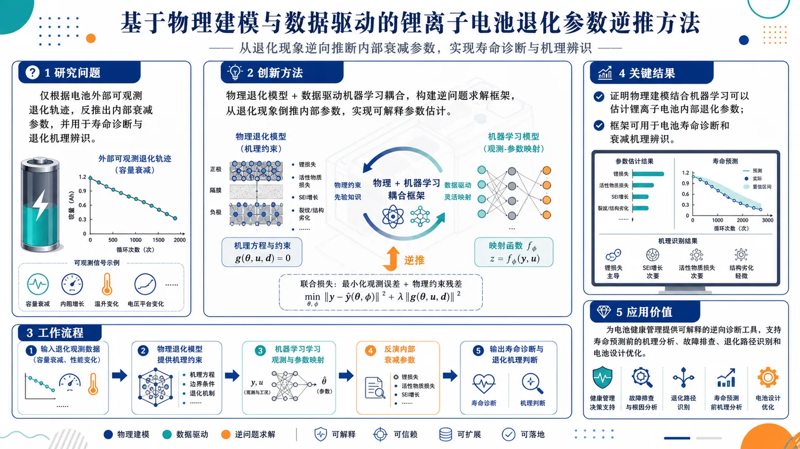
研究问题如何仅根据电池外部可观测的退化轨迹，反推出锂离子电池内部的衰减参数，并用于寿命诊断与退化机理辨识？创新方法将物理退化模型与数据驱动机器学习耦合，构建逆问题求解框架：不是只预测容量或寿命，而是从退化现象倒推内部参数，实现更可解释的参数估计。工作流程输入电池退化观测数据（如容量衰减、性能变化）→ 物理退化模型提供机理约束→ 机器学习学习观测与参数之间的映射→ 反演得到内部衰减参数→ 输出寿命诊断结果与退化机理判断。关键结果证明了通过物理建模结合机器学习，可以估计锂离子电池内部退化参数；该框架可用于电池寿命诊断和衰减机理辨识。摘要未给出具体误差指标或数值提升。应用价值为电池健康管理提供一种可解释的逆向诊断工具，可支持寿命预测前的机理分析、故障排查、退化路径识别和电池设计优化。核心概览
将物理电池模型与机器学习结合，做锂离子电池退化参数的逆向推断，属于电池健康诊断/寿命预测中的物理信息机器学习方向。
方法要点
- 采用物理电池模型刻画电池退化过程。
- 引入数据驱动机器学习，从可观测运行数据中学习映射关系。
- 做的是逆向推断：由外部可测数据反推出难直接测量的退化参数。
- 目标指向老化机理参数估计，服务于容量衰减诊断与寿命分析。
- 摘要未详述所用电池化学体系、具体参数形式、模型结构与训练方式。
关键结果
- 能够从可观测运行数据中估计难以直接测量的老化机理参数。
- 该方法可用于容量衰减诊断。
- 该方法可用于寿命分析。
- 摘要未详述具体精度、误差指标或实验对比结果。
创新性判断
- 可能的新颖点在于：把物理建模与机器学习结合，用于电池退化参数的逆问题求解，而不是仅做黑箱预测。
- 相较同方向纯数据驱动方法，这类思路通常更强调可解释性与机理一致性。
- 相较纯物理模型，这类思路可能更适合处理难观测参数的反演。
- 以上判断基于摘要，具体创新强度与优劣摘要未详述。
-
19
📄 摘要：提出零样本数字孪生框架，耦合实时视觉感知与几何无关的物理推理引擎。核心为热力学信息 GNN，基于度量-辛结构进行几何深度学习求解，使预测孪生体在物理域或边界条件变化时减少重训练/微调需求。
💡 亮点：热力学信息 GNN 被用于几何可变数字孪生。通过把物理结构写入图推理器，模型有望在新形状和边界条件下零样本泛化。
📖 展开分析 + 配图
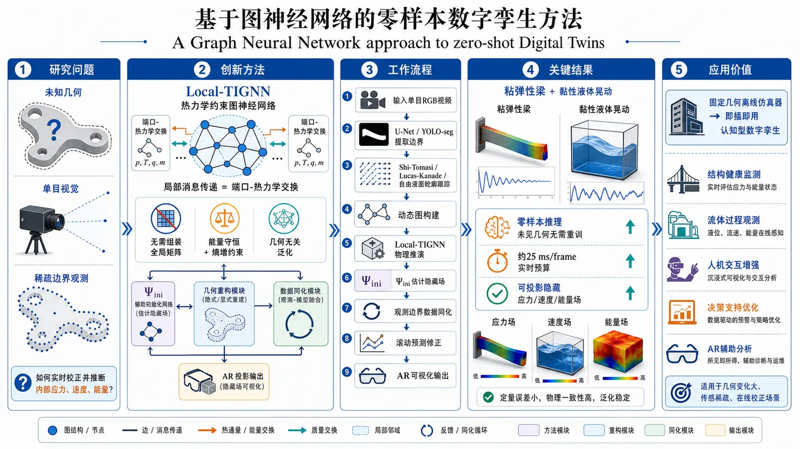
研究问题如何在未知几何、仅有单目视觉输入和稀疏边界观测的情况下，构建一个无需重训、可实时校正、还能推断内部应力、速度和能量等不可见力学状态的数字孪生系统。创新方法提出以 Local-TIGNN 为物理内核的 zero-shot 数字孪生框架，将热力学约束的图神经网络、辅助初始化网络 Ψᵢₙᵢ、单目视觉几何重建、闭环数据同化和 AR 投影整合起来。核心“Aha”点是把局部消息传递直接对应到端口-热力学交换，使模型在不组装全局矩阵的情况下仍满足能量守恒与熵增约束，同时具备几何无关泛化能力。工作流程输入单目 RGB 视频后，先用 U-Net 或 YOLO-seg 提取固体网格或流体边界；再通过 Shi-Tomasi、Lucas-Kanade 光流或自由液面轮廓跟踪生成动态图；随后由 Local-TIGNN 进行物理推演，Ψᵢₙᵢ 估计初始应力、速度和内能等隐藏场；接着利用观测边界进行连续数据同化修正滚动预测；最后将内部力学变量投影到增强现实中可视化输出。关键结果在粘弹性梁和黏性液体晃动两类差异很大的场景中，实现对未见几何的零样本推理；无需针对新对象重训即可稳定运行；达到约 25 ms/frame 的实时处理预算；还能把隐藏的应力场、速度场和能量分布投影到 AR 界面中。应用价值让数字孪生从“固定几何的离线仿真器”升级为“可在新对象上即插即用的认知型系统”，适用于实时结构监测、流体过程观测、人机交互决策支持和增强现实辅助分析，尤其适合几何变化大、传感稀疏、需要在线校正的工程场景。第一部分：核心概览
这篇工作把几何无关的图神经网络物理引擎、单目视觉重建、闭环数据同化和增强现实投影整合成一个zero-shot Digital Twin框架。核心贡献不是单一模型精度提升，而是把传统依赖固定几何和再训练的数字孪生，改造成能在未见几何上直接部署、实时校正、并输出不可见力学状态的认知型数字孪生。其学术位置处于Physics-Informed Deep Learning、Geometric Deep Learning 与 Digital Twin三者的交叉前沿，尤其延续并推进了 TIGNN / Local-TIGNN 的局部热力学约束路线。
---
第二部分：结构化快速回顾
《A Graph Neural Network approach to zero-shot Digital Twins》（None，）
背景：传统预测型数字孪生对几何和边界条件高度敏感，换几何往往需要重训或微调；纯数据驱动模型又缺乏物理一致性与外推能力。
方法：构建以 Local-TIGNN 为物理内核的闭环框架，结合 U-Net / YOLO-seg、Shi-Tomasi、Lucas-Kanade optical flow、单目三维投影、辅助初始化网络 Ψᵢₙᵢ 与持续数据同化。
结果：在粘弹性梁与黏性液体晃动两类不同物理场景中，实现对未见几何的零样本推理，达到约 25 ms/frame 的实时预算，并能投影潜在力学变量到 AR。
讨论：关键价值在于把“只看得见边界”的视觉感知升级为“能推理隐藏场”的物理认知；局部消息传递使热力学约束和 GNN 可扩展性兼容。
局限：可见文本依赖单目相机 + 已知深度 d、固体需要fiducial grid、液体假设近似平面运动；未见完整量化指标、消融和统计检验。
结论：框架把数字孪生从固定几何的离线预测工具推进为可在新对象上即插即用的zero-shot augmented intelligence system。
---
第三部分：逐章节冷凝解析
Abstract
- Zero-shot digital twin 的定义被重新设定
目标不是简单预测，而是把“real-time visual perception”与“geometry-agnostic, physics-informed reasoning engine”耦合起来，形成可在未知对象上直接工作的数字孪生。关键短语是 *"Zero-Shot Digital Twins"*、*"geometry-agnostic"*、*"real-time visual perception"*。
- 核心物理引擎是 Thermodynamics-Informed Graph Neural Network
体系中心是 Thermodynamics-Informed Graph Neural Network architecture，其基础是 metriplectic thermodynamic formalism。局部图消息传递被用来保证energy conservation与non-negative entropy production。对应原文为 *"enforces energy conservation and non-negative entropy production locally through graph message passing"*。
- 增加辅助 GNN 解决冷启动
另一个 Graph Neural Network 用于从稀疏初始视觉边界推断不可观测场，如stress tensors、velocity and energy distributions，专门缓解 *"numerical start-up transients"*。这一点把初始条件估计从工程假设变成学习问题。
- 闭环同化用于消除数值漂移
通过连续闭环数据同化，系统用deep segmentation networks与sparse optical flow跟踪宏观形变和自由液面，并动态修正autoregressive simulation rollout，目标是 *"eliminating numerical drift"*。
- 跨物理机制验证零样本泛化
仅用两个差异极大的场景验证：large deformations of a viscoelastic beam 与 non-linear sloshing of a viscous fluid。结果强调在“novel, unseen geometries”上无需 case-specific retraining，且可达到 *"approximately 25 ms per frame"* 的实时性，并支持 Augmented Reality 投影。
---
1 Introduction
- 传统数值模拟的地位与局限
PDE 驱动的 FEM/CFD 仍是工程仿真的基础，但实时场景推动了数据驱动方法。问题在于深度模型训练代价高、数据依赖强、难以扩展到 OOD conditions，且黑箱网络缺乏可解释性与稳健性。原文关键句是 *"frequently struggle with scalability and generalization"*、*"lack explicit physical interpretability and robustness"*。
- 物理先验成为必要条件
解决路径是把物理原则嵌入学习模型，即 Physics-Informed Deep Learning 与 Geometric Deep Learning。这里把“准确”与“可信”同时作为目标，而不是只优化预测误差。
- 从保守系统到耗散系统的理论演进
早期 Lagrangian/Hamiltonian 架构主要处理symplectic structure与energy conservation，但工程系统往往是dissipative and irreversible。因此需要 metriplectic formalism 与 GENERIC，同时满足第一、第二定律。关键表达是 *"strict adherence to both the first and second laws of thermodynamics"*。
- Local-TIGNN 的核心优势是局部化与可扩展性
传统 SPNN 常依赖全局 Poisson matrix L 和 dissipation matrix M，造成 *"quadratic memory complexity"*。Local-TIGNN 以 port-metriplectic 观点把系统拆成节点级热力学子系统，用局部消息传递代替全局矩阵组装，恢复 GNN 的线性结构。关键句是 *"avoids the assembly of global matrices"*、*"recovering the linear computational efficiency of GNNs"*。
- 数字孪生从刚性镜像升级为认知系统
传统 DT 在几何变化时需要重训/微调，难以部署在动态无结构环境。这里提出的是 Zero-Shot Digital Twins：从视觉重建几何、直接实例化物理仿真、再通过反馈在线校正。概念上把 DT 从“offline simulation”改造成“zero-shot augmented intelligence system”。
---
2 Related Work
#### 2.1 Physics-Informed Deep Learning
- PINNs 的优势与瓶颈
Physics-Informed Neural Networks 通过把 PDE 作为软约束加入损失，适合已知方程的问题；但 *"require explicit knowledge of the governing equations and continuous retraining for new boundary conditions"*，在动态环境中灵活性不足。
- 保守系统建模先于耗散系统建模
Lagrangian 与 Hamiltonian 方法能保证结构守恒，但不足以表达真实工程中的耗散、不可逆过程。于是需要 GENERIC 这类统一框架。
- GENERIC / TINNs 的理论保证
Structure-Preserving Neural Networks 或 Thermodynamics-Informed Neural Networks 通过构造性方式保证energy conservation与non-negative entropy production。这种“构造即满足”的特征比事后正则更强。
- 全局矩阵成为扩展瓶颈
早期 SPNN 的大问题是依赖全局矩阵，导致 *"quadratic memory complexity"*，与 GNN 的局部消息传递结构不兼容。这里明确指出瓶颈不是物理理论本身，而是离散实现方式。
- Local-TIGNN 作为突破口
Local-TIGNN 采用 port-metriplectic perspective，把每个节点视为开放热力学子系统，通过“ports”交换能量与熵通量，从而在不组装全局矩阵的前提下保留热力学约束。原文核心表述是 *"This local, scalable engine serves as the foundational backbone"*。
#### 2.2 Graph Neural Networks and Geometric Biases
- 欧氏卷积不足以处理物理网格
图像上的卷积难以直接适应物理仿真的unstructured, irregular discretizations。Geometric Deep Learning 通过利用对称性和几何先验，把网络推广到非欧几里得域。
- 消息传递是物理模拟中的主流范式
Graph Neural Networks 通过 Message Passing (MPNNs) 在局部邻域传播隐变量，近似复杂微分算子。关键点是：图网络不是“只适合图”，而是对离散 PDE 的天然表示。
- MeshGraphNets 代表了高保真学习模拟器
以 Encoder-Processor-Decoder 结构模拟流体和结构力学，说明几何图网络在高精度仿真上的有效性。原文关键词是 *"simulate fluid dynamics and structural mechanics with high fidelity"*。
- 纯数据驱动 GNN 的物理盲点
标准 GNN 虽高效，但仍是 *"purely data-driven black boxes"*，在低数据或 OOD 场景下难以严格满足守恒律。这里把“几何灵活性”与“物理一致性”之间的张力明确化。
- Local-TIGNN 作为结构性补丁
通过把 GENERIC 嵌入 message passing 更新，GNN 从统计近似器变成structure-preserving solver。这一步是方法上的桥梁，也是后文 zero-shot 能力成立的前提。
#### 2.3 Digital Twins, Perception, and Augmented Reality
- Digital Twin 向 Cognitive Digital Twin 演进
传统 DT 强调同步镜像，Cognitive Digital Twins 则是 *"augmented intelligence systems"*，需要语义知识与高级推理能力。差别不在“是否仿真”，而在“是否理解与推理”。
- 物理场景理解依赖视觉重建
真实部署要求系统能实时感知和重构场景。通过 RGB-D cameras 或类似视觉输入生成网格，可让模型对训练外对象即刻建模，形成 *"Zero-Shot deployment capability"*。
- 开放环预测会迅速漂移
真实传感往往稀疏且噪声大，只观察边界或自由液面时，纯开放环预测很快失真。于是 Hybrid Twins 与 data assimilation 成为必要组件。原文提到 *"preventing numerical drift and ensuring alignment with reality"*。
- 现有同化方法仍局限于静态几何
重要空白在于：现有方法多绑定于预设、几何静态模型，难以对geometry-agnostic learned simulators做连续视觉校正。这里点出了论文要补的洞。
- AR 是认知孪生的输出接口
Augmented Reality 不只是展示，而是把internal energy、velocity fields、stress tensors 等不可见变量直接投射到实体上，使数字孪生成为决策支持工具。关键表达是 *"rendering invisible physical quantities perceptible to the naked eye"*。
---
3 Methodology: Zero-Shot Cognitive Framework
- 整体架构是三段式闭环
系统由三部分组成：Local-TIGNN solver、Visual Perception Module、Data Assimilation Loop。其功能分别是物理推理、几何重建和现实校正。原文：*"three modular stages"*。
#### 3.1 The Local-TIGNN Engine: A Geometry-agnostic Solver
- GENERIC 是动力学基础
状态变量 z 的演化由
[
dotboldsymbol z= boldsymbol L(boldsymbol z)fracpartial Epartial boldsymbol z+boldsymbol M(boldsymbol z)fracpartial Spartial boldsymbol z
]
给出。这里 L 是skew-symmetric Poisson matrix，处理可逆部分；M 是symmetric positive semi-definite friction matrix，处理耗散部分。
- 退化条件保证热力学一致性
两个约束
[
boldsymbol L fracpartial Spartial boldsymbol z=0,quad
boldsymbol M fracpartial Epartial boldsymbol z=0
]
分别确保：可逆动力学不产生熵，耗散过程不改变总能量。这里是热力学守恒与熵增约束的数学核心。
- 局部端口- metriplectic 分解替代全局矩阵
将系统离散为图 (mathcal G=(mathcal V,mathcal E)) 后，每个节点 (i) 视为开放热力学子系统，与邻居通过 ports 交换通量。节点演化式把局部自项与邻域求和项分开，避免全局矩阵组装。
- GNN 的 message passing 对应物理交互项
式 (3) 中对邻居的求和项直接对应 GNN 的 aggregation。局部边特征学习 (Lᵢⱼ) 和 (Mᵢⱼ)，使网络学习的是interaction rules 而非全局映射。
- 几何无关性来自局部规则学习
因为物理被编码成局部交互规则，训练后的模型可直接用于新网格，即 *"can be deployed zero-shot on novel meshes generated by the perception system"*。这是零样本数字孪生成立的关键。
#### 3.2 Real-Time Perception and Graph Generation
- 视觉输入统一来自 RGB 流
系统从标准 RGB camera 接收视频流，然后针对固体与流体采用不同的重建策略。核心差异在于：固体是固定拓扑，流体是动态拓扑。
#### 3.2.1 Graph Construction for Solids
- 固体场景依赖高对比 fiducial grid
为了在平滑表面上稳定追踪形变，使用高对比fiducial grid pattern。这里不是物理必要，而是视觉工程上的辅助纹理。文中也明确说 *"by no means mandatory"*。
- 初始化阶段用 U-Net 提取网格结构
第一步用 U-net 做语义分割，识别网格线并输出二值 mask。之后进行 skeletonization 提取中心线，再用 Shi-Tomasi corner detection 找到网格交点。关键是建立一一对应的物理节点。
- Shi-Tomasi 的作用是稳定定位交点
该算法基于空间梯度矩阵的最小特征值，选取高角点响应位置，并施加阈值和最小距离约束。这样做是为了得到可靠的图节点，而不是普通边缘点。
- 后续帧改用 Lucas-Kanade 光流
为避免每帧重新分割造成开销和抖动，初始化后采用 Lucas-Kanade pyramidal optical flow 跟踪节点像素坐标。其假设包括 brightness constancy 和 spatial coherence。
- 单目三维投影依赖已知深度 d
2D 坐标通过相机内参 K 映射到 3D：
[
[X,Y,Z]^T=d,K⁻¹[u,v,1]^T
]
这里 Z 不是真测深度，而是假定为已知常数 d。这使得动态 3D graph (mathcal Gₜ) 可直接喂给物理引擎。
#### 3.2.2 Graph Construction for Fluids
- 流体采用更新拉格朗日描述
与固体固定拓扑不同，流体粒子在运动中重排，因此使用updated Lagrangian kinematic description，图拓扑随时间变化。
- 初始化用 YOLO-seg 同时分割容器与流体
语义模型 YOLO-seg 区分 container 与 fluid，并监测容器速度以确定外激励结束时刻 (t₀)。这一步把初始态与外部激励切换对齐。
- 单视角下重建 3D 液体粒子场的关键是三步法
第一，提取 2D 自由液面并找到最大液高；第二，构建容器内部 3D 体积并用 Poisson disk sampling 填充；第三，按垂直列进行 binning and trimming，把超过局部液面的粒子裁剪掉。
- 动态图连边通过距离阈值完成
通过 cutoff distance (r_c) 建立边 (mathcal E)，形成所需交互端口。这里的关键不是固定网格，而是基于近邻关系的动态拓扑。
- 实时跟踪只追踪自由液面轮廓
由于个体拉格朗日粒子难以视觉追踪，改用轮廓跟踪提取 (hₜₐᵣgₑₜ(boldsymbol x))。这是一种“只观测边界、内部靠物理补全”的策略。
- 列式纵向缩放实现体积同化
通过
[
γ(boldsymbol x)=frachₜₐᵣgₑₜ(boldsymbol x)-hbₒₜₜₒₘhₚᵣₑd(boldsymbol x)-hbₒₜₜₒₘ
]
对整列粒子做
[
zₙₑw⁽ⁱ⁾=hbₒₜₜₒₘ+γ(boldsymbol xᵢ₎₍z⁽ⁱ⁾-hbₒₜₜₒₘ)
]
这种做法不是只拉表面，而是整体保留内部相对分布，避免“只改表面导致内部塌陷/空洞”。
- 再用 min 操作防止过冲
最终通过
[
zfᵢₙₐₗ⁽ⁱ⁾=min(zₙₑw⁽ⁱ⁾,hₜₐᵣgₑₜ(boldsymbol xᵢ₎₎
]
限制粒子不越过观测液面，保证数值稳定。
#### 3.3 Inference of Latent Fields and State Initialization
- 辅助初始化网络解决冷启动
Ψᵢₙᵢ 从可观测节点坐标和辅助运动输入中推断不可见的内部状态变量。它不是纯黑箱回归器，而是受 GENERIC 约束的初值推断器。原文关键词是 *"cold start problem"*。
- 固体的初始化是静力平衡问题
对可变形结构，假设初始应力为零会违背自重平衡。因此 Ψᵢₙᵢ 映射变形后的节点位置到初始 stress tensor σ，避免数值松弛过程中的假振荡。
- 流体的初始化是速度场和内能场重建
对自由液面系统，输入包括容器几何、质量和运动历史，网络推断内部 velocity field v(x,t) 与 internal energy density e(x,t)。这给后续晃动预测提供了动力学一致的起点。
- 统一热力学框架下区分两类初值
结构和流体分别对应static initialization 与 dynamic initialization，但都受同一热力学约束。这样做的意义是让“初态估计”也具备物理可解释性。
#### 3.4 Closed-Loop Data Assimilation
- 开放环必然漂移，因此需要混合孪生
由于数值积分误差和外扰，开放环模拟会逐渐偏离现实。这里采用 Hybrid Twin strategy，用连续反馈回路把模型锚定到真实观测。
- 每个时间步执行预测-观测-修正三阶段
1) Prediction Step (Physics)：Local-TIGNN 给出 (hat zₜ₊₁)。
2) Observation Step (Perception)：视觉系统获取 (qₒbₛ,ₜ₊₁)。
3) Correction Step (Assimilation)：通过 Newtonian relaxation formalism 把预测向观测“nudged”过去。
- 同化只约束边界，内部隐变量仍由物理推断
视觉只校正几何边界或顶层粒子，内部的 stress tensors、velocity fields、internal energy distributions 由网络推断。这样保证既对齐现实，又不破坏内部动力学一致性。
- AR 投影依赖同化后的空间一致性
由于边界与内部状态同步，AR 里可视化的隐变量才能和实体保持空间对齐，避免“虚拟字段漂移到错误位置”。
---
4 Cognitive Digital Twins and Generalization
- DT 被定义为主动解释系统而非静态镜像
这里把数字孪生视为 "physical scene understanding" 的载体。重点从复制对象状态转向理解对象的动态演化。
#### 4.1 Zero-Shot Generalization via Local Learning
- 零样本泛化来自局部学习而不是全局记忆
设计目标不是记住某个网格，而是学习节点间的局部热力学交换律。原文核心是 *"shifts from global geometric mappings to localized interaction laws"*。
- 几何无关性是结构性归纳偏置
mesh independence 让模型能在训练未见的复杂几何上生成稳定、物理有效的模拟。这比单纯扩大数据量更接近“可迁移物理模型”。
#### 4.2 Reasoning on Unobservable Variables
- 认知能力体现在隐藏场重建
视觉只给出边界，但系统要从稀疏观察恢复latent fields，包括 pre-stress tensors 和 energy density distributions。这相当于从外部形变反推内部力学态。
- GENERIC 提供硬约束，而非经验相关性
与 GraphCast 这类在 latent 层表现出物理合理性的宏观模型不同，这里强调显式结构保证：隐藏变量推断受到energy conservation与entropy inequality约束。原文表述为 *"strictly bounded by localized energy conservation laws and entropy inequality constraints"*。
- 避免统计漂移和非物理伪影
这类约束使内部推理不至于在长时滚动中出现失真或“看起来合理但物理上错误”的结果。
#### 4.3 Bidirectional Flow and Decision Support
- 双向流是系统定义的一部分
物理→虚拟方向通过感知和同化保持同步；虚拟→物理方向通过 AR 把内部场和预测结果投回现实。原文是 *"continuous, bidirectional prediction-correction cycle"*。
- AR 把不可见量变成可操作信息
渲染应力场和耗散模式后，系统从“后台求解器”升级为“交互式决策支持工具”。这也是 Cognitive DT 与普通 DT 的功能分界。
---
5 Experiments and Results
- 验证对象是两类强异质物理系统
只可见到实验总述：一个是 viscoelastic cantilevered beam，一个是 viscous fluid 的自由液面晃动。选择这两者是为了体现结构力学与流体动力学的跨域泛化。
- 结果段强调的是一般性而非单一指标
已可见内容把重点放在 *"generalization capabilities"* 和 *"computational efficiency"* 上，而不是单纯精度排名。
- 当前可见文本未给出完整定量结果
可见部分仅出现总的实时预算 approximately 25 ms per frame，未见误差表、对照组、消融实验、P 值或置信区间。完整实验说服力仍依赖后续缺失内容。
---
第四部分：深度理解与语言支持
1. 关键术语解析
- Zero-shot
不是“零数据”，而是不针对目标几何做专门重训/微调。语境中更接近“direct deployment on unseen geometries”，强调迁移到未见对象。
- Predictive perception
不是普通视觉识别，而是“看见边界后还能推断物理未来和隐藏状态”。与传统 perception 的区别在于其输出包含stress / energy / velocity等物理量。
- Port-metriplectic
由 port（局部交互端口）和 metriplectic（兼容可逆哈密顿部分与不可逆耗散部分）组成。语境里指：每个节点都像一个开放热力学子系统，通过边与邻居交换通量。
- Data assimilation
不等于“简单纠偏”。这里是基于观测对数值状态做连续校正，使模拟轨迹贴近真实系统，同时尽量保留内部动力学结构。
- Geometry-agnostic
不是“完全不看几何”，而是不依赖固定网格拓扑或特定形状记忆。模型依靠局部规则而非全局几何模板工作。
2. 疑难查证与深入解释
- 为什么局部热力学约束能替代全局矩阵？
关键在于离散后，很多物理守恒关系本质上是局部通量平衡。把全局矩阵写成节点之间的局部交换项，既保留守恒律，又能与 GNN 的消息传递完全对齐。这样做的理论价值是把“物理结构”编码成“网络结构”。
- 为什么液体同化要“整列缩放”，而不是只改自由液面？
只改表面会造成表层与内部粒子的几何脱节，导致局部压缩、稀疏或人工空洞。整列缩放保持同一竖直柱内粒子的相对顺序与密度结构，更接近体积分布的连续变形。
- 为什么冷启动特别关键？
纯视觉输入通常只提供边界，内部应力、速度和能量场是不可见的。若初始场设为零，短时间内会出现剧烈、非物理的数值瞬态。Ψᵢₙᵢ 的作用就是在第一步就把系统放到近似热力学平衡的可行状态。
- AR 为什么不是“锦上添花”，而是系统闭环的一部分？
因为系统的输出不只是预测曲线，还包括内部场可视化。AR 把隐藏状态投回物理空间后，操作者能直接看到“看不见的力学量”，这会改变反馈决策方式，因此属于认知链路的一环。
---
第五部分：创新评估与关联
1. 创新性判断
这篇工作的新颖性主要集中在四层叠加，而不是单点改进：
- 把 Local-TIGNN 从纯物理模拟器推进到数字孪生内核
过去 2-5 年的 MeshGraphNets、Physics-Informed GNN、TIGNN 更强调高保真模拟或结构保持；这里进一步要求未见几何上的即插即用部署。
- 把视觉重建、物理推理与同化统一到一个闭环中
相关工作往往只覆盖其中一段：
- 只做 physics-informed learning，缺少实时 perception；
- 只做 vision-based digital twin，缺少严格物理约束；
- 只做 data assimilation，但模型仍绑定固定几何。
这里把三者合并，形成真正的zero-shot closed-loop CDT。
- 把“隐藏场推断”作为核心任务，而非附属输出
相比只预测位移或自由液面，这里显式重建 stress tensors、velocity fields、internal energy，并通过 GENERIC 约束保证物理可信。这个设计把数字孪生从“外形预测”提升到“内部机理可视化”。
- 把 AR 作为物理变量投影接口
许多工作把 AR 当作展示层，这里把它与同化后的潜变量直接耦合，形成面向决策支持的认知链路。
2. 相对近 2-5 年工作的真正推进点
- 相比 PINNs：不依赖显式 PDE 的软约束求解，而是通过 GNN + GENERIC 处理局部离散系统，适合复杂网格和未知几何。
- 相比 MeshGraphNets：不只是学习高精度 rollout，而是加入热力学守恒与未观测场推断，并引入视觉闭环。
- 相比 TIGNN / Local-TIGNN：不只是在固定网格上做结构保持仿真，而是把它嵌入单目视觉重建 + 数据同化 + AR 的完整数字孪生流程。
- 相比 vision-based DT / hybrid twins：不只做边界追踪和误差修正，而是对内部隐变量进行物理一致性推理。
3. 解决的前人未解决问题
最核心的问题是：能否在未知几何上，利用稀疏视觉边界，实时构造一个既物理可信又可闭环修正的数字孪生系统，而无需重训？
这篇工作给出的答案是：通过 geometry-agnostic Local-TIGNN、辅助初始化网络、连续 data assimilation 和 AR 投影，把这个问题拆成可执行的模块，并在固体与流体两个异质场景中验证可行性。
---
如果需要，我可以继续把这篇论文进一步整理成：
- 一页式学术笔记，
- 答辩/组会汇报提纲，或
- “创新点—方法—实验—局限”四列表格。
-
20
📊 含图深析
📄 摘要：针对 SS316L 激光粉末床熔融中高度瞬态、局域的温度场，构建参数化数据驱动神经网络并加入物理正则化。模型预测不同工艺参数下的时空热场，用于替代大规模参数扫描中的高成本数值热传导模拟。
💡 亮点：参数化神经网络预测 SS316L L-PBF 瞬态温度场，并用物理正则约束热行为。该方法面向工艺窗口搜索和熔池演化快速评估。
📖 展开分析 + 配图
研究问题在金属增材制造的激光粉床熔融过程中，如何在不同工艺参数下快速、准确地预测 SS316L 的瞬态局域时空温度场，并减少对昂贵大规模数值模拟的依赖？创新方法提出一种“参数化数据驱动神经网络 + 物理正则化”的融合框架：把工艺参数直接作为网络输入条件，统一建模不同制造条件下的热场变化；同时加入基于热传导等物理规律的正则项，强制预测结果符合物理一致性，从而实现对瞬态热行为的跨参数泛化预测。工作流程输入工艺参数与空间-时间坐标 → 参数化神经网络接收条件信息并学习热场映射 → 物理正则项约束输出满足热传导一致性 → 生成 SS316L 在不同工艺条件下的瞬态局域时空温度场 → 用于替代或减少高成本数值模拟。关键结果模型能够在不同工艺参数下预测 SS316L 的时空温度场，重点覆盖瞬态、局域的热行为；方法定位为可替代高代价的大规模数值模拟，兼具更轻量的推理能力与更强的物理一致性。摘要未给出具体数值精度、提升幅度或消融结果。应用价值为金属增材制造提供快速热场预测工具，可支持工艺参数优化、过程监控、热行为分析与制造质量控制，降低对高成本仿真计算的依赖，提升工艺开发效率。核心概览
面向 SS316L 激光粉末床熔融，提出一种带物理正则项的参数化数据驱动神经网络，用于预测不同工艺参数下的瞬态温度场，服务于参数扫描，替代高成本数值仿真。
方法要点
- 构建了参数化数据驱动神经网络，可随工艺参数变化进行温度场预测。
- 在网络训练中加入基于物理的正则项，以约束预测结果符合热传导/热过程的物理规律。
- 目标任务是预测瞬态温度场，而非仅静态或单点温度。
- 应用场景聚焦于SS316L 激光粉末床熔融（LPBF），属于金属增材制造热场建模。
关键结果
- 该方法可用于预测不同工艺参数下的瞬态温度场。
- 由于该过程具有强瞬态、局域热行为，方法被用于处理其复杂热响应。
- 论文明确指出，该方法旨在替代高成本的大规模数值仿真，用于参数扫描。
- 摘要未详述定量精度、对比实验或具体提升幅度。
创新性判断
- 可能的新颖点在于：将参数化神经网络与物理正则化结合，用于金属增材制造中的热场预测，而不是纯数据拟合。
- 相比常规数据驱动模型，这种做法可能更适合跨工艺参数泛化与物理一致性约束。
- 相比纯数值模拟，这种方法可能显著降低参数扫描成本，但具体效率和精度优势摘要未详述。
- 其创新性主要体现在面向 LPBF 热场的物理约束参数化学习框架，但摘要不足以判断是否有更独特的网络结构或新物理项设计。
-
21
📄 摘要：对 NiBi3 单晶测量电阻、磁化和 London 穿透深度。样品 Tc=4.0 K，电阻转变宽度约 0.20 K，剩余电阻比 RRR=18；在 H⊥b 与 H∥b 两种取向下由磁化估算上临界场。穿透深度结果支持全能隙 BCS 型超导。
💡 亮点：高质量 NiBi3 单晶显示 4.0 K 超导和窄电阻转变，RRR 达 18。取向依赖上临界场与穿透深度共同指向常规全能隙 BCS 超导。
-
22
📄 摘要：讨论参数化量子线路在可训练参数增多时的泛化行为，重点考察基于梯度训练的量子模型在未见数据上的表现。结果显示，随着模型规模扩大，PQCs 可出现测试性能改善，补充了形式化泛化界限难以刻画实际行为的不足。
💡 亮点：梯度训练的深参数化量子线路并不必然因参数增多而泛化恶化。该结果为量子机器学习中扩大线路规模提供了经验层面的正面证据。
-
23
📄 摘要：面向精密分子测量中的复杂内态控制，采用强化学习设计量子控制算法。分子可作为探测标准模型之外物理、基本对称性破缺、局域位置不变性和暗物质的传感器；算法针对分子俘获与操控中的控制序列优化问题。
💡 亮点：强化学习被用于自动设计分子量子控制策略，服务于高精度分子传感。该路线可减少人工脉冲调参，提升复杂分子内态操控的可扩展性。
-
24
📄 摘要：提出面向液体的统一机器学习多尺度建模框架，把从头算量子力学相互作用与更大尺度模拟连接。目标是在保持分子相互作用精度的同时突破纯量子计算的尺度限制，用于预测液体结构、动力学和宏观行为。
💡 亮点：该框架用机器学习桥接从头算精度与液体多尺度模拟。它面向凝聚相体系中长期存在的量子精度、采样尺度和可转移性矛盾。
-
25
📄 摘要：针对托卡马克边界与偏滤器等离子体，构建循环一致且具不确定性感知的神经代理模型。模型不仅可由输入参数快速预测热流、靶板条件和脱靶相关量，还能从观测反演输入参数并评估预测可靠性，适合参数扫描、优化和实时控制。
💡 亮点：循环一致代理模型把托卡马克边界等离子体的正向预测与反向参数反演统一起来。加入不确定性估计后，可支撑聚变装置控制中的可信快速仿真。
-
26
📄 摘要：在横场 Ising 链中定义 Kramers-Wannier 纠缠不对称，用量子信息量刻画非可逆对称性破缺。平衡态结果显示有序相与无序相间发生明显交叉，临界点处出现随系统增大更突出的低谷；并讨论离平衡动力学中的量子 Mpemba 效应。
💡 亮点：Kramers-Wannier 纠缠不对称把非可逆对称性破缺转化为可计算信息量。横场 Ising 链临界点低谷和离平衡 Mpemba 行为揭示了非可逆对称性热化的新诊断。
-
27
📄 摘要：用第一性原理计算研究 Ru₁₋ₓCrₓO₂(110) 掺杂交替磁体的隧穿磁阻。其共线反铁磁结构破坏宏观时间反演对称性，在动量空间产生自旋极化，即使净磁化近乎为零也可输出自旋极化电流，从而支持反铁磁隧穿磁阻效应。
💡 亮点：Cr 掺杂 RuO₂(110) 被计算预测可在零近似净磁化下产生自旋极化隧穿电流。该结果把交替磁动量自旋劈裂推进到具体 TMR 器件方案。
-
28
📄 摘要：针对单层 CrPS₄ 与 NiPS₃，结合第一性原理、第二原理自旋模型和蒙特卡洛模拟；交换张量由 DFT 的 LKAG 形式直接提取，并保留到数值收敛。长程交换相互作用会定性改变磁基态判断，提示只取少数近邻壳层并拟合总能的做法可能失效。
💡 亮点：CrPS₄/NiPS₃ 单层的磁序需纳入收敛的长程交换张量，而非少数近邻拟合。该结论直接影响二维磁体居里/奈尔温度与基态相图的可靠预测。
-
29
📄 摘要：在单材料 NbN 非对称纳米环中实现超导二极管效应，非互易临界电流来自几何破缺反演对称性，而非 Josephson 结、多层异质结构、铁磁元件或栅控结构。该极简结构展示了几何设计诱导的超导整流。
💡 亮点：非对称 NbN 纳米环仅靠几何破缺反演对称性产生超导二极管效应。单材料、无结结构降低了低温非互易超导器件的复杂度。
-
30
📄 摘要：利用 Shiba 对偶把交替磁性中的动量依赖自旋能带劈裂映射到 η-赝自旋，定义 BdG 体系中的 η-交替磁性。半填充二分格吸引 Hubbard 模型中，排斥驱动反铁磁对应吸引驱动 η-反铁磁，含均匀单重态配对与交错电荷密度调制；BdG 能带的对偶宇称-时间反演对称保护相应结构。
💡 亮点：交替磁性的动量选择性劈裂被推广到配对和电荷序的 η-赝自旋空间。该框架把 Hubbard 吸引模型、BdG 能带与交替磁概念统一起来。
-
31
📄 摘要：研究非 Kramers Γ₃ 双重态中四极矩、Ising 八极矩与 Raman 活性 E_g 声子模式的线性耦合。模型显示，八极序或四极序均可打破声子简并并产生赝手性声子劈裂，把偶极磁体中手性声子的异常磁响应推广到多极有序体系。
💡 亮点：Γ₃ 多极矩与 E_g 声子的对称允许耦合可由八极或四极有序诱导声子劈裂。该机制为用 Raman 声子探测隐藏多极序提供了可检验路径。
-
32
📄 摘要：分析最近邻烧绿石 Heisenberg 反铁磁体在 Dzyaloshinskii-Moriya 相互作用 D 下的全进全出相。领先阶磁振子相互作用显著重整自旋波能量；常见 D 强度下谱线变化明显，低 D 区域甚至出现重整频率为负，指向该相潜在不稳定。
💡 亮点：全进全出烧绿石反铁磁体的自旋波谱对磁振子相互作用高度敏感。低 D 下负频率重整表明线性自旋波可能高估该相稳定性。
-
33
📄 摘要：研究从任意费米多体态学习最大保真度 Slater 行列式的问题，关联 Hartree-Fock 与无模型层析。对由 m 个费米模构成的 n 费米子波函数，给出经典和量子算法，可在 mpoly(n,1/ε) 时间内返回保真度距最优值 ε 的 Slater 行列式，并证明匹配的困难性下界。
💡 亮点：该算法以可证明精度寻找任意费米态的最佳 Slater 近似。它连接平均场可解释表示、费米多体层析和量子算法复杂性边界。
-
34
📄 摘要：建立实空间理论框架，研究 n-三角烯与扶手椅石墨烯纳米带组成的人工量子材料。通过连续调节石墨烯构筑块耦合，追踪三角烯零能模和 AGNR 端态演化为紧致局域界面态，并分析端态控制下的量子输运。
💡 亮点：三角烯零能模与 AGNR 端态可在界面耦合下重组为局域输运通道。原子级石墨烯构筑块因此可用端态设计实现可控量子输运。
-
35
📄 摘要：针对计量学所需 N₂ 分子性质，从第一性原理计算温度与频率依赖的分子极化率和磁化率。在多种核间距上求取静态极化率、最高六阶 Cauchy 系数和各向同性磁化率的纯电子贡献，并进一步包含温度效应。
💡 亮点：高精度量子化学计算给出 N₂ 极化率、Cauchy 系数和磁化率的温频依赖。结果面向气体折射率、压力计量和基本常数实验所需的基准分子数据。
-
36
📄 摘要：面向固态自旋缺陷，把电压定义的微机械驱动与原位自旋读出集成到同一芯片。器件可编程调控缺陷宿主晶格状态，并把局域机械扰动定量映射到自旋哈密顿量频移，避免传统机械执行与量子读出分离的离散测量架构。
💡 亮点：片上微机械执行器直接调控自旋缺陷局域晶格，并用原位读出解析自旋哈密顿量变化。该力-量子接口把应变工程和量子传感集成到同一固态器件。
-
37
📄 摘要：综述二维半狄拉克准粒子：一个动量方向呈二次色散，另一方向呈线性色散。其通常出现在费米面连通性连续改变的拓扑 Lifshitz 相变边界；文章梳理基本性质及在合成晶格和量子材料中的实验证据。
💡 亮点：半狄拉克费米子把伽利略型二次色散与相对论型线性色散结合在同一二维准粒子中。其与拓扑 Lifshitz 转变相连，是理解各向异性量子临界与新型输运的关键对象。
-
38
📄 摘要：研究由非最大纠缠态组成的量子网络中如何借助网络结构建立长距离有效纠缠。工作围绕“并发”量化非最大纠缠资源，提出广义并发渗流框架，以评估在实验常见非理想纠缠边上实现量子通信的条件。
💡 亮点：广义并发渗流把非最大纠缠边的质量纳入量子网络连通性分析。该框架面向真实实验中难以制备最大纠缠态的长距离量子通信。
-
39
📄 摘要：以小带隙 p 型铁电半导体 ErMnO₃ 为物理储备池，考察白光脉冲诱导电流对时间变化光信号的响应。体系利用铁电半导体的非线性光电响应和衰减记忆，实现对时序光脉冲的识别可能性，面向低能耗物理储备计算。
💡 亮点：ErMnO₃ 的光致电流同时提供非线性响应与短时记忆，可直接处理时间编码光脉冲。铁电半导体因此成为光输入物理储备计算的候选平台。
-
40
📄 摘要：对自旋 1/2 Kitaev 候选材料 α-RuCl3 开展平面与隧穿电输运谱研究。该小带隙室温半导体低温发生 Mott-Hubbard 转变，隧穿谱解析出单个反铁磁磁振子模；相较中子散射，为范德华异质结构中的电子谱探测提供互补通道。
💡 亮点：α-RuCl3 的隧穿谱可直接分辨单个反铁磁磁振子模。电子隧穿测量为 Kitaev 候选材料在器件几何中的低能自旋激发读出提供手段。
-
41
📄 摘要：以硬方格晶格气模型为例，讨论如何在张量网络重整化群中纳入晶格对称性，包括反射等空间对称性及 PT 对称性。工作扩展了 TNRG 中主要针对 U(1)、SU(2) 等全局在位对称性的既有处理，服务于连续相变和自发对称性破缺分析。
💡 亮点：张量网络重整化被推广到显式处理晶格反射和 PT 对称性。硬方格模型案例有助于更准确识别临界点附近的空间对称性结构。
-
42
📄 摘要：提出从莫尔体系 STM 局域态密度图像直接提取原子尺度 Hubbard 相互作用 U 的图像识别流程。方法把实空间 LDOS 数据与关联模型参数联系起来，面向实验中 U 难以精确定量的问题；摘要强调系统化反演框架，未列出特定材料或误差数值。
💡 亮点：STM 图像识别被用于从莫尔 LDOS 图直接反演 Hubbard U。该方法把显微实验数据转化为强关联模型输入参数。
-
43
📄 摘要：采用紧束缚方法研究保持时间反演对称的量子自旋霍尔 N'SNSN' 约瑟夫森结。扩展几何中存在两类 Andreev 束缚态：中心 SNS 边缘的相位依赖态，以及 N' 区边缘离散能级 Eₙ 的相位无关态；后者可介导相反边缘之间的反散射。
💡 亮点：N'SNSN' 量子自旋霍尔结中，N' 区相位无关 Andreev 态可在不破坏时间反演下连接两条边。该机制改变拓扑约瑟夫森结中反散射的常规理解。
-
44
📄 摘要：Advanced Science 早期在线综述 HfO₂ 基铁电体在电循环下的唤醒与疲劳。题名指向氧空位/缺陷迁移、相稳定、畴重排和界面退化等可靠性机制，并归纳面向稳定器件的材料、界面与电操作策略；摘要未给出具体数值。
💡 亮点：HfO₂ 铁电器件的循环可靠性被归结为唤醒与疲劳的缺陷-相-界面耦合。该综述聚焦 CMOS 兼容铁电存储走向长寿命运行的关键失效机制。
-
45
📄 摘要：Advanced Materials 早期在线论文报道由铁电电荷转移共晶构成的可拉伸压电膜，用于能量采集和自供能可穿戴传感。题名显示材料兼具铁电压电响应与柔性可拉伸形态，面向机械能到电信号转换；摘要未提供输出功率、应变范围或压电系数。
💡 亮点：铁电电荷转移共晶被制成可拉伸压电膜，目标是柔性机械能采集与自供能传感。该路线把分子铁电体引入可穿戴压电器件。
-
46
📄 摘要：针对有限掺杂 Fermi-Hubbard 量子模拟器的站点分辨快照，构造并优化 Gutzwiller 投影变分态来描述掺杂反铁磁体。Phys. Rev. B 114, 065131 论文把简单理论波函数与冷原子显微观测连接，用于提取强关联和掺杂诱导关联结构。
💡 亮点：优化 Gutzwiller 投影态被用于解释 Fermi-Hubbard 模拟器的有限掺杂快照。该方法让冷原子数据与掺杂反铁磁的变分图像直接对接。
-
47
📄 摘要：Advanced Materials 早期在线论文报道一种铁磁极性金属，并实现高效电学切换磁性。题名表明材料同时具有极性金属结构与铁磁序，电场或电流可调控磁状态；摘要未提供化学组成、开关能耗、磁矩或工作温度等定量信息。
💡 亮点：铁磁极性金属中实现电学开关磁性，绕开绝缘铁电体对载流子的限制。若磁序和极性可共存稳定，将拓展非易失自旋电子材料库。
-
48
📄 摘要：PNAS 论文用时域太赫兹发射光谱探测倾斜反铁磁薄膜中的弱铁磁矩。常规磁探针随厚度降低灵敏度迅速下降，该方法可直接跟踪外延超薄膜弱倾斜磁矩及其自旋动力学，适用于自旋电子学中低磁矩反铁磁层表征。
💡 亮点：太赫兹发射谱可解析超薄倾斜反铁磁体的弱净磁矩。该无接触时域方法补足了薄膜反铁磁表征中常规磁测量的灵敏度缺口。
-
49
📄 摘要：Advanced Functional Materials 早期在线论文关注金属-铁电界面的缺陷介导极化稳定。题名显示通过界面缺陷调节退极化场、屏蔽电荷或局域结构畸变来稳定铁电极化；摘要未给出具体材料体系、缺陷种类、显微表征和第一性原理细节。
💡 亮点：金属-铁电界面的缺陷被视为稳定极化的主动因素，而非单纯失效源。该视角有助于设计薄膜铁电隧穿结和电容界面。
-
50
📄 摘要：研究微波磁场驱动下磁斯格明子的定向输运，即棘轮效应，并考察 Dzyaloshinskii-Moriya 相互作用各向异性的调制。Phys. Rev. B 114, 024421 论文表明 DMI 各向异性可改变斯格明子在绝缘或低导电材料中的无电流驱动运动特性。
💡 亮点：DMI 各向异性成为调控微波驱动斯格明子棘轮输运的关键旋钮。该机制适合电输运较差材料中的低损耗斯格明子操控。
-
51
📄 摘要：针对 X 射线吸收谱 1D 连续谱与 3D 原子结构两种异质模态，提出 Uni-XAS 双向多模态学习框架。方法用对齐驱动共享表征，同时处理正向谱预测和反向结构推断；针对相同原子的排列歧义，目标从粗粒度描述符推进到显式 3D 结构生成。
💡 亮点：Uni-XAS 将 XAS 谱预测与三维结构反演放入同一对齐表征空间。显式处理同种原子置换歧义后，谱学反演可从描述符级走向原子结构生成。
-
52
📄 摘要：围绕水系电催化界面，讨论界面氢键网络如何介导反应物、离子和水分子的传质过程。题目指向以机理解析方式连接局域溶剂结构、界面质量输运和电催化动力学，适用于理解水溶液电催化中的微观限制因素。
💡 亮点：界面氢键网络被作为水系电催化传质的核心调控变量。该视角把溶剂结构、离子迁移和电极反应速率耦合到同一界面机制中。
-
53
📄 摘要：用 CO₂ 吸入建立内感受威胁模型，比较小鼠暴露于合成空气、10% CO₂ 和 20% CO₂ 的反应。行为分析显示焦虑样防御反应随 CO₂ 强度变化，并结合自主神经与全脑神经元激活，解析高碳酸血症诱导的焦虑/惊恐样状态。
💡 亮点：10% 与 20% CO₂ 梯度暴露揭示内感受威胁强度对行为、自主神经和脑区激活的逐级调制。该动物模型可量化高碳酸血症相关焦虑和惊恐反应。
-
54
📄 摘要：评估 Magic Leap 2 头显是否能在无外部硬件条件下获取术中器官表面，用于可变形图像到实体配准。比较同一 SLAM 跟踪坐标系下两种方案：机载短程间接飞行时间深度传感器，以及基于 RGB 的学习式三维重建，并分析表面精度差异。
💡 亮点：Magic Leap 2 机载传感与 RGB 学习重建被用于自包含术中表面获取。该比较直接检验混合现实导航能否摆脱外部传感器和手工探针数字化。
-
55
📄 摘要：面向地下声阻抗成像的强病态反演：震源子波未知、观测带宽受限、测井标注通常少于 1% 道。RD-SCL 通过潜变量介导的交叉学习整合正演约束，避免依赖不准的先验子波或额外辅助网络，旨在提升少样本训练稳定性与成像质量。
💡 亮点：RD-SCL 用潜变量交叉学习处理未知子波和极少测井标注的声阻抗反演。该框架针对科学反演中的少样本与物理约束耦合难题。
-
56
📄 摘要：PILD 将扩散生成模型与物理约束统一为概率残差形式，引入服从 Laplace 分布的虚拟残差观测。为适配噪声扩散采样，框架把物理定律作为残差似然嵌入学习过程，缓解纯数据驱动扩散模型在工程与科学问题中不守恒或违背方程的缺陷。
💡 亮点：PILD 用概率残差把物理方程约束写入扩散模型训练与采样。该框架面向需要守恒律和方程一致性的科学生成建模。
-
57
📄 摘要：针对客户关系管理中离线准确率高但线上表现差的问题，提出 SalesLoop 强化学习框架。方法把模型预测与真实业务结果闭环连接，处理离线/线上指标不一致、点式/列表式目标错配和时间分布漂移三类差距。
💡 亮点：SalesLoop 用线上绩效反馈训练销售线索排序模型，显式对齐列表排序目标与业务结果。虽非材料科学，该框架体现了闭环强化学习处理分布漂移的通用范式。
-
58
📄 摘要：提出图小波压缩感知 GWCS，用谱图小波变换把图信号表示为稀疏、可解释的小波域系数，并结合尺度感知神经恢复。框架面向神经算子和物理信息神经网络训练数据昂贵的问题，在离线阶段压缩图信号以降低仿真数据准备与训练负担。
💡 亮点：GWCS 以谱图小波稀疏化图信号，并用尺度感知网络恢复。该方法为网格/图上科学数据提供可解释压缩与低数据训练入口。
-
59
📄 摘要：在激光尾场电子加速器的自截断电离注入工况中，引入单目标贝叶斯优化调节激光与等离子体参数。目标是快速把电子束调到自由电子激光驱动所需指标，解决 LWFA 参数耦合复杂、简单模型难以直观优化的问题。
💡 亮点：贝叶斯优化在 STII-LWFA 实验中闭环调参，直接面向 FEL 驱动电子束需求。该工作体现了机器学习在高维等离子体加速器优化中的实验价值。
-
60
📄 摘要：系统综述联邦学习在分布式网络威胁检测中的架构、应用和开放挑战。相较集中式入侵检测，FL 使企业系统、物联网和工业控制节点在不上传原始流量或日志的情况下协同训练模型，缓解带宽、时延、监管和保密约束。
💡 亮点：联邦学习将威胁检测模型训练下沉到分布式客户端，减少原始安全数据集中传输。该综述虽偏网络安全，但对分布式科学装置的数据隐私协同建模有可借鉴性。